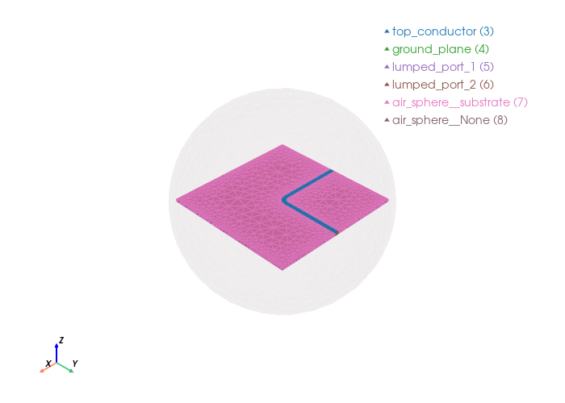

Signal integrity: L-shaped antenna — standard vs. chamfered#
This notebook reconstructs an L-shaped antenna to extract its S-parameters using a Driven execution in Palace, and compares its performance against two chamfered variants: an optimal miter (45° cut sized with the empirical miter formula) and a circular chamfer (quarter-circle arc rounding the outer corner).
Workflow Overview#
The analysis is structured into three main phases:
Meshing: Construction and meshing of all three geometries (standard, optimal miter, circular chamfer).
Simulation: Generation of the Palace configuration files and the driven sweeps for the three geometries.
Signal Integrity Comparison: Evaluation of the overlapping S-parameters, generation of an eye diagram, and a Bit Error Rate (BER) estimation derived directly from the transmission parameter, \(S_{21}\).
1. Initial Setup and Standard Geometry (Gmsh)#
In this section, we initialize the model, define physical properties, and generate the mesh using Gmsh alongside the palacetoolkit.
Simulation Parameters:
The ground plane length and width are defined as 0.06 m (
l1,w1), the line width as 0.002 m (w3), and the substrate height as 0.0013 m (h).The target operating frequency is set to 3.3 GHz (
freq).The substrate material is defined with a relative permittivity of 2.2 (
eps_r) and a loss tangent of 0.0009 (loss_tan).
Geometry and Meshing:
We define 3D volumes representing the substrate and a surrounding air sphere, along with 2D surfaces for the ground plane, feed lines, and lumped ports.
After assigning physical groups to these elements, a graded mesh is generated—featuring higher refinement near the conductors and ports—and saved to the file
l_antenna.msh.
2. The Chamfered Variants#
In this section, we build the two improved geometries. By chamfering the 90-degree bend we aim to reduce the excess parasitic capacitance at the corner, thereby smoothing the impedance transition and minimizing signal reflections.
Optimal miter: The miter fraction is sized with the empirical formula $\(M = 0.52 + 0.65\,e^{-1.35\,W/H}\)\( applied to the diagonal of the corner square \)D = \sqrt{2},w_3\(. For our geometry (\)W/H = w_3/h = 1.538\() this yields \)M \approx 0.60\(. The 45° chamfer leg length is \)c = \sqrt{2},M,D = 2,M,w_3\(, giving a diagonal depth \)X = M,D$.
Circular chamfer: The same outer corner is rounded by a quarter-circle arc that is tangent to both strip edges. With radius \(r = X(\sqrt{2}+1)\), the arc removes the same diagonal depth \(X\) as the miter — a fair, apples-to-apples comparison of the two chamfer shapes. The inner concave corner \((0, w_3/2)\) is rounded as well, by a fillet of radius \(r - w_3\) that is concentric with the outer arc and bulges into the notch. Because the two arcs share the same center, the conductor keeps its nominal width \(w_3\) through the whole bend; this inner fillet is applied only to the circular variant.
3. Signal Integrity Evaluation#
Here, we transition from analyzing pure microwave physics to evaluating real-world digital signal impact.
Key Metrics:
S-Parameters: We compare the reflection (\(S_{11}\)) and transmission (\(S_{21}\)) curves to observe how the impedance mismatch and attenuation differ between the three geometries.
Eye Diagram: By processing the frequency data into the time domain, we visually assess Inter-Symbol Interference (ISI). A more “open” eye indicates a cleaner, stronger signal.
BER Estimation: Finally, we estimate the Bit Error Rate mathematically from the \(S_{21}\) data to definitively quantify the performance improvement brought by the chamfered designs.
import math
import gmsh
from pathlib import Path
import numpy as np
import matplotlib.pyplot as plt
from palacetoolkit.simulation import generate_palace_config_from_entities, run_palace
from palacetoolkit.viz import view_mesh
from palacetoolkit.mesh import (
Entity,
run_entity_pipeline,
generate_3d_mesh,
create_graded_mesh,
)
Parameters:#
h : Patch height along z-axis, specified as a scalar in meters.
l1 : Ground plane length along x-axis, specified as a scalar in meters
w1 : Ground plane width along y-axis, specified as a scalar in meters
w3 : Strip line width along y-axis, specified as a scalar in meters.
air_height : Air box height along z-axis, specified as a scalar in meters.
air_margin : Air box margin along x and y axes, specified as a scalar in meters.
freq : Simulation frequency in GHz, specified as a scalar.
filename : Output mesh filename, specified as a string.
Chamfer parameters:
c_opt : Optimal miter leg length (45° chamfer), computed from the empirical miter formula.
r_circ : Circular chamfer radius, chosen to have the same diagonal depth as the miter.
l1: float = 0.06
w1: float = 0.06
w3: float = 0.002
h: float = 0.0013
air_height: float = 0.015
air_margin: float = 0.015
freq: float = 3.3
mesh_file: str = "l_antenna.msh"
eps_r: float = 2.2
loss_tan: float = 0.0009
wavelength = 3e8 / (freq * 1e9)
mesh_size = wavelength / 15
# ── Chamfer sizing: optimal miter + equivalent circular chamfer ─────────────
# Empirical miter formula: M = 0.52 + 0.65 * exp(-1.35 * W/H)
W_H = w3 / h
D_corner = math.sqrt(2) * w3 # diagonal of the corner square
M_miter = 0.52 + 0.65 * math.exp(-1.35 * W_H)
X_miter = D_corner * M_miter # diagonal depth of the cut
c_opt = math.sqrt(2) * X_miter # miter leg length = 2*M*w3
r_circ = X_miter * (math.sqrt(2) + 1) # circular chamfer radius (same diagonal depth)
r_in = r_circ - w3 # concentric with outer arc: bend keeps width w3
print(f"W/H = {W_H:.3f} | M = {M_miter:.3f} | miter leg c = {c_opt*1e3:.3f} mm | "
f"diagonal depth X = {X_miter*1e3:.3f} mm | circular radius r = {r_circ*1e3:.3f} mm | "
f"inner fillet r_in = {r_in*1e3:.3f} mm")
W/H = 1.538 | M = 0.601 | miter leg c = 2.406 mm | diagonal depth X = 1.701 mm | circular radius r = 4.107 mm | inner fillet r_in = 2.107 mm
Initialize the model#
gmsh.initialize()
gmsh.model.add("l_antenna")
kernel = gmsh.model.occ
Geometry Construction#
total_xmin = -l1/2 - air_margin
total_xmax = l1/2 + air_margin
total_ymin = -w1/2 - air_margin
total_ymax = w1/2 + air_margin
total_zmax = h + air_height
# 1. Create volumes
substrate = kernel.addBox(-l1/2, -w1/2, 0, l1, w1, h)
airsphere_radius = max(abs(total_xmin), abs(total_xmax), abs(total_ymin), abs(total_ymax), total_zmax)
air_sphere = kernel.addSphere(0.0, 0.0, 0.0, airsphere_radius)
kernel.synchronize()
# 2. Create 2D surfaces (ground, patch, ports)
ground_plane = kernel.addRectangle(-l1/2, -w1/2, 0, l1, w1)
strip_length_x = l1/2
strip_length_y = w1/2 + w3/2
feed_line_x = kernel.addRectangle(-l1/2, -w3/2, h, strip_length_x, w3)
feed_line_y = kernel.addRectangle(0, -w3/2, h, w3, strip_length_y)
top_conductor, top_map = kernel.fuse(
[(2, feed_line_x)], [(2, feed_line_y)],
removeObject=True, removeTool=True
)
kernel.synchronize()
# Lumped ports - build directly in-plane, no rotation
# Port 1: at x = -l1/2, vertical face
p1 = kernel.addPoint(-l1/2, -w3/2, 0)
p2 = kernel.addPoint(-l1/2, w3/2, 0)
p3 = kernel.addPoint(-l1/2, w3/2, h)
p4 = kernel.addPoint(-l1/2, -w3/2, h)
lp1_a = kernel.addLine(p1, p2)
lp1_b = kernel.addLine(p2, p3)
lp1_c = kernel.addLine(p3, p4)
lp1_d = kernel.addLine(p4, p1)
loop1 = kernel.addCurveLoop([lp1_a, lp1_b, lp1_c, lp1_d])
lumped_port_1 = kernel.addPlaneSurface([loop1])
kernel.synchronize()
# Port 2: at y = w1/2, vertical face
p5 = kernel.addPoint(0, w1/2, 0)
p6 = kernel.addPoint(w3, w1/2, 0)
p7 = kernel.addPoint(w3, w1/2, h)
p8 = kernel.addPoint(0, w1/2, h)
lp2_a = kernel.addLine(p5, p6)
lp2_b = kernel.addLine(p6, p7)
lp2_c = kernel.addLine(p7, p8)
lp2_d = kernel.addLine(p8, p5)
loop2 = kernel.addCurveLoop([lp2_a, lp2_b, lp2_c, lp2_d])
lumped_port_2 = kernel.addPlaneSurface([loop2])
kernel.synchronize()
# Define the entities which will be the physical groups.
entities = [
Entity("substrate", dim=3, btype="dielectric", mesh_order=1, tags=[substrate], loss_tan=loss_tan, eps_r=eps_r, mu_r=1.0),
Entity("air_sphere", dim=3, btype="dielectric", mesh_order=2, tags=[air_sphere], loss_tan=0.0, eps_r=1.0, mu_r=1.0),
Entity("top_conductor", dim=2, btype="pec", mesh_order=1, tags=[top_conductor[0][1]]),
Entity("ground_plane", dim=2, btype="pec", mesh_order=1, tags=[ground_plane]),
Entity("lumped_port_1", dim=2, btype="lumped_port", mesh_order=0, tags=[lumped_port_1], R=50.0, direction="+Z", excitation=True),
Entity("lumped_port_2", dim=2, btype="lumped_port", mesh_order=0, tags=[lumped_port_2], R=50.0, direction="+Z", excitation=False),
]
Info : [ 0%] Union
Info : [ 10%] Union
Info : [ 20%] Union - Performing Vertex-Face intersection
Info : [ 30%] Union
Info : [ 40%] Union
Info : [ 50%] Union
Info : [ 60%] Union
Info : [ 70%] Union - Filling splits of vertices
Info : [ 80%] Union - Splitting faces
Info : Cannot bind existing OpenCASCADE surface 9 to second tag 10
Info : Could not preserve tag of 2D object 10 (->9)
pg_map = run_entity_pipeline(entities)
lumped_port_1 = entities[-1].dimtags[0]
lumped_port_2 = entities[-2].dimtags[0]
# Refine near the top conductor and also locally refine the ports.
create_graded_mesh( wavelength,
ppw_near=80,
ppw_far=10,
set_as_background=True,
local_refinements = {lumped_port_1: 100, lumped_port_2 : 100})
mesh_sizes = {
"substrate": wavelength / 12,
"air_sphere": wavelength / 4,
"lumped_port_1": wavelength / 18,
"lumped_port_2": wavelength / 18,
"top_conductor": wavelength /10
}
generate_3d_mesh(entities, mesh_sizes, mesh_file, optimize=True, verbose=False)
gmsh.finalize()
Physical group 'substrate' (dim=3): pg=1, tags=[1]
Physical group 'air_sphere' (dim=3): pg=2, tags=[2]
Physical group 'top_conductor' (dim=2): pg=3, tags=[9]
Physical group 'ground_plane' (dim=2): pg=4, tags=[8]
Physical group 'lumped_port_1' (dim=2): pg=5, tags=[10]
Physical group 'lumped_port_2' (dim=2): pg=6, tags=[11]
Physical group 'air_sphere__substrate' (dim=2): pg=7, tags=[12, 13, 14, 15, 16, 17, 18, 19]
Physical group 'air_sphere__None' (dim=2): pg=8, tags=[20]
ignoring 3 curves from {'air_sphere__None'}
global: 28 curves, SizeMin=0.0011
ppw_near=80 ppw_far=10
SizeMax=0.0091 transition=0.0227
local: dimtag=(2, 11), ppw=100, SizeMin=0.0009
local: dimtag=(2, 10), ppw=100, SizeMin=0.0009
view_mesh(mesh_file, transparent_groups= "air_sphere__None")
Loading mesh file: l_antenna.msh
Groups to render transparent: air_sphere__None
Mesh loaded successfully with 2 cell blocks
Found 5964 triangles total
Physical group tags in mesh: {3: 'top_conductor', 4: 'ground_plane', 5: 'lumped_port_1', 6: 'lumped_port_2', 7: 'air_sphere__substrate', 8: 'air_sphere__None'}
Chamfered L-Antenna Variants#
We now build the two chamfered geometries and mesh them, before generating any configuration or simulation.
Optimal miter. The miter removes a right-triangle of leg length c_opt at the
outer corner of the bend. With \(W/H = 1.538\) the empirical miter formula gives
\(M \approx 0.60\) — noticeably larger than a hand-picked \(60\%\)-of-width chamfer.
Circular chamfer. The same outer corner is rounded by a quarter-circle arc of
radius r_circ tangent to both strip edges. The arc is centered at
\((w_3 - r_{\text{circ}},\, -w_3/2 + r_{\text{circ}})\) and bulges into the corner,
removing a crescent of material. Because the arc and the miter share the same
diagonal depth X_miter, any performance difference between them is due to the
chamfer shape (sharp 45° cut vs. smooth arc), not its size.
Inner-corner fillet. The circular variant also rounds the inner concave
corner \((0, w_3/2)\) with a fillet of radius r_in = r_circ - w3. The fillet arc
is centered at \((-r_{\text{in}},\, w_3/2 + r_{\text{in}})\) and bulges into the
notch (the void), smoothly adding a sliver of conductor around the reflex
corner instead of cutting into it.
The inner arc shares the center of the outer chamfer arc, so the two radii
differ by exactly \(w_3 = 2\,\text{mm}\): the conductor keeps a constant width
(measured perpendicular to the current path) through the bend — the circular
variant rounds the corner without locally widening the strip. Both the outer
chamfer and the inner fillet are drawn only in build_variant("circular", ...);
the miter and the standard geometries keep square inner corners.
Both variants are built by the single build_variant() helper below, which
constructs the L-shaped top conductor with a polygon miter, or with circular arcs
that round the outer corner and (for the circular variant) fillet the inner
corner. The helper then runs the entity pipeline and generates the graded 3D mesh.
def build_variant(mode: str, mesh_file: str):
'''Build an L-antenna variant with a 45° miter or a circular chamfer.'''
total_xmin = -l1/2 - air_margin
total_xmax = l1/2 + air_margin
total_ymin = -w1/2 - air_margin
total_ymax = w1/2 + air_margin
total_zmax = h + air_height
gmsh.initialize()
gmsh.model.add(f"l_antenna_{mode}")
kernel = gmsh.model.occ
if mode == "miter":
cut = c_opt
elif mode == "circular":
cut = r_circ
else:
raise ValueError(f"unknown mode: {mode}")
# L-shaped top conductor: the outer corner (w3, -w3/2) is chamfered. The
# circular variant additionally rounds the inner concave corner (0, w3/2)
# with a fillet of radius r_in that bulges into the notch (the void).
r_fillet = r_in if mode == "circular" else None
poly_pts = [
(-l1/2, -w3/2, h),
(w3 - cut, -w3/2, h),
(w3, -w3/2 + cut, h),
(w3, w1/2, h),
(0, w1/2, h),
]
if r_fillet is not None:
# tangent points on the vertical (x=0) and horizontal (y=w3/2) edges
poly_pts.append((0, w3/2 + r_fillet, h))
poly_pts.append((-r_fillet, w3/2, h))
else:
poly_pts.append((0, w3/2, h))
poly_pts.append((-l1/2, w3/2, h))
pt_tags = [kernel.addPoint(x, y, z) for x, y, z in poly_pts]
lines = []
for i in range(len(pt_tags)):
j = (i + 1) % len(pt_tags)
if mode == "circular" and i == 1:
# quarter-circle arc rounding the outer corner (bulges into it)
arc_center = kernel.addPoint(w3 - cut, -w3/2 + cut, h)
lines.append(kernel.addCircleArc(pt_tags[i], arc_center, pt_tags[j]))
elif mode == "circular" and i == 5 and r_fillet is not None:
# fillet arc on the inner concave corner, bulging into the notch
fillet_center = kernel.addPoint(-r_fillet, w3/2 + r_fillet, h)
lines.append(kernel.addCircleArc(pt_tags[i], fillet_center, pt_tags[j]))
else:
lines.append(kernel.addLine(pt_tags[i], pt_tags[j]))
loop = kernel.addCurveLoop(lines)
top_conductor = kernel.addPlaneSurface([loop])
kernel.synchronize()
substrate = kernel.addBox(-l1/2, -w1/2, 0, l1, w1, h)
airsphere_radius = max(abs(total_xmin), abs(total_xmax),
abs(total_ymin), abs(total_ymax), total_zmax)
air_sphere = kernel.addSphere(0.0, 0.0, 0.0, airsphere_radius)
ground_plane = kernel.addRectangle(-l1/2, -w1/2, 0, l1, w1)
# Port 1 at x = -l1/2
pa = kernel.addPoint(-l1/2, -w3/2, 0)
pb = kernel.addPoint(-l1/2, w3/2, 0)
pc = kernel.addPoint(-l1/2, w3/2, h)
pd = kernel.addPoint(-l1/2, -w3/2, h)
la = kernel.addLine(pa, pb)
lb = kernel.addLine(pb, pc)
lc = kernel.addLine(pc, pd)
ld = kernel.addLine(pd, pa)
loop1 = kernel.addCurveLoop([la, lb, lc, ld])
lumped_port_1 = kernel.addPlaneSurface([loop1])
# Port 2 at y = w1/2
pe = kernel.addPoint(0, w1/2, 0)
pf = kernel.addPoint(w3, w1/2, 0)
pg = kernel.addPoint(w3, w1/2, h)
ph = kernel.addPoint(0, w1/2, h)
le = kernel.addLine(pe, pf)
lf = kernel.addLine(pf, pg)
lg = kernel.addLine(pg, ph)
lh = kernel.addLine(ph, pe)
loop2 = kernel.addCurveLoop([le, lf, lg, lh])
lumped_port_2 = kernel.addPlaneSurface([loop2])
kernel.synchronize()
entities = [
Entity("substrate", dim=3, btype="dielectric", mesh_order=1,
tags=[substrate], loss_tan=loss_tan, eps_r=eps_r, mu_r=1.0),
Entity("air_sphere", dim=3, btype="dielectric", mesh_order=2,
tags=[air_sphere], loss_tan=0.0, eps_r=1.0, mu_r=1.0),
Entity("top_conductor", dim=2, btype="pec", mesh_order=1,
tags=[top_conductor]),
Entity("ground_plane", dim=2, btype="pec", mesh_order=1, tags=[ground_plane]),
Entity("lumped_port_1", dim=2, btype="lumped_port", mesh_order=0,
tags=[lumped_port_1], R=50.0, direction="+Z", excitation=True),
Entity("lumped_port_2", dim=2, btype="lumped_port", mesh_order=0,
tags=[lumped_port_2], R=50.0, direction="+Z", excitation=False),
]
# The pipeline does the boolean fragment, assigns physical groups and builds
# the substrate/air interface surfaces for us.
pg_map = run_entity_pipeline(entities)
lumped_port_1 = entities[-1].dimtags[0]
lumped_port_2 = entities[-2].dimtags[0]
create_graded_mesh(wavelength,
ppw_near=80,
ppw_far=10,
set_as_background=True,
local_refinements={
lumped_port_1: 30,
lumped_port_2: 30
})
mesh_sizes = {
"substrate": wavelength / 12,
"air_sphere": wavelength / 4,
"lumped_port_1": wavelength / 18,
"lumped_port_2": wavelength / 18,
"top_conductor": wavelength / 10
}
generate_3d_mesh(entities, mesh_sizes, mesh_file,
optimize=True, verbose=False)
gmsh.finalize()
return entities, pg_map
entities_miter, pg_map_miter = build_variant("miter", "l_antenna_miter.msh")
entities_circ, pg_map_circ = build_variant("circular", "l_antenna_circular.msh")
Physical group 'substrate' (dim=3): pg=1, tags=[1]
Physical group 'air_sphere' (dim=3): pg=2, tags=[2]
Physical group 'top_conductor' (dim=2): pg=3, tags=[1]
Physical group 'ground_plane' (dim=2): pg=4, tags=[9]
Physical group 'lumped_port_1' (dim=2): pg=5, tags=[10]
Physical group 'lumped_port_2' (dim=2): pg=6, tags=[11]
Physical group 'air_sphere__substrate' (dim=2): pg=7, tags=[12, 13, 14, 15, 16, 17, 18, 19]
Physical group 'air_sphere__None' (dim=2): pg=8, tags=[20]
ignoring 3 curves from {'air_sphere__None'}
global: 29 curves, SizeMin=0.0011
ppw_near=80 ppw_far=10
SizeMax=0.0091 transition=0.0227
local: dimtag=(2, 11), ppw=30, SizeMin=0.0030
local: dimtag=(2, 10), ppw=30, SizeMin=0.0030
Physical group 'substrate' (dim=3): pg=1, tags=[1]
Physical group 'air_sphere' (dim=3): pg=2, tags=[2]
Physical group 'top_conductor' (dim=2): pg=3, tags=[1]
Physical group 'ground_plane' (dim=2): pg=4, tags=[9]
Physical group 'lumped_port_1' (dim=2): pg=5, tags=[10]
Physical group 'lumped_port_2' (dim=2): pg=6, tags=[11]
Physical group 'air_sphere__substrate' (dim=2): pg=7, tags=[12, 13, 14, 15, 16, 17, 18, 19]
Physical group 'air_sphere__None' (dim=2): pg=8, tags=[20]
ignoring 3 curves from {'air_sphere__None'}
global: 30 curves, SizeMin=0.0011
ppw_near=80 ppw_far=10
SizeMax=0.0091 transition=0.0227
local: dimtag=(2, 11), ppw=30, SizeMin=0.0030
local: dimtag=(2, 10), ppw=30, SizeMin=0.0030
view_mesh("l_antenna_miter.msh", transparent_groups="air_sphere__None")
view_mesh("l_antenna_circular.msh", transparent_groups="air_sphere__None")
Loading mesh file: l_antenna_miter.msh
Groups to render transparent: air_sphere__None
Mesh loaded successfully with 2 cell blocks
Found 5948 triangles total
Physical group tags in mesh: {3: 'top_conductor', 4: 'ground_plane', 5: 'lumped_port_1', 6: 'lumped_port_2', 7: 'air_sphere__substrate', 8: 'air_sphere__None'}
Loading mesh file: l_antenna_circular.msh
Groups to render transparent: air_sphere__None
Mesh loaded successfully with 2 cell blocks
Found 5950 triangles total
Physical group tags in mesh: {3: 'top_conductor', 4: 'ground_plane', 5: 'lumped_port_1', 6: 'lumped_port_2', 7: 'air_sphere__substrate', 8: 'air_sphere__None'}

Simulation Configuration#
We define the key parameters for the driven electromagnetic simulation: the frequency sweep range, material properties (dielectric constant and loss tangent of the substrate), and solver-specific settings such as port impedance and element order.
output_file : output filename for the configuration JSON file
freq_min/freq_max/freq_step : driven frequency sweep (GHz)
eps_r: relative permittivity of the substrate
loss_tan: loss tangent of the substrate
port_impedance: characteristic impedance of the lumped ports (Ohms)
solver_order: order of the finite element basis functions
output_file_driven: str = "l_antenna_driven.json"
eps_r: float = 2.2
loss_tan: float = 0.0009
port_impedance: float = 50.0
solver_order: int = 2
freq_min = 1.0
freq_max = 15.0
freq_step = 0.5
Generating the Palace Configuration File#
We assemble the simulation parameters into the JSON configuration for the driven sweep used to obtain the S-parameters.
config_driven = generate_palace_config_from_entities(
entity_defs=[e.to_dict() for e in entities],
pg_map=pg_map,
mesh_file=mesh_file,
output_file=output_file_driven,
sim_type="driven",
L0=1.0,
solver_order=solver_order,
absorbing_order=1,
farfield=False,
freq_min=freq_min,
freq_max=freq_max,
freq_step=freq_step,
linear_maxits=300,
)
Palace config written to l_antenna_driven.json
output_file_miter: str = "l_antenna_miter_driven.json"
output_file_circ: str = "l_antenna_circular_driven.json"
def make_config(entities, pg_map, mesh_file, output_file):
'''Generate a Palace driven-sweep configuration for a variant.'''
return generate_palace_config_from_entities(
entity_defs=[e.to_dict() for e in entities],
pg_map=pg_map,
mesh_file=mesh_file,
output_file=output_file,
sim_type="driven",
L0=1.0,
solver_order=solver_order,
absorbing_order=1,
farfield=False,
freq_min=freq_min,
freq_max=freq_max,
freq_step=freq_step,
linear_maxits=300,
)
config_miter = make_config(entities_miter, pg_map_miter,
"l_antenna_miter.msh", output_file_miter)
config_circ = make_config(entities_circ, pg_map_circ,
"l_antenna_circular.msh", output_file_circ)
Palace config written to l_antenna_miter_driven.json
Palace config written to l_antenna_circular_driven.json
Running PALACE#
run_palace(config_file="l_antenna_driven.json", num_procs=1)
Running: /home/martin/.cache/palacetoolkit/runtime/palace-cpu-v0.17.0/bin/palace --serial /tmp/palacetoolkit-docs.dabfYK/docs/examples/l_antenna_driven.json
>> /home/martin/.cache/palacetoolkit/runtime/palace-cpu-v0.17.0/bin/palace-x86_64.bin /tmp/palacetoolkit-docs.dabfYK/docs/examples/l_antenna_driven.json
_____________ _______
_____ __ \____ __ /____ ____________
____ /_/ / __ ` / / __ ` / ___/ _ \
___ _____/ /_/ / / /_/ / /__/ ___/
/__/ \___,__/__/\___,__/\_____\_____/
Git changeset ID: v0.17.0-194-g01f5d9bd1
Running with 1 MPI process, 1 OpenMP thread
Device configuration: omp,cpu
Memory configuration: host-std
libCEED backend: /cpu/self/xsmm/blocked
Added 19 elements in 1 iterations of local bisection for under-resolved interior boundaries
Added 776 duplicate vertices for interior boundaries in the mesh
Added 1877 duplicate boundary elements for interior boundaries in the mesh
Characteristic length and time scales:
Lc = 9.000e-02 m, tc = 3.002e-01 ns
Finished partitioning mesh into 1 subdomain
Mesh curvature order: 1
Mesh bounding box:
(Xmin, Ymin, Zmin) = (-4.498e-02, -4.498e-02, -4.500e-02) m
(Xmax, Ymax, Zmax) = (+4.491e-02, +4.499e-02, +4.500e-02) m
Parallel Mesh Stats:
minimum average maximum total
vertices 6787 6787 6787 6787
edges 42101 42101 42101 42101
faces 67963 67963 67963 67963
elements 32646 32646 32646 32646
neighbors 0 0 0
minimum maximum
h 0.00617428 0.152165
kappa 1.08317 6.51395
Estimated current per-rank memory usage is: Min. 78.4M, Max. 78.4M, Avg. 78.4M, Total 78.4M
Estimated current per-node memory usage is: Min. 78.4M, Max. 78.4M, Avg. 78.4M, Total 78.4M
Configuring Robin absorbing BC (order 1) at attributes:
8
Configuring Robin impedance BC for lumped ports at attributes:
5: Rs = 7.692e+01 Ω/sq, n = (-1.0,+0.0,+0.0)
6: Rs = 7.692e+01 Ω/sq, n = (+0.0,+1.0,+0.0)
Configuring lumped port circuit properties:
Index = 1: R = 5.000e+01 Ω
Index = 2: R = 5.000e+01 Ω
Configuring lumped port excitation source term at attributes:
5: Index = 1
Configuring Dirichlet PEC BC at attributes:
3-4
Computing adaptive fast frequency response for:
Excitation with index 1 has contributions from:
Lumped port 1
Beginning PROM construction offline phase:
29 points for frequency sweep over [1.000e+00, 1.500e+01] GHz
Assembling system matrices, number of global unknowns:
H1 (p = 2): 48888, ND (p = 2): 220128, RT (p = 2): 301827
Operator assembly level: Partial
Mesh geometries:
Tetrahedron: P = 20, Q = 14 (quadrature order = 4)
Assembling multigrid hierarchy:
Level 0 (p = 1): 42101 unknowns
Level 1 (p = 2): 220128 unknowns
Level 0 (auxiliary) (p = 1): 6787 unknowns
Level 1 (auxiliary) (p = 2): 48888 unknowns
Residual norms for GMRES solve
0 (restart 0) KSP residual norm 5.342880e+02
1 (restart 0) KSP residual norm 1.203754e+01
2 (restart 0) KSP residual norm 9.392751e+00
3 (restart 0) KSP residual norm 4.870931e+00
4 (restart 0) KSP residual norm 2.430059e+00
5 (restart 0) KSP residual norm 6.115924e-01
6 (restart 0) KSP residual norm 5.403568e-01
7 (restart 0) KSP residual norm 1.605232e-01
8 (restart 0) KSP residual norm 1.250827e-01
9 (restart 0) KSP residual norm 6.073629e-02
10 (restart 0) KSP residual norm 1.603924e-02
11 (restart 0) KSP residual norm 1.156787e-02
12 (restart 0) KSP residual norm 5.051080e-03
13 (restart 0) KSP residual norm 3.264432e-03
14 (restart 0) KSP residual norm 1.405851e-03
15 (restart 0) KSP residual norm 8.312149e-04
16 (restart 0) KSP residual norm 4.065926e-04
17 (restart 0) KSP residual norm 2.101036e-04
18 (restart 0) KSP residual norm 1.105716e-04
19 (restart 0) KSP residual norm 3.632849e-05
20 (restart 0) KSP residual norm 2.048734e-05
21 (restart 0) KSP residual norm 9.601807e-06
22 (restart 0) KSP residual norm 4.999840e-06
GMRES solver converged in 22 iterations (avg. reduction factor: 4.316e-01)
Field energy E (1.365e-10 J) + H (1.284e-10 J) = 2.649e-10 J
Residual norms for GMRES solve
0 (restart 0) KSP residual norm 3.177437e+02
1 (restart 0) KSP residual norm 4.916968e+01
2 (restart 0) KSP residual norm 4.581012e+01
3 (restart 0) KSP residual norm 3.901770e+01
4 (restart 0) KSP residual norm 3.887442e+01
5 (restart 0) KSP residual norm 3.597033e+01
6 (restart 0) KSP residual norm 2.973916e+01
7 (restart 0) KSP residual norm 2.889242e+01
8 (restart 0) KSP residual norm 2.692805e+01
9 (restart 0) KSP residual norm 2.473198e+01
10 (restart 0) KSP residual norm 2.409618e+01
11 (restart 0) KSP residual norm 2.366417e+01
12 (restart 0) KSP residual norm 2.264652e+01
13 (restart 0) KSP residual norm 2.240667e+01
14 (restart 0) KSP residual norm 2.162259e+01
15 (restart 0) KSP residual norm 2.137439e+01
16 (restart 0) KSP residual norm 2.029377e+01
17 (restart 0) KSP residual norm 1.951429e+01
18 (restart 0) KSP residual norm 1.880056e+01
19 (restart 0) KSP residual norm 1.852139e+01
20 (restart 0) KSP residual norm 1.743545e+01
21 (restart 0) KSP residual norm 1.705781e+01
22 (restart 0) KSP residual norm 1.597146e+01
23 (restart 0) KSP residual norm 1.534638e+01
24 (restart 0) KSP residual norm 1.402503e+01
25 (restart 0) KSP residual norm 1.354386e+01
26 (restart 0) KSP residual norm 1.294828e+01
27 (restart 0) KSP residual norm 1.273726e+01
28 (restart 0) KSP residual norm 1.210304e+01
29 (restart 0) KSP residual norm 1.179063e+01
30 (restart 0) KSP residual norm 1.129352e+01
31 (restart 0) KSP residual norm 1.076409e+01
32 (restart 0) KSP residual norm 1.055100e+01
33 (restart 0) KSP residual norm 1.011610e+01
34 (restart 0) KSP residual norm 9.920317e+00
35 (restart 0) KSP residual norm 9.797133e+00
36 (restart 0) KSP residual norm 9.412164e+00
37 (restart 0) KSP residual norm 9.132746e+00
38 (restart 0) KSP residual norm 8.844022e+00
39 (restart 0) KSP residual norm 8.422598e+00
40 (restart 0) KSP residual norm 8.256341e+00
41 (restart 0) KSP residual norm 7.589334e+00
42 (restart 0) KSP residual norm 7.313394e+00
43 (restart 0) KSP residual norm 6.910459e+00
44 (restart 0) KSP residual norm 6.447685e+00
45 (restart 0) KSP residual norm 6.042523e+00
46 (restart 0) KSP residual norm 5.636416e+00
47 (restart 0) KSP residual norm 5.341792e+00
48 (restart 0) KSP residual norm 4.925178e+00
49 (restart 0) KSP residual norm 4.560131e+00
50 (restart 0) KSP residual norm 4.289946e+00
51 (restart 0) KSP residual norm 4.016330e+00
52 (restart 0) KSP residual norm 3.731894e+00
53 (restart 0) KSP residual norm 3.529908e+00
54 (restart 0) KSP residual norm 3.289458e+00
55 (restart 0) KSP residual norm 3.142948e+00
56 (restart 0) KSP residual norm 2.904791e+00
57 (restart 0) KSP residual norm 2.675672e+00
58 (restart 0) KSP residual norm 2.520325e+00
59 (restart 0) KSP residual norm 2.372248e+00
60 (restart 0) KSP residual norm 2.203377e+00
61 (restart 0) KSP residual norm 2.059643e+00
62 (restart 0) KSP residual norm 1.975471e+00
63 (restart 0) KSP residual norm 1.848354e+00
64 (restart 0) KSP residual norm 1.739909e+00
65 (restart 0) KSP residual norm 1.653544e+00
66 (restart 0) KSP residual norm 1.542388e+00
67 (restart 0) KSP residual norm 1.474262e+00
68 (restart 0) KSP residual norm 1.386835e+00
69 (restart 0) KSP residual norm 1.295794e+00
70 (restart 0) KSP residual norm 1.231616e+00
71 (restart 0) KSP residual norm 1.153222e+00
72 (restart 0) KSP residual norm 1.078560e+00
73 (restart 0) KSP residual norm 1.018834e+00
74 (restart 0) KSP residual norm 9.615517e-01
75 (restart 0) KSP residual norm 9.060813e-01
76 (restart 0) KSP residual norm 8.546048e-01
77 (restart 0) KSP residual norm 8.021246e-01
78 (restart 0) KSP residual norm 7.396907e-01
79 (restart 0) KSP residual norm 7.009408e-01
80 (restart 0) KSP residual norm 6.624711e-01
81 (restart 0) KSP residual norm 6.218989e-01
82 (restart 0) KSP residual norm 5.911107e-01
83 (restart 0) KSP residual norm 5.435683e-01
84 (restart 0) KSP residual norm 5.136816e-01
85 (restart 0) KSP residual norm 4.830815e-01
86 (restart 0) KSP residual norm 4.514138e-01
87 (restart 0) KSP residual norm 4.249216e-01
88 (restart 0) KSP residual norm 3.976137e-01
89 (restart 0) KSP residual norm 3.708436e-01
90 (restart 0) KSP residual norm 3.508640e-01
91 (restart 0) KSP residual norm 3.353830e-01
92 (restart 0) KSP residual norm 3.135885e-01
93 (restart 0) KSP residual norm 2.936312e-01
94 (restart 0) KSP residual norm 2.795444e-01
95 (restart 0) KSP residual norm 2.612371e-01
96 (restart 0) KSP residual norm 2.483646e-01
97 (restart 0) KSP residual norm 2.376095e-01
98 (restart 0) KSP residual norm 2.156147e-01
99 (restart 0) KSP residual norm 2.013046e-01
100 (restart 0) KSP residual norm 1.905552e-01
101 (restart 0) KSP residual norm 1.772056e-01
102 (restart 0) KSP residual norm 1.670668e-01
103 (restart 0) KSP residual norm 1.573692e-01
104 (restart 0) KSP residual norm 1.452479e-01
105 (restart 0) KSP residual norm 1.335433e-01
106 (restart 0) KSP residual norm 1.255363e-01
107 (restart 0) KSP residual norm 1.137429e-01
108 (restart 0) KSP residual norm 1.052139e-01
109 (restart 0) KSP residual norm 9.861544e-02
110 (restart 0) KSP residual norm 8.832164e-02
111 (restart 0) KSP residual norm 8.227979e-02
112 (restart 0) KSP residual norm 7.521706e-02
113 (restart 0) KSP residual norm 6.962286e-02
114 (restart 0) KSP residual norm 6.484345e-02
115 (restart 0) KSP residual norm 6.085663e-02
116 (restart 0) KSP residual norm 5.573145e-02
117 (restart 0) KSP residual norm 5.160706e-02
118 (restart 0) KSP residual norm 4.877399e-02
119 (restart 0) KSP residual norm 4.485045e-02
120 (restart 0) KSP residual norm 4.243888e-02
121 (restart 0) KSP residual norm 3.968728e-02
122 (restart 0) KSP residual norm 3.741895e-02
123 (restart 0) KSP residual norm 3.553611e-02
124 (restart 0) KSP residual norm 3.373064e-02
125 (restart 0) KSP residual norm 3.234756e-02
126 (restart 0) KSP residual norm 3.038586e-02
127 (restart 0) KSP residual norm 2.862044e-02
128 (restart 0) KSP residual norm 2.654044e-02
129 (restart 0) KSP residual norm 2.471794e-02
130 (restart 0) KSP residual norm 2.335722e-02
131 (restart 0) KSP residual norm 2.185848e-02
132 (restart 0) KSP residual norm 2.060109e-02
133 (restart 0) KSP residual norm 1.942749e-02
134 (restart 0) KSP residual norm 1.806717e-02
135 (restart 0) KSP residual norm 1.687108e-02
136 (restart 0) KSP residual norm 1.563393e-02
137 (restart 0) KSP residual norm 1.449103e-02
138 (restart 0) KSP residual norm 1.356090e-02
139 (restart 0) KSP residual norm 1.291214e-02
140 (restart 0) KSP residual norm 1.209792e-02
141 (restart 0) KSP residual norm 1.134124e-02
142 (restart 0) KSP residual norm 1.047974e-02
143 (restart 0) KSP residual norm 9.761286e-03
144 (restart 0) KSP residual norm 9.230085e-03
145 (restart 0) KSP residual norm 8.540077e-03
146 (restart 0) KSP residual norm 7.936134e-03
147 (restart 0) KSP residual norm 7.330985e-03
148 (restart 0) KSP residual norm 6.713787e-03
149 (restart 0) KSP residual norm 6.219184e-03
150 (restart 0) KSP residual norm 5.755501e-03
151 (restart 0) KSP residual norm 5.321637e-03
152 (restart 0) KSP residual norm 4.808090e-03
153 (restart 0) KSP residual norm 4.400168e-03
154 (restart 0) KSP residual norm 4.063825e-03
155 (restart 0) KSP residual norm 3.695718e-03
156 (restart 0) KSP residual norm 3.393822e-03
157 (restart 0) KSP residual norm 3.142354e-03
158 (restart 0) KSP residual norm 2.881394e-03
159 (restart 0) KSP residual norm 2.652011e-03
160 (restart 0) KSP residual norm 2.481148e-03
161 (restart 0) KSP residual norm 2.321153e-03
162 (restart 0) KSP residual norm 2.122375e-03
163 (restart 0) KSP residual norm 1.963038e-03
164 (restart 0) KSP residual norm 1.827770e-03
165 (restart 0) KSP residual norm 1.698173e-03
166 (restart 0) KSP residual norm 1.585637e-03
167 (restart 0) KSP residual norm 1.460875e-03
168 (restart 0) KSP residual norm 1.319528e-03
169 (restart 0) KSP residual norm 1.195669e-03
170 (restart 0) KSP residual norm 1.082710e-03
171 (restart 0) KSP residual norm 9.892394e-04
172 (restart 0) KSP residual norm 8.965506e-04
173 (restart 0) KSP residual norm 8.282309e-04
174 (restart 0) KSP residual norm 7.668528e-04
175 (restart 0) KSP residual norm 7.081069e-04
176 (restart 0) KSP residual norm 6.510584e-04
177 (restart 0) KSP residual norm 5.962394e-04
178 (restart 0) KSP residual norm 5.352091e-04
179 (restart 0) KSP residual norm 4.821175e-04
180 (restart 0) KSP residual norm 4.403081e-04
181 (restart 0) KSP residual norm 3.994245e-04
182 (restart 0) KSP residual norm 3.681345e-04
183 (restart 0) KSP residual norm 3.376242e-04
184 (restart 0) KSP residual norm 3.072843e-04
185 (restart 0) KSP residual norm 2.753034e-04
186 (restart 0) KSP residual norm 2.545046e-04
187 (restart 0) KSP residual norm 2.342501e-04
188 (restart 0) KSP residual norm 2.095556e-04
189 (restart 0) KSP residual norm 1.879102e-04
190 (restart 0) KSP residual norm 1.733966e-04
191 (restart 0) KSP residual norm 1.555363e-04
192 (restart 0) KSP residual norm 1.422079e-04
193 (restart 0) KSP residual norm 1.308486e-04
194 (restart 0) KSP residual norm 1.173052e-04
195 (restart 0) KSP residual norm 1.090168e-04
196 (restart 0) KSP residual norm 1.021036e-04
197 (restart 0) KSP residual norm 9.406538e-05
198 (restart 0) KSP residual norm 8.585148e-05
199 (restart 0) KSP residual norm 7.818609e-05
200 (restart 0) KSP residual norm 7.102231e-05
201 (restart 0) KSP residual norm 6.297732e-05
202 (restart 0) KSP residual norm 5.727091e-05
203 (restart 0) KSP residual norm 5.222837e-05
204 (restart 0) KSP residual norm 4.701427e-05
205 (restart 0) KSP residual norm 4.275282e-05
206 (restart 0) KSP residual norm 3.823721e-05
207 (restart 0) KSP residual norm 3.294627e-05
208 (restart 0) KSP residual norm 2.981488e-05
209 (restart 0) KSP residual norm 2.670208e-05
210 (restart 0) KSP residual norm 2.339209e-05
211 (restart 0) KSP residual norm 2.077655e-05
212 (restart 0) KSP residual norm 1.883042e-05
213 (restart 0) KSP residual norm 1.695054e-05
214 (restart 0) KSP residual norm 1.539607e-05
215 (restart 0) KSP residual norm 1.413642e-05
216 (restart 0) KSP residual norm 1.240524e-05
217 (restart 0) KSP residual norm 1.108088e-05
218 (restart 0) KSP residual norm 9.848165e-06
219 (restart 0) KSP residual norm 8.729255e-06
220 (restart 0) KSP residual norm 7.577517e-06
221 (restart 0) KSP residual norm 6.666455e-06
222 (restart 0) KSP residual norm 5.902836e-06
223 (restart 0) KSP residual norm 5.281386e-06
224 (restart 0) KSP residual norm 4.666033e-06
225 (restart 0) KSP residual norm 4.150157e-06
226 (restart 0) KSP residual norm 3.678111e-06
227 (restart 0) KSP residual norm 3.206073e-06
228 (restart 0) KSP residual norm 2.806352e-06
GMRES solver converged in 228 iterations (avg. reduction factor: 9.219e-01)
Field energy E (1.489e-10 J) + H (1.520e-10 J) = 3.009e-10 J
Residual norms for GMRES solve
0 (restart 0) KSP residual norm 8.202753e+01
1 (restart 0) KSP residual norm 7.080955e+01
2 (restart 0) KSP residual norm 4.171259e+01
3 (restart 0) KSP residual norm 4.045757e+01
4 (restart 0) KSP residual norm 3.491503e+01
5 (restart 0) KSP residual norm 3.453255e+01
6 (restart 0) KSP residual norm 3.180807e+01
7 (restart 0) KSP residual norm 3.041627e+01
8 (restart 0) KSP residual norm 3.040552e+01
9 (restart 0) KSP residual norm 2.824633e+01
10 (restart 0) KSP residual norm 2.820694e+01
11 (restart 0) KSP residual norm 2.694791e+01
12 (restart 0) KSP residual norm 2.674202e+01
13 (restart 0) KSP residual norm 2.546261e+01
14 (restart 0) KSP residual norm 2.522144e+01
15 (restart 0) KSP residual norm 2.485680e+01
16 (restart 0) KSP residual norm 2.478520e+01
17 (restart 0) KSP residual norm 2.402338e+01
18 (restart 0) KSP residual norm 2.381733e+01
19 (restart 0) KSP residual norm 2.293190e+01
20 (restart 0) KSP residual norm 2.199493e+01
21 (restart 0) KSP residual norm 2.089795e+01
22 (restart 0) KSP residual norm 2.030203e+01
23 (restart 0) KSP residual norm 1.838936e+01
24 (restart 0) KSP residual norm 1.770156e+01
25 (restart 0) KSP residual norm 1.602385e+01
26 (restart 0) KSP residual norm 1.585594e+01
27 (restart 0) KSP residual norm 1.443735e+01
28 (restart 0) KSP residual norm 1.441577e+01
29 (restart 0) KSP residual norm 1.364401e+01
30 (restart 0) KSP residual norm 1.312762e+01
31 (restart 0) KSP residual norm 1.247491e+01
32 (restart 0) KSP residual norm 1.184191e+01
33 (restart 0) KSP residual norm 1.059033e+01
34 (restart 0) KSP residual norm 1.002857e+01
35 (restart 0) KSP residual norm 9.148171e+00
36 (restart 0) KSP residual norm 8.610630e+00
37 (restart 0) KSP residual norm 7.836142e+00
38 (restart 0) KSP residual norm 7.410662e+00
39 (restart 0) KSP residual norm 7.021116e+00
40 (restart 0) KSP residual norm 6.550753e+00
41 (restart 0) KSP residual norm 6.211591e+00
42 (restart 0) KSP residual norm 5.774025e+00
43 (restart 0) KSP residual norm 5.540840e+00
44 (restart 0) KSP residual norm 5.156156e+00
45 (restart 0) KSP residual norm 4.894011e+00
46 (restart 0) KSP residual norm 4.643677e+00
47 (restart 0) KSP residual norm 4.276000e+00
48 (restart 0) KSP residual norm 3.945810e+00
49 (restart 0) KSP residual norm 3.746891e+00
50 (restart 0) KSP residual norm 3.441694e+00
51 (restart 0) KSP residual norm 3.188224e+00
52 (restart 0) KSP residual norm 2.977245e+00
53 (restart 0) KSP residual norm 2.736747e+00
54 (restart 0) KSP residual norm 2.562231e+00
55 (restart 0) KSP residual norm 2.352360e+00
56 (restart 0) KSP residual norm 2.155111e+00
57 (restart 0) KSP residual norm 1.985329e+00
58 (restart 0) KSP residual norm 1.862769e+00
59 (restart 0) KSP residual norm 1.763373e+00
60 (restart 0) KSP residual norm 1.644289e+00
61 (restart 0) KSP residual norm 1.510276e+00
62 (restart 0) KSP residual norm 1.421926e+00
63 (restart 0) KSP residual norm 1.309562e+00
64 (restart 0) KSP residual norm 1.203912e+00
65 (restart 0) KSP residual norm 1.123631e+00
66 (restart 0) KSP residual norm 1.035716e+00
67 (restart 0) KSP residual norm 9.624430e-01
68 (restart 0) KSP residual norm 8.935626e-01
69 (restart 0) KSP residual norm 8.431527e-01
70 (restart 0) KSP residual norm 7.707670e-01
71 (restart 0) KSP residual norm 7.206852e-01
72 (restart 0) KSP residual norm 6.858520e-01
73 (restart 0) KSP residual norm 6.313473e-01
74 (restart 0) KSP residual norm 5.918623e-01
75 (restart 0) KSP residual norm 5.552580e-01
76 (restart 0) KSP residual norm 5.121932e-01
77 (restart 0) KSP residual norm 4.756120e-01
78 (restart 0) KSP residual norm 4.523714e-01
79 (restart 0) KSP residual norm 4.265263e-01
80 (restart 0) KSP residual norm 4.070293e-01
81 (restart 0) KSP residual norm 3.857850e-01
82 (restart 0) KSP residual norm 3.670563e-01
83 (restart 0) KSP residual norm 3.461172e-01
84 (restart 0) KSP residual norm 3.246713e-01
85 (restart 0) KSP residual norm 2.962593e-01
86 (restart 0) KSP residual norm 2.806200e-01
87 (restart 0) KSP residual norm 2.556918e-01
88 (restart 0) KSP residual norm 2.356322e-01
89 (restart 0) KSP residual norm 2.229168e-01
90 (restart 0) KSP residual norm 2.038807e-01
91 (restart 0) KSP residual norm 1.884901e-01
92 (restart 0) KSP residual norm 1.747498e-01
93 (restart 0) KSP residual norm 1.618793e-01
94 (restart 0) KSP residual norm 1.468424e-01
95 (restart 0) KSP residual norm 1.392178e-01
96 (restart 0) KSP residual norm 1.272916e-01
97 (restart 0) KSP residual norm 1.190109e-01
98 (restart 0) KSP residual norm 1.115238e-01
99 (restart 0) KSP residual norm 1.022976e-01
100 (restart 0) KSP residual norm 9.620665e-02
101 (restart 0) KSP residual norm 8.955904e-02
102 (restart 0) KSP residual norm 8.388731e-02
103 (restart 0) KSP residual norm 7.851131e-02
104 (restart 0) KSP residual norm 7.384975e-02
105 (restart 0) KSP residual norm 6.794174e-02
106 (restart 0) KSP residual norm 6.437502e-02
107 (restart 0) KSP residual norm 6.067535e-02
108 (restart 0) KSP residual norm 5.636115e-02
109 (restart 0) KSP residual norm 5.170090e-02
110 (restart 0) KSP residual norm 4.872458e-02
111 (restart 0) KSP residual norm 4.641484e-02
112 (restart 0) KSP residual norm 4.333963e-02
113 (restart 0) KSP residual norm 4.013050e-02
114 (restart 0) KSP residual norm 3.697293e-02
115 (restart 0) KSP residual norm 3.491125e-02
116 (restart 0) KSP residual norm 3.199961e-02
117 (restart 0) KSP residual norm 2.971927e-02
118 (restart 0) KSP residual norm 2.673921e-02
119 (restart 0) KSP residual norm 2.427474e-02
120 (restart 0) KSP residual norm 2.235634e-02
121 (restart 0) KSP residual norm 2.081308e-02
122 (restart 0) KSP residual norm 1.933430e-02
123 (restart 0) KSP residual norm 1.768372e-02
124 (restart 0) KSP residual norm 1.630746e-02
125 (restart 0) KSP residual norm 1.496090e-02
126 (restart 0) KSP residual norm 1.386372e-02
127 (restart 0) KSP residual norm 1.258142e-02
128 (restart 0) KSP residual norm 1.148083e-02
129 (restart 0) KSP residual norm 1.055080e-02
130 (restart 0) KSP residual norm 9.725972e-03
131 (restart 0) KSP residual norm 8.891254e-03
132 (restart 0) KSP residual norm 8.098951e-03
133 (restart 0) KSP residual norm 7.420579e-03
134 (restart 0) KSP residual norm 6.821363e-03
135 (restart 0) KSP residual norm 6.155866e-03
136 (restart 0) KSP residual norm 5.516511e-03
137 (restart 0) KSP residual norm 5.049934e-03
138 (restart 0) KSP residual norm 4.612783e-03
139 (restart 0) KSP residual norm 4.246312e-03
140 (restart 0) KSP residual norm 3.891843e-03
141 (restart 0) KSP residual norm 3.541525e-03
142 (restart 0) KSP residual norm 3.212188e-03
143 (restart 0) KSP residual norm 2.890632e-03
144 (restart 0) KSP residual norm 2.593515e-03
145 (restart 0) KSP residual norm 2.330298e-03
146 (restart 0) KSP residual norm 2.088276e-03
147 (restart 0) KSP residual norm 1.879558e-03
148 (restart 0) KSP residual norm 1.711577e-03
149 (restart 0) KSP residual norm 1.524893e-03
150 (restart 0) KSP residual norm 1.367126e-03
151 (restart 0) KSP residual norm 1.222699e-03
152 (restart 0) KSP residual norm 1.091946e-03
153 (restart 0) KSP residual norm 1.001675e-03
154 (restart 0) KSP residual norm 9.313875e-04
155 (restart 0) KSP residual norm 8.398076e-04
156 (restart 0) KSP residual norm 7.613327e-04
157 (restart 0) KSP residual norm 6.883034e-04
158 (restart 0) KSP residual norm 6.204172e-04
159 (restart 0) KSP residual norm 5.480315e-04
160 (restart 0) KSP residual norm 4.773265e-04
161 (restart 0) KSP residual norm 4.261030e-04
162 (restart 0) KSP residual norm 3.720185e-04
163 (restart 0) KSP residual norm 3.229051e-04
164 (restart 0) KSP residual norm 2.933697e-04
165 (restart 0) KSP residual norm 2.636011e-04
166 (restart 0) KSP residual norm 2.330431e-04
167 (restart 0) KSP residual norm 2.086018e-04
168 (restart 0) KSP residual norm 1.867801e-04
169 (restart 0) KSP residual norm 1.665891e-04
170 (restart 0) KSP residual norm 1.492976e-04
171 (restart 0) KSP residual norm 1.340325e-04
172 (restart 0) KSP residual norm 1.186341e-04
173 (restart 0) KSP residual norm 1.084597e-04
174 (restart 0) KSP residual norm 9.701809e-05
175 (restart 0) KSP residual norm 8.507524e-05
176 (restart 0) KSP residual norm 7.370516e-05
177 (restart 0) KSP residual norm 6.268076e-05
178 (restart 0) KSP residual norm 5.518245e-05
179 (restart 0) KSP residual norm 4.798079e-05
180 (restart 0) KSP residual norm 4.165985e-05
181 (restart 0) KSP residual norm 3.626352e-05
182 (restart 0) KSP residual norm 3.272172e-05
183 (restart 0) KSP residual norm 2.744790e-05
184 (restart 0) KSP residual norm 2.349815e-05
185 (restart 0) KSP residual norm 2.060188e-05
186 (restart 0) KSP residual norm 1.812451e-05
187 (restart 0) KSP residual norm 1.607193e-05
188 (restart 0) KSP residual norm 1.390524e-05
189 (restart 0) KSP residual norm 1.166848e-05
190 (restart 0) KSP residual norm 1.024154e-05
191 (restart 0) KSP residual norm 8.969733e-06
192 (restart 0) KSP residual norm 7.803460e-06
193 (restart 0) KSP residual norm 6.935522e-06
194 (restart 0) KSP residual norm 5.916485e-06
195 (restart 0) KSP residual norm 5.011152e-06
196 (restart 0) KSP residual norm 4.311584e-06
197 (restart 0) KSP residual norm 3.743453e-06
198 (restart 0) KSP residual norm 3.234474e-06
199 (restart 0) KSP residual norm 2.826554e-06
200 (restart 0) KSP residual norm 2.449129e-06
201 (restart 0) KSP residual norm 2.119483e-06
202 (restart 0) KSP residual norm 1.820892e-06
203 (restart 0) KSP residual norm 1.598063e-06
204 (restart 0) KSP residual norm 1.418145e-06
205 (restart 0) KSP residual norm 1.230756e-06
206 (restart 0) KSP residual norm 1.060704e-06
207 (restart 0) KSP residual norm 9.102597e-07
208 (restart 0) KSP residual norm 7.796746e-07
GMRES solver converged in 208 iterations (avg. reduction factor: 9.150e-01)
Greedy iteration 1 (n = 4): ω* = 1.453e+01 GHz (2.741e+01), error = 8.751e-01, memory = 0/2
Field energy E (1.596e-10 J) + H (1.613e-10 J) = 3.209e-10 J
Residual norms for GMRES solve
0 (restart 0) KSP residual norm 1.325237e+02
1 (restart 0) KSP residual norm 1.196664e+02
2 (restart 0) KSP residual norm 8.380420e+01
3 (restart 0) KSP residual norm 7.618492e+01
4 (restart 0) KSP residual norm 6.191341e+01
5 (restart 0) KSP residual norm 5.838725e+01
6 (restart 0) KSP residual norm 5.025127e+01
7 (restart 0) KSP residual norm 4.144548e+01
8 (restart 0) KSP residual norm 3.753375e+01
9 (restart 0) KSP residual norm 3.549485e+01
10 (restart 0) KSP residual norm 3.174851e+01
11 (restart 0) KSP residual norm 2.943467e+01
12 (restart 0) KSP residual norm 2.810281e+01
13 (restart 0) KSP residual norm 2.600458e+01
14 (restart 0) KSP residual norm 2.571199e+01
15 (restart 0) KSP residual norm 2.283321e+01
16 (restart 0) KSP residual norm 2.237187e+01
17 (restart 0) KSP residual norm 2.013456e+01
18 (restart 0) KSP residual norm 1.955904e+01
19 (restart 0) KSP residual norm 1.803747e+01
20 (restart 0) KSP residual norm 1.765612e+01
21 (restart 0) KSP residual norm 1.591294e+01
22 (restart 0) KSP residual norm 1.575098e+01
23 (restart 0) KSP residual norm 1.391776e+01
24 (restart 0) KSP residual norm 1.371131e+01
25 (restart 0) KSP residual norm 1.255459e+01
26 (restart 0) KSP residual norm 1.238163e+01
27 (restart 0) KSP residual norm 1.147982e+01
28 (restart 0) KSP residual norm 1.092065e+01
29 (restart 0) KSP residual norm 1.020678e+01
30 (restart 0) KSP residual norm 9.772910e+00
31 (restart 0) KSP residual norm 8.921088e+00
32 (restart 0) KSP residual norm 8.363158e+00
33 (restart 0) KSP residual norm 7.905081e+00
34 (restart 0) KSP residual norm 7.366518e+00
35 (restart 0) KSP residual norm 6.837363e+00
36 (restart 0) KSP residual norm 6.220556e+00
37 (restart 0) KSP residual norm 5.727876e+00
38 (restart 0) KSP residual norm 5.302723e+00
39 (restart 0) KSP residual norm 4.944002e+00
40 (restart 0) KSP residual norm 4.552581e+00
41 (restart 0) KSP residual norm 4.288848e+00
42 (restart 0) KSP residual norm 3.986598e+00
43 (restart 0) KSP residual norm 3.720476e+00
44 (restart 0) KSP residual norm 3.567596e+00
45 (restart 0) KSP residual norm 3.367616e+00
46 (restart 0) KSP residual norm 3.212887e+00
47 (restart 0) KSP residual norm 3.040825e+00
48 (restart 0) KSP residual norm 2.879625e+00
49 (restart 0) KSP residual norm 2.705378e+00
50 (restart 0) KSP residual norm 2.576753e+00
51 (restart 0) KSP residual norm 2.446344e+00
52 (restart 0) KSP residual norm 2.296675e+00
53 (restart 0) KSP residual norm 2.165086e+00
54 (restart 0) KSP residual norm 1.992187e+00
55 (restart 0) KSP residual norm 1.868806e+00
56 (restart 0) KSP residual norm 1.715890e+00
57 (restart 0) KSP residual norm 1.581495e+00
58 (restart 0) KSP residual norm 1.493098e+00
59 (restart 0) KSP residual norm 1.374940e+00
60 (restart 0) KSP residual norm 1.278602e+00
61 (restart 0) KSP residual norm 1.200382e+00
62 (restart 0) KSP residual norm 1.083825e+00
63 (restart 0) KSP residual norm 1.030672e+00
64 (restart 0) KSP residual norm 9.424155e-01
65 (restart 0) KSP residual norm 8.842538e-01
66 (restart 0) KSP residual norm 8.126465e-01
67 (restart 0) KSP residual norm 7.414946e-01
68 (restart 0) KSP residual norm 6.905728e-01
69 (restart 0) KSP residual norm 6.362998e-01
70 (restart 0) KSP residual norm 5.971385e-01
71 (restart 0) KSP residual norm 5.349175e-01
72 (restart 0) KSP residual norm 4.949156e-01
73 (restart 0) KSP residual norm 4.582398e-01
74 (restart 0) KSP residual norm 4.173280e-01
75 (restart 0) KSP residual norm 3.891297e-01
76 (restart 0) KSP residual norm 3.616716e-01
77 (restart 0) KSP residual norm 3.353046e-01
78 (restart 0) KSP residual norm 3.062896e-01
79 (restart 0) KSP residual norm 2.851280e-01
80 (restart 0) KSP residual norm 2.659824e-01
81 (restart 0) KSP residual norm 2.416310e-01
82 (restart 0) KSP residual norm 2.233590e-01
83 (restart 0) KSP residual norm 2.068408e-01
84 (restart 0) KSP residual norm 1.842758e-01
85 (restart 0) KSP residual norm 1.697273e-01
86 (restart 0) KSP residual norm 1.579477e-01
87 (restart 0) KSP residual norm 1.457487e-01
88 (restart 0) KSP residual norm 1.350543e-01
89 (restart 0) KSP residual norm 1.234944e-01
90 (restart 0) KSP residual norm 1.174043e-01
91 (restart 0) KSP residual norm 1.083177e-01
92 (restart 0) KSP residual norm 1.009188e-01
93 (restart 0) KSP residual norm 9.491944e-02
94 (restart 0) KSP residual norm 8.900638e-02
95 (restart 0) KSP residual norm 8.256175e-02
96 (restart 0) KSP residual norm 7.837381e-02
97 (restart 0) KSP residual norm 7.183463e-02
98 (restart 0) KSP residual norm 6.740709e-02
99 (restart 0) KSP residual norm 6.263686e-02
100 (restart 0) KSP residual norm 5.871543e-02
101 (restart 0) KSP residual norm 5.613895e-02
102 (restart 0) KSP residual norm 5.152758e-02
103 (restart 0) KSP residual norm 4.756189e-02
104 (restart 0) KSP residual norm 4.406502e-02
105 (restart 0) KSP residual norm 4.187504e-02
106 (restart 0) KSP residual norm 3.908660e-02
107 (restart 0) KSP residual norm 3.604871e-02
108 (restart 0) KSP residual norm 3.359690e-02
109 (restart 0) KSP residual norm 3.155559e-02
110 (restart 0) KSP residual norm 2.962876e-02
111 (restart 0) KSP residual norm 2.775903e-02
112 (restart 0) KSP residual norm 2.501704e-02
113 (restart 0) KSP residual norm 2.281052e-02
114 (restart 0) KSP residual norm 2.100031e-02
115 (restart 0) KSP residual norm 1.902838e-02
116 (restart 0) KSP residual norm 1.696866e-02
117 (restart 0) KSP residual norm 1.521597e-02
118 (restart 0) KSP residual norm 1.411609e-02
119 (restart 0) KSP residual norm 1.275983e-02
120 (restart 0) KSP residual norm 1.178698e-02
121 (restart 0) KSP residual norm 1.079198e-02
122 (restart 0) KSP residual norm 9.885976e-03
123 (restart 0) KSP residual norm 8.850670e-03
124 (restart 0) KSP residual norm 8.039338e-03
125 (restart 0) KSP residual norm 7.342289e-03
126 (restart 0) KSP residual norm 6.608189e-03
127 (restart 0) KSP residual norm 6.145075e-03
128 (restart 0) KSP residual norm 5.530566e-03
129 (restart 0) KSP residual norm 5.023668e-03
130 (restart 0) KSP residual norm 4.649212e-03
131 (restart 0) KSP residual norm 4.282712e-03
132 (restart 0) KSP residual norm 3.971972e-03
133 (restart 0) KSP residual norm 3.755032e-03
134 (restart 0) KSP residual norm 3.511788e-03
135 (restart 0) KSP residual norm 3.225196e-03
136 (restart 0) KSP residual norm 2.989905e-03
137 (restart 0) KSP residual norm 2.789460e-03
138 (restart 0) KSP residual norm 2.600343e-03
139 (restart 0) KSP residual norm 2.418132e-03
140 (restart 0) KSP residual norm 2.258411e-03
141 (restart 0) KSP residual norm 2.093980e-03
142 (restart 0) KSP residual norm 1.931756e-03
143 (restart 0) KSP residual norm 1.751820e-03
144 (restart 0) KSP residual norm 1.607589e-03
145 (restart 0) KSP residual norm 1.454992e-03
146 (restart 0) KSP residual norm 1.340316e-03
147 (restart 0) KSP residual norm 1.245873e-03
148 (restart 0) KSP residual norm 1.135792e-03
149 (restart 0) KSP residual norm 1.051235e-03
150 (restart 0) KSP residual norm 9.302856e-04
151 (restart 0) KSP residual norm 8.407604e-04
152 (restart 0) KSP residual norm 7.524965e-04
153 (restart 0) KSP residual norm 6.569789e-04
154 (restart 0) KSP residual norm 5.812221e-04
155 (restart 0) KSP residual norm 5.199131e-04
156 (restart 0) KSP residual norm 4.648111e-04
157 (restart 0) KSP residual norm 4.047976e-04
158 (restart 0) KSP residual norm 3.637752e-04
159 (restart 0) KSP residual norm 3.299164e-04
160 (restart 0) KSP residual norm 2.918830e-04
161 (restart 0) KSP residual norm 2.583832e-04
162 (restart 0) KSP residual norm 2.320989e-04
163 (restart 0) KSP residual norm 2.074737e-04
164 (restart 0) KSP residual norm 1.839584e-04
165 (restart 0) KSP residual norm 1.625564e-04
166 (restart 0) KSP residual norm 1.447145e-04
167 (restart 0) KSP residual norm 1.288941e-04
168 (restart 0) KSP residual norm 1.111301e-04
169 (restart 0) KSP residual norm 9.488624e-05
170 (restart 0) KSP residual norm 8.086392e-05
171 (restart 0) KSP residual norm 6.900998e-05
172 (restart 0) KSP residual norm 6.009972e-05
173 (restart 0) KSP residual norm 5.156020e-05
174 (restart 0) KSP residual norm 4.453777e-05
175 (restart 0) KSP residual norm 3.908959e-05
176 (restart 0) KSP residual norm 3.286064e-05
177 (restart 0) KSP residual norm 2.889808e-05
178 (restart 0) KSP residual norm 2.496732e-05
179 (restart 0) KSP residual norm 2.172895e-05
180 (restart 0) KSP residual norm 1.834594e-05
181 (restart 0) KSP residual norm 1.595219e-05
182 (restart 0) KSP residual norm 1.383946e-05
183 (restart 0) KSP residual norm 1.194074e-05
184 (restart 0) KSP residual norm 1.044354e-05
185 (restart 0) KSP residual norm 9.083071e-06
186 (restart 0) KSP residual norm 7.778747e-06
187 (restart 0) KSP residual norm 6.788925e-06
188 (restart 0) KSP residual norm 5.987802e-06
189 (restart 0) KSP residual norm 5.114921e-06
190 (restart 0) KSP residual norm 4.458288e-06
191 (restart 0) KSP residual norm 3.733255e-06
192 (restart 0) KSP residual norm 3.212925e-06
193 (restart 0) KSP residual norm 2.718700e-06
194 (restart 0) KSP residual norm 2.261363e-06
195 (restart 0) KSP residual norm 1.976908e-06
196 (restart 0) KSP residual norm 1.721515e-06
197 (restart 0) KSP residual norm 1.469431e-06
198 (restart 0) KSP residual norm 1.296581e-06
GMRES solver converged in 198 iterations (avg. reduction factor: 9.111e-01)
Greedy iteration 2 (n = 6): ω* = 1.416e+01 GHz (2.672e+01), error = 1.364e-01, memory = 0/2
Field energy E (1.658e-10 J) + H (1.647e-10 J) = 3.305e-10 J
Residual norms for GMRES solve
0 (restart 0) KSP residual norm 2.803602e+01
1 (restart 0) KSP residual norm 2.786058e+01
2 (restart 0) KSP residual norm 2.338781e+01
3 (restart 0) KSP residual norm 2.103183e+01
4 (restart 0) KSP residual norm 2.057229e+01
5 (restart 0) KSP residual norm 1.980084e+01
6 (restart 0) KSP residual norm 1.914777e+01
7 (restart 0) KSP residual norm 1.738886e+01
8 (restart 0) KSP residual norm 1.619071e+01
9 (restart 0) KSP residual norm 1.380283e+01
10 (restart 0) KSP residual norm 1.180788e+01
11 (restart 0) KSP residual norm 9.605765e+00
12 (restart 0) KSP residual norm 9.039938e+00
13 (restart 0) KSP residual norm 6.147045e+00
14 (restart 0) KSP residual norm 5.564520e+00
15 (restart 0) KSP residual norm 3.818856e+00
16 (restart 0) KSP residual norm 3.284054e+00
17 (restart 0) KSP residual norm 1.422556e+00
18 (restart 0) KSP residual norm 1.271306e+00
19 (restart 0) KSP residual norm 8.039215e-01
20 (restart 0) KSP residual norm 7.135266e-01
21 (restart 0) KSP residual norm 3.722971e-01
22 (restart 0) KSP residual norm 2.701004e-01
23 (restart 0) KSP residual norm 2.030126e-01
24 (restart 0) KSP residual norm 1.801594e-01
25 (restart 0) KSP residual norm 1.062599e-01
26 (restart 0) KSP residual norm 9.757841e-02
27 (restart 0) KSP residual norm 7.397741e-02
28 (restart 0) KSP residual norm 5.922100e-02
29 (restart 0) KSP residual norm 4.484418e-02
30 (restart 0) KSP residual norm 3.082650e-02
31 (restart 0) KSP residual norm 2.055706e-02
32 (restart 0) KSP residual norm 1.362216e-02
33 (restart 0) KSP residual norm 8.925032e-03
34 (restart 0) KSP residual norm 6.706186e-03
35 (restart 0) KSP residual norm 4.883153e-03
36 (restart 0) KSP residual norm 3.661433e-03
37 (restart 0) KSP residual norm 2.839160e-03
38 (restart 0) KSP residual norm 1.940244e-03
39 (restart 0) KSP residual norm 1.244249e-03
40 (restart 0) KSP residual norm 9.347619e-04
41 (restart 0) KSP residual norm 6.683407e-04
42 (restart 0) KSP residual norm 4.270006e-04
43 (restart 0) KSP residual norm 3.283117e-04
44 (restart 0) KSP residual norm 1.945922e-04
45 (restart 0) KSP residual norm 1.333801e-04
46 (restart 0) KSP residual norm 8.051214e-05
47 (restart 0) KSP residual norm 4.201819e-05
48 (restart 0) KSP residual norm 3.056619e-05
49 (restart 0) KSP residual norm 1.919348e-05
50 (restart 0) KSP residual norm 9.173019e-06
51 (restart 0) KSP residual norm 5.943805e-06
52 (restart 0) KSP residual norm 3.422735e-06
53 (restart 0) KSP residual norm 2.348854e-06
54 (restart 0) KSP residual norm 1.562868e-06
55 (restart 0) KSP residual norm 8.521587e-07
56 (restart 0) KSP residual norm 4.141614e-07
57 (restart 0) KSP residual norm 2.837082e-07
58 (restart 0) KSP residual norm 1.833844e-07
GMRES solver converged in 58 iterations (avg. reduction factor: 7.226e-01)
Greedy iteration 3 (n = 8): ω* = 3.615e+00 GHz (6.819e+00), error = 9.816e-01, memory = 0/2
Field energy E (1.501e-10 J) + H (1.493e-10 J) = 2.994e-10 J
Residual norms for GMRES solve
0 (restart 0) KSP residual norm 3.257900e+02
1 (restart 0) KSP residual norm 3.419006e+01
2 (restart 0) KSP residual norm 1.364067e+01
3 (restart 0) KSP residual norm 1.203649e+01
4 (restart 0) KSP residual norm 1.120097e+01
5 (restart 0) KSP residual norm 7.403594e+00
6 (restart 0) KSP residual norm 6.529292e+00
7 (restart 0) KSP residual norm 4.956227e+00
8 (restart 0) KSP residual norm 2.624160e+00
9 (restart 0) KSP residual norm 2.074364e+00
10 (restart 0) KSP residual norm 1.862612e+00
11 (restart 0) KSP residual norm 1.598715e+00
12 (restart 0) KSP residual norm 1.505407e+00
13 (restart 0) KSP residual norm 9.246048e-01
14 (restart 0) KSP residual norm 5.741521e-01
15 (restart 0) KSP residual norm 5.111695e-01
16 (restart 0) KSP residual norm 3.510034e-01
17 (restart 0) KSP residual norm 2.511573e-01
18 (restart 0) KSP residual norm 2.132977e-01
19 (restart 0) KSP residual norm 1.323045e-01
20 (restart 0) KSP residual norm 6.931950e-02
21 (restart 0) KSP residual norm 4.785763e-02
22 (restart 0) KSP residual norm 2.488444e-02
23 (restart 0) KSP residual norm 1.723578e-02
24 (restart 0) KSP residual norm 9.761400e-03
25 (restart 0) KSP residual norm 6.084852e-03
26 (restart 0) KSP residual norm 3.942044e-03
27 (restart 0) KSP residual norm 1.774805e-03
28 (restart 0) KSP residual norm 6.984098e-04
29 (restart 0) KSP residual norm 5.046127e-04
30 (restart 0) KSP residual norm 2.511336e-04
31 (restart 0) KSP residual norm 1.719317e-04
32 (restart 0) KSP residual norm 8.411142e-05
33 (restart 0) KSP residual norm 5.386834e-05
34 (restart 0) KSP residual norm 3.307110e-05
35 (restart 0) KSP residual norm 1.673476e-05
36 (restart 0) KSP residual norm 1.056349e-05
37 (restart 0) KSP residual norm 5.544409e-06
38 (restart 0) KSP residual norm 2.998098e-06
GMRES solver converged in 38 iterations (avg. reduction factor: 6.145e-01)
Greedy iteration 4 (n = 10): ω* = 2.709e+00 GHz (5.109e+00), error = 1.625e-01, memory = 0/2
Field energy E (1.293e-10 J) + H (1.283e-10 J) = 2.576e-10 J
Residual norms for GMRES solve
0 (restart 0) KSP residual norm 3.552702e+02
1 (restart 0) KSP residual norm 2.597896e+02
2 (restart 0) KSP residual norm 1.857324e+02
3 (restart 0) KSP residual norm 9.700571e+01
4 (restart 0) KSP residual norm 9.126285e+01
5 (restart 0) KSP residual norm 6.606862e+01
6 (restart 0) KSP residual norm 6.433737e+01
7 (restart 0) KSP residual norm 4.553109e+01
8 (restart 0) KSP residual norm 4.252484e+01
9 (restart 0) KSP residual norm 3.641650e+01
10 (restart 0) KSP residual norm 3.383155e+01
11 (restart 0) KSP residual norm 2.790645e+01
12 (restart 0) KSP residual norm 2.614133e+01
13 (restart 0) KSP residual norm 2.487510e+01
14 (restart 0) KSP residual norm 2.200880e+01
15 (restart 0) KSP residual norm 2.153428e+01
16 (restart 0) KSP residual norm 1.872953e+01
17 (restart 0) KSP residual norm 1.792493e+01
18 (restart 0) KSP residual norm 1.705650e+01
19 (restart 0) KSP residual norm 1.585006e+01
20 (restart 0) KSP residual norm 1.531630e+01
21 (restart 0) KSP residual norm 1.376030e+01
22 (restart 0) KSP residual norm 1.340789e+01
23 (restart 0) KSP residual norm 1.196600e+01
24 (restart 0) KSP residual norm 1.147491e+01
25 (restart 0) KSP residual norm 1.023251e+01
26 (restart 0) KSP residual norm 9.985471e+00
27 (restart 0) KSP residual norm 9.060125e+00
28 (restart 0) KSP residual norm 8.897579e+00
29 (restart 0) KSP residual norm 8.117872e+00
30 (restart 0) KSP residual norm 7.794720e+00
31 (restart 0) KSP residual norm 7.062396e+00
32 (restart 0) KSP residual norm 6.715287e+00
33 (restart 0) KSP residual norm 5.823882e+00
34 (restart 0) KSP residual norm 5.540804e+00
35 (restart 0) KSP residual norm 5.050016e+00
36 (restart 0) KSP residual norm 4.727580e+00
37 (restart 0) KSP residual norm 4.261637e+00
38 (restart 0) KSP residual norm 3.962524e+00
39 (restart 0) KSP residual norm 3.591810e+00
40 (restart 0) KSP residual norm 3.376883e+00
41 (restart 0) KSP residual norm 3.127721e+00
42 (restart 0) KSP residual norm 2.907934e+00
43 (restart 0) KSP residual norm 2.649679e+00
44 (restart 0) KSP residual norm 2.340657e+00
45 (restart 0) KSP residual norm 2.173849e+00
46 (restart 0) KSP residual norm 1.923726e+00
47 (restart 0) KSP residual norm 1.786133e+00
48 (restart 0) KSP residual norm 1.634502e+00
49 (restart 0) KSP residual norm 1.528516e+00
50 (restart 0) KSP residual norm 1.398223e+00
51 (restart 0) KSP residual norm 1.309911e+00
52 (restart 0) KSP residual norm 1.200538e+00
53 (restart 0) KSP residual norm 1.095889e+00
54 (restart 0) KSP residual norm 1.011635e+00
55 (restart 0) KSP residual norm 9.334328e-01
56 (restart 0) KSP residual norm 8.504370e-01
57 (restart 0) KSP residual norm 7.882973e-01
58 (restart 0) KSP residual norm 7.315092e-01
59 (restart 0) KSP residual norm 6.790574e-01
60 (restart 0) KSP residual norm 5.886480e-01
61 (restart 0) KSP residual norm 5.440359e-01
62 (restart 0) KSP residual norm 4.807065e-01
63 (restart 0) KSP residual norm 4.387913e-01
64 (restart 0) KSP residual norm 3.945707e-01
65 (restart 0) KSP residual norm 3.555336e-01
66 (restart 0) KSP residual norm 3.202741e-01
67 (restart 0) KSP residual norm 2.756897e-01
68 (restart 0) KSP residual norm 2.497474e-01
69 (restart 0) KSP residual norm 2.243818e-01
70 (restart 0) KSP residual norm 2.005723e-01
71 (restart 0) KSP residual norm 1.825192e-01
72 (restart 0) KSP residual norm 1.590547e-01
73 (restart 0) KSP residual norm 1.442485e-01
74 (restart 0) KSP residual norm 1.308888e-01
75 (restart 0) KSP residual norm 1.145214e-01
76 (restart 0) KSP residual norm 1.058265e-01
77 (restart 0) KSP residual norm 9.379635e-02
78 (restart 0) KSP residual norm 8.534702e-02
79 (restart 0) KSP residual norm 7.636302e-02
80 (restart 0) KSP residual norm 6.842122e-02
81 (restart 0) KSP residual norm 6.114203e-02
82 (restart 0) KSP residual norm 5.376131e-02
83 (restart 0) KSP residual norm 4.709639e-02
84 (restart 0) KSP residual norm 4.202612e-02
85 (restart 0) KSP residual norm 3.734261e-02
86 (restart 0) KSP residual norm 3.418798e-02
87 (restart 0) KSP residual norm 3.014559e-02
88 (restart 0) KSP residual norm 2.684118e-02
89 (restart 0) KSP residual norm 2.284505e-02
90 (restart 0) KSP residual norm 2.024489e-02
91 (restart 0) KSP residual norm 1.798377e-02
92 (restart 0) KSP residual norm 1.578433e-02
93 (restart 0) KSP residual norm 1.379463e-02
94 (restart 0) KSP residual norm 1.215988e-02
95 (restart 0) KSP residual norm 1.076804e-02
96 (restart 0) KSP residual norm 9.566483e-03
97 (restart 0) KSP residual norm 8.387549e-03
98 (restart 0) KSP residual norm 7.452707e-03
99 (restart 0) KSP residual norm 6.636266e-03
100 (restart 0) KSP residual norm 5.919495e-03
101 (restart 0) KSP residual norm 5.133711e-03
102 (restart 0) KSP residual norm 4.521901e-03
103 (restart 0) KSP residual norm 3.930281e-03
104 (restart 0) KSP residual norm 3.408680e-03
105 (restart 0) KSP residual norm 3.002626e-03
106 (restart 0) KSP residual norm 2.640249e-03
107 (restart 0) KSP residual norm 2.296486e-03
108 (restart 0) KSP residual norm 1.967441e-03
109 (restart 0) KSP residual norm 1.687865e-03
110 (restart 0) KSP residual norm 1.428094e-03
111 (restart 0) KSP residual norm 1.264249e-03
112 (restart 0) KSP residual norm 1.110343e-03
113 (restart 0) KSP residual norm 9.568715e-04
114 (restart 0) KSP residual norm 8.338076e-04
115 (restart 0) KSP residual norm 7.265509e-04
116 (restart 0) KSP residual norm 6.240147e-04
117 (restart 0) KSP residual norm 5.412278e-04
118 (restart 0) KSP residual norm 4.717345e-04
119 (restart 0) KSP residual norm 4.089110e-04
120 (restart 0) KSP residual norm 3.539901e-04
121 (restart 0) KSP residual norm 3.038659e-04
122 (restart 0) KSP residual norm 2.617433e-04
123 (restart 0) KSP residual norm 2.213188e-04
124 (restart 0) KSP residual norm 1.919442e-04
125 (restart 0) KSP residual norm 1.661026e-04
126 (restart 0) KSP residual norm 1.402773e-04
127 (restart 0) KSP residual norm 1.193991e-04
128 (restart 0) KSP residual norm 1.050788e-04
129 (restart 0) KSP residual norm 9.143559e-05
130 (restart 0) KSP residual norm 8.081422e-05
131 (restart 0) KSP residual norm 6.819522e-05
132 (restart 0) KSP residual norm 5.714854e-05
133 (restart 0) KSP residual norm 5.009490e-05
134 (restart 0) KSP residual norm 4.278548e-05
135 (restart 0) KSP residual norm 3.682182e-05
136 (restart 0) KSP residual norm 3.191675e-05
137 (restart 0) KSP residual norm 2.721105e-05
138 (restart 0) KSP residual norm 2.309152e-05
139 (restart 0) KSP residual norm 1.978778e-05
140 (restart 0) KSP residual norm 1.707599e-05
141 (restart 0) KSP residual norm 1.448724e-05
142 (restart 0) KSP residual norm 1.259287e-05
143 (restart 0) KSP residual norm 1.039557e-05
144 (restart 0) KSP residual norm 8.782271e-06
145 (restart 0) KSP residual norm 7.598293e-06
146 (restart 0) KSP residual norm 6.449186e-06
147 (restart 0) KSP residual norm 5.438620e-06
148 (restart 0) KSP residual norm 4.493115e-06
149 (restart 0) KSP residual norm 3.727114e-06
150 (restart 0) KSP residual norm 3.120030e-06
GMRES solver converged in 150 iterations (avg. reduction factor: 8.837e-01)
Greedy iteration 5 (n = 12): ω* = 1.301e+01 GHz (2.454e+01), error = 3.743e-01, memory = 0/2
Field energy E (1.224e-10 J) + H (1.226e-10 J) = 2.451e-10 J
Residual norms for GMRES solve
0 (restart 0) KSP residual norm 1.131392e+02
1 (restart 0) KSP residual norm 6.376983e+01
2 (restart 0) KSP residual norm 5.510809e+01
3 (restart 0) KSP residual norm 4.935303e+01
4 (restart 0) KSP residual norm 4.876157e+01
5 (restart 0) KSP residual norm 4.235027e+01
6 (restart 0) KSP residual norm 3.936787e+01
7 (restart 0) KSP residual norm 3.742612e+01
8 (restart 0) KSP residual norm 3.464645e+01
9 (restart 0) KSP residual norm 3.420912e+01
10 (restart 0) KSP residual norm 3.188140e+01
11 (restart 0) KSP residual norm 2.991775e+01
12 (restart 0) KSP residual norm 2.909966e+01
13 (restart 0) KSP residual norm 2.774839e+01
14 (restart 0) KSP residual norm 2.598646e+01
15 (restart 0) KSP residual norm 2.501435e+01
16 (restart 0) KSP residual norm 2.448373e+01
17 (restart 0) KSP residual norm 2.374257e+01
18 (restart 0) KSP residual norm 2.207611e+01
19 (restart 0) KSP residual norm 2.140319e+01
20 (restart 0) KSP residual norm 1.899593e+01
21 (restart 0) KSP residual norm 1.873222e+01
22 (restart 0) KSP residual norm 1.660859e+01
23 (restart 0) KSP residual norm 1.649367e+01
24 (restart 0) KSP residual norm 1.474886e+01
25 (restart 0) KSP residual norm 1.448132e+01
26 (restart 0) KSP residual norm 1.320268e+01
27 (restart 0) KSP residual norm 1.274056e+01
28 (restart 0) KSP residual norm 1.157867e+01
29 (restart 0) KSP residual norm 1.098593e+01
30 (restart 0) KSP residual norm 1.004271e+01
31 (restart 0) KSP residual norm 9.483354e+00
32 (restart 0) KSP residual norm 8.363914e+00
33 (restart 0) KSP residual norm 7.986203e+00
34 (restart 0) KSP residual norm 7.211232e+00
35 (restart 0) KSP residual norm 6.790875e+00
36 (restart 0) KSP residual norm 6.289911e+00
37 (restart 0) KSP residual norm 5.940662e+00
38 (restart 0) KSP residual norm 5.487773e+00
39 (restart 0) KSP residual norm 5.212687e+00
40 (restart 0) KSP residual norm 4.819633e+00
41 (restart 0) KSP residual norm 4.394240e+00
42 (restart 0) KSP residual norm 4.163241e+00
43 (restart 0) KSP residual norm 3.851453e+00
44 (restart 0) KSP residual norm 3.641347e+00
45 (restart 0) KSP residual norm 3.298423e+00
46 (restart 0) KSP residual norm 3.062537e+00
47 (restart 0) KSP residual norm 2.737105e+00
48 (restart 0) KSP residual norm 2.576278e+00
49 (restart 0) KSP residual norm 2.362062e+00
50 (restart 0) KSP residual norm 2.219407e+00
51 (restart 0) KSP residual norm 1.949774e+00
52 (restart 0) KSP residual norm 1.772330e+00
53 (restart 0) KSP residual norm 1.502683e+00
54 (restart 0) KSP residual norm 1.410529e+00
55 (restart 0) KSP residual norm 1.283575e+00
56 (restart 0) KSP residual norm 1.191764e+00
57 (restart 0) KSP residual norm 1.081518e+00
58 (restart 0) KSP residual norm 9.627944e-01
59 (restart 0) KSP residual norm 8.826873e-01
60 (restart 0) KSP residual norm 8.063891e-01
61 (restart 0) KSP residual norm 7.534345e-01
62 (restart 0) KSP residual norm 6.744184e-01
63 (restart 0) KSP residual norm 6.122403e-01
64 (restart 0) KSP residual norm 5.631531e-01
65 (restart 0) KSP residual norm 5.097033e-01
66 (restart 0) KSP residual norm 4.555159e-01
67 (restart 0) KSP residual norm 3.986508e-01
68 (restart 0) KSP residual norm 3.612451e-01
69 (restart 0) KSP residual norm 3.174239e-01
70 (restart 0) KSP residual norm 2.804440e-01
71 (restart 0) KSP residual norm 2.608138e-01
72 (restart 0) KSP residual norm 2.316832e-01
73 (restart 0) KSP residual norm 2.084244e-01
74 (restart 0) KSP residual norm 1.869321e-01
75 (restart 0) KSP residual norm 1.664372e-01
76 (restart 0) KSP residual norm 1.511275e-01
77 (restart 0) KSP residual norm 1.337950e-01
78 (restart 0) KSP residual norm 1.234502e-01
79 (restart 0) KSP residual norm 1.152438e-01
80 (restart 0) KSP residual norm 1.074859e-01
81 (restart 0) KSP residual norm 9.985126e-02
82 (restart 0) KSP residual norm 9.158119e-02
83 (restart 0) KSP residual norm 8.308892e-02
84 (restart 0) KSP residual norm 7.927377e-02
85 (restart 0) KSP residual norm 7.169888e-02
86 (restart 0) KSP residual norm 6.746799e-02
87 (restart 0) KSP residual norm 6.260451e-02
88 (restart 0) KSP residual norm 5.860390e-02
89 (restart 0) KSP residual norm 5.557008e-02
90 (restart 0) KSP residual norm 5.144138e-02
91 (restart 0) KSP residual norm 4.763519e-02
92 (restart 0) KSP residual norm 4.445400e-02
93 (restart 0) KSP residual norm 4.011152e-02
94 (restart 0) KSP residual norm 3.570015e-02
95 (restart 0) KSP residual norm 3.092808e-02
96 (restart 0) KSP residual norm 2.741808e-02
97 (restart 0) KSP residual norm 2.380419e-02
98 (restart 0) KSP residual norm 2.099089e-02
99 (restart 0) KSP residual norm 1.782564e-02
100 (restart 0) KSP residual norm 1.536231e-02
101 (restart 0) KSP residual norm 1.341958e-02
102 (restart 0) KSP residual norm 1.101712e-02
103 (restart 0) KSP residual norm 9.445053e-03
104 (restart 0) KSP residual norm 8.105177e-03
105 (restart 0) KSP residual norm 6.571711e-03
106 (restart 0) KSP residual norm 5.530945e-03
107 (restart 0) KSP residual norm 4.750206e-03
108 (restart 0) KSP residual norm 3.852637e-03
109 (restart 0) KSP residual norm 3.237229e-03
110 (restart 0) KSP residual norm 2.688874e-03
111 (restart 0) KSP residual norm 2.222383e-03
112 (restart 0) KSP residual norm 1.842584e-03
113 (restart 0) KSP residual norm 1.545312e-03
114 (restart 0) KSP residual norm 1.254727e-03
115 (restart 0) KSP residual norm 1.042242e-03
116 (restart 0) KSP residual norm 8.342328e-04
117 (restart 0) KSP residual norm 6.711768e-04
118 (restart 0) KSP residual norm 5.599143e-04
119 (restart 0) KSP residual norm 4.548908e-04
120 (restart 0) KSP residual norm 3.763489e-04
121 (restart 0) KSP residual norm 3.177278e-04
122 (restart 0) KSP residual norm 2.627765e-04
123 (restart 0) KSP residual norm 2.141264e-04
124 (restart 0) KSP residual norm 1.768534e-04
125 (restart 0) KSP residual norm 1.427968e-04
126 (restart 0) KSP residual norm 1.185623e-04
127 (restart 0) KSP residual norm 9.590525e-05
128 (restart 0) KSP residual norm 7.952290e-05
129 (restart 0) KSP residual norm 6.582152e-05
130 (restart 0) KSP residual norm 5.500679e-05
131 (restart 0) KSP residual norm 4.498109e-05
132 (restart 0) KSP residual norm 3.742648e-05
133 (restart 0) KSP residual norm 3.045029e-05
134 (restart 0) KSP residual norm 2.549251e-05
135 (restart 0) KSP residual norm 2.155484e-05
136 (restart 0) KSP residual norm 1.805469e-05
137 (restart 0) KSP residual norm 1.541914e-05
138 (restart 0) KSP residual norm 1.300227e-05
139 (restart 0) KSP residual norm 1.088420e-05
140 (restart 0) KSP residual norm 9.089038e-06
141 (restart 0) KSP residual norm 7.620204e-06
142 (restart 0) KSP residual norm 6.478191e-06
143 (restart 0) KSP residual norm 5.453490e-06
144 (restart 0) KSP residual norm 4.417843e-06
145 (restart 0) KSP residual norm 3.676195e-06
146 (restart 0) KSP residual norm 3.055662e-06
147 (restart 0) KSP residual norm 2.514981e-06
148 (restart 0) KSP residual norm 2.073066e-06
149 (restart 0) KSP residual norm 1.697132e-06
150 (restart 0) KSP residual norm 1.365143e-06
151 (restart 0) KSP residual norm 1.121530e-06
GMRES solver converged in 151 iterations (avg. reduction factor: 8.851e-01)
Greedy iteration 6 (n = 14): ω* = 1.141e+01 GHz (2.152e+01), error = 5.792e-01, memory = 0/2
Field energy E (1.465e-10 J) + H (1.488e-10 J) = 2.952e-10 J
Residual norms for GMRES solve
0 (restart 0) KSP residual norm 7.710904e+01
1 (restart 0) KSP residual norm 4.954531e+01
2 (restart 0) KSP residual norm 4.950431e+01
3 (restart 0) KSP residual norm 4.297275e+01
4 (restart 0) KSP residual norm 4.288102e+01
5 (restart 0) KSP residual norm 4.073727e+01
6 (restart 0) KSP residual norm 4.062005e+01
7 (restart 0) KSP residual norm 3.788766e+01
8 (restart 0) KSP residual norm 3.714769e+01
9 (restart 0) KSP residual norm 3.682422e+01
10 (restart 0) KSP residual norm 3.592619e+01
11 (restart 0) KSP residual norm 3.522013e+01
12 (restart 0) KSP residual norm 3.442566e+01
13 (restart 0) KSP residual norm 3.332752e+01
14 (restart 0) KSP residual norm 3.254152e+01
15 (restart 0) KSP residual norm 3.179385e+01
16 (restart 0) KSP residual norm 3.125106e+01
17 (restart 0) KSP residual norm 3.053670e+01
18 (restart 0) KSP residual norm 2.956581e+01
19 (restart 0) KSP residual norm 2.910477e+01
20 (restart 0) KSP residual norm 2.694215e+01
21 (restart 0) KSP residual norm 2.653833e+01
22 (restart 0) KSP residual norm 2.428635e+01
23 (restart 0) KSP residual norm 2.303474e+01
24 (restart 0) KSP residual norm 2.103772e+01
25 (restart 0) KSP residual norm 1.976064e+01
26 (restart 0) KSP residual norm 1.824191e+01
27 (restart 0) KSP residual norm 1.596776e+01
28 (restart 0) KSP residual norm 1.514159e+01
29 (restart 0) KSP residual norm 1.389150e+01
30 (restart 0) KSP residual norm 1.331867e+01
31 (restart 0) KSP residual norm 1.149508e+01
32 (restart 0) KSP residual norm 1.028225e+01
33 (restart 0) KSP residual norm 9.462389e+00
34 (restart 0) KSP residual norm 8.782078e+00
35 (restart 0) KSP residual norm 7.792630e+00
36 (restart 0) KSP residual norm 7.251121e+00
37 (restart 0) KSP residual norm 6.419873e+00
38 (restart 0) KSP residual norm 6.219300e+00
39 (restart 0) KSP residual norm 5.874442e+00
40 (restart 0) KSP residual norm 5.796182e+00
41 (restart 0) KSP residual norm 5.597807e+00
42 (restart 0) KSP residual norm 5.472291e+00
43 (restart 0) KSP residual norm 5.311679e+00
44 (restart 0) KSP residual norm 5.070015e+00
45 (restart 0) KSP residual norm 4.453034e+00
46 (restart 0) KSP residual norm 4.205288e+00
47 (restart 0) KSP residual norm 3.661864e+00
48 (restart 0) KSP residual norm 3.485371e+00
49 (restart 0) KSP residual norm 2.982600e+00
50 (restart 0) KSP residual norm 2.798561e+00
51 (restart 0) KSP residual norm 2.506019e+00
52 (restart 0) KSP residual norm 2.416097e+00
53 (restart 0) KSP residual norm 2.253568e+00
54 (restart 0) KSP residual norm 2.212475e+00
55 (restart 0) KSP residual norm 2.064974e+00
56 (restart 0) KSP residual norm 2.025111e+00
57 (restart 0) KSP residual norm 1.825789e+00
58 (restart 0) KSP residual norm 1.698998e+00
59 (restart 0) KSP residual norm 1.471945e+00
60 (restart 0) KSP residual norm 1.331040e+00
61 (restart 0) KSP residual norm 1.195668e+00
62 (restart 0) KSP residual norm 1.062155e+00
63 (restart 0) KSP residual norm 9.830010e-01
64 (restart 0) KSP residual norm 8.500840e-01
65 (restart 0) KSP residual norm 7.786105e-01
66 (restart 0) KSP residual norm 7.077635e-01
67 (restart 0) KSP residual norm 6.530555e-01
68 (restart 0) KSP residual norm 6.321338e-01
69 (restart 0) KSP residual norm 5.716550e-01
70 (restart 0) KSP residual norm 5.557078e-01
71 (restart 0) KSP residual norm 5.046091e-01
72 (restart 0) KSP residual norm 4.790084e-01
73 (restart 0) KSP residual norm 4.232273e-01
74 (restart 0) KSP residual norm 3.913109e-01
75 (restart 0) KSP residual norm 3.342342e-01
76 (restart 0) KSP residual norm 2.876638e-01
77 (restart 0) KSP residual norm 2.453404e-01
78 (restart 0) KSP residual norm 1.979187e-01
79 (restart 0) KSP residual norm 1.622089e-01
80 (restart 0) KSP residual norm 1.420573e-01
81 (restart 0) KSP residual norm 1.197278e-01
82 (restart 0) KSP residual norm 1.053486e-01
83 (restart 0) KSP residual norm 9.500000e-02
84 (restart 0) KSP residual norm 8.682569e-02
85 (restart 0) KSP residual norm 8.160484e-02
86 (restart 0) KSP residual norm 7.703881e-02
87 (restart 0) KSP residual norm 7.171905e-02
88 (restart 0) KSP residual norm 6.717250e-02
89 (restart 0) KSP residual norm 6.389940e-02
90 (restart 0) KSP residual norm 5.920087e-02
91 (restart 0) KSP residual norm 5.473479e-02
92 (restart 0) KSP residual norm 5.005069e-02
93 (restart 0) KSP residual norm 4.409932e-02
94 (restart 0) KSP residual norm 3.985908e-02
95 (restart 0) KSP residual norm 3.511573e-02
96 (restart 0) KSP residual norm 3.101359e-02
97 (restart 0) KSP residual norm 2.621039e-02
98 (restart 0) KSP residual norm 2.382232e-02
99 (restart 0) KSP residual norm 2.057140e-02
100 (restart 0) KSP residual norm 1.763868e-02
101 (restart 0) KSP residual norm 1.553352e-02
102 (restart 0) KSP residual norm 1.355693e-02
103 (restart 0) KSP residual norm 1.181443e-02
104 (restart 0) KSP residual norm 1.036244e-02
105 (restart 0) KSP residual norm 8.981903e-03
106 (restart 0) KSP residual norm 8.181681e-03
107 (restart 0) KSP residual norm 7.585132e-03
108 (restart 0) KSP residual norm 6.884493e-03
109 (restart 0) KSP residual norm 6.371551e-03
110 (restart 0) KSP residual norm 5.850864e-03
111 (restart 0) KSP residual norm 5.372171e-03
112 (restart 0) KSP residual norm 4.825906e-03
113 (restart 0) KSP residual norm 4.298671e-03
114 (restart 0) KSP residual norm 3.792601e-03
115 (restart 0) KSP residual norm 3.111746e-03
116 (restart 0) KSP residual norm 2.640775e-03
117 (restart 0) KSP residual norm 2.231686e-03
118 (restart 0) KSP residual norm 1.936592e-03
119 (restart 0) KSP residual norm 1.634767e-03
120 (restart 0) KSP residual norm 1.428820e-03
121 (restart 0) KSP residual norm 1.255677e-03
122 (restart 0) KSP residual norm 1.092112e-03
123 (restart 0) KSP residual norm 9.685159e-04
124 (restart 0) KSP residual norm 8.553312e-04
125 (restart 0) KSP residual norm 7.378553e-04
126 (restart 0) KSP residual norm 6.257093e-04
127 (restart 0) KSP residual norm 5.506723e-04
128 (restart 0) KSP residual norm 4.922462e-04
129 (restart 0) KSP residual norm 4.259501e-04
130 (restart 0) KSP residual norm 3.800410e-04
131 (restart 0) KSP residual norm 3.390069e-04
132 (restart 0) KSP residual norm 2.960255e-04
133 (restart 0) KSP residual norm 2.668213e-04
134 (restart 0) KSP residual norm 2.390483e-04
135 (restart 0) KSP residual norm 2.186951e-04
136 (restart 0) KSP residual norm 1.981011e-04
137 (restart 0) KSP residual norm 1.808502e-04
138 (restart 0) KSP residual norm 1.635016e-04
139 (restart 0) KSP residual norm 1.507544e-04
140 (restart 0) KSP residual norm 1.340673e-04
141 (restart 0) KSP residual norm 1.177141e-04
142 (restart 0) KSP residual norm 1.041385e-04
143 (restart 0) KSP residual norm 9.314160e-05
144 (restart 0) KSP residual norm 8.399967e-05
145 (restart 0) KSP residual norm 7.697763e-05
146 (restart 0) KSP residual norm 6.952969e-05
147 (restart 0) KSP residual norm 6.120264e-05
148 (restart 0) KSP residual norm 5.409578e-05
149 (restart 0) KSP residual norm 4.581693e-05
150 (restart 0) KSP residual norm 3.947066e-05
151 (restart 0) KSP residual norm 3.355927e-05
152 (restart 0) KSP residual norm 2.780549e-05
153 (restart 0) KSP residual norm 2.283820e-05
154 (restart 0) KSP residual norm 1.914078e-05
155 (restart 0) KSP residual norm 1.610992e-05
156 (restart 0) KSP residual norm 1.359728e-05
157 (restart 0) KSP residual norm 1.139096e-05
158 (restart 0) KSP residual norm 9.814464e-06
159 (restart 0) KSP residual norm 8.350321e-06
160 (restart 0) KSP residual norm 6.912238e-06
161 (restart 0) KSP residual norm 5.670317e-06
162 (restart 0) KSP residual norm 4.568474e-06
163 (restart 0) KSP residual norm 3.645209e-06
164 (restart 0) KSP residual norm 2.923965e-06
165 (restart 0) KSP residual norm 2.269801e-06
166 (restart 0) KSP residual norm 1.808379e-06
167 (restart 0) KSP residual norm 1.358694e-06
168 (restart 0) KSP residual norm 1.076004e-06
169 (restart 0) KSP residual norm 8.401247e-07
170 (restart 0) KSP residual norm 6.533561e-07
GMRES solver converged in 170 iterations (avg. reduction factor: 8.964e-01)
Greedy iteration 7 (n = 16): ω* = 1.020e+01 GHz (1.924e+01), error = 5.349e-01, memory = 0/2
Field energy E (1.460e-10 J) + H (1.411e-10 J) = 2.871e-10 J
Residual norms for GMRES solve
0 (restart 0) KSP residual norm 2.686325e+02
1 (restart 0) KSP residual norm 3.282103e+01
2 (restart 0) KSP residual norm 3.277017e+01
3 (restart 0) KSP residual norm 2.950467e+01
4 (restart 0) KSP residual norm 2.871823e+01
5 (restart 0) KSP residual norm 2.799759e+01
6 (restart 0) KSP residual norm 2.770188e+01
7 (restart 0) KSP residual norm 2.766383e+01
8 (restart 0) KSP residual norm 2.505979e+01
9 (restart 0) KSP residual norm 2.342264e+01
10 (restart 0) KSP residual norm 2.179895e+01
11 (restart 0) KSP residual norm 1.942692e+01
12 (restart 0) KSP residual norm 1.670948e+01
13 (restart 0) KSP residual norm 1.619424e+01
14 (restart 0) KSP residual norm 1.422212e+01
15 (restart 0) KSP residual norm 1.385813e+01
16 (restart 0) KSP residual norm 1.246553e+01
17 (restart 0) KSP residual norm 1.228520e+01
18 (restart 0) KSP residual norm 1.090805e+01
19 (restart 0) KSP residual norm 1.074709e+01
20 (restart 0) KSP residual norm 1.013411e+01
21 (restart 0) KSP residual norm 9.703762e+00
22 (restart 0) KSP residual norm 9.278822e+00
23 (restart 0) KSP residual norm 8.582559e+00
24 (restart 0) KSP residual norm 8.363954e+00
25 (restart 0) KSP residual norm 7.714440e+00
26 (restart 0) KSP residual norm 7.376501e+00
27 (restart 0) KSP residual norm 7.059829e+00
28 (restart 0) KSP residual norm 6.535547e+00
29 (restart 0) KSP residual norm 6.408716e+00
30 (restart 0) KSP residual norm 5.932564e+00
31 (restart 0) KSP residual norm 5.819562e+00
32 (restart 0) KSP residual norm 5.452160e+00
33 (restart 0) KSP residual norm 5.276270e+00
34 (restart 0) KSP residual norm 4.994824e+00
35 (restart 0) KSP residual norm 4.807566e+00
36 (restart 0) KSP residual norm 4.516383e+00
37 (restart 0) KSP residual norm 4.303789e+00
38 (restart 0) KSP residual norm 3.904925e+00
39 (restart 0) KSP residual norm 3.694215e+00
40 (restart 0) KSP residual norm 3.335966e+00
41 (restart 0) KSP residual norm 2.944191e+00
42 (restart 0) KSP residual norm 2.752172e+00
43 (restart 0) KSP residual norm 2.324695e+00
44 (restart 0) KSP residual norm 2.236202e+00
45 (restart 0) KSP residual norm 1.860506e+00
46 (restart 0) KSP residual norm 1.760640e+00
47 (restart 0) KSP residual norm 1.486854e+00
48 (restart 0) KSP residual norm 1.357803e+00
49 (restart 0) KSP residual norm 1.177313e+00
50 (restart 0) KSP residual norm 1.034901e+00
51 (restart 0) KSP residual norm 8.607013e-01
52 (restart 0) KSP residual norm 7.304183e-01
53 (restart 0) KSP residual norm 6.510647e-01
54 (restart 0) KSP residual norm 5.301483e-01
55 (restart 0) KSP residual norm 4.650843e-01
56 (restart 0) KSP residual norm 4.149439e-01
57 (restart 0) KSP residual norm 3.402020e-01
58 (restart 0) KSP residual norm 2.951163e-01
59 (restart 0) KSP residual norm 2.502142e-01
60 (restart 0) KSP residual norm 2.249014e-01
61 (restart 0) KSP residual norm 1.950520e-01
62 (restart 0) KSP residual norm 1.661329e-01
63 (restart 0) KSP residual norm 1.523471e-01
64 (restart 0) KSP residual norm 1.241844e-01
65 (restart 0) KSP residual norm 1.117428e-01
66 (restart 0) KSP residual norm 9.113314e-02
67 (restart 0) KSP residual norm 8.122597e-02
68 (restart 0) KSP residual norm 6.866940e-02
69 (restart 0) KSP residual norm 6.028513e-02
70 (restart 0) KSP residual norm 5.180850e-02
71 (restart 0) KSP residual norm 4.574336e-02
72 (restart 0) KSP residual norm 3.833282e-02
73 (restart 0) KSP residual norm 3.383199e-02
74 (restart 0) KSP residual norm 2.825303e-02
75 (restart 0) KSP residual norm 2.461030e-02
76 (restart 0) KSP residual norm 2.090746e-02
77 (restart 0) KSP residual norm 1.802166e-02
78 (restart 0) KSP residual norm 1.445695e-02
79 (restart 0) KSP residual norm 1.208339e-02
80 (restart 0) KSP residual norm 1.019090e-02
81 (restart 0) KSP residual norm 8.620843e-03
82 (restart 0) KSP residual norm 7.276561e-03
83 (restart 0) KSP residual norm 5.901748e-03
84 (restart 0) KSP residual norm 5.026638e-03
85 (restart 0) KSP residual norm 4.291546e-03
86 (restart 0) KSP residual norm 3.661322e-03
87 (restart 0) KSP residual norm 3.004158e-03
88 (restart 0) KSP residual norm 2.568454e-03
89 (restart 0) KSP residual norm 2.079527e-03
90 (restart 0) KSP residual norm 1.762696e-03
91 (restart 0) KSP residual norm 1.476762e-03
92 (restart 0) KSP residual norm 1.192644e-03
93 (restart 0) KSP residual norm 9.673798e-04
94 (restart 0) KSP residual norm 7.726328e-04
95 (restart 0) KSP residual norm 6.350379e-04
96 (restart 0) KSP residual norm 5.083425e-04
97 (restart 0) KSP residual norm 4.034112e-04
98 (restart 0) KSP residual norm 3.284720e-04
99 (restart 0) KSP residual norm 2.677195e-04
100 (restart 0) KSP residual norm 2.215540e-04
101 (restart 0) KSP residual norm 1.865409e-04
102 (restart 0) KSP residual norm 1.514922e-04
103 (restart 0) KSP residual norm 1.246403e-04
104 (restart 0) KSP residual norm 1.041648e-04
105 (restart 0) KSP residual norm 8.997643e-05
106 (restart 0) KSP residual norm 7.371551e-05
107 (restart 0) KSP residual norm 6.211266e-05
108 (restart 0) KSP residual norm 5.083873e-05
109 (restart 0) KSP residual norm 4.204967e-05
110 (restart 0) KSP residual norm 3.368047e-05
111 (restart 0) KSP residual norm 2.743903e-05
112 (restart 0) KSP residual norm 2.211094e-05
113 (restart 0) KSP residual norm 1.842297e-05
114 (restart 0) KSP residual norm 1.501889e-05
115 (restart 0) KSP residual norm 1.213250e-05
116 (restart 0) KSP residual norm 9.807325e-06
117 (restart 0) KSP residual norm 8.124554e-06
118 (restart 0) KSP residual norm 6.441055e-06
119 (restart 0) KSP residual norm 5.100725e-06
120 (restart 0) KSP residual norm 4.071864e-06
121 (restart 0) KSP residual norm 3.255629e-06
122 (restart 0) KSP residual norm 2.586757e-06
GMRES solver converged in 122 iterations (avg. reduction factor: 8.596e-01)
Greedy iteration 8 (n = 18): ω* = 9.036e+00 GHz (1.704e+01), error = 2.987e-01, memory = 0/2
Field energy E (1.336e-10 J) + H (1.395e-10 J) = 2.730e-10 J
Residual norms for GMRES solve
0 (restart 0) KSP residual norm 1.909378e+02
1 (restart 0) KSP residual norm 1.453200e+02
2 (restart 0) KSP residual norm 1.443544e+02
3 (restart 0) KSP residual norm 7.077568e+01
4 (restart 0) KSP residual norm 6.928519e+01
5 (restart 0) KSP residual norm 4.320625e+01
6 (restart 0) KSP residual norm 3.937134e+01
7 (restart 0) KSP residual norm 2.931333e+01
8 (restart 0) KSP residual norm 2.913907e+01
9 (restart 0) KSP residual norm 2.401759e+01
10 (restart 0) KSP residual norm 2.056241e+01
11 (restart 0) KSP residual norm 2.028462e+01
12 (restart 0) KSP residual norm 1.773346e+01
13 (restart 0) KSP residual norm 1.700792e+01
14 (restart 0) KSP residual norm 1.555038e+01
15 (restart 0) KSP residual norm 1.475315e+01
16 (restart 0) KSP residual norm 1.402710e+01
17 (restart 0) KSP residual norm 1.313825e+01
18 (restart 0) KSP residual norm 1.255580e+01
19 (restart 0) KSP residual norm 1.184809e+01
20 (restart 0) KSP residual norm 1.105449e+01
21 (restart 0) KSP residual norm 1.089636e+01
22 (restart 0) KSP residual norm 9.805253e+00
23 (restart 0) KSP residual norm 9.588265e+00
24 (restart 0) KSP residual norm 7.963472e+00
25 (restart 0) KSP residual norm 7.593603e+00
26 (restart 0) KSP residual norm 6.363166e+00
27 (restart 0) KSP residual norm 6.124474e+00
28 (restart 0) KSP residual norm 5.410716e+00
29 (restart 0) KSP residual norm 5.113167e+00
30 (restart 0) KSP residual norm 4.691831e+00
31 (restart 0) KSP residual norm 4.314809e+00
32 (restart 0) KSP residual norm 3.913360e+00
33 (restart 0) KSP residual norm 3.604077e+00
34 (restart 0) KSP residual norm 3.290733e+00
35 (restart 0) KSP residual norm 2.993962e+00
36 (restart 0) KSP residual norm 2.579820e+00
37 (restart 0) KSP residual norm 2.330023e+00
38 (restart 0) KSP residual norm 1.973901e+00
39 (restart 0) KSP residual norm 1.867808e+00
40 (restart 0) KSP residual norm 1.511557e+00
41 (restart 0) KSP residual norm 1.452558e+00
42 (restart 0) KSP residual norm 1.182096e+00
43 (restart 0) KSP residual norm 1.082509e+00
44 (restart 0) KSP residual norm 9.398236e-01
45 (restart 0) KSP residual norm 8.305834e-01
46 (restart 0) KSP residual norm 7.263355e-01
47 (restart 0) KSP residual norm 6.260250e-01
48 (restart 0) KSP residual norm 5.528510e-01
49 (restart 0) KSP residual norm 4.919664e-01
50 (restart 0) KSP residual norm 4.447379e-01
51 (restart 0) KSP residual norm 3.807384e-01
52 (restart 0) KSP residual norm 3.362306e-01
53 (restart 0) KSP residual norm 2.848001e-01
54 (restart 0) KSP residual norm 2.614448e-01
55 (restart 0) KSP residual norm 2.186663e-01
56 (restart 0) KSP residual norm 1.984441e-01
57 (restart 0) KSP residual norm 1.634333e-01
58 (restart 0) KSP residual norm 1.498577e-01
59 (restart 0) KSP residual norm 1.212025e-01
60 (restart 0) KSP residual norm 1.095728e-01
61 (restart 0) KSP residual norm 8.869391e-02
62 (restart 0) KSP residual norm 7.913518e-02
63 (restart 0) KSP residual norm 6.147097e-02
64 (restart 0) KSP residual norm 5.461956e-02
65 (restart 0) KSP residual norm 4.606877e-02
66 (restart 0) KSP residual norm 4.100004e-02
67 (restart 0) KSP residual norm 3.343896e-02
68 (restart 0) KSP residual norm 2.805164e-02
69 (restart 0) KSP residual norm 2.296812e-02
70 (restart 0) KSP residual norm 1.906055e-02
71 (restart 0) KSP residual norm 1.634841e-02
72 (restart 0) KSP residual norm 1.308047e-02
73 (restart 0) KSP residual norm 1.126130e-02
74 (restart 0) KSP residual norm 9.071439e-03
75 (restart 0) KSP residual norm 7.749574e-03
76 (restart 0) KSP residual norm 6.343798e-03
77 (restart 0) KSP residual norm 5.204887e-03
78 (restart 0) KSP residual norm 4.509479e-03
79 (restart 0) KSP residual norm 3.766578e-03
80 (restart 0) KSP residual norm 3.299582e-03
81 (restart 0) KSP residual norm 2.766523e-03
82 (restart 0) KSP residual norm 2.348447e-03
83 (restart 0) KSP residual norm 1.986911e-03
84 (restart 0) KSP residual norm 1.634473e-03
85 (restart 0) KSP residual norm 1.355526e-03
86 (restart 0) KSP residual norm 1.118858e-03
87 (restart 0) KSP residual norm 9.461041e-04
88 (restart 0) KSP residual norm 8.072511e-04
89 (restart 0) KSP residual norm 6.937176e-04
90 (restart 0) KSP residual norm 5.796405e-04
91 (restart 0) KSP residual norm 4.987295e-04
92 (restart 0) KSP residual norm 4.095329e-04
93 (restart 0) KSP residual norm 3.373273e-04
94 (restart 0) KSP residual norm 2.842338e-04
95 (restart 0) KSP residual norm 2.338302e-04
96 (restart 0) KSP residual norm 1.932892e-04
97 (restart 0) KSP residual norm 1.570551e-04
98 (restart 0) KSP residual norm 1.203915e-04
99 (restart 0) KSP residual norm 9.006323e-05
100 (restart 0) KSP residual norm 6.773663e-05
101 (restart 0) KSP residual norm 5.450811e-05
102 (restart 0) KSP residual norm 4.370446e-05
103 (restart 0) KSP residual norm 3.529725e-05
104 (restart 0) KSP residual norm 2.784130e-05
105 (restart 0) KSP residual norm 2.129825e-05
106 (restart 0) KSP residual norm 1.644523e-05
107 (restart 0) KSP residual norm 1.245317e-05
108 (restart 0) KSP residual norm 9.928760e-06
109 (restart 0) KSP residual norm 7.694226e-06
110 (restart 0) KSP residual norm 5.937384e-06
111 (restart 0) KSP residual norm 4.682495e-06
112 (restart 0) KSP residual norm 3.502726e-06
113 (restart 0) KSP residual norm 2.732406e-06
114 (restart 0) KSP residual norm 2.115517e-06
115 (restart 0) KSP residual norm 1.577134e-06
GMRES solver converged in 115 iterations (avg. reduction factor: 8.506e-01)
Greedy iteration 9 (n = 20): ω* = 7.681e+00 GHz (1.449e+01), error = 1.776e-01, memory = 0/2
Field energy E (1.436e-10 J) + H (1.461e-10 J) = 2.897e-10 J
Residual norms for GMRES solve
0 (restart 0) KSP residual norm 4.597316e+01
1 (restart 0) KSP residual norm 3.785037e+01
2 (restart 0) KSP residual norm 3.719171e+01
3 (restart 0) KSP residual norm 3.639568e+01
4 (restart 0) KSP residual norm 3.441918e+01
5 (restart 0) KSP residual norm 3.273568e+01
6 (restart 0) KSP residual norm 3.133293e+01
7 (restart 0) KSP residual norm 3.057224e+01
8 (restart 0) KSP residual norm 2.888509e+01
9 (restart 0) KSP residual norm 2.795136e+01
10 (restart 0) KSP residual norm 2.629099e+01
11 (restart 0) KSP residual norm 2.389782e+01
12 (restart 0) KSP residual norm 2.203614e+01
13 (restart 0) KSP residual norm 2.066285e+01
14 (restart 0) KSP residual norm 1.946170e+01
15 (restart 0) KSP residual norm 1.781588e+01
16 (restart 0) KSP residual norm 1.723402e+01
17 (restart 0) KSP residual norm 1.481271e+01
18 (restart 0) KSP residual norm 1.245269e+01
19 (restart 0) KSP residual norm 1.014817e+01
20 (restart 0) KSP residual norm 9.380552e+00
21 (restart 0) KSP residual norm 7.981293e+00
22 (restart 0) KSP residual norm 7.423907e+00
23 (restart 0) KSP residual norm 6.441663e+00
24 (restart 0) KSP residual norm 5.977626e+00
25 (restart 0) KSP residual norm 5.372734e+00
26 (restart 0) KSP residual norm 5.040935e+00
27 (restart 0) KSP residual norm 4.450245e+00
28 (restart 0) KSP residual norm 4.049234e+00
29 (restart 0) KSP residual norm 3.761642e+00
30 (restart 0) KSP residual norm 3.218139e+00
31 (restart 0) KSP residual norm 2.920401e+00
32 (restart 0) KSP residual norm 2.376423e+00
33 (restart 0) KSP residual norm 2.181990e+00
34 (restart 0) KSP residual norm 1.719514e+00
35 (restart 0) KSP residual norm 1.488026e+00
36 (restart 0) KSP residual norm 1.292221e+00
37 (restart 0) KSP residual norm 1.101841e+00
38 (restart 0) KSP residual norm 1.021235e+00
39 (restart 0) KSP residual norm 8.007431e-01
40 (restart 0) KSP residual norm 7.403749e-01
41 (restart 0) KSP residual norm 6.165544e-01
42 (restart 0) KSP residual norm 5.685054e-01
43 (restart 0) KSP residual norm 4.941931e-01
44 (restart 0) KSP residual norm 4.523338e-01
45 (restart 0) KSP residual norm 3.974828e-01
46 (restart 0) KSP residual norm 3.320019e-01
47 (restart 0) KSP residual norm 3.054199e-01
48 (restart 0) KSP residual norm 2.505039e-01
49 (restart 0) KSP residual norm 2.349183e-01
50 (restart 0) KSP residual norm 1.850399e-01
51 (restart 0) KSP residual norm 1.759637e-01
52 (restart 0) KSP residual norm 1.338064e-01
53 (restart 0) KSP residual norm 1.257557e-01
54 (restart 0) KSP residual norm 9.625105e-02
55 (restart 0) KSP residual norm 8.696023e-02
56 (restart 0) KSP residual norm 6.806295e-02
57 (restart 0) KSP residual norm 5.914380e-02
58 (restart 0) KSP residual norm 5.027887e-02
59 (restart 0) KSP residual norm 4.424815e-02
60 (restart 0) KSP residual norm 3.969702e-02
61 (restart 0) KSP residual norm 3.224188e-02
62 (restart 0) KSP residual norm 2.749051e-02
63 (restart 0) KSP residual norm 2.379793e-02
64 (restart 0) KSP residual norm 2.035321e-02
65 (restart 0) KSP residual norm 1.754382e-02
66 (restart 0) KSP residual norm 1.491292e-02
67 (restart 0) KSP residual norm 1.264201e-02
68 (restart 0) KSP residual norm 1.098488e-02
69 (restart 0) KSP residual norm 9.397290e-03
70 (restart 0) KSP residual norm 8.195196e-03
71 (restart 0) KSP residual norm 7.160055e-03
72 (restart 0) KSP residual norm 6.038885e-03
73 (restart 0) KSP residual norm 5.069524e-03
74 (restart 0) KSP residual norm 4.210354e-03
75 (restart 0) KSP residual norm 3.632333e-03
76 (restart 0) KSP residual norm 3.004081e-03
77 (restart 0) KSP residual norm 2.568938e-03
78 (restart 0) KSP residual norm 2.187265e-03
79 (restart 0) KSP residual norm 1.815809e-03
80 (restart 0) KSP residual norm 1.539584e-03
81 (restart 0) KSP residual norm 1.323417e-03
82 (restart 0) KSP residual norm 1.085812e-03
83 (restart 0) KSP residual norm 8.782645e-04
84 (restart 0) KSP residual norm 7.284672e-04
85 (restart 0) KSP residual norm 5.809764e-04
86 (restart 0) KSP residual norm 4.720158e-04
87 (restart 0) KSP residual norm 3.806139e-04
88 (restart 0) KSP residual norm 3.066831e-04
89 (restart 0) KSP residual norm 2.433249e-04
90 (restart 0) KSP residual norm 2.085397e-04
91 (restart 0) KSP residual norm 1.662214e-04
92 (restart 0) KSP residual norm 1.346437e-04
93 (restart 0) KSP residual norm 1.052344e-04
94 (restart 0) KSP residual norm 8.290719e-05
95 (restart 0) KSP residual norm 6.532601e-05
96 (restart 0) KSP residual norm 5.242837e-05
97 (restart 0) KSP residual norm 4.192693e-05
98 (restart 0) KSP residual norm 3.423967e-05
99 (restart 0) KSP residual norm 2.534212e-05
100 (restart 0) KSP residual norm 1.996043e-05
101 (restart 0) KSP residual norm 1.557242e-05
102 (restart 0) KSP residual norm 1.180336e-05
103 (restart 0) KSP residual norm 9.192306e-06
104 (restart 0) KSP residual norm 6.917909e-06
105 (restart 0) KSP residual norm 5.459426e-06
106 (restart 0) KSP residual norm 4.116686e-06
107 (restart 0) KSP residual norm 3.382435e-06
108 (restart 0) KSP residual norm 2.539494e-06
109 (restart 0) KSP residual norm 1.880882e-06
110 (restart 0) KSP residual norm 1.345483e-06
111 (restart 0) KSP residual norm 1.015705e-06
112 (restart 0) KSP residual norm 7.666441e-07
113 (restart 0) KSP residual norm 5.758346e-07
114 (restart 0) KSP residual norm 4.151179e-07
GMRES solver converged in 114 iterations (avg. reduction factor: 8.500e-01)
Greedy iteration 10 (n = 22): ω* = 6.700e+00 GHz (1.264e+01), error = 7.757e-02, memory = 0/2
Field energy E (1.429e-10 J) + H (1.368e-10 J) = 2.797e-10 J
Residual norms for GMRES solve
0 (restart 0) KSP residual norm 4.795790e+01
1 (restart 0) KSP residual norm 4.713664e+01
2 (restart 0) KSP residual norm 3.519908e+01
3 (restart 0) KSP residual norm 3.519161e+01
4 (restart 0) KSP residual norm 2.831349e+01
5 (restart 0) KSP residual norm 2.826549e+01
6 (restart 0) KSP residual norm 1.813923e+01
7 (restart 0) KSP residual norm 1.548353e+01
8 (restart 0) KSP residual norm 1.271680e+01
9 (restart 0) KSP residual norm 1.195467e+01
10 (restart 0) KSP residual norm 1.172066e+01
11 (restart 0) KSP residual norm 1.092959e+01
12 (restart 0) KSP residual norm 1.069547e+01
13 (restart 0) KSP residual norm 9.847911e+00
14 (restart 0) KSP residual norm 9.649544e+00
15 (restart 0) KSP residual norm 8.185555e+00
16 (restart 0) KSP residual norm 8.123440e+00
17 (restart 0) KSP residual norm 6.415933e+00
18 (restart 0) KSP residual norm 6.212648e+00
19 (restart 0) KSP residual norm 5.379115e+00
20 (restart 0) KSP residual norm 4.936588e+00
21 (restart 0) KSP residual norm 4.647973e+00
22 (restart 0) KSP residual norm 3.897462e+00
23 (restart 0) KSP residual norm 3.798767e+00
24 (restart 0) KSP residual norm 3.215900e+00
25 (restart 0) KSP residual norm 3.081379e+00
26 (restart 0) KSP residual norm 2.761181e+00
27 (restart 0) KSP residual norm 2.644026e+00
28 (restart 0) KSP residual norm 2.263383e+00
29 (restart 0) KSP residual norm 2.033305e+00
30 (restart 0) KSP residual norm 1.746482e+00
31 (restart 0) KSP residual norm 1.459466e+00
32 (restart 0) KSP residual norm 1.215603e+00
33 (restart 0) KSP residual norm 1.012967e+00
34 (restart 0) KSP residual norm 8.452862e-01
35 (restart 0) KSP residual norm 7.706374e-01
36 (restart 0) KSP residual norm 6.721329e-01
37 (restart 0) KSP residual norm 5.749316e-01
38 (restart 0) KSP residual norm 4.824161e-01
39 (restart 0) KSP residual norm 4.123436e-01
40 (restart 0) KSP residual norm 3.585067e-01
41 (restart 0) KSP residual norm 3.083384e-01
42 (restart 0) KSP residual norm 2.731908e-01
43 (restart 0) KSP residual norm 2.281405e-01
44 (restart 0) KSP residual norm 2.077137e-01
45 (restart 0) KSP residual norm 1.639879e-01
46 (restart 0) KSP residual norm 1.475040e-01
47 (restart 0) KSP residual norm 1.272661e-01
48 (restart 0) KSP residual norm 1.068649e-01
49 (restart 0) KSP residual norm 9.059567e-02
50 (restart 0) KSP residual norm 7.601361e-02
51 (restart 0) KSP residual norm 6.233591e-02
52 (restart 0) KSP residual norm 5.275554e-02
53 (restart 0) KSP residual norm 4.241643e-02
54 (restart 0) KSP residual norm 3.681347e-02
55 (restart 0) KSP residual norm 3.090226e-02
56 (restart 0) KSP residual norm 2.681767e-02
57 (restart 0) KSP residual norm 2.122626e-02
58 (restart 0) KSP residual norm 1.884386e-02
59 (restart 0) KSP residual norm 1.539816e-02
60 (restart 0) KSP residual norm 1.328673e-02
61 (restart 0) KSP residual norm 1.077127e-02
62 (restart 0) KSP residual norm 8.590734e-03
63 (restart 0) KSP residual norm 7.302471e-03
64 (restart 0) KSP residual norm 6.051864e-03
65 (restart 0) KSP residual norm 5.102679e-03
66 (restart 0) KSP residual norm 4.120593e-03
67 (restart 0) KSP residual norm 3.410551e-03
68 (restart 0) KSP residual norm 2.850335e-03
69 (restart 0) KSP residual norm 2.362804e-03
70 (restart 0) KSP residual norm 1.970983e-03
71 (restart 0) KSP residual norm 1.580209e-03
72 (restart 0) KSP residual norm 1.295891e-03
73 (restart 0) KSP residual norm 1.001456e-03
74 (restart 0) KSP residual norm 7.755307e-04
75 (restart 0) KSP residual norm 6.188201e-04
76 (restart 0) KSP residual norm 4.982863e-04
77 (restart 0) KSP residual norm 4.066088e-04
78 (restart 0) KSP residual norm 3.043925e-04
79 (restart 0) KSP residual norm 2.410372e-04
80 (restart 0) KSP residual norm 1.883082e-04
81 (restart 0) KSP residual norm 1.447529e-04
82 (restart 0) KSP residual norm 1.075777e-04
83 (restart 0) KSP residual norm 8.178103e-05
84 (restart 0) KSP residual norm 6.180862e-05
85 (restart 0) KSP residual norm 4.548767e-05
86 (restart 0) KSP residual norm 3.363172e-05
87 (restart 0) KSP residual norm 2.536447e-05
88 (restart 0) KSP residual norm 1.873558e-05
89 (restart 0) KSP residual norm 1.429762e-05
90 (restart 0) KSP residual norm 1.009256e-05
91 (restart 0) KSP residual norm 7.693039e-06
92 (restart 0) KSP residual norm 5.497925e-06
93 (restart 0) KSP residual norm 4.173863e-06
94 (restart 0) KSP residual norm 3.089099e-06
95 (restart 0) KSP residual norm 2.226289e-06
96 (restart 0) KSP residual norm 1.639787e-06
97 (restart 0) KSP residual norm 1.253182e-06
98 (restart 0) KSP residual norm 8.903256e-07
99 (restart 0) KSP residual norm 6.639007e-07
100 (restart 0) KSP residual norm 4.744693e-07
GMRES solver converged in 100 iterations (avg. reduction factor: 8.317e-01)
Greedy iteration 11 (n = 24): ω* = 5.760e+00 GHz (1.087e+01), error = 4.537e-02, memory = 0/2
Field energy E (1.293e-10 J) + H (1.367e-10 J) = 2.661e-10 J
Residual norms for GMRES solve
0 (restart 0) KSP residual norm 4.616604e+01
1 (restart 0) KSP residual norm 4.612420e+01
2 (restart 0) KSP residual norm 3.635835e+01
3 (restart 0) KSP residual norm 3.417548e+01
4 (restart 0) KSP residual norm 3.184284e+01
5 (restart 0) KSP residual norm 3.131742e+01
6 (restart 0) KSP residual norm 2.871138e+01
7 (restart 0) KSP residual norm 2.570024e+01
8 (restart 0) KSP residual norm 2.473914e+01
9 (restart 0) KSP residual norm 2.450046e+01
10 (restart 0) KSP residual norm 2.423076e+01
11 (restart 0) KSP residual norm 2.367209e+01
12 (restart 0) KSP residual norm 2.302841e+01
13 (restart 0) KSP residual norm 2.302561e+01
14 (restart 0) KSP residual norm 1.978346e+01
15 (restart 0) KSP residual norm 1.901265e+01
16 (restart 0) KSP residual norm 1.838700e+01
17 (restart 0) KSP residual norm 1.691944e+01
18 (restart 0) KSP residual norm 1.652102e+01
19 (restart 0) KSP residual norm 1.402272e+01
20 (restart 0) KSP residual norm 1.359723e+01
21 (restart 0) KSP residual norm 1.192618e+01
22 (restart 0) KSP residual norm 1.164919e+01
23 (restart 0) KSP residual norm 1.050608e+01
24 (restart 0) KSP residual norm 1.027977e+01
25 (restart 0) KSP residual norm 9.562474e+00
26 (restart 0) KSP residual norm 9.267441e+00
27 (restart 0) KSP residual norm 8.871696e+00
28 (restart 0) KSP residual norm 8.639314e+00
29 (restart 0) KSP residual norm 8.398762e+00
30 (restart 0) KSP residual norm 8.105261e+00
31 (restart 0) KSP residual norm 7.880456e+00
32 (restart 0) KSP residual norm 7.528318e+00
33 (restart 0) KSP residual norm 7.256461e+00
34 (restart 0) KSP residual norm 6.843198e+00
35 (restart 0) KSP residual norm 6.386384e+00
36 (restart 0) KSP residual norm 5.967903e+00
37 (restart 0) KSP residual norm 5.562584e+00
38 (restart 0) KSP residual norm 5.258560e+00
39 (restart 0) KSP residual norm 5.087357e+00
40 (restart 0) KSP residual norm 4.815007e+00
41 (restart 0) KSP residual norm 4.701312e+00
42 (restart 0) KSP residual norm 4.678936e+00
43 (restart 0) KSP residual norm 4.658400e+00
44 (restart 0) KSP residual norm 4.606700e+00
45 (restart 0) KSP residual norm 4.423178e+00
46 (restart 0) KSP residual norm 4.183476e+00
47 (restart 0) KSP residual norm 4.010562e+00
48 (restart 0) KSP residual norm 3.638035e+00
49 (restart 0) KSP residual norm 3.329770e+00
50 (restart 0) KSP residual norm 3.130167e+00
51 (restart 0) KSP residual norm 2.835597e+00
52 (restart 0) KSP residual norm 2.631245e+00
53 (restart 0) KSP residual norm 2.383246e+00
54 (restart 0) KSP residual norm 2.210675e+00
55 (restart 0) KSP residual norm 2.000967e+00
56 (restart 0) KSP residual norm 1.780266e+00
57 (restart 0) KSP residual norm 1.606951e+00
58 (restart 0) KSP residual norm 1.473611e+00
59 (restart 0) KSP residual norm 1.384628e+00
60 (restart 0) KSP residual norm 1.258163e+00
61 (restart 0) KSP residual norm 1.163552e+00
62 (restart 0) KSP residual norm 1.002682e+00
63 (restart 0) KSP residual norm 9.016025e-01
64 (restart 0) KSP residual norm 8.093500e-01
65 (restart 0) KSP residual norm 6.938295e-01
66 (restart 0) KSP residual norm 5.878596e-01
67 (restart 0) KSP residual norm 5.174387e-01
68 (restart 0) KSP residual norm 4.391306e-01
69 (restart 0) KSP residual norm 3.877240e-01
70 (restart 0) KSP residual norm 3.355748e-01
71 (restart 0) KSP residual norm 3.011513e-01
72 (restart 0) KSP residual norm 2.658141e-01
73 (restart 0) KSP residual norm 2.370090e-01
74 (restart 0) KSP residual norm 2.128690e-01
75 (restart 0) KSP residual norm 1.891861e-01
76 (restart 0) KSP residual norm 1.674433e-01
77 (restart 0) KSP residual norm 1.486199e-01
78 (restart 0) KSP residual norm 1.328936e-01
79 (restart 0) KSP residual norm 1.187645e-01
80 (restart 0) KSP residual norm 1.062547e-01
81 (restart 0) KSP residual norm 9.392276e-02
82 (restart 0) KSP residual norm 8.405557e-02
83 (restart 0) KSP residual norm 7.565120e-02
84 (restart 0) KSP residual norm 6.889519e-02
85 (restart 0) KSP residual norm 6.502733e-02
86 (restart 0) KSP residual norm 6.006812e-02
87 (restart 0) KSP residual norm 5.642794e-02
88 (restart 0) KSP residual norm 5.325554e-02
89 (restart 0) KSP residual norm 5.060748e-02
90 (restart 0) KSP residual norm 4.869329e-02
91 (restart 0) KSP residual norm 4.447513e-02
92 (restart 0) KSP residual norm 4.099822e-02
93 (restart 0) KSP residual norm 3.761787e-02
94 (restart 0) KSP residual norm 3.459491e-02
95 (restart 0) KSP residual norm 3.169457e-02
96 (restart 0) KSP residual norm 2.813055e-02
97 (restart 0) KSP residual norm 2.465344e-02
98 (restart 0) KSP residual norm 2.176769e-02
99 (restart 0) KSP residual norm 1.994324e-02
100 (restart 0) KSP residual norm 1.786767e-02
101 (restart 0) KSP residual norm 1.645255e-02
102 (restart 0) KSP residual norm 1.512819e-02
103 (restart 0) KSP residual norm 1.398577e-02
104 (restart 0) KSP residual norm 1.297964e-02
105 (restart 0) KSP residual norm 1.255473e-02
106 (restart 0) KSP residual norm 1.214575e-02
107 (restart 0) KSP residual norm 1.170621e-02
108 (restart 0) KSP residual norm 1.133128e-02
109 (restart 0) KSP residual norm 1.091657e-02
110 (restart 0) KSP residual norm 1.056525e-02
111 (restart 0) KSP residual norm 1.009372e-02
112 (restart 0) KSP residual norm 9.580793e-03
113 (restart 0) KSP residual norm 8.948202e-03
114 (restart 0) KSP residual norm 8.160114e-03
115 (restart 0) KSP residual norm 7.173330e-03
116 (restart 0) KSP residual norm 6.333040e-03
117 (restart 0) KSP residual norm 5.596376e-03
118 (restart 0) KSP residual norm 4.820371e-03
119 (restart 0) KSP residual norm 4.093637e-03
120 (restart 0) KSP residual norm 3.507632e-03
121 (restart 0) KSP residual norm 2.925024e-03
122 (restart 0) KSP residual norm 2.507867e-03
123 (restart 0) KSP residual norm 2.104505e-03
124 (restart 0) KSP residual norm 1.782735e-03
125 (restart 0) KSP residual norm 1.501011e-03
126 (restart 0) KSP residual norm 1.231136e-03
127 (restart 0) KSP residual norm 1.019646e-03
128 (restart 0) KSP residual norm 8.552140e-04
129 (restart 0) KSP residual norm 7.012126e-04
130 (restart 0) KSP residual norm 5.814641e-04
131 (restart 0) KSP residual norm 4.942824e-04
132 (restart 0) KSP residual norm 4.138034e-04
133 (restart 0) KSP residual norm 3.545265e-04
134 (restart 0) KSP residual norm 3.002045e-04
135 (restart 0) KSP residual norm 2.588180e-04
136 (restart 0) KSP residual norm 2.244504e-04
137 (restart 0) KSP residual norm 1.936760e-04
138 (restart 0) KSP residual norm 1.635929e-04
139 (restart 0) KSP residual norm 1.374078e-04
140 (restart 0) KSP residual norm 1.122722e-04
141 (restart 0) KSP residual norm 9.161846e-05
142 (restart 0) KSP residual norm 7.683223e-05
143 (restart 0) KSP residual norm 6.317670e-05
144 (restart 0) KSP residual norm 5.311094e-05
145 (restart 0) KSP residual norm 4.475258e-05
146 (restart 0) KSP residual norm 3.764347e-05
147 (restart 0) KSP residual norm 3.138561e-05
148 (restart 0) KSP residual norm 2.645190e-05
149 (restart 0) KSP residual norm 2.267037e-05
150 (restart 0) KSP residual norm 1.881892e-05
151 (restart 0) KSP residual norm 1.597998e-05
152 (restart 0) KSP residual norm 1.313690e-05
153 (restart 0) KSP residual norm 1.098763e-05
154 (restart 0) KSP residual norm 9.110704e-06
155 (restart 0) KSP residual norm 7.576425e-06
156 (restart 0) KSP residual norm 6.424399e-06
157 (restart 0) KSP residual norm 5.250358e-06
158 (restart 0) KSP residual norm 4.360554e-06
159 (restart 0) KSP residual norm 3.496286e-06
160 (restart 0) KSP residual norm 2.852256e-06
161 (restart 0) KSP residual norm 2.258637e-06
162 (restart 0) KSP residual norm 1.801332e-06
163 (restart 0) KSP residual norm 1.426313e-06
164 (restart 0) KSP residual norm 1.147499e-06
165 (restart 0) KSP residual norm 8.885886e-07
166 (restart 0) KSP residual norm 6.904427e-07
167 (restart 0) KSP residual norm 5.368584e-07
168 (restart 0) KSP residual norm 4.237033e-07
GMRES solver converged in 168 iterations (avg. reduction factor: 8.957e-01)
Greedy iteration 12 (n = 26): ω* = 1.224e+01 GHz (2.309e+01), error = 3.362e-02, memory = 0/2
Field energy E (1.392e-10 J) + H (1.436e-10 J) = 2.828e-10 J
Residual norms for GMRES solve
0 (restart 0) KSP residual norm 4.389587e+01
1 (restart 0) KSP residual norm 4.275083e+01
2 (restart 0) KSP residual norm 1.995970e+01
3 (restart 0) KSP residual norm 1.910454e+01
4 (restart 0) KSP residual norm 1.780885e+01
5 (restart 0) KSP residual norm 1.675005e+01
6 (restart 0) KSP residual norm 1.633279e+01
7 (restart 0) KSP residual norm 1.491963e+01
8 (restart 0) KSP residual norm 1.455877e+01
9 (restart 0) KSP residual norm 1.225026e+01
10 (restart 0) KSP residual norm 9.053600e+00
11 (restart 0) KSP residual norm 8.762384e+00
12 (restart 0) KSP residual norm 7.811701e+00
13 (restart 0) KSP residual norm 7.330003e+00
14 (restart 0) KSP residual norm 6.818412e+00
15 (restart 0) KSP residual norm 6.204604e+00
16 (restart 0) KSP residual norm 5.226421e+00
17 (restart 0) KSP residual norm 4.973912e+00
18 (restart 0) KSP residual norm 4.157537e+00
19 (restart 0) KSP residual norm 4.013504e+00
20 (restart 0) KSP residual norm 2.865185e+00
21 (restart 0) KSP residual norm 2.750874e+00
22 (restart 0) KSP residual norm 2.331619e+00
23 (restart 0) KSP residual norm 2.133238e+00
24 (restart 0) KSP residual norm 1.713153e+00
25 (restart 0) KSP residual norm 1.564295e+00
26 (restart 0) KSP residual norm 1.423385e+00
27 (restart 0) KSP residual norm 1.180317e+00
28 (restart 0) KSP residual norm 1.041431e+00
29 (restart 0) KSP residual norm 9.342926e-01
30 (restart 0) KSP residual norm 8.390088e-01
31 (restart 0) KSP residual norm 7.321744e-01
32 (restart 0) KSP residual norm 6.308660e-01
33 (restart 0) KSP residual norm 4.207995e-01
34 (restart 0) KSP residual norm 3.875260e-01
35 (restart 0) KSP residual norm 3.447573e-01
36 (restart 0) KSP residual norm 2.459672e-01
37 (restart 0) KSP residual norm 2.176926e-01
38 (restart 0) KSP residual norm 1.464342e-01
39 (restart 0) KSP residual norm 1.154021e-01
40 (restart 0) KSP residual norm 9.345380e-02
41 (restart 0) KSP residual norm 7.104361e-02
42 (restart 0) KSP residual norm 5.831533e-02
43 (restart 0) KSP residual norm 4.073760e-02
44 (restart 0) KSP residual norm 3.292546e-02
45 (restart 0) KSP residual norm 2.313912e-02
46 (restart 0) KSP residual norm 1.901392e-02
47 (restart 0) KSP residual norm 1.541532e-02
48 (restart 0) KSP residual norm 1.188255e-02
49 (restart 0) KSP residual norm 8.624038e-03
50 (restart 0) KSP residual norm 6.968124e-03
51 (restart 0) KSP residual norm 5.145907e-03
52 (restart 0) KSP residual norm 3.924271e-03
53 (restart 0) KSP residual norm 3.168316e-03
54 (restart 0) KSP residual norm 2.602068e-03
55 (restart 0) KSP residual norm 1.799679e-03
56 (restart 0) KSP residual norm 1.296967e-03
57 (restart 0) KSP residual norm 9.822609e-04
58 (restart 0) KSP residual norm 7.708938e-04
59 (restart 0) KSP residual norm 5.956662e-04
60 (restart 0) KSP residual norm 4.336992e-04
61 (restart 0) KSP residual norm 3.137966e-04
62 (restart 0) KSP residual norm 2.144811e-04
63 (restart 0) KSP residual norm 1.300439e-04
64 (restart 0) KSP residual norm 8.081396e-05
65 (restart 0) KSP residual norm 5.220418e-05
66 (restart 0) KSP residual norm 3.639028e-05
67 (restart 0) KSP residual norm 2.311526e-05
68 (restart 0) KSP residual norm 1.565618e-05
69 (restart 0) KSP residual norm 1.059693e-05
70 (restart 0) KSP residual norm 6.674002e-06
71 (restart 0) KSP residual norm 4.091190e-06
72 (restart 0) KSP residual norm 2.664519e-06
73 (restart 0) KSP residual norm 1.795111e-06
74 (restart 0) KSP residual norm 1.306240e-06
75 (restart 0) KSP residual norm 9.049024e-07
76 (restart 0) KSP residual norm 5.997588e-07
77 (restart 0) KSP residual norm 3.922982e-07
GMRES solver converged in 77 iterations (avg. reduction factor: 7.861e-01)
Greedy iteration 13 (n = 28): ω* = 4.744e+00 GHz (8.949e+00), error = 2.166e-02, memory = 0/2
Field energy E (1.428e-10 J) + H (1.407e-10 J) = 2.835e-10 J
Residual norms for GMRES solve
0 (restart 0) KSP residual norm 6.341344e+02
1 (restart 0) KSP residual norm 6.337379e+02
2 (restart 0) KSP residual norm 1.134864e+02
3 (restart 0) KSP residual norm 7.359996e+01
4 (restart 0) KSP residual norm 6.316430e+01
5 (restart 0) KSP residual norm 4.660448e+01
6 (restart 0) KSP residual norm 4.205409e+01
7 (restart 0) KSP residual norm 4.041389e+01
8 (restart 0) KSP residual norm 4.000749e+01
9 (restart 0) KSP residual norm 3.648737e+01
10 (restart 0) KSP residual norm 3.586898e+01
11 (restart 0) KSP residual norm 3.264650e+01
12 (restart 0) KSP residual norm 3.196093e+01
13 (restart 0) KSP residual norm 2.894190e+01
14 (restart 0) KSP residual norm 2.646752e+01
15 (restart 0) KSP residual norm 2.354544e+01
16 (restart 0) KSP residual norm 2.282581e+01
17 (restart 0) KSP residual norm 2.013630e+01
18 (restart 0) KSP residual norm 1.941539e+01
19 (restart 0) KSP residual norm 1.854793e+01
20 (restart 0) KSP residual norm 1.774754e+01
21 (restart 0) KSP residual norm 1.716277e+01
22 (restart 0) KSP residual norm 1.625369e+01
23 (restart 0) KSP residual norm 1.592099e+01
24 (restart 0) KSP residual norm 1.525202e+01
25 (restart 0) KSP residual norm 1.482185e+01
26 (restart 0) KSP residual norm 1.399845e+01
27 (restart 0) KSP residual norm 1.346448e+01
28 (restart 0) KSP residual norm 1.273404e+01
29 (restart 0) KSP residual norm 1.244220e+01
30 (restart 0) KSP residual norm 1.201997e+01
31 (restart 0) KSP residual norm 1.157649e+01
32 (restart 0) KSP residual norm 1.152768e+01
33 (restart 0) KSP residual norm 1.152753e+01
34 (restart 0) KSP residual norm 1.101927e+01
35 (restart 0) KSP residual norm 1.085124e+01
36 (restart 0) KSP residual norm 1.015010e+01
37 (restart 0) KSP residual norm 9.381915e+00
38 (restart 0) KSP residual norm 8.976967e+00
39 (restart 0) KSP residual norm 7.659433e+00
40 (restart 0) KSP residual norm 7.183547e+00
41 (restart 0) KSP residual norm 6.227252e+00
42 (restart 0) KSP residual norm 5.778563e+00
43 (restart 0) KSP residual norm 5.319129e+00
44 (restart 0) KSP residual norm 5.169543e+00
45 (restart 0) KSP residual norm 4.897430e+00
46 (restart 0) KSP residual norm 4.784303e+00
47 (restart 0) KSP residual norm 4.627377e+00
48 (restart 0) KSP residual norm 4.499465e+00
49 (restart 0) KSP residual norm 4.100475e+00
50 (restart 0) KSP residual norm 3.917918e+00
51 (restart 0) KSP residual norm 3.318401e+00
52 (restart 0) KSP residual norm 3.184733e+00
53 (restart 0) KSP residual norm 2.894074e+00
54 (restart 0) KSP residual norm 2.864447e+00
55 (restart 0) KSP residual norm 2.818015e+00
56 (restart 0) KSP residual norm 2.677923e+00
57 (restart 0) KSP residual norm 2.480960e+00
58 (restart 0) KSP residual norm 2.171324e+00
59 (restart 0) KSP residual norm 1.895892e+00
60 (restart 0) KSP residual norm 1.639048e+00
61 (restart 0) KSP residual norm 1.412233e+00
62 (restart 0) KSP residual norm 1.167868e+00
63 (restart 0) KSP residual norm 9.658663e-01
64 (restart 0) KSP residual norm 8.203266e-01
65 (restart 0) KSP residual norm 7.186871e-01
66 (restart 0) KSP residual norm 6.489537e-01
67 (restart 0) KSP residual norm 5.507534e-01
68 (restart 0) KSP residual norm 4.906245e-01
69 (restart 0) KSP residual norm 4.267522e-01
70 (restart 0) KSP residual norm 3.901289e-01
71 (restart 0) KSP residual norm 3.429916e-01
72 (restart 0) KSP residual norm 3.122037e-01
73 (restart 0) KSP residual norm 2.771723e-01
74 (restart 0) KSP residual norm 2.627815e-01
75 (restart 0) KSP residual norm 2.321780e-01
76 (restart 0) KSP residual norm 2.068396e-01
77 (restart 0) KSP residual norm 1.829996e-01
78 (restart 0) KSP residual norm 1.643489e-01
79 (restart 0) KSP residual norm 1.421888e-01
80 (restart 0) KSP residual norm 1.269371e-01
81 (restart 0) KSP residual norm 1.106650e-01
82 (restart 0) KSP residual norm 9.879557e-02
83 (restart 0) KSP residual norm 8.410165e-02
84 (restart 0) KSP residual norm 7.262470e-02
85 (restart 0) KSP residual norm 6.394822e-02
86 (restart 0) KSP residual norm 5.515362e-02
87 (restart 0) KSP residual norm 4.873786e-02
88 (restart 0) KSP residual norm 4.441789e-02
89 (restart 0) KSP residual norm 3.946028e-02
90 (restart 0) KSP residual norm 3.561723e-02
91 (restart 0) KSP residual norm 3.273837e-02
92 (restart 0) KSP residual norm 2.999242e-02
93 (restart 0) KSP residual norm 2.690766e-02
94 (restart 0) KSP residual norm 2.416975e-02
95 (restart 0) KSP residual norm 2.221518e-02
96 (restart 0) KSP residual norm 2.066284e-02
97 (restart 0) KSP residual norm 1.813613e-02
98 (restart 0) KSP residual norm 1.661439e-02
99 (restart 0) KSP residual norm 1.504025e-02
100 (restart 0) KSP residual norm 1.328518e-02
101 (restart 0) KSP residual norm 1.172690e-02
102 (restart 0) KSP residual norm 1.056100e-02
103 (restart 0) KSP residual norm 9.245700e-03
104 (restart 0) KSP residual norm 8.206787e-03
105 (restart 0) KSP residual norm 7.237863e-03
106 (restart 0) KSP residual norm 6.541142e-03
107 (restart 0) KSP residual norm 5.893340e-03
108 (restart 0) KSP residual norm 5.403988e-03
109 (restart 0) KSP residual norm 4.904665e-03
110 (restart 0) KSP residual norm 4.612676e-03
111 (restart 0) KSP residual norm 4.269817e-03
112 (restart 0) KSP residual norm 4.051595e-03
113 (restart 0) KSP residual norm 3.790327e-03
114 (restart 0) KSP residual norm 3.543977e-03
115 (restart 0) KSP residual norm 3.356700e-03
116 (restart 0) KSP residual norm 3.120157e-03
117 (restart 0) KSP residual norm 2.925863e-03
118 (restart 0) KSP residual norm 2.703853e-03
119 (restart 0) KSP residual norm 2.538085e-03
120 (restart 0) KSP residual norm 2.350639e-03
121 (restart 0) KSP residual norm 2.181949e-03
122 (restart 0) KSP residual norm 2.066776e-03
123 (restart 0) KSP residual norm 1.942091e-03
124 (restart 0) KSP residual norm 1.831511e-03
125 (restart 0) KSP residual norm 1.744051e-03
126 (restart 0) KSP residual norm 1.635302e-03
127 (restart 0) KSP residual norm 1.549507e-03
128 (restart 0) KSP residual norm 1.467778e-03
129 (restart 0) KSP residual norm 1.377894e-03
130 (restart 0) KSP residual norm 1.295260e-03
131 (restart 0) KSP residual norm 1.198052e-03
132 (restart 0) KSP residual norm 1.123194e-03
133 (restart 0) KSP residual norm 1.016613e-03
134 (restart 0) KSP residual norm 8.887468e-04
135 (restart 0) KSP residual norm 7.659707e-04
136 (restart 0) KSP residual norm 6.713895e-04
137 (restart 0) KSP residual norm 5.678336e-04
138 (restart 0) KSP residual norm 4.892753e-04
139 (restart 0) KSP residual norm 4.152926e-04
140 (restart 0) KSP residual norm 3.537431e-04
141 (restart 0) KSP residual norm 2.957071e-04
142 (restart 0) KSP residual norm 2.462004e-04
143 (restart 0) KSP residual norm 2.046555e-04
144 (restart 0) KSP residual norm 1.746914e-04
145 (restart 0) KSP residual norm 1.476615e-04
146 (restart 0) KSP residual norm 1.228867e-04
147 (restart 0) KSP residual norm 1.015034e-04
148 (restart 0) KSP residual norm 8.248554e-05
149 (restart 0) KSP residual norm 6.732289e-05
150 (restart 0) KSP residual norm 5.447489e-05
151 (restart 0) KSP residual norm 4.269289e-05
152 (restart 0) KSP residual norm 3.343630e-05
153 (restart 0) KSP residual norm 2.630121e-05
154 (restart 0) KSP residual norm 2.062445e-05
155 (restart 0) KSP residual norm 1.607439e-05
156 (restart 0) KSP residual norm 1.284971e-05
157 (restart 0) KSP residual norm 9.811077e-06
158 (restart 0) KSP residual norm 7.596737e-06
159 (restart 0) KSP residual norm 5.702105e-06
GMRES solver converged in 159 iterations (avg. reduction factor: 8.900e-01)
Greedy iteration 14 (n = 30): ω* = 1.080e+01 GHz (2.037e+01), error = 7.643e-03, memory = 0/2
Field energy E (1.611e-10 J) + H (1.610e-10 J) = 3.221e-10 J
Residual norms for GMRES solve
0 (restart 0) KSP residual norm 2.668310e+01
1 (restart 0) KSP residual norm 2.396010e+01
2 (restart 0) KSP residual norm 1.998728e+01
3 (restart 0) KSP residual norm 1.679678e+01
4 (restart 0) KSP residual norm 5.699620e+00
5 (restart 0) KSP residual norm 5.399895e+00
6 (restart 0) KSP residual norm 3.472765e+00
7 (restart 0) KSP residual norm 2.731439e+00
8 (restart 0) KSP residual norm 5.798872e-01
9 (restart 0) KSP residual norm 2.955446e-01
10 (restart 0) KSP residual norm 1.755830e-01
11 (restart 0) KSP residual norm 6.237563e-02
12 (restart 0) KSP residual norm 4.145144e-02
13 (restart 0) KSP residual norm 2.393461e-02
14 (restart 0) KSP residual norm 1.565269e-02
15 (restart 0) KSP residual norm 7.791859e-03
16 (restart 0) KSP residual norm 5.456374e-03
17 (restart 0) KSP residual norm 3.336394e-03
18 (restart 0) KSP residual norm 2.226076e-03
19 (restart 0) KSP residual norm 1.552415e-03
20 (restart 0) KSP residual norm 5.009204e-04
21 (restart 0) KSP residual norm 3.387212e-04
22 (restart 0) KSP residual norm 1.822235e-04
23 (restart 0) KSP residual norm 8.853911e-05
24 (restart 0) KSP residual norm 4.280131e-05
25 (restart 0) KSP residual norm 2.331904e-05
26 (restart 0) KSP residual norm 1.414796e-05
27 (restart 0) KSP residual norm 7.128107e-06
28 (restart 0) KSP residual norm 4.286485e-06
29 (restart 0) KSP residual norm 2.126746e-06
30 (restart 0) KSP residual norm 1.008333e-06
31 (restart 0) KSP residual norm 6.064903e-07
32 (restart 0) KSP residual norm 3.051532e-07
33 (restart 0) KSP residual norm 1.463867e-07
GMRES solver converged in 33 iterations (avg. reduction factor: 5.619e-01)
Greedy iteration 15 (n = 32): ω* = 1.700e+00 GHz (3.206e+00), error = 5.593e-03, memory = 0/2
Field energy E (1.488e-10 J) + H (1.490e-10 J) = 2.978e-10 J
Residual norms for GMRES solve
0 (restart 0) KSP residual norm 1.580626e+02
1 (restart 0) KSP residual norm 1.332597e+02
2 (restart 0) KSP residual norm 6.903931e+01
3 (restart 0) KSP residual norm 6.784207e+01
4 (restart 0) KSP residual norm 6.630201e+01
5 (restart 0) KSP residual norm 5.553975e+01
6 (restart 0) KSP residual norm 5.450551e+01
7 (restart 0) KSP residual norm 5.314260e+01
8 (restart 0) KSP residual norm 4.809809e+01
9 (restart 0) KSP residual norm 3.911991e+01
10 (restart 0) KSP residual norm 3.753271e+01
11 (restart 0) KSP residual norm 3.667438e+01
12 (restart 0) KSP residual norm 3.487365e+01
13 (restart 0) KSP residual norm 3.461236e+01
14 (restart 0) KSP residual norm 3.255945e+01
15 (restart 0) KSP residual norm 3.217987e+01
16 (restart 0) KSP residual norm 3.036857e+01
17 (restart 0) KSP residual norm 2.870747e+01
18 (restart 0) KSP residual norm 2.755015e+01
19 (restart 0) KSP residual norm 2.585308e+01
20 (restart 0) KSP residual norm 2.465058e+01
21 (restart 0) KSP residual norm 2.384129e+01
22 (restart 0) KSP residual norm 2.319781e+01
23 (restart 0) KSP residual norm 2.179661e+01
24 (restart 0) KSP residual norm 2.030989e+01
25 (restart 0) KSP residual norm 1.953623e+01
26 (restart 0) KSP residual norm 1.871954e+01
27 (restart 0) KSP residual norm 1.768784e+01
28 (restart 0) KSP residual norm 1.730005e+01
29 (restart 0) KSP residual norm 1.574193e+01
30 (restart 0) KSP residual norm 1.554234e+01
31 (restart 0) KSP residual norm 1.471329e+01
32 (restart 0) KSP residual norm 1.438444e+01
33 (restart 0) KSP residual norm 1.308159e+01
34 (restart 0) KSP residual norm 1.275267e+01
35 (restart 0) KSP residual norm 1.177667e+01
36 (restart 0) KSP residual norm 1.164290e+01
37 (restart 0) KSP residual norm 1.083130e+01
38 (restart 0) KSP residual norm 1.056707e+01
39 (restart 0) KSP residual norm 9.236431e+00
40 (restart 0) KSP residual norm 8.707514e+00
41 (restart 0) KSP residual norm 7.632850e+00
42 (restart 0) KSP residual norm 6.995884e+00
43 (restart 0) KSP residual norm 6.570499e+00
44 (restart 0) KSP residual norm 5.857530e+00
45 (restart 0) KSP residual norm 5.662851e+00
46 (restart 0) KSP residual norm 5.183138e+00
47 (restart 0) KSP residual norm 4.810902e+00
48 (restart 0) KSP residual norm 4.314129e+00
49 (restart 0) KSP residual norm 3.937086e+00
50 (restart 0) KSP residual norm 3.564520e+00
51 (restart 0) KSP residual norm 3.257780e+00
52 (restart 0) KSP residual norm 2.973581e+00
53 (restart 0) KSP residual norm 2.616051e+00
54 (restart 0) KSP residual norm 2.371198e+00
55 (restart 0) KSP residual norm 2.063511e+00
56 (restart 0) KSP residual norm 1.861002e+00
57 (restart 0) KSP residual norm 1.677411e+00
58 (restart 0) KSP residual norm 1.465627e+00
59 (restart 0) KSP residual norm 1.378898e+00
60 (restart 0) KSP residual norm 1.223455e+00
61 (restart 0) KSP residual norm 1.105913e+00
62 (restart 0) KSP residual norm 1.011943e+00
63 (restart 0) KSP residual norm 9.475849e-01
64 (restart 0) KSP residual norm 8.882700e-01
65 (restart 0) KSP residual norm 7.865809e-01
66 (restart 0) KSP residual norm 7.369492e-01
67 (restart 0) KSP residual norm 6.768290e-01
68 (restart 0) KSP residual norm 6.342283e-01
69 (restart 0) KSP residual norm 6.027885e-01
70 (restart 0) KSP residual norm 5.542102e-01
71 (restart 0) KSP residual norm 5.224704e-01
72 (restart 0) KSP residual norm 4.846704e-01
73 (restart 0) KSP residual norm 4.553400e-01
74 (restart 0) KSP residual norm 4.321898e-01
75 (restart 0) KSP residual norm 3.997734e-01
76 (restart 0) KSP residual norm 3.775744e-01
77 (restart 0) KSP residual norm 3.434934e-01
78 (restart 0) KSP residual norm 3.120538e-01
79 (restart 0) KSP residual norm 2.907328e-01
80 (restart 0) KSP residual norm 2.701636e-01
81 (restart 0) KSP residual norm 2.542290e-01
82 (restart 0) KSP residual norm 2.352911e-01
83 (restart 0) KSP residual norm 2.159151e-01
84 (restart 0) KSP residual norm 2.056404e-01
85 (restart 0) KSP residual norm 1.851214e-01
86 (restart 0) KSP residual norm 1.669738e-01
87 (restart 0) KSP residual norm 1.517738e-01
88 (restart 0) KSP residual norm 1.411101e-01
89 (restart 0) KSP residual norm 1.291980e-01
90 (restart 0) KSP residual norm 1.198258e-01
91 (restart 0) KSP residual norm 1.087963e-01
92 (restart 0) KSP residual norm 1.013941e-01
93 (restart 0) KSP residual norm 9.276743e-02
94 (restart 0) KSP residual norm 8.519568e-02
95 (restart 0) KSP residual norm 7.760372e-02
96 (restart 0) KSP residual norm 6.972974e-02
97 (restart 0) KSP residual norm 6.415565e-02
98 (restart 0) KSP residual norm 5.832781e-02
99 (restart 0) KSP residual norm 5.302195e-02
100 (restart 0) KSP residual norm 4.880494e-02
101 (restart 0) KSP residual norm 4.506055e-02
102 (restart 0) KSP residual norm 4.150732e-02
103 (restart 0) KSP residual norm 3.786277e-02
104 (restart 0) KSP residual norm 3.503647e-02
105 (restart 0) KSP residual norm 3.324023e-02
106 (restart 0) KSP residual norm 3.145452e-02
107 (restart 0) KSP residual norm 2.971742e-02
108 (restart 0) KSP residual norm 2.872159e-02
109 (restart 0) KSP residual norm 2.741541e-02
110 (restart 0) KSP residual norm 2.625124e-02
111 (restart 0) KSP residual norm 2.555555e-02
112 (restart 0) KSP residual norm 2.476292e-02
113 (restart 0) KSP residual norm 2.410072e-02
114 (restart 0) KSP residual norm 2.328384e-02
115 (restart 0) KSP residual norm 2.242397e-02
116 (restart 0) KSP residual norm 2.151269e-02
117 (restart 0) KSP residual norm 2.033064e-02
118 (restart 0) KSP residual norm 1.921864e-02
119 (restart 0) KSP residual norm 1.798858e-02
120 (restart 0) KSP residual norm 1.626485e-02
121 (restart 0) KSP residual norm 1.499326e-02
122 (restart 0) KSP residual norm 1.384113e-02
123 (restart 0) KSP residual norm 1.233874e-02
124 (restart 0) KSP residual norm 1.103909e-02
125 (restart 0) KSP residual norm 9.892575e-03
126 (restart 0) KSP residual norm 8.895300e-03
127 (restart 0) KSP residual norm 7.973382e-03
128 (restart 0) KSP residual norm 7.036069e-03
129 (restart 0) KSP residual norm 6.261104e-03
130 (restart 0) KSP residual norm 5.516701e-03
131 (restart 0) KSP residual norm 4.850589e-03
132 (restart 0) KSP residual norm 4.298590e-03
133 (restart 0) KSP residual norm 3.734787e-03
134 (restart 0) KSP residual norm 3.218322e-03
135 (restart 0) KSP residual norm 2.859343e-03
136 (restart 0) KSP residual norm 2.487816e-03
137 (restart 0) KSP residual norm 2.086296e-03
138 (restart 0) KSP residual norm 1.800236e-03
139 (restart 0) KSP residual norm 1.544523e-03
140 (restart 0) KSP residual norm 1.346818e-03
141 (restart 0) KSP residual norm 1.166371e-03
142 (restart 0) KSP residual norm 1.030232e-03
143 (restart 0) KSP residual norm 8.779806e-04
144 (restart 0) KSP residual norm 7.508093e-04
145 (restart 0) KSP residual norm 6.427502e-04
146 (restart 0) KSP residual norm 5.608214e-04
147 (restart 0) KSP residual norm 4.627018e-04
148 (restart 0) KSP residual norm 3.923586e-04
149 (restart 0) KSP residual norm 3.431612e-04
150 (restart 0) KSP residual norm 2.869536e-04
151 (restart 0) KSP residual norm 2.473649e-04
152 (restart 0) KSP residual norm 2.098629e-04
153 (restart 0) KSP residual norm 1.835853e-04
154 (restart 0) KSP residual norm 1.601481e-04
155 (restart 0) KSP residual norm 1.356613e-04
156 (restart 0) KSP residual norm 1.184023e-04
157 (restart 0) KSP residual norm 9.996280e-05
158 (restart 0) KSP residual norm 8.365111e-05
159 (restart 0) KSP residual norm 7.119119e-05
160 (restart 0) KSP residual norm 6.113017e-05
161 (restart 0) KSP residual norm 5.152112e-05
162 (restart 0) KSP residual norm 4.234665e-05
163 (restart 0) KSP residual norm 3.570271e-05
164 (restart 0) KSP residual norm 3.012753e-05
165 (restart 0) KSP residual norm 2.528468e-05
166 (restart 0) KSP residual norm 2.086101e-05
167 (restart 0) KSP residual norm 1.737910e-05
168 (restart 0) KSP residual norm 1.453215e-05
169 (restart 0) KSP residual norm 1.222541e-05
170 (restart 0) KSP residual norm 1.014876e-05
171 (restart 0) KSP residual norm 8.449081e-06
172 (restart 0) KSP residual norm 7.026488e-06
173 (restart 0) KSP residual norm 6.028394e-06
174 (restart 0) KSP residual norm 5.188099e-06
175 (restart 0) KSP residual norm 4.388430e-06
176 (restart 0) KSP residual norm 3.739143e-06
177 (restart 0) KSP residual norm 3.177785e-06
178 (restart 0) KSP residual norm 2.640483e-06
179 (restart 0) KSP residual norm 2.206370e-06
180 (restart 0) KSP residual norm 1.839983e-06
181 (restart 0) KSP residual norm 1.534337e-06
GMRES solver converged in 181 iterations (avg. reduction factor: 9.031e-01)
Greedy iteration 16 (n = 34): ω* = 1.363e+01 GHz (2.570e+01), error = 4.147e-03, memory = 0/2
Field energy E (1.480e-10 J) + H (1.440e-10 J) = 2.920e-10 J
Residual norms for GMRES solve
0 (restart 0) KSP residual norm 3.060359e+01
1 (restart 0) KSP residual norm 2.753202e+01
2 (restart 0) KSP residual norm 2.691741e+01
3 (restart 0) KSP residual norm 2.625223e+01
4 (restart 0) KSP residual norm 2.573796e+01
5 (restart 0) KSP residual norm 2.551155e+01
6 (restart 0) KSP residual norm 2.515038e+01
7 (restart 0) KSP residual norm 2.395321e+01
8 (restart 0) KSP residual norm 2.378357e+01
9 (restart 0) KSP residual norm 2.218076e+01
10 (restart 0) KSP residual norm 2.204359e+01
11 (restart 0) KSP residual norm 2.020564e+01
12 (restart 0) KSP residual norm 1.973067e+01
13 (restart 0) KSP residual norm 1.918116e+01
14 (restart 0) KSP residual norm 1.860694e+01
15 (restart 0) KSP residual norm 1.818299e+01
16 (restart 0) KSP residual norm 1.726189e+01
17 (restart 0) KSP residual norm 1.682691e+01
18 (restart 0) KSP residual norm 1.605116e+01
19 (restart 0) KSP residual norm 1.498464e+01
20 (restart 0) KSP residual norm 1.421519e+01
21 (restart 0) KSP residual norm 1.365085e+01
22 (restart 0) KSP residual norm 1.296143e+01
23 (restart 0) KSP residual norm 1.175617e+01
24 (restart 0) KSP residual norm 1.090364e+01
25 (restart 0) KSP residual norm 9.795422e+00
26 (restart 0) KSP residual norm 9.485703e+00
27 (restart 0) KSP residual norm 8.665061e+00
28 (restart 0) KSP residual norm 8.312985e+00
29 (restart 0) KSP residual norm 7.671275e+00
30 (restart 0) KSP residual norm 6.767073e+00
31 (restart 0) KSP residual norm 6.530766e+00
32 (restart 0) KSP residual norm 5.453449e+00
33 (restart 0) KSP residual norm 5.103524e+00
34 (restart 0) KSP residual norm 4.488811e+00
35 (restart 0) KSP residual norm 4.168875e+00
36 (restart 0) KSP residual norm 3.572506e+00
37 (restart 0) KSP residual norm 3.075915e+00
38 (restart 0) KSP residual norm 2.781534e+00
39 (restart 0) KSP residual norm 2.321654e+00
40 (restart 0) KSP residual norm 2.044826e+00
41 (restart 0) KSP residual norm 1.740727e+00
42 (restart 0) KSP residual norm 1.587094e+00
43 (restart 0) KSP residual norm 1.407087e+00
44 (restart 0) KSP residual norm 1.284118e+00
45 (restart 0) KSP residual norm 1.158581e+00
46 (restart 0) KSP residual norm 1.051402e+00
47 (restart 0) KSP residual norm 9.236674e-01
48 (restart 0) KSP residual norm 7.739254e-01
49 (restart 0) KSP residual norm 6.808474e-01
50 (restart 0) KSP residual norm 6.082942e-01
51 (restart 0) KSP residual norm 5.164101e-01
52 (restart 0) KSP residual norm 4.563026e-01
53 (restart 0) KSP residual norm 4.016880e-01
54 (restart 0) KSP residual norm 3.584042e-01
55 (restart 0) KSP residual norm 2.937392e-01
56 (restart 0) KSP residual norm 2.626995e-01
57 (restart 0) KSP residual norm 2.252927e-01
58 (restart 0) KSP residual norm 1.985608e-01
59 (restart 0) KSP residual norm 1.640439e-01
60 (restart 0) KSP residual norm 1.458129e-01
61 (restart 0) KSP residual norm 1.207440e-01
62 (restart 0) KSP residual norm 1.054770e-01
63 (restart 0) KSP residual norm 9.031955e-02
64 (restart 0) KSP residual norm 7.798568e-02
65 (restart 0) KSP residual norm 6.758965e-02
66 (restart 0) KSP residual norm 5.707017e-02
67 (restart 0) KSP residual norm 5.064341e-02
68 (restart 0) KSP residual norm 4.110017e-02
69 (restart 0) KSP residual norm 3.486459e-02
70 (restart 0) KSP residual norm 2.923868e-02
71 (restart 0) KSP residual norm 2.547281e-02
72 (restart 0) KSP residual norm 2.130457e-02
73 (restart 0) KSP residual norm 1.888195e-02
74 (restart 0) KSP residual norm 1.593938e-02
75 (restart 0) KSP residual norm 1.356718e-02
76 (restart 0) KSP residual norm 1.152897e-02
77 (restart 0) KSP residual norm 9.948825e-03
78 (restart 0) KSP residual norm 8.343649e-03
79 (restart 0) KSP residual norm 7.056942e-03
80 (restart 0) KSP residual norm 5.879153e-03
81 (restart 0) KSP residual norm 4.959961e-03
82 (restart 0) KSP residual norm 4.340946e-03
83 (restart 0) KSP residual norm 3.678545e-03
84 (restart 0) KSP residual norm 3.164700e-03
85 (restart 0) KSP residual norm 2.598132e-03
86 (restart 0) KSP residual norm 2.141024e-03
87 (restart 0) KSP residual norm 1.788983e-03
88 (restart 0) KSP residual norm 1.510884e-03
89 (restart 0) KSP residual norm 1.222977e-03
90 (restart 0) KSP residual norm 1.028482e-03
91 (restart 0) KSP residual norm 8.376449e-04
92 (restart 0) KSP residual norm 6.954485e-04
93 (restart 0) KSP residual norm 5.805353e-04
94 (restart 0) KSP residual norm 4.823414e-04
95 (restart 0) KSP residual norm 4.020240e-04
96 (restart 0) KSP residual norm 3.414256e-04
97 (restart 0) KSP residual norm 2.818310e-04
98 (restart 0) KSP residual norm 2.292947e-04
99 (restart 0) KSP residual norm 1.868884e-04
100 (restart 0) KSP residual norm 1.505148e-04
101 (restart 0) KSP residual norm 1.256915e-04
102 (restart 0) KSP residual norm 1.034813e-04
103 (restart 0) KSP residual norm 8.621473e-05
104 (restart 0) KSP residual norm 7.106300e-05
105 (restart 0) KSP residual norm 5.750494e-05
106 (restart 0) KSP residual norm 4.695701e-05
107 (restart 0) KSP residual norm 3.830852e-05
108 (restart 0) KSP residual norm 3.054226e-05
109 (restart 0) KSP residual norm 2.507889e-05
110 (restart 0) KSP residual norm 2.031277e-05
111 (restart 0) KSP residual norm 1.569675e-05
112 (restart 0) KSP residual norm 1.192858e-05
113 (restart 0) KSP residual norm 9.464829e-06
114 (restart 0) KSP residual norm 7.437796e-06
115 (restart 0) KSP residual norm 5.495665e-06
116 (restart 0) KSP residual norm 4.306907e-06
117 (restart 0) KSP residual norm 3.394671e-06
118 (restart 0) KSP residual norm 2.778598e-06
119 (restart 0) KSP residual norm 2.216049e-06
120 (restart 0) KSP residual norm 1.772373e-06
121 (restart 0) KSP residual norm 1.397443e-06
122 (restart 0) KSP residual norm 1.114525e-06
123 (restart 0) KSP residual norm 9.304889e-07
124 (restart 0) KSP residual norm 7.182943e-07
125 (restart 0) KSP residual norm 5.646182e-07
126 (restart 0) KSP residual norm 4.410421e-07
127 (restart 0) KSP residual norm 3.386618e-07
128 (restart 0) KSP residual norm 2.695343e-07
GMRES solver converged in 128 iterations (avg. reduction factor: 8.651e-01)
Greedy iteration 17 (n = 36): ω* = 8.377e+00 GHz (1.580e+01), error = 4.637e-03, memory = 0/2
Field energy E (1.488e-10 J) + H (1.500e-10 J) = 2.988e-10 J
Residual norms for GMRES solve
0 (restart 0) KSP residual norm 3.351293e+01
1 (restart 0) KSP residual norm 3.038306e+01
2 (restart 0) KSP residual norm 2.502356e+01
3 (restart 0) KSP residual norm 2.486952e+01
4 (restart 0) KSP residual norm 2.377894e+01
5 (restart 0) KSP residual norm 2.303501e+01
6 (restart 0) KSP residual norm 2.241252e+01
7 (restart 0) KSP residual norm 1.968892e+01
8 (restart 0) KSP residual norm 1.956377e+01
9 (restart 0) KSP residual norm 1.633502e+01
10 (restart 0) KSP residual norm 1.616076e+01
11 (restart 0) KSP residual norm 1.547270e+01
12 (restart 0) KSP residual norm 1.511837e+01
13 (restart 0) KSP residual norm 1.466843e+01
14 (restart 0) KSP residual norm 1.430829e+01
15 (restart 0) KSP residual norm 1.337169e+01
16 (restart 0) KSP residual norm 1.244503e+01
17 (restart 0) KSP residual norm 1.118398e+01
18 (restart 0) KSP residual norm 9.832281e+00
19 (restart 0) KSP residual norm 9.561803e+00
20 (restart 0) KSP residual norm 8.354107e+00
21 (restart 0) KSP residual norm 7.373896e+00
22 (restart 0) KSP residual norm 6.839292e+00
23 (restart 0) KSP residual norm 5.588075e+00
24 (restart 0) KSP residual norm 5.345709e+00
25 (restart 0) KSP residual norm 4.451158e+00
26 (restart 0) KSP residual norm 3.929866e+00
27 (restart 0) KSP residual norm 3.408973e+00
28 (restart 0) KSP residual norm 2.648504e+00
29 (restart 0) KSP residual norm 2.317676e+00
30 (restart 0) KSP residual norm 1.803637e+00
31 (restart 0) KSP residual norm 1.697282e+00
32 (restart 0) KSP residual norm 1.238406e+00
33 (restart 0) KSP residual norm 1.200519e+00
34 (restart 0) KSP residual norm 9.301055e-01
35 (restart 0) KSP residual norm 8.637612e-01
36 (restart 0) KSP residual norm 7.334324e-01
37 (restart 0) KSP residual norm 6.208479e-01
38 (restart 0) KSP residual norm 5.194941e-01
39 (restart 0) KSP residual norm 4.701222e-01
40 (restart 0) KSP residual norm 3.645638e-01
41 (restart 0) KSP residual norm 3.269204e-01
42 (restart 0) KSP residual norm 2.570621e-01
43 (restart 0) KSP residual norm 2.193342e-01
44 (restart 0) KSP residual norm 1.940644e-01
45 (restart 0) KSP residual norm 1.468911e-01
46 (restart 0) KSP residual norm 1.299568e-01
47 (restart 0) KSP residual norm 1.013818e-01
48 (restart 0) KSP residual norm 8.819129e-02
49 (restart 0) KSP residual norm 6.734367e-02
50 (restart 0) KSP residual norm 5.706106e-02
51 (restart 0) KSP residual norm 4.727535e-02
52 (restart 0) KSP residual norm 4.003012e-02
53 (restart 0) KSP residual norm 3.262379e-02
54 (restart 0) KSP residual norm 2.623717e-02
55 (restart 0) KSP residual norm 2.209449e-02
56 (restart 0) KSP residual norm 1.887388e-02
57 (restart 0) KSP residual norm 1.438206e-02
58 (restart 0) KSP residual norm 1.242580e-02
59 (restart 0) KSP residual norm 9.904143e-03
60 (restart 0) KSP residual norm 8.358790e-03
61 (restart 0) KSP residual norm 6.689698e-03
62 (restart 0) KSP residual norm 5.652047e-03
63 (restart 0) KSP residual norm 4.476919e-03
64 (restart 0) KSP residual norm 3.804698e-03
65 (restart 0) KSP residual norm 3.185220e-03
66 (restart 0) KSP residual norm 2.634274e-03
67 (restart 0) KSP residual norm 2.083862e-03
68 (restart 0) KSP residual norm 1.626413e-03
69 (restart 0) KSP residual norm 1.334200e-03
70 (restart 0) KSP residual norm 1.145457e-03
71 (restart 0) KSP residual norm 9.168481e-04
72 (restart 0) KSP residual norm 7.180315e-04
73 (restart 0) KSP residual norm 5.590960e-04
74 (restart 0) KSP residual norm 4.150957e-04
75 (restart 0) KSP residual norm 3.093308e-04
76 (restart 0) KSP residual norm 2.310174e-04
77 (restart 0) KSP residual norm 1.657390e-04
78 (restart 0) KSP residual norm 1.302444e-04
79 (restart 0) KSP residual norm 9.421488e-05
80 (restart 0) KSP residual norm 6.801598e-05
81 (restart 0) KSP residual norm 5.067821e-05
82 (restart 0) KSP residual norm 3.713309e-05
83 (restart 0) KSP residual norm 2.717988e-05
84 (restart 0) KSP residual norm 2.090056e-05
85 (restart 0) KSP residual norm 1.469394e-05
86 (restart 0) KSP residual norm 9.159743e-06
87 (restart 0) KSP residual norm 5.723759e-06
88 (restart 0) KSP residual norm 4.027745e-06
89 (restart 0) KSP residual norm 2.684341e-06
90 (restart 0) KSP residual norm 1.917985e-06
91 (restart 0) KSP residual norm 1.319508e-06
92 (restart 0) KSP residual norm 9.034654e-07
93 (restart 0) KSP residual norm 6.080579e-07
94 (restart 0) KSP residual norm 4.064817e-07
95 (restart 0) KSP residual norm 2.850920e-07
GMRES solver converged in 95 iterations (avg. reduction factor: 8.223e-01)
Greedy iteration 18 (n = 38): ω* = 5.242e+00 GHz (9.888e+00), error = 1.336e-03, memory = 0/2
Field energy E (1.485e-10 J) + H (1.520e-10 J) = 3.005e-10 J
Adaptive sampling reached maximum 20 frequency samples:
n = 40, error = 1.336e-03, tol = 1.000e-03, memory = 0/2
Sampled frequencies (GHz): 1.000e+00, 1.500e+01, 1.453e+01, 1.416e+01,
3.615e+00, 2.709e+00, 1.301e+01, 1.141e+01,
1.020e+01, 9.036e+00, 7.681e+00, 6.700e+00,
5.760e+00, 1.224e+01, 4.744e+00, 1.080e+01,
1.700e+00, 1.363e+01, 8.377e+00, 5.242e+00
Sample errors: inf, inf, 8.751e-01, 1.364e-01, 9.816e-01,
1.625e-01, 3.743e-01, 5.792e-01, 5.349e-01, 2.987e-01,
1.776e-01, 7.757e-02, 4.537e-02, 3.362e-02, 2.166e-02,
7.643e-03, 5.593e-03, 4.147e-03, 4.637e-03, 1.336e-03
Total offline phase elapsed time: 3.50e+03 s
Beginning fast frequency sweep online phase
It 1/29: ω/2π = 1.000e+00 GHz (total elapsed time = 3.50e+03 s)
Sol. ||E|| = 2.850754e+01
Field energy E (1.365e-10 J) + H (1.284e-10 J) = 2.649e-10 J
S[1][1] = +3.096e-01-5.118e-02i, |S[1][1]| = -1.007e+01, arg(S[1][1]) = -9.386e+00
S[2][1] = -1.581e-01-9.348e-01i, |S[2][1]| = -4.630e-01, arg(S[2][1]) = -9.960e+01
Wrote fields to disk (Paraview) at step 1
It 2/29: ω/2π = 1.500e+00 GHz (total elapsed time = 3.50e+03 s)
Sol. ||E|| = 2.993528e+01
Field energy E (1.514e-10 J) + H (1.401e-10 J) = 2.915e-10 J
S[1][1] = +6.643e-02-1.072e-01i, |S[1][1]| = -1.798e+01, arg(S[1][1]) = -5.821e+01
S[2][1] = -8.529e-01-5.012e-01i, |S[2][1]| = -9.393e-02, arg(S[2][1]) = -1.496e+02
It 3/29: ω/2π = 2.000e+00 GHz (total elapsed time = 3.50e+03 s)
Sol. ||E|| = 2.856368e+01
Field energy E (1.374e-10 J) + H (1.516e-10 J) = 2.890e-10 J
S[1][1] = +8.054e-02+1.779e-01i, |S[1][1]| = -1.418e+01, arg(S[1][1]) = +6.565e+01
S[2][1] = -9.000e-01+3.790e-01i, |S[2][1]| = -2.064e-01, arg(S[2][1]) = +1.572e+02
It 4/29: ω/2π = 2.500e+00 GHz (total elapsed time = 3.50e+03 s)
Sol. ||E|| = 2.747746e+01
Field energy E (1.262e-10 J) + H (1.333e-10 J) = 2.595e-10 J
S[1][1] = +3.660e-01+1.112e-01i, |S[1][1]| = -8.348e+00, arg(S[1][1]) = +1.691e+01
S[2][1] = -2.828e-01+8.738e-01i, |S[2][1]| = -7.392e-01, arg(S[2][1]) = +1.079e+02
It 5/29: ω/2π = 3.000e+00 GHz (total elapsed time = 3.50e+03 s)
Sol. ||E|| = 2.875029e+01
Field energy E (1.391e-10 J) + H (1.299e-10 J) = 2.690e-10 J
S[1][1] = +2.944e-01-1.731e-01i, |S[1][1]| = -9.332e+00, arg(S[1][1]) = -3.045e+01
S[2][1] = +4.517e-01+8.156e-01i, |S[2][1]| = -6.087e-01, arg(S[2][1]) = +6.102e+01
It 6/29: ω/2π = 3.500e+00 GHz (total elapsed time = 3.50e+03 s)
Sol. ||E|| = 2.979206e+01
Field energy E (1.513e-10 J) + H (1.471e-10 J) = 2.984e-10 J
S[1][1] = +3.413e-03-9.109e-02i, |S[1][1]| = -2.080e+01, arg(S[1][1]) = -8.785e+01
S[2][1] = +9.714e-01+1.650e-01i, |S[2][1]| = -1.285e-01, arg(S[2][1]) = +9.639e+00
Wrote fields to disk (Paraview) at step 6
It 7/29: ω/2π = 4.000e+00 GHz (total elapsed time = 3.51e+03 s)
Sol. ||E|| = 2.857210e+01
Field energy E (1.392e-10 J) + H (1.451e-10 J) = 2.842e-10 J
S[1][1] = +1.169e-01+1.479e-01i, |S[1][1]| = -1.449e+01, arg(S[1][1]) = +5.168e+01
S[2][1] = +7.029e-01-6.661e-01i, |S[2][1]| = -2.787e-01, arg(S[2][1]) = -4.346e+01
It 8/29: ω/2π = 4.500e+00 GHz (total elapsed time = 3.51e+03 s)
Sol. ||E|| = 2.836564e+01
Field energy E (1.365e-10 J) + H (1.368e-10 J) = 2.733e-10 J
S[1][1] = +2.532e-01+9.709e-03i, |S[1][1]| = -1.192e+01, arg(S[1][1]) = +2.196e+00
S[2][1] = -5.413e-02-9.482e-01i, |S[2][1]| = -4.482e-01, arg(S[2][1]) = -9.327e+01
It 9/29: ω/2π = 5.000e+00 GHz (total elapsed time = 3.51e+03 s)
Sol. ||E|| = 2.958134e+01
Field energy E (1.491e-10 J) + H (1.482e-10 J) = 2.973e-10 J
S[1][1] = +5.404e-02-2.696e-02i, |S[1][1]| = -2.438e+01, arg(S[1][1]) = -2.651e+01
S[2][1] = -7.992e-01-5.607e-01i, |S[2][1]| = -2.085e-01, arg(S[2][1]) = -1.449e+02
It 10/29: ω/2π = 5.500e+00 GHz (total elapsed time = 3.51e+03 s)
Sol. ||E|| = 2.863524e+01
Field energy E (1.398e-10 J) + H (1.472e-10 J) = 2.870e-10 J
S[1][1] = +1.156e-01+2.560e-01i, |S[1][1]| = -1.103e+01, arg(S[1][1]) = +6.570e+01
S[2][1] = -8.835e-01+3.080e-01i, |S[2][1]| = -5.780e-01, arg(S[2][1]) = +1.608e+02
It 11/29: ω/2π = 6.000e+00 GHz (total elapsed time = 3.51e+03 s)
Sol. ||E|| = 2.712956e+01
Field energy E (1.243e-10 J) + H (1.285e-10 J) = 2.528e-10 J
S[1][1] = +4.367e-01+1.570e-01i, |S[1][1]| = -6.668e+00, arg(S[1][1]) = +1.977e+01
S[2][1] = -3.218e-01+7.963e-01i, |S[2][1]| = -1.321e+00, arg(S[2][1]) = +1.120e+02
Wrote fields to disk (Paraview) at step 11
It 12/29: ω/2π = 6.500e+00 GHz (total elapsed time = 3.52e+03 s)
Sol. ||E|| = 2.815247e+01
Field energy E (1.340e-10 J) + H (1.294e-10 J) = 2.634e-10 J
S[1][1] = +3.863e-01-1.888e-01i, |S[1][1]| = -7.331e+00, arg(S[1][1]) = -2.605e+01
S[2][1] = +3.521e-01+7.967e-01i, |S[2][1]| = -1.199e+00, arg(S[2][1]) = +6.616e+01
It 13/29: ω/2π = 7.000e+00 GHz (total elapsed time = 3.52e+03 s)
Sol. ||E|| = 2.990812e+01
Field energy E (1.535e-10 J) + H (1.491e-10 J) = 3.026e-10 J
S[1][1] = +2.584e-02-1.915e-01i, |S[1][1]| = -1.428e+01, arg(S[1][1]) = -8.232e+01
S[2][1] = +9.133e-01+2.471e-01i, |S[2][1]| = -4.812e-01, arg(S[2][1]) = +1.514e+01
It 14/29: ω/2π = 7.500e+00 GHz (total elapsed time = 3.52e+03 s)
Sol. ||E|| = 2.920979e+01
Field energy E (1.478e-10 J) + H (1.500e-10 J) = 2.978e-10 J
S[1][1] = +2.604e-02+1.016e-01i, |S[1][1]| = -1.959e+01, arg(S[1][1]) = +7.562e+01
S[2][1] = +7.361e-01-6.128e-01i, |S[2][1]| = -3.742e-01, arg(S[2][1]) = -3.978e+01
It 15/29: ω/2π = 8.000e+00 GHz (total elapsed time = 3.52e+03 s)
Sol. ||E|| = 2.866674e+01
Field energy E (1.426e-10 J) + H (1.438e-10 J) = 2.864e-10 J
S[1][1] = +1.566e-01+6.305e-02i, |S[1][1]| = -1.545e+01, arg(S[1][1]) = +2.194e+01
S[2][1] = -4.138e-02-9.395e-01i, |S[2][1]| = -5.341e-01, arg(S[2][1]) = -9.252e+01
It 16/29: ω/2π = 8.500e+00 GHz (total elapsed time = 3.52e+03 s)
Sol. ||E|| = 2.922031e+01
Field energy E (1.495e-10 J) + H (1.516e-10 J) = 3.011e-10 J
S[1][1] = +3.434e-02+1.104e-01i, |S[1][1]| = -1.874e+01, arg(S[1][1]) = +7.273e+01
S[2][1] = -7.821e-01-5.081e-01i, |S[2][1]| = -6.056e-01, arg(S[2][1]) = -1.470e+02
Wrote fields to disk (Paraview) at step 16
It 17/29: ω/2π = 9.000e+00 GHz (total elapsed time = 3.52e+03 s)
Sol. ||E|| = 2.765578e+01
Field energy E (1.351e-10 J) + H (1.410e-10 J) = 2.761e-10 J
S[1][1] = +2.156e-01+3.317e-01i, |S[1][1]| = -8.056e+00, arg(S[1][1]) = +5.698e+01
S[2][1] = -7.884e-01+3.092e-01i, |S[2][1]| = -1.443e+00, arg(S[2][1]) = +1.586e+02
It 18/29: ω/2π = 9.500e+00 GHz (total elapsed time = 3.52e+03 s)
Sol. ||E|| = 2.633344e+01
Field energy E (1.220e-10 J) + H (1.244e-10 J) = 2.465e-10 J
S[1][1] = +5.146e-01+1.427e-01i, |S[1][1]| = -5.448e+00, arg(S[1][1]) = +1.550e+01
S[2][1] = -2.735e-01+7.132e-01i, |S[2][1]| = -2.340e+00, arg(S[2][1]) = +1.110e+02
It 19/29: ω/2π = 1.000e+01 GHz (total elapsed time = 3.52e+03 s)
Sol. ||E|| = 2.774591e+01
Field energy E (1.351e-10 J) + H (1.313e-10 J) = 2.664e-10 J
S[1][1] = +4.218e-01-2.339e-01i, |S[1][1]| = -6.334e+00, arg(S[1][1]) = -2.901e+01
S[2][1] = +3.209e-01+7.109e-01i, |S[2][1]| = -2.159e+00, arg(S[2][1]) = +6.571e+01
It 20/29: ω/2π = 1.050e+01 GHz (total elapsed time = 3.52e+03 s)
Sol. ||E|| = 3.009834e+01
Field energy E (1.601e-10 J) + H (1.564e-10 J) = 3.165e-10 J
S[1][1] = -4.640e-03-2.429e-01i, |S[1][1]| = -1.229e+01, arg(S[1][1]) = -9.109e+01
S[2][1] = +8.411e-01+2.104e-01i, |S[2][1]| = -1.239e+00, arg(S[2][1]) = +1.405e+01
It 21/29: ω/2π = 1.100e+01 GHz (total elapsed time = 3.52e+03 s)
Sol. ||E|| = 2.951193e+01
Field energy E (1.554e-10 J) + H (1.571e-10 J) = 3.126e-10 J
S[1][1] = -4.833e-02+1.190e-01i, |S[1][1]| = -1.782e+01, arg(S[1][1]) = +1.121e+02
S[2][1] = +6.495e-01-6.092e-01i, |S[2][1]| = -1.007e+00, arg(S[2][1]) = -4.316e+01
Wrote fields to disk (Paraview) at step 21
It 22/29: ω/2π = 1.150e+01 GHz (total elapsed time = 3.53e+03 s)
Sol. ||E|| = 2.852598e+01
Field energy E (1.463e-10 J) + H (1.485e-10 J) = 2.948e-10 J
S[1][1] = +1.081e-01+1.597e-01i, |S[1][1]| = -1.430e+01, arg(S[1][1]) = +5.589e+01
S[2][1] = -1.307e-01-8.582e-01i, |S[2][1]| = -1.229e+00, arg(S[2][1]) = -9.866e+01
It 23/29: ω/2π = 1.200e+01 GHz (total elapsed time = 3.53e+03 s)
Sol. ||E|| = 2.838287e+01
Field energy E (1.464e-10 J) + H (1.496e-10 J) = 2.960e-10 J
S[1][1] = +1.060e-01+2.468e-01i, |S[1][1]| = -1.142e+01, arg(S[1][1]) = +6.675e+01
S[2][1] = -7.576e-01-3.468e-01i, |S[2][1]| = -1.585e+00, arg(S[2][1]) = -1.554e+02
It 24/29: ω/2π = 1.250e+01 GHz (total elapsed time = 3.53e+03 s)
Sol. ||E|| = 2.655435e+01
Field energy E (1.290e-10 J) + H (1.332e-10 J) = 2.622e-10 J
S[1][1] = +3.741e-01+3.288e-01i, |S[1][1]| = -6.054e+00, arg(S[1][1]) = +4.131e+01
S[2][1] = -6.348e-01+3.645e-01i, |S[2][1]| = -2.710e+00, arg(S[2][1]) = +1.501e+02
It 25/29: ω/2π = 1.300e+01 GHz (total elapsed time = 3.53e+03 s)
Sol. ||E|| = 2.587278e+01
Field energy E (1.223e-10 J) + H (1.226e-10 J) = 2.449e-10 J
S[1][1] = +5.729e-01+2.573e-02i, |S[1][1]| = -4.829e+00, arg(S[1][1]) = +2.571e+00
S[2][1] = -1.474e-01+6.483e-01i, |S[2][1]| = -3.546e+00, arg(S[2][1]) = +1.028e+02
It 26/29: ω/2π = 1.350e+01 GHz (total elapsed time = 3.53e+03 s)
Sol. ||E|| = 2.777085e+01
Field energy E (1.411e-10 J) + H (1.375e-10 J) = 2.786e-10 J
S[1][1] = +3.496e-01-3.100e-01i, |S[1][1]| = -6.609e+00, arg(S[1][1]) = -4.156e+01
S[2][1] = +3.867e-01+5.690e-01i, |S[2][1]| = -3.249e+00, arg(S[2][1]) = +5.580e+01
Wrote fields to disk (Paraview) at step 26
It 27/29: ω/2π = 1.400e+01 GHz (total elapsed time = 3.53e+03 s)
Sol. ||E|| = 2.978223e+01
Field energy E (1.638e-10 J) + H (1.613e-10 J) = 3.251e-10 J
S[1][1] = -6.593e-02-2.188e-01i, |S[1][1]| = -1.282e+01, arg(S[1][1]) = -1.068e+02
S[2][1] = +7.509e-01+3.535e-02i, |S[2][1]| = -2.479e+00, arg(S[2][1]) = +2.696e+00
It 28/29: ω/2π = 1.450e+01 GHz (total elapsed time = 3.53e+03 s)
Sol. ||E|| = 2.938487e+01
Field energy E (1.604e-10 J) + H (1.620e-10 J) = 3.224e-10 J
S[1][1] = -1.097e-01+1.426e-01i, |S[1][1]| = -1.490e+01, arg(S[1][1]) = +1.276e+02
S[2][1] = +4.439e-01-6.413e-01i, |S[2][1]| = -2.159e+00, arg(S[2][1]) = -5.531e+01
It 29/29: ω/2π = 1.500e+01 GHz (total elapsed time = 3.53e+03 s)
Sol. ||E|| = 2.821412e+01
Field energy E (1.489e-10 J) + H (1.520e-10 J) = 3.009e-10 J
S[1][1] = +4.222e-02+2.967e-01i, |S[1][1]| = -1.047e+01, arg(S[1][1]) = +8.190e+01
S[2][1] = -3.133e-01-6.879e-01i, |S[2][1]| = -2.430e+00, arg(S[2][1]) = -1.145e+02
Completed 0 iterations of adaptive mesh refinement (AMR):
Indicator norm = 2.277e-01, global unknowns = 220128
Max. iterations = 0, tol. = 1.000e-02
Estimated peak per-rank memory usage is: Min. 2.4G, Max. 2.4G, Avg. 2.4G, Total 2.4G
Estimated peak per-node memory usage is: Min. 2.4G, Max. 2.4G, Avg. 2.4G, Total 2.4G
Elapsed Time Report (s) Min. Max. Avg.
==============================================================
Initialization 0.070 0.070 0.070
Mesh Preprocessing 0.363 0.363 0.363
Operator Construction 0.824 0.824 0.824
Linear Solve 304.313 304.313 304.313
Setup 161.436 161.436 161.436
Preconditioner 2908.012 2908.012 2908.012
Coarse Solve 53.520 53.520 53.520
PROM Construction 2.999 2.999 2.999
PROM Solve 0.146 0.146 0.146
Estimation 1.081 1.081 1.081
Construction 2.442 2.442 2.442
Solve 65.340 65.340 65.340
Postprocessing 2.780 2.780 2.780
Paraview 33.920 33.920 33.920
Disk IO 0.113 0.113 0.113
--------------------------------------------------------------
Total 3538.017 3538.017 3538.017
Peak Memory Per-Node Total Total HWM
==============================================================
Initialization 2.7M 2.7M 2.7M
Mesh Preprocessing 17.0M 17.0M 19.8M
Operator Construction 81.9M 81.9M 101.6M
Linear Solve 117.0M 117.0M 218.6M
Setup 710.3M 710.3M 928.9M
Preconditioner 625.6M 625.6M 1.5G
Coarse Solve 584.6M 584.6M 2.1G
PROM Construction 0.0K 0.0K 2.1G
PROM Solve 0.0K 0.0K 2.1G
Estimation 39.5M 39.5M 2.1G
Construction 226.0M 226.0M 2.3G
Solve 0.0K 0.0K 2.3G
Postprocessing 0.0K 0.0K 2.3G
Paraview 0.0K 0.0K 2.3G
Disk IO 12.5M 12.5M 2.4G
--------------------------------------------------------------
Total 2.4G 2.4G 2.4G
run_palace(config_file=output_file_miter, num_procs=1)
run_palace(config_file=output_file_circ, num_procs=1)
Running: /home/martin/.cache/palacetoolkit/runtime/palace-cpu-v0.17.0/bin/palace --serial /tmp/palacetoolkit-docs.dabfYK/docs/examples/l_antenna_miter_driven.json
>> /home/martin/.cache/palacetoolkit/runtime/palace-cpu-v0.17.0/bin/palace-x86_64.bin /tmp/palacetoolkit-docs.dabfYK/docs/examples/l_antenna_miter_driven.json
_____________ _______
_____ __ \____ __ /____ ____________
____ /_/ / __ ` / / __ ` / ___/ _ \
___ _____/ /_/ / / /_/ / /__/ ___/
/__/ \___,__/__/\___,__/\_____\_____/
Git changeset ID: v0.17.0-194-g01f5d9bd1
Running with 1 MPI process, 1 OpenMP thread
Device configuration: omp,cpu
Memory configuration: host-std
libCEED backend: /cpu/self/xsmm/blocked
Added 10 elements in 1 iterations of local bisection for under-resolved interior boundaries
Added 767 duplicate vertices for interior boundaries in the mesh
Added 1853 duplicate boundary elements for interior boundaries in the mesh
Characteristic length and time scales:
Lc = 9.000e-02 m, tc = 3.002e-01 ns
Finished partitioning mesh into 1 subdomain
Mesh curvature order: 1
Mesh bounding box:
(Xmin, Ymin, Zmin) = (-4.500e-02, -4.498e-02, -4.500e-02) m
(Xmax, Ymax, Zmax) = (+4.491e-02, +4.500e-02, +4.500e-02) m
Parallel Mesh Stats:
minimum average maximum total
vertices 6718 6718 6718 6718
edges 41674 41674 41674 41674
faces 67269 67269 67269 67269
elements 32310 32310 32310 32310
neighbors 0 0 0
minimum maximum
h 0.00578264 0.155359
kappa 1.08233 6.70164
Estimated current per-rank memory usage is: Min. 78.4M, Max. 78.4M, Avg. 78.4M, Total 78.4M
Estimated current per-node memory usage is: Min. 78.4M, Max. 78.4M, Avg. 78.4M, Total 78.4M
Configuring Robin absorbing BC (order 1) at attributes:
8
Configuring Robin impedance BC for lumped ports at attributes:
5: Rs = 7.692e+01 Ω/sq, n = (-1.0,+0.0,+0.0)
6: Rs = 7.692e+01 Ω/sq, n = (+0.0,+1.0,+0.0)
Configuring lumped port circuit properties:
Index = 1: R = 5.000e+01 Ω
Index = 2: R = 5.000e+01 Ω
Configuring lumped port excitation source term at attributes:
5: Index = 1
Configuring Dirichlet PEC BC at attributes:
3-4
Computing adaptive fast frequency response for:
Excitation with index 1 has contributions from:
Lumped port 1
Beginning PROM construction offline phase:
29 points for frequency sweep over [1.000e+00, 1.500e+01] GHz
Assembling system matrices, number of global unknowns:
H1 (p = 2): 48392, ND (p = 2): 217886, RT (p = 2): 298737
Operator assembly level: Partial
Mesh geometries:
Tetrahedron: P = 20, Q = 14 (quadrature order = 4)
Assembling multigrid hierarchy:
Level 0 (p = 1): 41674 unknowns
Level 1 (p = 2): 217886 unknowns
Level 0 (auxiliary) (p = 1): 6718 unknowns
Level 1 (auxiliary) (p = 2): 48392 unknowns
Residual norms for GMRES solve
0 (restart 0) KSP residual norm 1.017789e+03
1 (restart 0) KSP residual norm 1.201713e+01
2 (restart 0) KSP residual norm 9.305997e+00
3 (restart 0) KSP residual norm 4.794008e+00
4 (restart 0) KSP residual norm 2.436543e+00
5 (restart 0) KSP residual norm 5.923263e-01
6 (restart 0) KSP residual norm 5.041353e-01
7 (restart 0) KSP residual norm 1.545070e-01
8 (restart 0) KSP residual norm 1.204417e-01
9 (restart 0) KSP residual norm 6.027327e-02
10 (restart 0) KSP residual norm 1.589692e-02
11 (restart 0) KSP residual norm 1.144888e-02
12 (restart 0) KSP residual norm 5.171524e-03
13 (restart 0) KSP residual norm 3.439604e-03
14 (restart 0) KSP residual norm 1.498568e-03
15 (restart 0) KSP residual norm 8.859249e-04
16 (restart 0) KSP residual norm 4.262744e-04
17 (restart 0) KSP residual norm 2.193000e-04
18 (restart 0) KSP residual norm 1.194975e-04
19 (restart 0) KSP residual norm 4.877303e-05
20 (restart 0) KSP residual norm 3.131448e-05
21 (restart 0) KSP residual norm 1.516386e-05
22 (restart 0) KSP residual norm 9.784577e-06
GMRES solver converged in 22 iterations (avg. reduction factor: 4.321e-01)
Field energy E (1.345e-10 J) + H (1.266e-10 J) = 2.611e-10 J
Residual norms for GMRES solve
0 (restart 0) KSP residual norm 1.597647e+02
1 (restart 0) KSP residual norm 1.141811e+02
2 (restart 0) KSP residual norm 6.361669e+01
3 (restart 0) KSP residual norm 6.327396e+01
4 (restart 0) KSP residual norm 4.560382e+01
5 (restart 0) KSP residual norm 4.350095e+01
6 (restart 0) KSP residual norm 3.896741e+01
7 (restart 0) KSP residual norm 3.839422e+01
8 (restart 0) KSP residual norm 3.565256e+01
9 (restart 0) KSP residual norm 3.561129e+01
10 (restart 0) KSP residual norm 3.425007e+01
11 (restart 0) KSP residual norm 3.384447e+01
12 (restart 0) KSP residual norm 3.224387e+01
13 (restart 0) KSP residual norm 3.088491e+01
14 (restart 0) KSP residual norm 3.000175e+01
15 (restart 0) KSP residual norm 2.943528e+01
16 (restart 0) KSP residual norm 2.810080e+01
17 (restart 0) KSP residual norm 2.718784e+01
18 (restart 0) KSP residual norm 2.607760e+01
19 (restart 0) KSP residual norm 2.481200e+01
20 (restart 0) KSP residual norm 2.401409e+01
21 (restart 0) KSP residual norm 2.294908e+01
22 (restart 0) KSP residual norm 2.222164e+01
23 (restart 0) KSP residual norm 2.078004e+01
24 (restart 0) KSP residual norm 2.022627e+01
25 (restart 0) KSP residual norm 1.871276e+01
26 (restart 0) KSP residual norm 1.815092e+01
27 (restart 0) KSP residual norm 1.737373e+01
28 (restart 0) KSP residual norm 1.594879e+01
29 (restart 0) KSP residual norm 1.444779e+01
30 (restart 0) KSP residual norm 1.299983e+01
31 (restart 0) KSP residual norm 1.230968e+01
32 (restart 0) KSP residual norm 1.115404e+01
33 (restart 0) KSP residual norm 1.073832e+01
34 (restart 0) KSP residual norm 9.886336e+00
35 (restart 0) KSP residual norm 9.500126e+00
36 (restart 0) KSP residual norm 8.700239e+00
37 (restart 0) KSP residual norm 8.386225e+00
38 (restart 0) KSP residual norm 7.594389e+00
39 (restart 0) KSP residual norm 7.235441e+00
40 (restart 0) KSP residual norm 6.919683e+00
41 (restart 0) KSP residual norm 6.327058e+00
42 (restart 0) KSP residual norm 5.924982e+00
43 (restart 0) KSP residual norm 5.531197e+00
44 (restart 0) KSP residual norm 5.247155e+00
45 (restart 0) KSP residual norm 4.883864e+00
46 (restart 0) KSP residual norm 4.586653e+00
47 (restart 0) KSP residual norm 4.366752e+00
48 (restart 0) KSP residual norm 4.128886e+00
49 (restart 0) KSP residual norm 3.888753e+00
50 (restart 0) KSP residual norm 3.682973e+00
51 (restart 0) KSP residual norm 3.505272e+00
52 (restart 0) KSP residual norm 3.260191e+00
53 (restart 0) KSP residual norm 3.012039e+00
54 (restart 0) KSP residual norm 2.779504e+00
55 (restart 0) KSP residual norm 2.528000e+00
56 (restart 0) KSP residual norm 2.248608e+00
57 (restart 0) KSP residual norm 2.115265e+00
58 (restart 0) KSP residual norm 1.967718e+00
59 (restart 0) KSP residual norm 1.798617e+00
60 (restart 0) KSP residual norm 1.699845e+00
61 (restart 0) KSP residual norm 1.585083e+00
62 (restart 0) KSP residual norm 1.492412e+00
63 (restart 0) KSP residual norm 1.408616e+00
64 (restart 0) KSP residual norm 1.328422e+00
65 (restart 0) KSP residual norm 1.249537e+00
66 (restart 0) KSP residual norm 1.203940e+00
67 (restart 0) KSP residual norm 1.111607e+00
68 (restart 0) KSP residual norm 1.052671e+00
69 (restart 0) KSP residual norm 9.878147e-01
70 (restart 0) KSP residual norm 9.244390e-01
71 (restart 0) KSP residual norm 8.816332e-01
72 (restart 0) KSP residual norm 8.386563e-01
73 (restart 0) KSP residual norm 7.995061e-01
74 (restart 0) KSP residual norm 7.643275e-01
75 (restart 0) KSP residual norm 7.386023e-01
76 (restart 0) KSP residual norm 7.191132e-01
77 (restart 0) KSP residual norm 6.925214e-01
78 (restart 0) KSP residual norm 6.514036e-01
79 (restart 0) KSP residual norm 6.057718e-01
80 (restart 0) KSP residual norm 5.799439e-01
81 (restart 0) KSP residual norm 5.545622e-01
82 (restart 0) KSP residual norm 5.292958e-01
83 (restart 0) KSP residual norm 5.043385e-01
84 (restart 0) KSP residual norm 4.804015e-01
85 (restart 0) KSP residual norm 4.586721e-01
86 (restart 0) KSP residual norm 4.298244e-01
87 (restart 0) KSP residual norm 4.054213e-01
88 (restart 0) KSP residual norm 3.848949e-01
89 (restart 0) KSP residual norm 3.559853e-01
90 (restart 0) KSP residual norm 3.407996e-01
91 (restart 0) KSP residual norm 3.271722e-01
92 (restart 0) KSP residual norm 3.081617e-01
93 (restart 0) KSP residual norm 2.933722e-01
94 (restart 0) KSP residual norm 2.809383e-01
95 (restart 0) KSP residual norm 2.609476e-01
96 (restart 0) KSP residual norm 2.492855e-01
97 (restart 0) KSP residual norm 2.359384e-01
98 (restart 0) KSP residual norm 2.273768e-01
99 (restart 0) KSP residual norm 2.141921e-01
100 (restart 0) KSP residual norm 2.028344e-01
101 (restart 0) KSP residual norm 1.928762e-01
102 (restart 0) KSP residual norm 1.806916e-01
103 (restart 0) KSP residual norm 1.683847e-01
104 (restart 0) KSP residual norm 1.568972e-01
105 (restart 0) KSP residual norm 1.454566e-01
106 (restart 0) KSP residual norm 1.359830e-01
107 (restart 0) KSP residual norm 1.316115e-01
108 (restart 0) KSP residual norm 1.220192e-01
109 (restart 0) KSP residual norm 1.130085e-01
110 (restart 0) KSP residual norm 1.053935e-01
111 (restart 0) KSP residual norm 1.005520e-01
112 (restart 0) KSP residual norm 9.303224e-02
113 (restart 0) KSP residual norm 8.737958e-02
114 (restart 0) KSP residual norm 8.136873e-02
115 (restart 0) KSP residual norm 7.528778e-02
116 (restart 0) KSP residual norm 7.099625e-02
117 (restart 0) KSP residual norm 6.587233e-02
118 (restart 0) KSP residual norm 6.048256e-02
119 (restart 0) KSP residual norm 5.656294e-02
120 (restart 0) KSP residual norm 5.371403e-02
121 (restart 0) KSP residual norm 4.968675e-02
122 (restart 0) KSP residual norm 4.608956e-02
123 (restart 0) KSP residual norm 4.317620e-02
124 (restart 0) KSP residual norm 4.048381e-02
125 (restart 0) KSP residual norm 3.825560e-02
126 (restart 0) KSP residual norm 3.575296e-02
127 (restart 0) KSP residual norm 3.323534e-02
128 (restart 0) KSP residual norm 3.115954e-02
129 (restart 0) KSP residual norm 2.880484e-02
130 (restart 0) KSP residual norm 2.604425e-02
131 (restart 0) KSP residual norm 2.407521e-02
132 (restart 0) KSP residual norm 2.276430e-02
133 (restart 0) KSP residual norm 2.138553e-02
134 (restart 0) KSP residual norm 2.004510e-02
135 (restart 0) KSP residual norm 1.849687e-02
136 (restart 0) KSP residual norm 1.743533e-02
137 (restart 0) KSP residual norm 1.609605e-02
138 (restart 0) KSP residual norm 1.517240e-02
139 (restart 0) KSP residual norm 1.444717e-02
140 (restart 0) KSP residual norm 1.351873e-02
141 (restart 0) KSP residual norm 1.280541e-02
142 (restart 0) KSP residual norm 1.174509e-02
143 (restart 0) KSP residual norm 1.097302e-02
144 (restart 0) KSP residual norm 1.033270e-02
145 (restart 0) KSP residual norm 9.705158e-03
146 (restart 0) KSP residual norm 9.034470e-03
147 (restart 0) KSP residual norm 8.426601e-03
148 (restart 0) KSP residual norm 7.905024e-03
149 (restart 0) KSP residual norm 7.379927e-03
150 (restart 0) KSP residual norm 7.088732e-03
151 (restart 0) KSP residual norm 6.795102e-03
152 (restart 0) KSP residual norm 6.381680e-03
153 (restart 0) KSP residual norm 6.100463e-03
154 (restart 0) KSP residual norm 5.803129e-03
155 (restart 0) KSP residual norm 5.434633e-03
156 (restart 0) KSP residual norm 5.106174e-03
157 (restart 0) KSP residual norm 4.818335e-03
158 (restart 0) KSP residual norm 4.570989e-03
159 (restart 0) KSP residual norm 4.350500e-03
160 (restart 0) KSP residual norm 4.049309e-03
161 (restart 0) KSP residual norm 3.788573e-03
162 (restart 0) KSP residual norm 3.548021e-03
163 (restart 0) KSP residual norm 3.367547e-03
164 (restart 0) KSP residual norm 3.109447e-03
165 (restart 0) KSP residual norm 2.918892e-03
166 (restart 0) KSP residual norm 2.766677e-03
167 (restart 0) KSP residual norm 2.579437e-03
168 (restart 0) KSP residual norm 2.447249e-03
169 (restart 0) KSP residual norm 2.346653e-03
170 (restart 0) KSP residual norm 2.218175e-03
171 (restart 0) KSP residual norm 2.094650e-03
172 (restart 0) KSP residual norm 2.026991e-03
173 (restart 0) KSP residual norm 1.952569e-03
174 (restart 0) KSP residual norm 1.831933e-03
175 (restart 0) KSP residual norm 1.754832e-03
176 (restart 0) KSP residual norm 1.649409e-03
177 (restart 0) KSP residual norm 1.569895e-03
178 (restart 0) KSP residual norm 1.472663e-03
179 (restart 0) KSP residual norm 1.396938e-03
180 (restart 0) KSP residual norm 1.311587e-03
181 (restart 0) KSP residual norm 1.238958e-03
182 (restart 0) KSP residual norm 1.167277e-03
183 (restart 0) KSP residual norm 1.091917e-03
184 (restart 0) KSP residual norm 1.028198e-03
185 (restart 0) KSP residual norm 9.419118e-04
186 (restart 0) KSP residual norm 8.624203e-04
187 (restart 0) KSP residual norm 7.819509e-04
188 (restart 0) KSP residual norm 7.092936e-04
189 (restart 0) KSP residual norm 6.407849e-04
190 (restart 0) KSP residual norm 5.699669e-04
191 (restart 0) KSP residual norm 5.155798e-04
192 (restart 0) KSP residual norm 4.746175e-04
193 (restart 0) KSP residual norm 4.367049e-04
194 (restart 0) KSP residual norm 4.002385e-04
195 (restart 0) KSP residual norm 3.597533e-04
196 (restart 0) KSP residual norm 3.322595e-04
197 (restart 0) KSP residual norm 3.072826e-04
198 (restart 0) KSP residual norm 2.812905e-04
199 (restart 0) KSP residual norm 2.577574e-04
200 (restart 0) KSP residual norm 2.376553e-04
201 (restart 0) KSP residual norm 2.212273e-04
202 (restart 0) KSP residual norm 2.026431e-04
203 (restart 0) KSP residual norm 1.837243e-04
204 (restart 0) KSP residual norm 1.698166e-04
205 (restart 0) KSP residual norm 1.539428e-04
206 (restart 0) KSP residual norm 1.407955e-04
207 (restart 0) KSP residual norm 1.276992e-04
208 (restart 0) KSP residual norm 1.187193e-04
209 (restart 0) KSP residual norm 1.107868e-04
210 (restart 0) KSP residual norm 1.029057e-04
211 (restart 0) KSP residual norm 9.711332e-05
212 (restart 0) KSP residual norm 9.081415e-05
213 (restart 0) KSP residual norm 8.317156e-05
214 (restart 0) KSP residual norm 7.673701e-05
215 (restart 0) KSP residual norm 7.184484e-05
216 (restart 0) KSP residual norm 6.481822e-05
217 (restart 0) KSP residual norm 5.882804e-05
218 (restart 0) KSP residual norm 5.258141e-05
219 (restart 0) KSP residual norm 4.777323e-05
220 (restart 0) KSP residual norm 4.379857e-05
221 (restart 0) KSP residual norm 3.885665e-05
222 (restart 0) KSP residual norm 3.450400e-05
223 (restart 0) KSP residual norm 3.091277e-05
224 (restart 0) KSP residual norm 2.709954e-05
225 (restart 0) KSP residual norm 2.360886e-05
226 (restart 0) KSP residual norm 2.059888e-05
227 (restart 0) KSP residual norm 1.811096e-05
228 (restart 0) KSP residual norm 1.624484e-05
229 (restart 0) KSP residual norm 1.438328e-05
230 (restart 0) KSP residual norm 1.265083e-05
231 (restart 0) KSP residual norm 1.116200e-05
232 (restart 0) KSP residual norm 9.883645e-06
233 (restart 0) KSP residual norm 8.785402e-06
234 (restart 0) KSP residual norm 7.664986e-06
235 (restart 0) KSP residual norm 6.761789e-06
236 (restart 0) KSP residual norm 5.885499e-06
237 (restart 0) KSP residual norm 5.220346e-06
238 (restart 0) KSP residual norm 4.616456e-06
239 (restart 0) KSP residual norm 3.984443e-06
240 (restart 0) KSP residual norm 3.474913e-06
241 (restart 0) KSP residual norm 3.064872e-06
242 (restart 0) KSP residual norm 2.657426e-06
243 (restart 0) KSP residual norm 2.256828e-06
244 (restart 0) KSP residual norm 1.964101e-06
245 (restart 0) KSP residual norm 1.734256e-06
246 (restart 0) KSP residual norm 1.519920e-06
GMRES solver converged in 246 iterations (avg. reduction factor: 9.277e-01)
Field energy E (1.343e-10 J) + H (1.352e-10 J) = 2.695e-10 J
Residual norms for GMRES solve
0 (restart 0) KSP residual norm 2.259196e+03
1 (restart 0) KSP residual norm 1.868449e+02
2 (restart 0) KSP residual norm 1.361919e+02
3 (restart 0) KSP residual norm 1.166031e+02
4 (restart 0) KSP residual norm 8.909860e+01
5 (restart 0) KSP residual norm 6.208680e+01
6 (restart 0) KSP residual norm 5.847663e+01
7 (restart 0) KSP residual norm 4.809709e+01
8 (restart 0) KSP residual norm 4.532018e+01
9 (restart 0) KSP residual norm 3.594921e+01
10 (restart 0) KSP residual norm 3.583055e+01
11 (restart 0) KSP residual norm 3.250114e+01
12 (restart 0) KSP residual norm 3.228501e+01
13 (restart 0) KSP residual norm 2.840467e+01
14 (restart 0) KSP residual norm 2.768475e+01
15 (restart 0) KSP residual norm 2.543235e+01
16 (restart 0) KSP residual norm 2.513399e+01
17 (restart 0) KSP residual norm 2.266064e+01
18 (restart 0) KSP residual norm 2.231385e+01
19 (restart 0) KSP residual norm 2.070746e+01
20 (restart 0) KSP residual norm 2.029156e+01
21 (restart 0) KSP residual norm 1.882019e+01
22 (restart 0) KSP residual norm 1.812414e+01
23 (restart 0) KSP residual norm 1.670022e+01
24 (restart 0) KSP residual norm 1.617911e+01
25 (restart 0) KSP residual norm 1.504789e+01
26 (restart 0) KSP residual norm 1.444421e+01
27 (restart 0) KSP residual norm 1.339559e+01
28 (restart 0) KSP residual norm 1.285376e+01
29 (restart 0) KSP residual norm 1.169600e+01
30 (restart 0) KSP residual norm 1.124631e+01
31 (restart 0) KSP residual norm 1.052391e+01
32 (restart 0) KSP residual norm 9.835565e+00
33 (restart 0) KSP residual norm 9.469729e+00
34 (restart 0) KSP residual norm 8.921533e+00
35 (restart 0) KSP residual norm 8.204657e+00
36 (restart 0) KSP residual norm 7.878702e+00
37 (restart 0) KSP residual norm 7.056260e+00
38 (restart 0) KSP residual norm 6.769299e+00
39 (restart 0) KSP residual norm 6.345880e+00
40 (restart 0) KSP residual norm 5.945132e+00
41 (restart 0) KSP residual norm 5.627421e+00
42 (restart 0) KSP residual norm 5.292008e+00
43 (restart 0) KSP residual norm 5.035183e+00
44 (restart 0) KSP residual norm 4.696522e+00
45 (restart 0) KSP residual norm 4.463553e+00
46 (restart 0) KSP residual norm 4.146003e+00
47 (restart 0) KSP residual norm 3.762268e+00
48 (restart 0) KSP residual norm 3.552595e+00
49 (restart 0) KSP residual norm 3.301648e+00
50 (restart 0) KSP residual norm 3.099722e+00
51 (restart 0) KSP residual norm 2.892052e+00
52 (restart 0) KSP residual norm 2.645459e+00
53 (restart 0) KSP residual norm 2.466918e+00
54 (restart 0) KSP residual norm 2.331096e+00
55 (restart 0) KSP residual norm 2.206420e+00
56 (restart 0) KSP residual norm 2.067629e+00
57 (restart 0) KSP residual norm 1.942729e+00
58 (restart 0) KSP residual norm 1.766511e+00
59 (restart 0) KSP residual norm 1.670692e+00
60 (restart 0) KSP residual norm 1.511770e+00
61 (restart 0) KSP residual norm 1.392048e+00
62 (restart 0) KSP residual norm 1.263611e+00
63 (restart 0) KSP residual norm 1.170850e+00
64 (restart 0) KSP residual norm 1.062546e+00
65 (restart 0) KSP residual norm 9.515924e-01
66 (restart 0) KSP residual norm 8.329921e-01
67 (restart 0) KSP residual norm 7.654874e-01
68 (restart 0) KSP residual norm 6.965698e-01
69 (restart 0) KSP residual norm 6.379076e-01
70 (restart 0) KSP residual norm 5.812440e-01
71 (restart 0) KSP residual norm 5.264175e-01
72 (restart 0) KSP residual norm 4.916501e-01
73 (restart 0) KSP residual norm 4.457599e-01
74 (restart 0) KSP residual norm 4.070831e-01
75 (restart 0) KSP residual norm 3.769972e-01
76 (restart 0) KSP residual norm 3.465419e-01
77 (restart 0) KSP residual norm 3.230730e-01
78 (restart 0) KSP residual norm 2.937145e-01
79 (restart 0) KSP residual norm 2.638411e-01
80 (restart 0) KSP residual norm 2.474303e-01
81 (restart 0) KSP residual norm 2.306245e-01
82 (restart 0) KSP residual norm 2.079109e-01
83 (restart 0) KSP residual norm 1.950308e-01
84 (restart 0) KSP residual norm 1.868281e-01
85 (restart 0) KSP residual norm 1.720259e-01
86 (restart 0) KSP residual norm 1.592317e-01
87 (restart 0) KSP residual norm 1.482215e-01
88 (restart 0) KSP residual norm 1.343394e-01
89 (restart 0) KSP residual norm 1.257384e-01
90 (restart 0) KSP residual norm 1.159423e-01
91 (restart 0) KSP residual norm 1.091002e-01
92 (restart 0) KSP residual norm 1.005453e-01
93 (restart 0) KSP residual norm 9.518159e-02
94 (restart 0) KSP residual norm 9.122409e-02
95 (restart 0) KSP residual norm 8.613868e-02
96 (restart 0) KSP residual norm 8.019821e-02
97 (restart 0) KSP residual norm 7.613595e-02
98 (restart 0) KSP residual norm 7.152483e-02
99 (restart 0) KSP residual norm 6.729178e-02
100 (restart 0) KSP residual norm 6.245091e-02
101 (restart 0) KSP residual norm 5.868345e-02
102 (restart 0) KSP residual norm 5.436662e-02
103 (restart 0) KSP residual norm 5.026617e-02
104 (restart 0) KSP residual norm 4.716646e-02
105 (restart 0) KSP residual norm 4.407242e-02
106 (restart 0) KSP residual norm 4.047238e-02
107 (restart 0) KSP residual norm 3.690651e-02
108 (restart 0) KSP residual norm 3.391436e-02
109 (restart 0) KSP residual norm 3.118064e-02
110 (restart 0) KSP residual norm 2.816866e-02
111 (restart 0) KSP residual norm 2.584090e-02
112 (restart 0) KSP residual norm 2.431684e-02
113 (restart 0) KSP residual norm 2.293817e-02
114 (restart 0) KSP residual norm 2.128008e-02
115 (restart 0) KSP residual norm 2.000806e-02
116 (restart 0) KSP residual norm 1.889330e-02
117 (restart 0) KSP residual norm 1.745737e-02
118 (restart 0) KSP residual norm 1.651530e-02
119 (restart 0) KSP residual norm 1.520362e-02
120 (restart 0) KSP residual norm 1.417450e-02
121 (restart 0) KSP residual norm 1.338119e-02
122 (restart 0) KSP residual norm 1.269174e-02
123 (restart 0) KSP residual norm 1.181902e-02
124 (restart 0) KSP residual norm 1.112878e-02
125 (restart 0) KSP residual norm 1.025300e-02
126 (restart 0) KSP residual norm 9.506395e-03
127 (restart 0) KSP residual norm 8.938604e-03
128 (restart 0) KSP residual norm 8.481227e-03
129 (restart 0) KSP residual norm 8.064935e-03
130 (restart 0) KSP residual norm 7.503392e-03
131 (restart 0) KSP residual norm 6.940180e-03
132 (restart 0) KSP residual norm 6.373362e-03
133 (restart 0) KSP residual norm 6.035996e-03
134 (restart 0) KSP residual norm 5.654017e-03
135 (restart 0) KSP residual norm 5.324848e-03
136 (restart 0) KSP residual norm 4.978305e-03
137 (restart 0) KSP residual norm 4.652494e-03
138 (restart 0) KSP residual norm 4.335063e-03
139 (restart 0) KSP residual norm 4.098843e-03
140 (restart 0) KSP residual norm 3.740966e-03
141 (restart 0) KSP residual norm 3.419847e-03
142 (restart 0) KSP residual norm 3.210140e-03
143 (restart 0) KSP residual norm 3.015205e-03
144 (restart 0) KSP residual norm 2.736783e-03
145 (restart 0) KSP residual norm 2.559187e-03
146 (restart 0) KSP residual norm 2.339121e-03
147 (restart 0) KSP residual norm 2.124814e-03
148 (restart 0) KSP residual norm 1.936480e-03
149 (restart 0) KSP residual norm 1.813278e-03
150 (restart 0) KSP residual norm 1.668211e-03
151 (restart 0) KSP residual norm 1.534726e-03
152 (restart 0) KSP residual norm 1.417491e-03
153 (restart 0) KSP residual norm 1.305043e-03
154 (restart 0) KSP residual norm 1.211248e-03
155 (restart 0) KSP residual norm 1.119539e-03
156 (restart 0) KSP residual norm 1.032123e-03
157 (restart 0) KSP residual norm 9.195250e-04
158 (restart 0) KSP residual norm 8.114544e-04
159 (restart 0) KSP residual norm 7.213630e-04
160 (restart 0) KSP residual norm 6.639863e-04
161 (restart 0) KSP residual norm 5.935420e-04
162 (restart 0) KSP residual norm 5.208791e-04
163 (restart 0) KSP residual norm 4.605714e-04
164 (restart 0) KSP residual norm 4.189850e-04
165 (restart 0) KSP residual norm 3.789922e-04
166 (restart 0) KSP residual norm 3.350240e-04
167 (restart 0) KSP residual norm 3.007389e-04
168 (restart 0) KSP residual norm 2.646968e-04
169 (restart 0) KSP residual norm 2.335122e-04
170 (restart 0) KSP residual norm 2.078142e-04
171 (restart 0) KSP residual norm 1.842994e-04
172 (restart 0) KSP residual norm 1.671216e-04
173 (restart 0) KSP residual norm 1.477082e-04
174 (restart 0) KSP residual norm 1.311679e-04
175 (restart 0) KSP residual norm 1.200176e-04
176 (restart 0) KSP residual norm 1.109724e-04
177 (restart 0) KSP residual norm 1.020749e-04
178 (restart 0) KSP residual norm 9.026313e-05
179 (restart 0) KSP residual norm 8.130858e-05
180 (restart 0) KSP residual norm 7.424974e-05
181 (restart 0) KSP residual norm 6.831849e-05
182 (restart 0) KSP residual norm 6.262850e-05
183 (restart 0) KSP residual norm 5.577972e-05
184 (restart 0) KSP residual norm 4.941075e-05
185 (restart 0) KSP residual norm 4.448337e-05
186 (restart 0) KSP residual norm 3.816461e-05
187 (restart 0) KSP residual norm 3.338506e-05
188 (restart 0) KSP residual norm 2.968439e-05
189 (restart 0) KSP residual norm 2.610761e-05
190 (restart 0) KSP residual norm 2.313384e-05
191 (restart 0) KSP residual norm 2.030639e-05
GMRES solver converged in 191 iterations (avg. reduction factor: 9.076e-01)
Greedy iteration 1 (n = 4): ω* = 1.455e+01 GHz (2.745e+01), error = 4.987e-01, memory = 0/2
Field energy E (1.404e-10 J) + H (1.427e-10 J) = 2.831e-10 J
Residual norms for GMRES solve
0 (restart 0) KSP residual norm 1.034795e+02
1 (restart 0) KSP residual norm 7.036049e+01
2 (restart 0) KSP residual norm 5.747082e+01
3 (restart 0) KSP residual norm 5.669244e+01
4 (restart 0) KSP residual norm 4.465373e+01
5 (restart 0) KSP residual norm 4.459857e+01
6 (restart 0) KSP residual norm 3.945743e+01
7 (restart 0) KSP residual norm 3.925823e+01
8 (restart 0) KSP residual norm 3.258879e+01
9 (restart 0) KSP residual norm 3.252882e+01
10 (restart 0) KSP residual norm 2.881034e+01
11 (restart 0) KSP residual norm 2.805662e+01
12 (restart 0) KSP residual norm 2.586282e+01
13 (restart 0) KSP residual norm 2.464015e+01
14 (restart 0) KSP residual norm 2.202542e+01
15 (restart 0) KSP residual norm 2.037250e+01
16 (restart 0) KSP residual norm 1.886414e+01
17 (restart 0) KSP residual norm 1.860361e+01
18 (restart 0) KSP residual norm 1.735387e+01
19 (restart 0) KSP residual norm 1.716702e+01
20 (restart 0) KSP residual norm 1.624620e+01
21 (restart 0) KSP residual norm 1.570752e+01
22 (restart 0) KSP residual norm 1.510117e+01
23 (restart 0) KSP residual norm 1.465946e+01
24 (restart 0) KSP residual norm 1.404187e+01
25 (restart 0) KSP residual norm 1.353898e+01
26 (restart 0) KSP residual norm 1.265070e+01
27 (restart 0) KSP residual norm 1.211638e+01
28 (restart 0) KSP residual norm 1.150060e+01
29 (restart 0) KSP residual norm 1.111747e+01
30 (restart 0) KSP residual norm 1.062565e+01
31 (restart 0) KSP residual norm 1.009974e+01
32 (restart 0) KSP residual norm 9.447697e+00
33 (restart 0) KSP residual norm 9.000934e+00
34 (restart 0) KSP residual norm 8.428793e+00
35 (restart 0) KSP residual norm 8.042796e+00
36 (restart 0) KSP residual norm 7.603897e+00
37 (restart 0) KSP residual norm 7.218284e+00
38 (restart 0) KSP residual norm 6.745385e+00
39 (restart 0) KSP residual norm 6.410811e+00
40 (restart 0) KSP residual norm 6.105414e+00
41 (restart 0) KSP residual norm 5.743233e+00
42 (restart 0) KSP residual norm 5.307243e+00
43 (restart 0) KSP residual norm 4.928690e+00
44 (restart 0) KSP residual norm 4.753601e+00
45 (restart 0) KSP residual norm 4.314900e+00
46 (restart 0) KSP residual norm 4.045752e+00
47 (restart 0) KSP residual norm 3.798222e+00
48 (restart 0) KSP residual norm 3.538022e+00
49 (restart 0) KSP residual norm 3.281043e+00
50 (restart 0) KSP residual norm 2.997472e+00
51 (restart 0) KSP residual norm 2.759507e+00
52 (restart 0) KSP residual norm 2.589110e+00
53 (restart 0) KSP residual norm 2.352424e+00
54 (restart 0) KSP residual norm 2.198909e+00
55 (restart 0) KSP residual norm 2.034493e+00
56 (restart 0) KSP residual norm 1.877190e+00
57 (restart 0) KSP residual norm 1.722373e+00
58 (restart 0) KSP residual norm 1.513440e+00
59 (restart 0) KSP residual norm 1.410809e+00
60 (restart 0) KSP residual norm 1.286069e+00
61 (restart 0) KSP residual norm 1.202000e+00
62 (restart 0) KSP residual norm 1.080367e+00
63 (restart 0) KSP residual norm 9.640103e-01
64 (restart 0) KSP residual norm 8.737543e-01
65 (restart 0) KSP residual norm 7.785886e-01
66 (restart 0) KSP residual norm 7.177640e-01
67 (restart 0) KSP residual norm 6.580211e-01
68 (restart 0) KSP residual norm 6.151795e-01
69 (restart 0) KSP residual norm 5.698971e-01
70 (restart 0) KSP residual norm 5.288472e-01
71 (restart 0) KSP residual norm 4.953605e-01
72 (restart 0) KSP residual norm 4.643297e-01
73 (restart 0) KSP residual norm 4.379752e-01
74 (restart 0) KSP residual norm 4.074823e-01
75 (restart 0) KSP residual norm 3.858980e-01
76 (restart 0) KSP residual norm 3.704945e-01
77 (restart 0) KSP residual norm 3.572156e-01
78 (restart 0) KSP residual norm 3.471802e-01
79 (restart 0) KSP residual norm 3.421768e-01
80 (restart 0) KSP residual norm 3.370619e-01
81 (restart 0) KSP residual norm 3.320492e-01
82 (restart 0) KSP residual norm 3.301823e-01
83 (restart 0) KSP residual norm 3.207073e-01
84 (restart 0) KSP residual norm 3.083255e-01
85 (restart 0) KSP residual norm 2.954636e-01
86 (restart 0) KSP residual norm 2.774465e-01
87 (restart 0) KSP residual norm 2.580513e-01
88 (restart 0) KSP residual norm 2.398765e-01
89 (restart 0) KSP residual norm 2.224119e-01
90 (restart 0) KSP residual norm 2.074171e-01
91 (restart 0) KSP residual norm 1.942355e-01
92 (restart 0) KSP residual norm 1.780161e-01
93 (restart 0) KSP residual norm 1.606911e-01
94 (restart 0) KSP residual norm 1.462395e-01
95 (restart 0) KSP residual norm 1.366037e-01
96 (restart 0) KSP residual norm 1.254208e-01
97 (restart 0) KSP residual norm 1.126332e-01
98 (restart 0) KSP residual norm 1.039486e-01
99 (restart 0) KSP residual norm 9.714604e-02
100 (restart 0) KSP residual norm 8.872587e-02
101 (restart 0) KSP residual norm 8.263367e-02
102 (restart 0) KSP residual norm 7.578963e-02
103 (restart 0) KSP residual norm 6.984321e-02
104 (restart 0) KSP residual norm 6.455997e-02
105 (restart 0) KSP residual norm 5.845546e-02
106 (restart 0) KSP residual norm 5.328273e-02
107 (restart 0) KSP residual norm 5.010587e-02
108 (restart 0) KSP residual norm 4.646423e-02
109 (restart 0) KSP residual norm 4.443410e-02
110 (restart 0) KSP residual norm 4.202175e-02
111 (restart 0) KSP residual norm 3.892446e-02
112 (restart 0) KSP residual norm 3.667065e-02
113 (restart 0) KSP residual norm 3.374071e-02
114 (restart 0) KSP residual norm 3.049403e-02
115 (restart 0) KSP residual norm 2.889095e-02
116 (restart 0) KSP residual norm 2.758628e-02
117 (restart 0) KSP residual norm 2.516894e-02
118 (restart 0) KSP residual norm 2.298568e-02
119 (restart 0) KSP residual norm 2.108872e-02
120 (restart 0) KSP residual norm 1.907635e-02
121 (restart 0) KSP residual norm 1.743545e-02
122 (restart 0) KSP residual norm 1.603595e-02
123 (restart 0) KSP residual norm 1.463084e-02
124 (restart 0) KSP residual norm 1.328834e-02
125 (restart 0) KSP residual norm 1.172724e-02
126 (restart 0) KSP residual norm 1.068888e-02
127 (restart 0) KSP residual norm 9.717895e-03
128 (restart 0) KSP residual norm 8.884006e-03
129 (restart 0) KSP residual norm 8.026218e-03
130 (restart 0) KSP residual norm 7.393901e-03
131 (restart 0) KSP residual norm 6.773234e-03
132 (restart 0) KSP residual norm 5.982796e-03
133 (restart 0) KSP residual norm 5.572654e-03
134 (restart 0) KSP residual norm 5.108356e-03
135 (restart 0) KSP residual norm 4.450961e-03
136 (restart 0) KSP residual norm 4.018348e-03
137 (restart 0) KSP residual norm 3.527734e-03
138 (restart 0) KSP residual norm 3.142637e-03
139 (restart 0) KSP residual norm 2.811791e-03
140 (restart 0) KSP residual norm 2.518557e-03
141 (restart 0) KSP residual norm 2.210840e-03
142 (restart 0) KSP residual norm 2.002763e-03
143 (restart 0) KSP residual norm 1.769200e-03
144 (restart 0) KSP residual norm 1.540991e-03
145 (restart 0) KSP residual norm 1.354870e-03
146 (restart 0) KSP residual norm 1.201672e-03
147 (restart 0) KSP residual norm 1.054314e-03
148 (restart 0) KSP residual norm 9.323728e-04
149 (restart 0) KSP residual norm 8.293280e-04
150 (restart 0) KSP residual norm 7.291852e-04
151 (restart 0) KSP residual norm 6.356845e-04
152 (restart 0) KSP residual norm 5.628842e-04
153 (restart 0) KSP residual norm 5.065921e-04
154 (restart 0) KSP residual norm 4.486895e-04
155 (restart 0) KSP residual norm 3.912729e-04
156 (restart 0) KSP residual norm 3.469757e-04
157 (restart 0) KSP residual norm 3.066849e-04
158 (restart 0) KSP residual norm 2.699788e-04
159 (restart 0) KSP residual norm 2.325045e-04
160 (restart 0) KSP residual norm 2.090588e-04
161 (restart 0) KSP residual norm 1.858534e-04
162 (restart 0) KSP residual norm 1.657831e-04
163 (restart 0) KSP residual norm 1.489162e-04
164 (restart 0) KSP residual norm 1.308664e-04
165 (restart 0) KSP residual norm 1.156052e-04
166 (restart 0) KSP residual norm 9.734485e-05
167 (restart 0) KSP residual norm 8.488485e-05
168 (restart 0) KSP residual norm 7.439852e-05
169 (restart 0) KSP residual norm 6.513297e-05
170 (restart 0) KSP residual norm 5.847124e-05
171 (restart 0) KSP residual norm 5.147391e-05
172 (restart 0) KSP residual norm 4.564855e-05
173 (restart 0) KSP residual norm 4.100673e-05
174 (restart 0) KSP residual norm 3.660351e-05
175 (restart 0) KSP residual norm 3.219116e-05
176 (restart 0) KSP residual norm 2.837461e-05
177 (restart 0) KSP residual norm 2.492342e-05
178 (restart 0) KSP residual norm 2.190868e-05
179 (restart 0) KSP residual norm 1.959522e-05
180 (restart 0) KSP residual norm 1.704711e-05
181 (restart 0) KSP residual norm 1.447335e-05
182 (restart 0) KSP residual norm 1.234136e-05
183 (restart 0) KSP residual norm 1.091136e-05
184 (restart 0) KSP residual norm 9.338469e-06
185 (restart 0) KSP residual norm 7.870326e-06
186 (restart 0) KSP residual norm 6.847753e-06
187 (restart 0) KSP residual norm 6.000210e-06
188 (restart 0) KSP residual norm 5.242227e-06
189 (restart 0) KSP residual norm 4.481509e-06
190 (restart 0) KSP residual norm 3.793334e-06
191 (restart 0) KSP residual norm 3.296872e-06
192 (restart 0) KSP residual norm 2.812286e-06
193 (restart 0) KSP residual norm 2.446035e-06
194 (restart 0) KSP residual norm 2.125545e-06
195 (restart 0) KSP residual norm 1.905327e-06
196 (restart 0) KSP residual norm 1.655343e-06
197 (restart 0) KSP residual norm 1.432572e-06
198 (restart 0) KSP residual norm 1.232601e-06
199 (restart 0) KSP residual norm 1.045563e-06
200 (restart 0) KSP residual norm 8.841530e-07
GMRES solver converged in 200 iterations (avg. reduction factor: 9.113e-01)
Greedy iteration 2 (n = 6): ω* = 1.413e+01 GHz (2.665e+01), error = 2.144e-01, memory = 0/2
Field energy E (1.507e-10 J) + H (1.514e-10 J) = 3.021e-10 J
Residual norms for GMRES solve
0 (restart 0) KSP residual norm 2.127152e+02
1 (restart 0) KSP residual norm 1.413712e+02
2 (restart 0) KSP residual norm 1.307442e+02
3 (restart 0) KSP residual norm 6.890398e+01
4 (restart 0) KSP residual norm 6.244998e+01
5 (restart 0) KSP residual norm 4.407461e+01
6 (restart 0) KSP residual norm 4.233332e+01
7 (restart 0) KSP residual norm 3.334233e+01
8 (restart 0) KSP residual norm 3.013705e+01
9 (restart 0) KSP residual norm 1.989989e+01
10 (restart 0) KSP residual norm 1.911837e+01
11 (restart 0) KSP residual norm 1.730920e+01
12 (restart 0) KSP residual norm 1.633771e+01
13 (restart 0) KSP residual norm 1.545294e+01
14 (restart 0) KSP residual norm 1.436155e+01
15 (restart 0) KSP residual norm 1.369092e+01
16 (restart 0) KSP residual norm 1.316221e+01
17 (restart 0) KSP residual norm 1.217052e+01
18 (restart 0) KSP residual norm 1.159402e+01
19 (restart 0) KSP residual norm 1.074652e+01
20 (restart 0) KSP residual norm 1.046338e+01
21 (restart 0) KSP residual norm 9.428019e+00
22 (restart 0) KSP residual norm 8.978115e+00
23 (restart 0) KSP residual norm 8.269424e+00
24 (restart 0) KSP residual norm 7.964179e+00
25 (restart 0) KSP residual norm 7.070173e+00
26 (restart 0) KSP residual norm 6.897009e+00
27 (restart 0) KSP residual norm 5.770396e+00
28 (restart 0) KSP residual norm 5.376975e+00
29 (restart 0) KSP residual norm 5.027388e+00
30 (restart 0) KSP residual norm 4.594691e+00
31 (restart 0) KSP residual norm 4.169839e+00
32 (restart 0) KSP residual norm 3.612517e+00
33 (restart 0) KSP residual norm 3.444015e+00
34 (restart 0) KSP residual norm 3.022687e+00
35 (restart 0) KSP residual norm 2.599115e+00
36 (restart 0) KSP residual norm 2.366456e+00
37 (restart 0) KSP residual norm 1.960321e+00
38 (restart 0) KSP residual norm 1.833715e+00
39 (restart 0) KSP residual norm 1.529473e+00
40 (restart 0) KSP residual norm 1.441332e+00
41 (restart 0) KSP residual norm 1.174915e+00
42 (restart 0) KSP residual norm 1.105053e+00
43 (restart 0) KSP residual norm 9.428577e-01
44 (restart 0) KSP residual norm 8.584230e-01
45 (restart 0) KSP residual norm 7.395497e-01
46 (restart 0) KSP residual norm 6.680860e-01
47 (restart 0) KSP residual norm 5.782117e-01
48 (restart 0) KSP residual norm 4.999958e-01
49 (restart 0) KSP residual norm 4.351867e-01
50 (restart 0) KSP residual norm 3.764508e-01
51 (restart 0) KSP residual norm 3.142024e-01
52 (restart 0) KSP residual norm 2.726050e-01
53 (restart 0) KSP residual norm 2.206350e-01
54 (restart 0) KSP residual norm 1.932489e-01
55 (restart 0) KSP residual norm 1.550523e-01
56 (restart 0) KSP residual norm 1.414427e-01
57 (restart 0) KSP residual norm 1.192571e-01
58 (restart 0) KSP residual norm 1.056423e-01
59 (restart 0) KSP residual norm 8.451359e-02
60 (restart 0) KSP residual norm 7.189099e-02
61 (restart 0) KSP residual norm 5.894113e-02
62 (restart 0) KSP residual norm 4.849249e-02
63 (restart 0) KSP residual norm 4.073212e-02
64 (restart 0) KSP residual norm 3.377299e-02
65 (restart 0) KSP residual norm 2.739980e-02
66 (restart 0) KSP residual norm 2.366909e-02
67 (restart 0) KSP residual norm 1.910330e-02
68 (restart 0) KSP residual norm 1.686910e-02
69 (restart 0) KSP residual norm 1.415904e-02
70 (restart 0) KSP residual norm 1.212747e-02
71 (restart 0) KSP residual norm 1.002261e-02
72 (restart 0) KSP residual norm 8.594964e-03
73 (restart 0) KSP residual norm 7.141874e-03
74 (restart 0) KSP residual norm 6.085016e-03
75 (restart 0) KSP residual norm 5.121559e-03
76 (restart 0) KSP residual norm 4.251042e-03
77 (restart 0) KSP residual norm 3.554447e-03
78 (restart 0) KSP residual norm 3.027367e-03
79 (restart 0) KSP residual norm 2.601260e-03
80 (restart 0) KSP residual norm 2.231319e-03
81 (restart 0) KSP residual norm 1.865301e-03
82 (restart 0) KSP residual norm 1.561068e-03
83 (restart 0) KSP residual norm 1.319739e-03
84 (restart 0) KSP residual norm 1.103646e-03
85 (restart 0) KSP residual norm 8.873478e-04
86 (restart 0) KSP residual norm 7.048276e-04
87 (restart 0) KSP residual norm 5.742082e-04
88 (restart 0) KSP residual norm 4.652173e-04
89 (restart 0) KSP residual norm 3.857840e-04
90 (restart 0) KSP residual norm 3.189616e-04
91 (restart 0) KSP residual norm 2.671467e-04
92 (restart 0) KSP residual norm 2.222875e-04
93 (restart 0) KSP residual norm 1.818149e-04
94 (restart 0) KSP residual norm 1.506676e-04
95 (restart 0) KSP residual norm 1.253868e-04
96 (restart 0) KSP residual norm 1.016721e-04
97 (restart 0) KSP residual norm 8.573878e-05
98 (restart 0) KSP residual norm 6.703915e-05
99 (restart 0) KSP residual norm 5.477634e-05
100 (restart 0) KSP residual norm 4.337812e-05
101 (restart 0) KSP residual norm 3.461813e-05
102 (restart 0) KSP residual norm 2.862031e-05
103 (restart 0) KSP residual norm 2.268863e-05
104 (restart 0) KSP residual norm 1.856480e-05
105 (restart 0) KSP residual norm 1.401815e-05
106 (restart 0) KSP residual norm 1.145098e-05
107 (restart 0) KSP residual norm 8.769039e-06
108 (restart 0) KSP residual norm 7.136943e-06
109 (restart 0) KSP residual norm 5.241221e-06
110 (restart 0) KSP residual norm 4.125845e-06
111 (restart 0) KSP residual norm 3.276228e-06
112 (restart 0) KSP residual norm 2.491275e-06
113 (restart 0) KSP residual norm 1.980691e-06
GMRES solver converged in 113 iterations (avg. reduction factor: 8.490e-01)
Greedy iteration 3 (n = 8): ω* = 7.819e+00 GHz (1.475e+01), error = 1.011e+00, memory = 0/2
Field energy E (1.320e-10 J) + H (1.350e-10 J) = 2.670e-10 J
Residual norms for GMRES solve
0 (restart 0) KSP residual norm 2.169006e+02
1 (restart 0) KSP residual norm 1.128450e+02
2 (restart 0) KSP residual norm 5.407269e+01
3 (restart 0) KSP residual norm 5.225330e+01
4 (restart 0) KSP residual norm 4.903366e+01
5 (restart 0) KSP residual norm 4.890723e+01
6 (restart 0) KSP residual norm 4.254744e+01
7 (restart 0) KSP residual norm 3.564040e+01
8 (restart 0) KSP residual norm 3.403145e+01
9 (restart 0) KSP residual norm 2.828578e+01
10 (restart 0) KSP residual norm 2.470256e+01
11 (restart 0) KSP residual norm 2.191864e+01
12 (restart 0) KSP residual norm 2.169637e+01
13 (restart 0) KSP residual norm 2.034326e+01
14 (restart 0) KSP residual norm 1.994277e+01
15 (restart 0) KSP residual norm 1.722539e+01
16 (restart 0) KSP residual norm 1.690239e+01
17 (restart 0) KSP residual norm 1.397671e+01
18 (restart 0) KSP residual norm 1.307001e+01
19 (restart 0) KSP residual norm 1.133497e+01
20 (restart 0) KSP residual norm 1.062872e+01
21 (restart 0) KSP residual norm 9.397787e+00
22 (restart 0) KSP residual norm 8.941806e+00
23 (restart 0) KSP residual norm 7.582811e+00
24 (restart 0) KSP residual norm 7.302299e+00
25 (restart 0) KSP residual norm 5.946718e+00
26 (restart 0) KSP residual norm 5.366377e+00
27 (restart 0) KSP residual norm 4.907918e+00
28 (restart 0) KSP residual norm 4.420905e+00
29 (restart 0) KSP residual norm 4.078431e+00
30 (restart 0) KSP residual norm 3.516830e+00
31 (restart 0) KSP residual norm 3.183581e+00
32 (restart 0) KSP residual norm 2.898525e+00
33 (restart 0) KSP residual norm 2.515788e+00
34 (restart 0) KSP residual norm 2.324020e+00
35 (restart 0) KSP residual norm 1.950683e+00
36 (restart 0) KSP residual norm 1.772038e+00
37 (restart 0) KSP residual norm 1.536758e+00
38 (restart 0) KSP residual norm 1.409254e+00
39 (restart 0) KSP residual norm 1.147648e+00
40 (restart 0) KSP residual norm 9.755372e-01
41 (restart 0) KSP residual norm 8.606483e-01
42 (restart 0) KSP residual norm 7.424379e-01
43 (restart 0) KSP residual norm 6.553415e-01
44 (restart 0) KSP residual norm 5.741138e-01
45 (restart 0) KSP residual norm 5.030061e-01
46 (restart 0) KSP residual norm 4.247519e-01
47 (restart 0) KSP residual norm 3.749029e-01
48 (restart 0) KSP residual norm 3.043135e-01
49 (restart 0) KSP residual norm 2.619383e-01
50 (restart 0) KSP residual norm 2.197389e-01
51 (restart 0) KSP residual norm 1.791816e-01
52 (restart 0) KSP residual norm 1.560660e-01
53 (restart 0) KSP residual norm 1.265109e-01
54 (restart 0) KSP residual norm 1.111012e-01
55 (restart 0) KSP residual norm 9.042885e-02
56 (restart 0) KSP residual norm 7.896003e-02
57 (restart 0) KSP residual norm 6.731533e-02
58 (restart 0) KSP residual norm 5.626643e-02
59 (restart 0) KSP residual norm 4.872977e-02
60 (restart 0) KSP residual norm 4.037184e-02
61 (restart 0) KSP residual norm 3.488851e-02
62 (restart 0) KSP residual norm 2.936488e-02
63 (restart 0) KSP residual norm 2.522988e-02
64 (restart 0) KSP residual norm 2.123295e-02
65 (restart 0) KSP residual norm 1.780643e-02
66 (restart 0) KSP residual norm 1.486259e-02
67 (restart 0) KSP residual norm 1.217531e-02
68 (restart 0) KSP residual norm 1.011339e-02
69 (restart 0) KSP residual norm 8.640752e-03
70 (restart 0) KSP residual norm 7.058936e-03
71 (restart 0) KSP residual norm 6.108170e-03
72 (restart 0) KSP residual norm 5.099174e-03
73 (restart 0) KSP residual norm 4.351215e-03
74 (restart 0) KSP residual norm 3.655971e-03
75 (restart 0) KSP residual norm 3.086054e-03
76 (restart 0) KSP residual norm 2.598201e-03
77 (restart 0) KSP residual norm 2.216144e-03
78 (restart 0) KSP residual norm 1.876225e-03
79 (restart 0) KSP residual norm 1.567101e-03
80 (restart 0) KSP residual norm 1.312202e-03
81 (restart 0) KSP residual norm 1.102485e-03
82 (restart 0) KSP residual norm 9.234925e-04
83 (restart 0) KSP residual norm 7.615368e-04
84 (restart 0) KSP residual norm 6.216197e-04
85 (restart 0) KSP residual norm 5.112093e-04
86 (restart 0) KSP residual norm 4.186503e-04
87 (restart 0) KSP residual norm 3.396809e-04
88 (restart 0) KSP residual norm 2.720607e-04
89 (restart 0) KSP residual norm 2.220548e-04
90 (restart 0) KSP residual norm 1.687626e-04
91 (restart 0) KSP residual norm 1.364406e-04
92 (restart 0) KSP residual norm 1.095539e-04
93 (restart 0) KSP residual norm 9.254644e-05
94 (restart 0) KSP residual norm 7.376971e-05
95 (restart 0) KSP residual norm 5.955337e-05
96 (restart 0) KSP residual norm 4.751254e-05
97 (restart 0) KSP residual norm 3.818520e-05
98 (restart 0) KSP residual norm 3.098047e-05
99 (restart 0) KSP residual norm 2.456008e-05
100 (restart 0) KSP residual norm 1.962354e-05
101 (restart 0) KSP residual norm 1.510399e-05
102 (restart 0) KSP residual norm 1.219101e-05
103 (restart 0) KSP residual norm 9.375271e-06
104 (restart 0) KSP residual norm 7.625099e-06
105 (restart 0) KSP residual norm 5.671494e-06
106 (restart 0) KSP residual norm 4.555092e-06
107 (restart 0) KSP residual norm 3.519310e-06
108 (restart 0) KSP residual norm 2.728200e-06
109 (restart 0) KSP residual norm 2.166220e-06
GMRES solver converged in 109 iterations (avg. reduction factor: 8.445e-01)
Greedy iteration 4 (n = 10): ω* = 6.562e+00 GHz (1.238e+01), error = 7.272e-01, memory = 0/2
Field energy E (1.382e-10 J) + H (1.347e-10 J) = 2.729e-10 J
Residual norms for GMRES solve
0 (restart 0) KSP residual norm 1.335100e+02
1 (restart 0) KSP residual norm 4.322718e+01
2 (restart 0) KSP residual norm 3.259725e+01
3 (restart 0) KSP residual norm 2.062912e+01
4 (restart 0) KSP residual norm 1.783064e+01
5 (restart 0) KSP residual norm 1.365350e+01
6 (restart 0) KSP residual norm 1.291990e+01
7 (restart 0) KSP residual norm 1.078666e+01
8 (restart 0) KSP residual norm 9.763962e+00
9 (restart 0) KSP residual norm 9.494761e+00
10 (restart 0) KSP residual norm 7.757919e+00
11 (restart 0) KSP residual norm 6.622487e+00
12 (restart 0) KSP residual norm 6.271442e+00
13 (restart 0) KSP residual norm 5.666134e+00
14 (restart 0) KSP residual norm 4.779498e+00
15 (restart 0) KSP residual norm 4.276446e+00
16 (restart 0) KSP residual norm 3.902698e+00
17 (restart 0) KSP residual norm 3.629168e+00
18 (restart 0) KSP residual norm 3.321134e+00
19 (restart 0) KSP residual norm 2.887181e+00
20 (restart 0) KSP residual norm 2.601929e+00
21 (restart 0) KSP residual norm 2.161692e+00
22 (restart 0) KSP residual norm 2.038994e+00
23 (restart 0) KSP residual norm 1.617724e+00
24 (restart 0) KSP residual norm 1.454620e+00
25 (restart 0) KSP residual norm 9.160815e-01
26 (restart 0) KSP residual norm 8.291867e-01
27 (restart 0) KSP residual norm 6.327444e-01
28 (restart 0) KSP residual norm 5.400961e-01
29 (restart 0) KSP residual norm 4.583901e-01
30 (restart 0) KSP residual norm 3.029023e-01
31 (restart 0) KSP residual norm 2.690853e-01
32 (restart 0) KSP residual norm 2.234823e-01
33 (restart 0) KSP residual norm 1.696853e-01
34 (restart 0) KSP residual norm 1.255882e-01
35 (restart 0) KSP residual norm 1.082268e-01
36 (restart 0) KSP residual norm 9.053931e-02
37 (restart 0) KSP residual norm 6.463936e-02
38 (restart 0) KSP residual norm 5.666851e-02
39 (restart 0) KSP residual norm 4.427450e-02
40 (restart 0) KSP residual norm 3.669924e-02
41 (restart 0) KSP residual norm 2.997187e-02
42 (restart 0) KSP residual norm 2.490908e-02
43 (restart 0) KSP residual norm 2.128039e-02
44 (restart 0) KSP residual norm 1.624663e-02
45 (restart 0) KSP residual norm 1.417240e-02
46 (restart 0) KSP residual norm 1.018461e-02
47 (restart 0) KSP residual norm 8.232868e-03
48 (restart 0) KSP residual norm 6.162492e-03
49 (restart 0) KSP residual norm 5.602034e-03
50 (restart 0) KSP residual norm 4.153609e-03
51 (restart 0) KSP residual norm 3.202431e-03
52 (restart 0) KSP residual norm 2.155323e-03
53 (restart 0) KSP residual norm 1.515143e-03
54 (restart 0) KSP residual norm 1.016110e-03
55 (restart 0) KSP residual norm 7.003322e-04
56 (restart 0) KSP residual norm 4.907422e-04
57 (restart 0) KSP residual norm 3.342720e-04
58 (restart 0) KSP residual norm 2.241417e-04
59 (restart 0) KSP residual norm 1.365572e-04
60 (restart 0) KSP residual norm 8.471303e-05
61 (restart 0) KSP residual norm 5.622117e-05
62 (restart 0) KSP residual norm 3.943222e-05
63 (restart 0) KSP residual norm 2.852628e-05
64 (restart 0) KSP residual norm 1.873956e-05
65 (restart 0) KSP residual norm 1.209372e-05
66 (restart 0) KSP residual norm 9.642839e-06
67 (restart 0) KSP residual norm 6.464349e-06
68 (restart 0) KSP residual norm 4.436393e-06
69 (restart 0) KSP residual norm 2.743171e-06
70 (restart 0) KSP residual norm 1.838915e-06
71 (restart 0) KSP residual norm 1.278507e-06
GMRES solver converged in 71 iterations (avg. reduction factor: 7.710e-01)
Greedy iteration 5 (n = 12): ω* = 4.581e+00 GHz (8.641e+00), error = 8.877e-01, memory = 0/2
Field energy E (1.328e-10 J) + H (1.316e-10 J) = 2.645e-10 J
Residual norms for GMRES solve
0 (restart 0) KSP residual norm 3.361226e+01
1 (restart 0) KSP residual norm 3.217745e+01
2 (restart 0) KSP residual norm 2.096524e+01
3 (restart 0) KSP residual norm 1.978992e+01
4 (restart 0) KSP residual norm 1.488890e+01
5 (restart 0) KSP residual norm 1.160903e+01
6 (restart 0) KSP residual norm 1.017321e+01
7 (restart 0) KSP residual norm 9.657344e+00
8 (restart 0) KSP residual norm 8.056242e+00
9 (restart 0) KSP residual norm 7.701552e+00
10 (restart 0) KSP residual norm 5.915144e+00
11 (restart 0) KSP residual norm 5.769669e+00
12 (restart 0) KSP residual norm 3.700939e+00
13 (restart 0) KSP residual norm 3.246118e+00
14 (restart 0) KSP residual norm 2.762775e+00
15 (restart 0) KSP residual norm 2.373359e+00
16 (restart 0) KSP residual norm 8.480616e-01
17 (restart 0) KSP residual norm 8.020328e-01
18 (restart 0) KSP residual norm 4.658596e-01
19 (restart 0) KSP residual norm 3.810418e-01
20 (restart 0) KSP residual norm 2.138092e-01
21 (restart 0) KSP residual norm 1.066631e-01
22 (restart 0) KSP residual norm 8.639291e-02
23 (restart 0) KSP residual norm 6.067348e-02
24 (restart 0) KSP residual norm 5.147500e-02
25 (restart 0) KSP residual norm 3.347276e-02
26 (restart 0) KSP residual norm 2.303199e-02
27 (restart 0) KSP residual norm 1.980512e-02
28 (restart 0) KSP residual norm 1.462776e-02
29 (restart 0) KSP residual norm 1.199257e-02
30 (restart 0) KSP residual norm 9.067763e-03
31 (restart 0) KSP residual norm 6.673559e-03
32 (restart 0) KSP residual norm 4.640869e-03
33 (restart 0) KSP residual norm 2.761331e-03
34 (restart 0) KSP residual norm 1.594891e-03
35 (restart 0) KSP residual norm 1.021145e-03
36 (restart 0) KSP residual norm 5.432806e-04
37 (restart 0) KSP residual norm 2.853616e-04
38 (restart 0) KSP residual norm 1.722648e-04
39 (restart 0) KSP residual norm 1.220517e-04
40 (restart 0) KSP residual norm 7.232600e-05
41 (restart 0) KSP residual norm 4.932186e-05
42 (restart 0) KSP residual norm 3.058784e-05
43 (restart 0) KSP residual norm 1.578599e-05
44 (restart 0) KSP residual norm 1.016067e-05
45 (restart 0) KSP residual norm 6.965877e-06
46 (restart 0) KSP residual norm 3.690999e-06
47 (restart 0) KSP residual norm 2.517822e-06
48 (restart 0) KSP residual norm 1.388921e-06
49 (restart 0) KSP residual norm 8.558787e-07
50 (restart 0) KSP residual norm 5.072464e-07
51 (restart 0) KSP residual norm 3.085173e-07
GMRES solver converged in 51 iterations (avg. reduction factor: 6.957e-01)
Greedy iteration 6 (n = 14): ω* = 3.266e+00 GHz (6.160e+00), error = 7.506e-02, memory = 0/2
Field energy E (1.469e-10 J) + H (1.397e-10 J) = 2.866e-10 J
Residual norms for GMRES solve
0 (restart 0) KSP residual norm 4.860314e+02
1 (restart 0) KSP residual norm 1.530223e+02
2 (restart 0) KSP residual norm 8.300131e+01
3 (restart 0) KSP residual norm 6.620687e+01
4 (restart 0) KSP residual norm 5.914779e+01
5 (restart 0) KSP residual norm 5.329606e+01
6 (restart 0) KSP residual norm 4.665680e+01
7 (restart 0) KSP residual norm 3.573507e+01
8 (restart 0) KSP residual norm 2.879498e+01
9 (restart 0) KSP residual norm 2.516022e+01
10 (restart 0) KSP residual norm 2.449819e+01
11 (restart 0) KSP residual norm 1.973657e+01
12 (restart 0) KSP residual norm 1.936483e+01
13 (restart 0) KSP residual norm 1.537632e+01
14 (restart 0) KSP residual norm 1.515827e+01
15 (restart 0) KSP residual norm 1.389704e+01
16 (restart 0) KSP residual norm 1.372813e+01
17 (restart 0) KSP residual norm 1.263092e+01
18 (restart 0) KSP residual norm 1.202175e+01
19 (restart 0) KSP residual norm 1.147197e+01
20 (restart 0) KSP residual norm 1.078086e+01
21 (restart 0) KSP residual norm 1.028187e+01
22 (restart 0) KSP residual norm 9.653825e+00
23 (restart 0) KSP residual norm 9.093717e+00
24 (restart 0) KSP residual norm 8.369986e+00
25 (restart 0) KSP residual norm 7.983816e+00
26 (restart 0) KSP residual norm 7.400781e+00
27 (restart 0) KSP residual norm 6.996934e+00
28 (restart 0) KSP residual norm 6.766010e+00
29 (restart 0) KSP residual norm 6.264556e+00
30 (restart 0) KSP residual norm 5.561560e+00
31 (restart 0) KSP residual norm 5.215229e+00
32 (restart 0) KSP residual norm 4.536816e+00
33 (restart 0) KSP residual norm 4.425505e+00
34 (restart 0) KSP residual norm 3.816824e+00
35 (restart 0) KSP residual norm 3.673789e+00
36 (restart 0) KSP residual norm 3.041219e+00
37 (restart 0) KSP residual norm 2.875950e+00
38 (restart 0) KSP residual norm 2.458031e+00
39 (restart 0) KSP residual norm 2.278110e+00
40 (restart 0) KSP residual norm 1.989964e+00
41 (restart 0) KSP residual norm 1.812510e+00
42 (restart 0) KSP residual norm 1.681587e+00
43 (restart 0) KSP residual norm 1.488166e+00
44 (restart 0) KSP residual norm 1.359342e+00
45 (restart 0) KSP residual norm 1.156118e+00
46 (restart 0) KSP residual norm 1.081945e+00
47 (restart 0) KSP residual norm 9.839667e-01
48 (restart 0) KSP residual norm 9.276025e-01
49 (restart 0) KSP residual norm 8.794901e-01
50 (restart 0) KSP residual norm 8.496956e-01
51 (restart 0) KSP residual norm 8.228171e-01
52 (restart 0) KSP residual norm 7.847185e-01
53 (restart 0) KSP residual norm 7.189662e-01
54 (restart 0) KSP residual norm 6.679524e-01
55 (restart 0) KSP residual norm 5.938670e-01
56 (restart 0) KSP residual norm 5.067546e-01
57 (restart 0) KSP residual norm 4.502691e-01
58 (restart 0) KSP residual norm 3.907331e-01
59 (restart 0) KSP residual norm 3.436176e-01
60 (restart 0) KSP residual norm 3.086418e-01
61 (restart 0) KSP residual norm 2.671006e-01
62 (restart 0) KSP residual norm 2.358293e-01
63 (restart 0) KSP residual norm 2.039305e-01
64 (restart 0) KSP residual norm 1.847791e-01
65 (restart 0) KSP residual norm 1.611753e-01
66 (restart 0) KSP residual norm 1.451030e-01
67 (restart 0) KSP residual norm 1.330882e-01
68 (restart 0) KSP residual norm 1.238257e-01
69 (restart 0) KSP residual norm 1.173363e-01
70 (restart 0) KSP residual norm 1.110568e-01
71 (restart 0) KSP residual norm 1.080609e-01
72 (restart 0) KSP residual norm 1.023181e-01
73 (restart 0) KSP residual norm 9.775608e-02
74 (restart 0) KSP residual norm 9.204729e-02
75 (restart 0) KSP residual norm 8.489121e-02
76 (restart 0) KSP residual norm 7.517605e-02
77 (restart 0) KSP residual norm 6.597890e-02
78 (restart 0) KSP residual norm 5.606863e-02
79 (restart 0) KSP residual norm 4.793137e-02
80 (restart 0) KSP residual norm 4.108161e-02
81 (restart 0) KSP residual norm 3.436269e-02
82 (restart 0) KSP residual norm 2.957106e-02
83 (restart 0) KSP residual norm 2.338506e-02
84 (restart 0) KSP residual norm 2.023756e-02
85 (restart 0) KSP residual norm 1.618668e-02
86 (restart 0) KSP residual norm 1.402360e-02
87 (restart 0) KSP residual norm 1.181808e-02
88 (restart 0) KSP residual norm 1.035019e-02
89 (restart 0) KSP residual norm 8.887301e-03
90 (restart 0) KSP residual norm 7.364605e-03
91 (restart 0) KSP residual norm 6.260274e-03
92 (restart 0) KSP residual norm 5.354929e-03
93 (restart 0) KSP residual norm 4.646851e-03
94 (restart 0) KSP residual norm 4.107058e-03
95 (restart 0) KSP residual norm 3.651354e-03
96 (restart 0) KSP residual norm 3.246500e-03
97 (restart 0) KSP residual norm 2.897993e-03
98 (restart 0) KSP residual norm 2.640886e-03
99 (restart 0) KSP residual norm 2.357641e-03
100 (restart 0) KSP residual norm 2.132461e-03
101 (restart 0) KSP residual norm 1.999279e-03
102 (restart 0) KSP residual norm 1.887121e-03
103 (restart 0) KSP residual norm 1.742593e-03
104 (restart 0) KSP residual norm 1.632270e-03
105 (restart 0) KSP residual norm 1.532016e-03
106 (restart 0) KSP residual norm 1.459017e-03
107 (restart 0) KSP residual norm 1.394290e-03
108 (restart 0) KSP residual norm 1.328752e-03
109 (restart 0) KSP residual norm 1.268872e-03
110 (restart 0) KSP residual norm 1.162261e-03
111 (restart 0) KSP residual norm 1.071905e-03
112 (restart 0) KSP residual norm 9.779651e-04
113 (restart 0) KSP residual norm 8.454089e-04
114 (restart 0) KSP residual norm 7.263473e-04
115 (restart 0) KSP residual norm 6.080692e-04
116 (restart 0) KSP residual norm 5.117852e-04
117 (restart 0) KSP residual norm 4.347359e-04
118 (restart 0) KSP residual norm 3.543138e-04
119 (restart 0) KSP residual norm 2.905634e-04
120 (restart 0) KSP residual norm 2.397141e-04
121 (restart 0) KSP residual norm 2.000389e-04
122 (restart 0) KSP residual norm 1.595101e-04
123 (restart 0) KSP residual norm 1.270982e-04
124 (restart 0) KSP residual norm 1.053854e-04
125 (restart 0) KSP residual norm 8.235297e-05
126 (restart 0) KSP residual norm 6.401760e-05
127 (restart 0) KSP residual norm 5.064477e-05
128 (restart 0) KSP residual norm 4.083149e-05
129 (restart 0) KSP residual norm 3.208532e-05
130 (restart 0) KSP residual norm 2.511491e-05
131 (restart 0) KSP residual norm 2.014490e-05
132 (restart 0) KSP residual norm 1.596394e-05
133 (restart 0) KSP residual norm 1.286479e-05
134 (restart 0) KSP residual norm 9.970368e-06
135 (restart 0) KSP residual norm 7.799674e-06
136 (restart 0) KSP residual norm 6.100681e-06
137 (restart 0) KSP residual norm 4.807931e-06
GMRES solver converged in 137 iterations (avg. reduction factor: 8.741e-01)
Greedy iteration 7 (n = 16): ω* = 9.454e+00 GHz (1.783e+01), error = 3.973e-01, memory = 0/2
Field energy E (1.323e-10 J) + H (1.355e-10 J) = 2.678e-10 J
Residual norms for GMRES solve
0 (restart 0) KSP residual norm 1.876452e+02
1 (restart 0) KSP residual norm 5.305742e+01
2 (restart 0) KSP residual norm 4.322268e+01
3 (restart 0) KSP residual norm 4.155419e+01
4 (restart 0) KSP residual norm 3.175675e+01
5 (restart 0) KSP residual norm 3.166066e+01
6 (restart 0) KSP residual norm 2.802636e+01
7 (restart 0) KSP residual norm 2.756670e+01
8 (restart 0) KSP residual norm 2.540885e+01
9 (restart 0) KSP residual norm 2.513348e+01
10 (restart 0) KSP residual norm 2.249240e+01
11 (restart 0) KSP residual norm 2.224160e+01
12 (restart 0) KSP residual norm 1.985071e+01
13 (restart 0) KSP residual norm 1.938674e+01
14 (restart 0) KSP residual norm 1.817286e+01
15 (restart 0) KSP residual norm 1.753691e+01
16 (restart 0) KSP residual norm 1.546822e+01
17 (restart 0) KSP residual norm 1.481146e+01
18 (restart 0) KSP residual norm 1.386030e+01
19 (restart 0) KSP residual norm 1.325850e+01
20 (restart 0) KSP residual norm 1.249960e+01
21 (restart 0) KSP residual norm 1.189019e+01
22 (restart 0) KSP residual norm 1.135578e+01
23 (restart 0) KSP residual norm 1.074823e+01
24 (restart 0) KSP residual norm 9.858159e+00
25 (restart 0) KSP residual norm 9.380676e+00
26 (restart 0) KSP residual norm 8.584224e+00
27 (restart 0) KSP residual norm 8.125290e+00
28 (restart 0) KSP residual norm 7.500421e+00
29 (restart 0) KSP residual norm 6.895970e+00
30 (restart 0) KSP residual norm 6.241946e+00
31 (restart 0) KSP residual norm 5.672743e+00
32 (restart 0) KSP residual norm 5.069030e+00
33 (restart 0) KSP residual norm 4.755631e+00
34 (restart 0) KSP residual norm 4.040825e+00
35 (restart 0) KSP residual norm 3.720624e+00
36 (restart 0) KSP residual norm 3.052012e+00
37 (restart 0) KSP residual norm 2.838950e+00
38 (restart 0) KSP residual norm 2.539212e+00
39 (restart 0) KSP residual norm 2.330356e+00
40 (restart 0) KSP residual norm 2.198666e+00
41 (restart 0) KSP residual norm 1.833372e+00
42 (restart 0) KSP residual norm 1.698045e+00
43 (restart 0) KSP residual norm 1.420005e+00
44 (restart 0) KSP residual norm 1.299510e+00
45 (restart 0) KSP residual norm 1.089050e+00
46 (restart 0) KSP residual norm 9.692674e-01
47 (restart 0) KSP residual norm 8.191570e-01
48 (restart 0) KSP residual norm 7.652508e-01
49 (restart 0) KSP residual norm 7.085424e-01
50 (restart 0) KSP residual norm 6.574861e-01
51 (restart 0) KSP residual norm 5.957239e-01
52 (restart 0) KSP residual norm 5.436029e-01
53 (restart 0) KSP residual norm 5.169357e-01
54 (restart 0) KSP residual norm 5.048651e-01
55 (restart 0) KSP residual norm 5.005410e-01
56 (restart 0) KSP residual norm 4.940110e-01
57 (restart 0) KSP residual norm 4.936841e-01
58 (restart 0) KSP residual norm 4.926964e-01
59 (restart 0) KSP residual norm 4.857912e-01
60 (restart 0) KSP residual norm 4.693976e-01
61 (restart 0) KSP residual norm 4.541891e-01
62 (restart 0) KSP residual norm 4.341364e-01
63 (restart 0) KSP residual norm 4.066834e-01
64 (restart 0) KSP residual norm 3.880459e-01
65 (restart 0) KSP residual norm 3.676574e-01
66 (restart 0) KSP residual norm 3.588859e-01
67 (restart 0) KSP residual norm 3.463806e-01
68 (restart 0) KSP residual norm 3.399503e-01
69 (restart 0) KSP residual norm 3.273347e-01
70 (restart 0) KSP residual norm 3.155991e-01
71 (restart 0) KSP residual norm 3.049338e-01
72 (restart 0) KSP residual norm 2.805374e-01
73 (restart 0) KSP residual norm 2.544669e-01
74 (restart 0) KSP residual norm 2.166123e-01
75 (restart 0) KSP residual norm 1.973871e-01
76 (restart 0) KSP residual norm 1.685797e-01
77 (restart 0) KSP residual norm 1.533681e-01
78 (restart 0) KSP residual norm 1.323332e-01
79 (restart 0) KSP residual norm 1.169393e-01
80 (restart 0) KSP residual norm 1.031484e-01
81 (restart 0) KSP residual norm 9.385467e-02
82 (restart 0) KSP residual norm 8.305069e-02
83 (restart 0) KSP residual norm 7.255985e-02
84 (restart 0) KSP residual norm 6.546026e-02
85 (restart 0) KSP residual norm 5.958416e-02
86 (restart 0) KSP residual norm 5.332387e-02
87 (restart 0) KSP residual norm 4.803938e-02
88 (restart 0) KSP residual norm 4.402081e-02
89 (restart 0) KSP residual norm 3.936688e-02
90 (restart 0) KSP residual norm 3.594449e-02
91 (restart 0) KSP residual norm 3.360538e-02
92 (restart 0) KSP residual norm 3.153462e-02
93 (restart 0) KSP residual norm 3.012016e-02
94 (restart 0) KSP residual norm 2.877504e-02
95 (restart 0) KSP residual norm 2.744408e-02
96 (restart 0) KSP residual norm 2.613319e-02
97 (restart 0) KSP residual norm 2.487332e-02
98 (restart 0) KSP residual norm 2.377035e-02
99 (restart 0) KSP residual norm 2.224028e-02
100 (restart 0) KSP residual norm 2.129546e-02
101 (restart 0) KSP residual norm 2.020220e-02
102 (restart 0) KSP residual norm 1.920703e-02
103 (restart 0) KSP residual norm 1.820411e-02
104 (restart 0) KSP residual norm 1.700833e-02
105 (restart 0) KSP residual norm 1.580188e-02
106 (restart 0) KSP residual norm 1.484895e-02
107 (restart 0) KSP residual norm 1.378171e-02
108 (restart 0) KSP residual norm 1.263618e-02
109 (restart 0) KSP residual norm 1.122865e-02
110 (restart 0) KSP residual norm 1.011071e-02
111 (restart 0) KSP residual norm 8.876867e-03
112 (restart 0) KSP residual norm 7.801860e-03
113 (restart 0) KSP residual norm 6.771784e-03
114 (restart 0) KSP residual norm 5.704798e-03
115 (restart 0) KSP residual norm 4.948241e-03
116 (restart 0) KSP residual norm 4.090585e-03
117 (restart 0) KSP residual norm 3.408206e-03
118 (restart 0) KSP residual norm 2.854998e-03
119 (restart 0) KSP residual norm 2.300947e-03
120 (restart 0) KSP residual norm 1.933444e-03
121 (restart 0) KSP residual norm 1.581054e-03
122 (restart 0) KSP residual norm 1.331804e-03
123 (restart 0) KSP residual norm 1.090562e-03
124 (restart 0) KSP residual norm 9.113152e-04
125 (restart 0) KSP residual norm 7.653401e-04
126 (restart 0) KSP residual norm 6.120608e-04
127 (restart 0) KSP residual norm 5.052701e-04
128 (restart 0) KSP residual norm 4.023798e-04
129 (restart 0) KSP residual norm 3.263174e-04
130 (restart 0) KSP residual norm 2.688029e-04
131 (restart 0) KSP residual norm 2.098782e-04
132 (restart 0) KSP residual norm 1.705741e-04
133 (restart 0) KSP residual norm 1.404775e-04
134 (restart 0) KSP residual norm 1.180287e-04
135 (restart 0) KSP residual norm 9.762756e-05
136 (restart 0) KSP residual norm 7.731309e-05
137 (restart 0) KSP residual norm 6.193726e-05
138 (restart 0) KSP residual norm 5.031672e-05
139 (restart 0) KSP residual norm 4.133220e-05
140 (restart 0) KSP residual norm 3.359166e-05
141 (restart 0) KSP residual norm 2.672341e-05
142 (restart 0) KSP residual norm 2.137529e-05
143 (restart 0) KSP residual norm 1.741871e-05
144 (restart 0) KSP residual norm 1.420548e-05
145 (restart 0) KSP residual norm 1.152421e-05
146 (restart 0) KSP residual norm 9.386253e-06
147 (restart 0) KSP residual norm 7.652343e-06
148 (restart 0) KSP residual norm 6.151559e-06
149 (restart 0) KSP residual norm 5.002886e-06
150 (restart 0) KSP residual norm 3.993539e-06
151 (restart 0) KSP residual norm 3.237860e-06
152 (restart 0) KSP residual norm 2.614114e-06
153 (restart 0) KSP residual norm 2.147096e-06
154 (restart 0) KSP residual norm 1.748515e-06
GMRES solver converged in 154 iterations (avg. reduction factor: 8.869e-01)
Greedy iteration 8 (n = 18): ω* = 1.063e+01 GHz (2.005e+01), error = 4.063e-01, memory = 0/2
Field energy E (1.522e-10 J) + H (1.523e-10 J) = 3.046e-10 J
Residual norms for GMRES solve
0 (restart 0) KSP residual norm 2.883681e+01
1 (restart 0) KSP residual norm 2.710873e+01
2 (restart 0) KSP residual norm 2.699003e+01
3 (restart 0) KSP residual norm 2.614147e+01
4 (restart 0) KSP residual norm 2.589344e+01
5 (restart 0) KSP residual norm 2.191233e+01
6 (restart 0) KSP residual norm 2.152787e+01
7 (restart 0) KSP residual norm 1.622970e+01
8 (restart 0) KSP residual norm 1.598095e+01
9 (restart 0) KSP residual norm 1.450136e+01
10 (restart 0) KSP residual norm 1.412689e+01
11 (restart 0) KSP residual norm 1.360201e+01
12 (restart 0) KSP residual norm 1.311103e+01
13 (restart 0) KSP residual norm 1.264099e+01
14 (restart 0) KSP residual norm 1.208332e+01
15 (restart 0) KSP residual norm 1.162614e+01
16 (restart 0) KSP residual norm 1.089415e+01
17 (restart 0) KSP residual norm 1.011224e+01
18 (restart 0) KSP residual norm 9.012663e+00
19 (restart 0) KSP residual norm 7.779938e+00
20 (restart 0) KSP residual norm 6.599770e+00
21 (restart 0) KSP residual norm 6.175670e+00
22 (restart 0) KSP residual norm 5.003804e+00
23 (restart 0) KSP residual norm 4.463470e+00
24 (restart 0) KSP residual norm 3.870859e+00
25 (restart 0) KSP residual norm 3.522565e+00
26 (restart 0) KSP residual norm 2.849120e+00
27 (restart 0) KSP residual norm 2.501310e+00
28 (restart 0) KSP residual norm 1.942618e+00
29 (restart 0) KSP residual norm 1.901723e+00
30 (restart 0) KSP residual norm 1.419149e+00
31 (restart 0) KSP residual norm 1.324805e+00
32 (restart 0) KSP residual norm 1.023168e+00
33 (restart 0) KSP residual norm 9.457502e-01
34 (restart 0) KSP residual norm 7.868383e-01
35 (restart 0) KSP residual norm 7.339797e-01
36 (restart 0) KSP residual norm 5.920772e-01
37 (restart 0) KSP residual norm 5.343615e-01
38 (restart 0) KSP residual norm 4.550045e-01
39 (restart 0) KSP residual norm 4.042348e-01
40 (restart 0) KSP residual norm 3.514521e-01
41 (restart 0) KSP residual norm 2.857666e-01
42 (restart 0) KSP residual norm 2.586780e-01
43 (restart 0) KSP residual norm 2.073012e-01
44 (restart 0) KSP residual norm 1.795718e-01
45 (restart 0) KSP residual norm 1.396662e-01
46 (restart 0) KSP residual norm 1.163315e-01
47 (restart 0) KSP residual norm 9.813363e-02
48 (restart 0) KSP residual norm 8.394861e-02
49 (restart 0) KSP residual norm 6.940875e-02
50 (restart 0) KSP residual norm 6.087076e-02
51 (restart 0) KSP residual norm 5.013741e-02
52 (restart 0) KSP residual norm 4.316816e-02
53 (restart 0) KSP residual norm 3.659180e-02
54 (restart 0) KSP residual norm 3.063574e-02
55 (restart 0) KSP residual norm 2.599706e-02
56 (restart 0) KSP residual norm 2.115526e-02
57 (restart 0) KSP residual norm 1.750980e-02
58 (restart 0) KSP residual norm 1.460300e-02
59 (restart 0) KSP residual norm 1.197245e-02
60 (restart 0) KSP residual norm 9.390226e-03
61 (restart 0) KSP residual norm 7.993108e-03
62 (restart 0) KSP residual norm 6.668533e-03
63 (restart 0) KSP residual norm 5.678529e-03
64 (restart 0) KSP residual norm 4.551440e-03
65 (restart 0) KSP residual norm 3.779446e-03
66 (restart 0) KSP residual norm 3.172381e-03
67 (restart 0) KSP residual norm 2.562240e-03
68 (restart 0) KSP residual norm 2.152824e-03
69 (restart 0) KSP residual norm 1.778165e-03
70 (restart 0) KSP residual norm 1.452110e-03
71 (restart 0) KSP residual norm 1.205722e-03
72 (restart 0) KSP residual norm 9.757507e-04
73 (restart 0) KSP residual norm 7.769981e-04
74 (restart 0) KSP residual norm 6.146258e-04
75 (restart 0) KSP residual norm 5.007775e-04
76 (restart 0) KSP residual norm 4.132716e-04
77 (restart 0) KSP residual norm 3.270758e-04
78 (restart 0) KSP residual norm 2.541283e-04
79 (restart 0) KSP residual norm 1.953933e-04
80 (restart 0) KSP residual norm 1.543078e-04
81 (restart 0) KSP residual norm 1.169599e-04
82 (restart 0) KSP residual norm 8.560005e-05
83 (restart 0) KSP residual norm 6.810923e-05
84 (restart 0) KSP residual norm 5.365525e-05
85 (restart 0) KSP residual norm 4.143219e-05
86 (restart 0) KSP residual norm 2.956976e-05
87 (restart 0) KSP residual norm 2.224596e-05
88 (restart 0) KSP residual norm 1.621480e-05
89 (restart 0) KSP residual norm 1.243364e-05
90 (restart 0) KSP residual norm 8.846562e-06
91 (restart 0) KSP residual norm 6.706802e-06
92 (restart 0) KSP residual norm 4.883693e-06
93 (restart 0) KSP residual norm 3.747993e-06
94 (restart 0) KSP residual norm 2.668171e-06
95 (restart 0) KSP residual norm 1.954330e-06
96 (restart 0) KSP residual norm 1.354724e-06
97 (restart 0) KSP residual norm 1.065259e-06
98 (restart 0) KSP residual norm 7.221972e-07
99 (restart 0) KSP residual norm 4.902855e-07
100 (restart 0) KSP residual norm 3.288158e-07
101 (restart 0) KSP residual norm 2.170970e-07
GMRES solver converged in 101 iterations (avg. reduction factor: 8.309e-01)
Greedy iteration 9 (n = 20): ω* = 5.512e+00 GHz (1.040e+01), error = 4.283e-02, memory = 0/2
Field energy E (1.439e-10 J) + H (1.482e-10 J) = 2.921e-10 J
Residual norms for GMRES solve
0 (restart 0) KSP residual norm 3.893336e+01
1 (restart 0) KSP residual norm 3.893179e+01
2 (restart 0) KSP residual norm 3.459013e+01
3 (restart 0) KSP residual norm 3.293165e+01
4 (restart 0) KSP residual norm 2.967652e+01
5 (restart 0) KSP residual norm 2.940399e+01
6 (restart 0) KSP residual norm 2.783378e+01
7 (restart 0) KSP residual norm 2.749079e+01
8 (restart 0) KSP residual norm 2.601891e+01
9 (restart 0) KSP residual norm 2.563055e+01
10 (restart 0) KSP residual norm 2.462169e+01
11 (restart 0) KSP residual norm 2.432055e+01
12 (restart 0) KSP residual norm 2.258924e+01
13 (restart 0) KSP residual norm 2.249663e+01
14 (restart 0) KSP residual norm 2.130316e+01
15 (restart 0) KSP residual norm 2.084198e+01
16 (restart 0) KSP residual norm 1.946992e+01
17 (restart 0) KSP residual norm 1.848933e+01
18 (restart 0) KSP residual norm 1.799015e+01
19 (restart 0) KSP residual norm 1.727074e+01
20 (restart 0) KSP residual norm 1.702128e+01
21 (restart 0) KSP residual norm 1.552420e+01
22 (restart 0) KSP residual norm 1.507934e+01
23 (restart 0) KSP residual norm 1.377079e+01
24 (restart 0) KSP residual norm 1.311680e+01
25 (restart 0) KSP residual norm 1.233441e+01
26 (restart 0) KSP residual norm 1.164955e+01
27 (restart 0) KSP residual norm 1.011453e+01
28 (restart 0) KSP residual norm 9.820335e+00
29 (restart 0) KSP residual norm 8.975853e+00
30 (restart 0) KSP residual norm 8.196734e+00
31 (restart 0) KSP residual norm 7.614429e+00
32 (restart 0) KSP residual norm 6.800055e+00
33 (restart 0) KSP residual norm 6.356845e+00
34 (restart 0) KSP residual norm 5.745750e+00
35 (restart 0) KSP residual norm 5.009415e+00
36 (restart 0) KSP residual norm 4.663543e+00
37 (restart 0) KSP residual norm 4.205674e+00
38 (restart 0) KSP residual norm 3.857814e+00
39 (restart 0) KSP residual norm 3.486622e+00
40 (restart 0) KSP residual norm 3.162312e+00
41 (restart 0) KSP residual norm 2.956477e+00
42 (restart 0) KSP residual norm 2.551245e+00
43 (restart 0) KSP residual norm 2.361744e+00
44 (restart 0) KSP residual norm 2.089603e+00
45 (restart 0) KSP residual norm 1.863047e+00
46 (restart 0) KSP residual norm 1.687571e+00
47 (restart 0) KSP residual norm 1.523566e+00
48 (restart 0) KSP residual norm 1.367105e+00
49 (restart 0) KSP residual norm 1.224910e+00
50 (restart 0) KSP residual norm 1.098402e+00
51 (restart 0) KSP residual norm 9.544501e-01
52 (restart 0) KSP residual norm 8.605512e-01
53 (restart 0) KSP residual norm 7.530913e-01
54 (restart 0) KSP residual norm 6.702960e-01
55 (restart 0) KSP residual norm 6.004865e-01
56 (restart 0) KSP residual norm 5.466261e-01
57 (restart 0) KSP residual norm 4.727838e-01
58 (restart 0) KSP residual norm 4.345626e-01
59 (restart 0) KSP residual norm 3.942251e-01
60 (restart 0) KSP residual norm 3.614494e-01
61 (restart 0) KSP residual norm 3.291938e-01
62 (restart 0) KSP residual norm 2.937619e-01
63 (restart 0) KSP residual norm 2.666053e-01
64 (restart 0) KSP residual norm 2.422605e-01
65 (restart 0) KSP residual norm 2.211522e-01
66 (restart 0) KSP residual norm 1.993301e-01
67 (restart 0) KSP residual norm 1.798502e-01
68 (restart 0) KSP residual norm 1.580610e-01
69 (restart 0) KSP residual norm 1.432315e-01
70 (restart 0) KSP residual norm 1.276689e-01
71 (restart 0) KSP residual norm 1.196796e-01
72 (restart 0) KSP residual norm 1.073582e-01
73 (restart 0) KSP residual norm 9.852870e-02
74 (restart 0) KSP residual norm 9.081755e-02
75 (restart 0) KSP residual norm 8.178380e-02
76 (restart 0) KSP residual norm 7.460410e-02
77 (restart 0) KSP residual norm 6.729880e-02
78 (restart 0) KSP residual norm 6.128431e-02
79 (restart 0) KSP residual norm 5.569570e-02
80 (restart 0) KSP residual norm 5.125950e-02
81 (restart 0) KSP residual norm 4.770967e-02
82 (restart 0) KSP residual norm 4.277273e-02
83 (restart 0) KSP residual norm 3.903744e-02
84 (restart 0) KSP residual norm 3.556848e-02
85 (restart 0) KSP residual norm 3.124359e-02
86 (restart 0) KSP residual norm 2.792727e-02
87 (restart 0) KSP residual norm 2.477509e-02
88 (restart 0) KSP residual norm 2.169235e-02
89 (restart 0) KSP residual norm 1.939126e-02
90 (restart 0) KSP residual norm 1.669268e-02
91 (restart 0) KSP residual norm 1.447984e-02
92 (restart 0) KSP residual norm 1.229205e-02
93 (restart 0) KSP residual norm 1.091273e-02
94 (restart 0) KSP residual norm 9.774473e-03
95 (restart 0) KSP residual norm 8.471081e-03
96 (restart 0) KSP residual norm 7.464275e-03
97 (restart 0) KSP residual norm 6.698419e-03
98 (restart 0) KSP residual norm 5.833045e-03
99 (restart 0) KSP residual norm 5.117920e-03
100 (restart 0) KSP residual norm 4.499801e-03
101 (restart 0) KSP residual norm 3.764960e-03
102 (restart 0) KSP residual norm 3.263491e-03
103 (restart 0) KSP residual norm 2.783005e-03
104 (restart 0) KSP residual norm 2.388250e-03
105 (restart 0) KSP residual norm 2.097961e-03
106 (restart 0) KSP residual norm 1.804413e-03
107 (restart 0) KSP residual norm 1.554817e-03
108 (restart 0) KSP residual norm 1.357503e-03
109 (restart 0) KSP residual norm 1.180707e-03
110 (restart 0) KSP residual norm 1.032574e-03
111 (restart 0) KSP residual norm 8.886756e-04
112 (restart 0) KSP residual norm 7.698694e-04
113 (restart 0) KSP residual norm 6.794131e-04
114 (restart 0) KSP residual norm 5.922011e-04
115 (restart 0) KSP residual norm 5.242512e-04
116 (restart 0) KSP residual norm 4.686566e-04
117 (restart 0) KSP residual norm 4.140704e-04
118 (restart 0) KSP residual norm 3.652977e-04
119 (restart 0) KSP residual norm 3.153531e-04
120 (restart 0) KSP residual norm 2.782725e-04
121 (restart 0) KSP residual norm 2.391495e-04
122 (restart 0) KSP residual norm 2.104825e-04
123 (restart 0) KSP residual norm 1.825565e-04
124 (restart 0) KSP residual norm 1.600844e-04
125 (restart 0) KSP residual norm 1.407298e-04
126 (restart 0) KSP residual norm 1.240545e-04
127 (restart 0) KSP residual norm 1.089464e-04
128 (restart 0) KSP residual norm 9.419494e-05
129 (restart 0) KSP residual norm 7.921269e-05
130 (restart 0) KSP residual norm 6.804503e-05
131 (restart 0) KSP residual norm 5.811586e-05
132 (restart 0) KSP residual norm 4.905286e-05
133 (restart 0) KSP residual norm 4.276328e-05
134 (restart 0) KSP residual norm 3.692786e-05
135 (restart 0) KSP residual norm 3.199442e-05
136 (restart 0) KSP residual norm 2.764096e-05
137 (restart 0) KSP residual norm 2.364349e-05
138 (restart 0) KSP residual norm 2.032090e-05
139 (restart 0) KSP residual norm 1.787805e-05
140 (restart 0) KSP residual norm 1.558743e-05
141 (restart 0) KSP residual norm 1.294540e-05
142 (restart 0) KSP residual norm 1.112126e-05
143 (restart 0) KSP residual norm 9.532935e-06
144 (restart 0) KSP residual norm 8.372300e-06
145 (restart 0) KSP residual norm 7.108125e-06
146 (restart 0) KSP residual norm 6.113677e-06
147 (restart 0) KSP residual norm 5.083633e-06
148 (restart 0) KSP residual norm 4.375152e-06
149 (restart 0) KSP residual norm 3.702108e-06
150 (restart 0) KSP residual norm 3.125630e-06
151 (restart 0) KSP residual norm 2.605553e-06
152 (restart 0) KSP residual norm 2.174897e-06
153 (restart 0) KSP residual norm 1.824133e-06
154 (restart 0) KSP residual norm 1.529709e-06
155 (restart 0) KSP residual norm 1.236451e-06
156 (restart 0) KSP residual norm 9.877228e-07
157 (restart 0) KSP residual norm 8.057049e-07
158 (restart 0) KSP residual norm 6.530628e-07
159 (restart 0) KSP residual norm 5.304464e-07
160 (restart 0) KSP residual norm 4.399167e-07
161 (restart 0) KSP residual norm 3.633785e-07
GMRES solver converged in 161 iterations (avg. reduction factor: 8.915e-01)
Greedy iteration 10 (n = 22): ω* = 1.202e+01 GHz (2.268e+01), error = 1.669e-01, memory = 0/2
Field energy E (1.450e-10 J) + H (1.444e-10 J) = 2.894e-10 J
Residual norms for GMRES solve
0 (restart 0) KSP residual norm 2.497654e+02
1 (restart 0) KSP residual norm 1.752937e+02
2 (restart 0) KSP residual norm 1.115747e+02
3 (restart 0) KSP residual norm 7.904307e+01
4 (restart 0) KSP residual norm 7.390721e+01
5 (restart 0) KSP residual norm 5.483156e+01
6 (restart 0) KSP residual norm 5.292718e+01
7 (restart 0) KSP residual norm 5.054081e+01
8 (restart 0) KSP residual norm 4.497832e+01
9 (restart 0) KSP residual norm 4.346725e+01
10 (restart 0) KSP residual norm 3.772522e+01
11 (restart 0) KSP residual norm 3.720791e+01
12 (restart 0) KSP residual norm 3.147772e+01
13 (restart 0) KSP residual norm 2.989389e+01
14 (restart 0) KSP residual norm 2.932970e+01
15 (restart 0) KSP residual norm 2.703513e+01
16 (restart 0) KSP residual norm 2.646946e+01
17 (restart 0) KSP residual norm 2.241797e+01
18 (restart 0) KSP residual norm 2.049616e+01
19 (restart 0) KSP residual norm 1.952337e+01
20 (restart 0) KSP residual norm 1.622570e+01
21 (restart 0) KSP residual norm 1.558759e+01
22 (restart 0) KSP residual norm 1.341479e+01
23 (restart 0) KSP residual norm 1.153399e+01
24 (restart 0) KSP residual norm 1.091951e+01
25 (restart 0) KSP residual norm 9.393180e+00
26 (restart 0) KSP residual norm 8.798783e+00
27 (restart 0) KSP residual norm 7.733253e+00
28 (restart 0) KSP residual norm 7.105426e+00
29 (restart 0) KSP residual norm 6.600883e+00
30 (restart 0) KSP residual norm 6.190151e+00
31 (restart 0) KSP residual norm 5.789351e+00
32 (restart 0) KSP residual norm 5.298419e+00
33 (restart 0) KSP residual norm 4.961485e+00
34 (restart 0) KSP residual norm 4.406430e+00
35 (restart 0) KSP residual norm 3.984004e+00
36 (restart 0) KSP residual norm 3.540627e+00
37 (restart 0) KSP residual norm 3.198236e+00
38 (restart 0) KSP residual norm 2.863486e+00
39 (restart 0) KSP residual norm 2.508729e+00
40 (restart 0) KSP residual norm 2.276443e+00
41 (restart 0) KSP residual norm 2.044996e+00
42 (restart 0) KSP residual norm 1.837967e+00
43 (restart 0) KSP residual norm 1.664463e+00
44 (restart 0) KSP residual norm 1.477278e+00
45 (restart 0) KSP residual norm 1.336722e+00
46 (restart 0) KSP residual norm 1.198091e+00
47 (restart 0) KSP residual norm 1.096155e+00
48 (restart 0) KSP residual norm 9.998424e-01
49 (restart 0) KSP residual norm 9.045559e-01
50 (restart 0) KSP residual norm 8.459605e-01
51 (restart 0) KSP residual norm 7.792782e-01
52 (restart 0) KSP residual norm 7.198314e-01
53 (restart 0) KSP residual norm 6.492547e-01
54 (restart 0) KSP residual norm 6.063353e-01
55 (restart 0) KSP residual norm 5.565969e-01
56 (restart 0) KSP residual norm 5.190999e-01
57 (restart 0) KSP residual norm 4.881135e-01
58 (restart 0) KSP residual norm 4.400930e-01
59 (restart 0) KSP residual norm 4.095013e-01
60 (restart 0) KSP residual norm 3.708187e-01
61 (restart 0) KSP residual norm 3.380876e-01
62 (restart 0) KSP residual norm 3.146986e-01
63 (restart 0) KSP residual norm 2.840577e-01
64 (restart 0) KSP residual norm 2.617207e-01
65 (restart 0) KSP residual norm 2.348266e-01
66 (restart 0) KSP residual norm 2.163510e-01
67 (restart 0) KSP residual norm 1.930608e-01
68 (restart 0) KSP residual norm 1.746334e-01
69 (restart 0) KSP residual norm 1.559741e-01
70 (restart 0) KSP residual norm 1.469092e-01
71 (restart 0) KSP residual norm 1.304966e-01
72 (restart 0) KSP residual norm 1.215108e-01
73 (restart 0) KSP residual norm 1.127018e-01
74 (restart 0) KSP residual norm 1.017189e-01
75 (restart 0) KSP residual norm 9.455801e-02
76 (restart 0) KSP residual norm 8.665376e-02
77 (restart 0) KSP residual norm 8.148904e-02
78 (restart 0) KSP residual norm 7.505364e-02
79 (restart 0) KSP residual norm 6.821101e-02
80 (restart 0) KSP residual norm 6.410941e-02
81 (restart 0) KSP residual norm 5.707757e-02
82 (restart 0) KSP residual norm 5.281287e-02
83 (restart 0) KSP residual norm 4.900937e-02
84 (restart 0) KSP residual norm 4.419635e-02
85 (restart 0) KSP residual norm 4.103187e-02
86 (restart 0) KSP residual norm 3.795003e-02
87 (restart 0) KSP residual norm 3.477619e-02
88 (restart 0) KSP residual norm 3.163944e-02
89 (restart 0) KSP residual norm 2.845591e-02
90 (restart 0) KSP residual norm 2.583693e-02
91 (restart 0) KSP residual norm 2.359581e-02
92 (restart 0) KSP residual norm 2.078388e-02
93 (restart 0) KSP residual norm 1.905859e-02
94 (restart 0) KSP residual norm 1.675227e-02
95 (restart 0) KSP residual norm 1.443336e-02
96 (restart 0) KSP residual norm 1.286703e-02
97 (restart 0) KSP residual norm 1.131077e-02
98 (restart 0) KSP residual norm 1.012212e-02
99 (restart 0) KSP residual norm 9.161971e-03
100 (restart 0) KSP residual norm 8.070728e-03
101 (restart 0) KSP residual norm 7.421706e-03
102 (restart 0) KSP residual norm 6.611690e-03
103 (restart 0) KSP residual norm 5.868440e-03
104 (restart 0) KSP residual norm 5.198928e-03
105 (restart 0) KSP residual norm 4.496658e-03
106 (restart 0) KSP residual norm 3.897837e-03
107 (restart 0) KSP residual norm 3.447539e-03
108 (restart 0) KSP residual norm 3.036595e-03
109 (restart 0) KSP residual norm 2.599184e-03
110 (restart 0) KSP residual norm 2.260582e-03
111 (restart 0) KSP residual norm 1.989576e-03
112 (restart 0) KSP residual norm 1.753395e-03
113 (restart 0) KSP residual norm 1.573089e-03
114 (restart 0) KSP residual norm 1.397969e-03
115 (restart 0) KSP residual norm 1.237460e-03
116 (restart 0) KSP residual norm 1.107662e-03
117 (restart 0) KSP residual norm 1.002527e-03
118 (restart 0) KSP residual norm 9.010312e-04
119 (restart 0) KSP residual norm 8.096653e-04
120 (restart 0) KSP residual norm 7.341850e-04
121 (restart 0) KSP residual norm 6.751973e-04
122 (restart 0) KSP residual norm 6.156764e-04
123 (restart 0) KSP residual norm 5.577798e-04
124 (restart 0) KSP residual norm 4.970698e-04
125 (restart 0) KSP residual norm 4.554752e-04
126 (restart 0) KSP residual norm 4.077049e-04
127 (restart 0) KSP residual norm 3.692133e-04
128 (restart 0) KSP residual norm 3.332796e-04
129 (restart 0) KSP residual norm 3.019034e-04
130 (restart 0) KSP residual norm 2.701324e-04
131 (restart 0) KSP residual norm 2.420851e-04
132 (restart 0) KSP residual norm 2.168109e-04
133 (restart 0) KSP residual norm 1.948890e-04
134 (restart 0) KSP residual norm 1.732825e-04
135 (restart 0) KSP residual norm 1.559565e-04
136 (restart 0) KSP residual norm 1.397914e-04
137 (restart 0) KSP residual norm 1.236926e-04
138 (restart 0) KSP residual norm 1.070870e-04
139 (restart 0) KSP residual norm 9.150413e-05
140 (restart 0) KSP residual norm 8.049679e-05
141 (restart 0) KSP residual norm 6.813685e-05
142 (restart 0) KSP residual norm 5.928760e-05
143 (restart 0) KSP residual norm 4.989927e-05
144 (restart 0) KSP residual norm 4.232790e-05
145 (restart 0) KSP residual norm 3.628205e-05
146 (restart 0) KSP residual norm 3.119588e-05
147 (restart 0) KSP residual norm 2.653363e-05
148 (restart 0) KSP residual norm 2.314632e-05
149 (restart 0) KSP residual norm 2.018966e-05
150 (restart 0) KSP residual norm 1.750182e-05
151 (restart 0) KSP residual norm 1.520369e-05
152 (restart 0) KSP residual norm 1.312947e-05
153 (restart 0) KSP residual norm 1.133372e-05
154 (restart 0) KSP residual norm 9.659814e-06
155 (restart 0) KSP residual norm 8.359416e-06
156 (restart 0) KSP residual norm 7.199774e-06
157 (restart 0) KSP residual norm 6.085389e-06
158 (restart 0) KSP residual norm 5.199178e-06
159 (restart 0) KSP residual norm 4.472015e-06
160 (restart 0) KSP residual norm 3.760732e-06
161 (restart 0) KSP residual norm 3.115149e-06
162 (restart 0) KSP residual norm 2.537249e-06
163 (restart 0) KSP residual norm 2.098224e-06
GMRES solver converged in 163 iterations (avg. reduction factor: 8.922e-01)
Greedy iteration 11 (n = 24): ω* = 1.317e+01 GHz (2.484e+01), error = 5.684e-02, memory = 0/2
Field energy E (1.327e-10 J) + H (1.333e-10 J) = 2.660e-10 J
Residual norms for GMRES solve
0 (restart 0) KSP residual norm 5.913366e+02
1 (restart 0) KSP residual norm 3.387735e+02
2 (restart 0) KSP residual norm 1.970375e+02
3 (restart 0) KSP residual norm 1.948239e+02
4 (restart 0) KSP residual norm 1.467152e+02
5 (restart 0) KSP residual norm 1.228016e+02
6 (restart 0) KSP residual norm 9.947268e+01
7 (restart 0) KSP residual norm 6.445063e+01
8 (restart 0) KSP residual norm 5.745192e+01
9 (restart 0) KSP residual norm 4.819156e+01
10 (restart 0) KSP residual norm 4.254616e+01
11 (restart 0) KSP residual norm 3.865340e+01
12 (restart 0) KSP residual norm 3.014415e+01
13 (restart 0) KSP residual norm 2.745999e+01
14 (restart 0) KSP residual norm 2.503421e+01
15 (restart 0) KSP residual norm 2.404057e+01
16 (restart 0) KSP residual norm 2.114236e+01
17 (restart 0) KSP residual norm 1.903175e+01
18 (restart 0) KSP residual norm 1.834941e+01
19 (restart 0) KSP residual norm 1.724839e+01
20 (restart 0) KSP residual norm 1.632010e+01
21 (restart 0) KSP residual norm 1.554462e+01
22 (restart 0) KSP residual norm 1.485725e+01
23 (restart 0) KSP residual norm 1.413564e+01
24 (restart 0) KSP residual norm 1.345883e+01
25 (restart 0) KSP residual norm 1.300397e+01
26 (restart 0) KSP residual norm 1.187303e+01
27 (restart 0) KSP residual norm 1.156446e+01
28 (restart 0) KSP residual norm 1.046185e+01
29 (restart 0) KSP residual norm 9.954199e+00
30 (restart 0) KSP residual norm 8.938291e+00
31 (restart 0) KSP residual norm 8.744811e+00
32 (restart 0) KSP residual norm 8.425282e+00
33 (restart 0) KSP residual norm 8.217401e+00
34 (restart 0) KSP residual norm 7.571599e+00
35 (restart 0) KSP residual norm 7.204114e+00
36 (restart 0) KSP residual norm 6.919487e+00
37 (restart 0) KSP residual norm 6.620019e+00
38 (restart 0) KSP residual norm 6.122317e+00
39 (restart 0) KSP residual norm 5.861019e+00
40 (restart 0) KSP residual norm 5.346551e+00
41 (restart 0) KSP residual norm 5.067497e+00
42 (restart 0) KSP residual norm 4.647386e+00
43 (restart 0) KSP residual norm 4.103993e+00
44 (restart 0) KSP residual norm 3.679522e+00
45 (restart 0) KSP residual norm 3.270094e+00
46 (restart 0) KSP residual norm 2.934062e+00
47 (restart 0) KSP residual norm 2.678934e+00
48 (restart 0) KSP residual norm 2.383827e+00
49 (restart 0) KSP residual norm 2.259115e+00
50 (restart 0) KSP residual norm 1.975967e+00
51 (restart 0) KSP residual norm 1.837787e+00
52 (restart 0) KSP residual norm 1.631168e+00
53 (restart 0) KSP residual norm 1.508761e+00
54 (restart 0) KSP residual norm 1.355888e+00
55 (restart 0) KSP residual norm 1.272655e+00
56 (restart 0) KSP residual norm 1.153562e+00
57 (restart 0) KSP residual norm 1.062955e+00
58 (restart 0) KSP residual norm 9.444216e-01
59 (restart 0) KSP residual norm 8.250013e-01
60 (restart 0) KSP residual norm 7.543550e-01
61 (restart 0) KSP residual norm 6.830734e-01
62 (restart 0) KSP residual norm 6.058652e-01
63 (restart 0) KSP residual norm 5.656108e-01
64 (restart 0) KSP residual norm 5.113209e-01
65 (restart 0) KSP residual norm 4.724999e-01
66 (restart 0) KSP residual norm 4.234169e-01
67 (restart 0) KSP residual norm 3.863535e-01
68 (restart 0) KSP residual norm 3.470952e-01
69 (restart 0) KSP residual norm 3.027911e-01
70 (restart 0) KSP residual norm 2.779313e-01
71 (restart 0) KSP residual norm 2.428582e-01
72 (restart 0) KSP residual norm 2.209047e-01
73 (restart 0) KSP residual norm 1.960745e-01
74 (restart 0) KSP residual norm 1.728439e-01
75 (restart 0) KSP residual norm 1.570993e-01
76 (restart 0) KSP residual norm 1.392967e-01
77 (restart 0) KSP residual norm 1.212921e-01
78 (restart 0) KSP residual norm 1.071958e-01
79 (restart 0) KSP residual norm 9.524914e-02
80 (restart 0) KSP residual norm 8.409932e-02
81 (restart 0) KSP residual norm 7.688728e-02
82 (restart 0) KSP residual norm 6.974561e-02
83 (restart 0) KSP residual norm 6.321121e-02
84 (restart 0) KSP residual norm 5.784251e-02
85 (restart 0) KSP residual norm 5.181579e-02
86 (restart 0) KSP residual norm 4.657903e-02
87 (restart 0) KSP residual norm 4.165526e-02
88 (restart 0) KSP residual norm 3.847371e-02
89 (restart 0) KSP residual norm 3.501630e-02
90 (restart 0) KSP residual norm 3.145748e-02
91 (restart 0) KSP residual norm 2.810020e-02
92 (restart 0) KSP residual norm 2.534445e-02
93 (restart 0) KSP residual norm 2.316735e-02
94 (restart 0) KSP residual norm 2.100520e-02
95 (restart 0) KSP residual norm 1.908436e-02
96 (restart 0) KSP residual norm 1.698692e-02
97 (restart 0) KSP residual norm 1.500419e-02
98 (restart 0) KSP residual norm 1.321385e-02
99 (restart 0) KSP residual norm 1.152567e-02
100 (restart 0) KSP residual norm 1.003135e-02
101 (restart 0) KSP residual norm 8.726265e-03
102 (restart 0) KSP residual norm 7.579181e-03
103 (restart 0) KSP residual norm 6.486642e-03
104 (restart 0) KSP residual norm 5.342395e-03
105 (restart 0) KSP residual norm 4.520873e-03
106 (restart 0) KSP residual norm 3.859695e-03
107 (restart 0) KSP residual norm 3.387285e-03
108 (restart 0) KSP residual norm 2.899610e-03
109 (restart 0) KSP residual norm 2.538326e-03
110 (restart 0) KSP residual norm 2.210151e-03
111 (restart 0) KSP residual norm 1.953581e-03
112 (restart 0) KSP residual norm 1.709495e-03
113 (restart 0) KSP residual norm 1.456759e-03
114 (restart 0) KSP residual norm 1.261671e-03
115 (restart 0) KSP residual norm 1.109852e-03
116 (restart 0) KSP residual norm 9.482784e-04
117 (restart 0) KSP residual norm 8.342074e-04
118 (restart 0) KSP residual norm 7.390791e-04
119 (restart 0) KSP residual norm 6.466767e-04
120 (restart 0) KSP residual norm 5.750894e-04
121 (restart 0) KSP residual norm 4.758034e-04
122 (restart 0) KSP residual norm 4.024155e-04
123 (restart 0) KSP residual norm 3.384620e-04
124 (restart 0) KSP residual norm 2.849456e-04
125 (restart 0) KSP residual norm 2.334104e-04
126 (restart 0) KSP residual norm 1.990797e-04
127 (restart 0) KSP residual norm 1.640179e-04
128 (restart 0) KSP residual norm 1.366368e-04
129 (restart 0) KSP residual norm 1.170876e-04
130 (restart 0) KSP residual norm 9.822901e-05
131 (restart 0) KSP residual norm 8.493452e-05
132 (restart 0) KSP residual norm 7.211327e-05
133 (restart 0) KSP residual norm 6.262936e-05
134 (restart 0) KSP residual norm 5.232615e-05
135 (restart 0) KSP residual norm 4.410936e-05
136 (restart 0) KSP residual norm 3.738662e-05
137 (restart 0) KSP residual norm 3.219596e-05
138 (restart 0) KSP residual norm 2.686315e-05
139 (restart 0) KSP residual norm 2.207194e-05
140 (restart 0) KSP residual norm 1.875197e-05
141 (restart 0) KSP residual norm 1.585455e-05
142 (restart 0) KSP residual norm 1.303100e-05
143 (restart 0) KSP residual norm 1.092144e-05
144 (restart 0) KSP residual norm 9.060977e-06
145 (restart 0) KSP residual norm 7.132649e-06
146 (restart 0) KSP residual norm 5.950458e-06
147 (restart 0) KSP residual norm 4.864887e-06
GMRES solver converged in 147 iterations (avg. reduction factor: 8.811e-01)
Greedy iteration 12 (n = 26): ω* = 1.133e+01 GHz (2.137e+01), error = 1.904e-02, memory = 0/2
Field energy E (1.340e-10 J) + H (1.362e-10 J) = 2.702e-10 J
Residual norms for GMRES solve
0 (restart 0) KSP residual norm 2.881299e+01
1 (restart 0) KSP residual norm 2.750936e+01
2 (restart 0) KSP residual norm 1.663231e+01
3 (restart 0) KSP residual norm 1.414111e+01
4 (restart 0) KSP residual norm 1.213162e+01
5 (restart 0) KSP residual norm 7.764846e+00
6 (restart 0) KSP residual norm 6.921718e+00
7 (restart 0) KSP residual norm 3.180185e+00
8 (restart 0) KSP residual norm 1.253245e+00
9 (restart 0) KSP residual norm 6.317006e-01
10 (restart 0) KSP residual norm 4.374654e-01
11 (restart 0) KSP residual norm 2.490007e-01
12 (restart 0) KSP residual norm 1.972436e-01
13 (restart 0) KSP residual norm 1.506226e-01
14 (restart 0) KSP residual norm 7.531897e-02
15 (restart 0) KSP residual norm 4.886923e-02
16 (restart 0) KSP residual norm 2.237140e-02
17 (restart 0) KSP residual norm 1.422995e-02
18 (restart 0) KSP residual norm 8.510944e-03
19 (restart 0) KSP residual norm 5.530076e-03
20 (restart 0) KSP residual norm 2.859340e-03
21 (restart 0) KSP residual norm 1.927364e-03
22 (restart 0) KSP residual norm 8.978052e-04
23 (restart 0) KSP residual norm 4.274091e-04
24 (restart 0) KSP residual norm 2.672982e-04
25 (restart 0) KSP residual norm 1.442948e-04
26 (restart 0) KSP residual norm 8.436248e-05
27 (restart 0) KSP residual norm 4.990119e-05
28 (restart 0) KSP residual norm 2.491936e-05
29 (restart 0) KSP residual norm 1.611530e-05
30 (restart 0) KSP residual norm 9.000830e-06
31 (restart 0) KSP residual norm 6.373741e-06
32 (restart 0) KSP residual norm 4.250240e-06
33 (restart 0) KSP residual norm 2.020526e-06
34 (restart 0) KSP residual norm 1.279902e-06
35 (restart 0) KSP residual norm 6.182653e-07
36 (restart 0) KSP residual norm 4.225044e-07
37 (restart 0) KSP residual norm 1.948230e-07
GMRES solver converged in 37 iterations (avg. reduction factor: 6.014e-01)
Greedy iteration 13 (n = 28): ω* = 2.021e+00 GHz (3.813e+00), error = 1.262e-02, memory = 0/2
Field energy E (1.380e-10 J) + H (1.496e-10 J) = 2.876e-10 J
Residual norms for GMRES solve
0 (restart 0) KSP residual norm 4.680432e+01
1 (restart 0) KSP residual norm 3.785046e+01
2 (restart 0) KSP residual norm 3.775758e+01
3 (restart 0) KSP residual norm 3.047489e+01
4 (restart 0) KSP residual norm 2.952197e+01
5 (restart 0) KSP residual norm 2.757931e+01
6 (restart 0) KSP residual norm 2.753329e+01
7 (restart 0) KSP residual norm 2.685498e+01
8 (restart 0) KSP residual norm 2.635277e+01
9 (restart 0) KSP residual norm 2.563621e+01
10 (restart 0) KSP residual norm 2.351801e+01
11 (restart 0) KSP residual norm 2.325499e+01
12 (restart 0) KSP residual norm 2.145061e+01
13 (restart 0) KSP residual norm 2.141711e+01
14 (restart 0) KSP residual norm 2.005307e+01
15 (restart 0) KSP residual norm 1.908125e+01
16 (restart 0) KSP residual norm 1.812236e+01
17 (restart 0) KSP residual norm 1.783042e+01
18 (restart 0) KSP residual norm 1.726556e+01
19 (restart 0) KSP residual norm 1.657847e+01
20 (restart 0) KSP residual norm 1.556274e+01
21 (restart 0) KSP residual norm 1.489649e+01
22 (restart 0) KSP residual norm 1.386910e+01
23 (restart 0) KSP residual norm 1.290856e+01
24 (restart 0) KSP residual norm 1.233184e+01
25 (restart 0) KSP residual norm 1.147928e+01
26 (restart 0) KSP residual norm 1.096599e+01
27 (restart 0) KSP residual norm 1.007380e+01
28 (restart 0) KSP residual norm 9.462794e+00
29 (restart 0) KSP residual norm 8.305415e+00
30 (restart 0) KSP residual norm 7.597999e+00
31 (restart 0) KSP residual norm 6.686962e+00
32 (restart 0) KSP residual norm 6.007383e+00
33 (restart 0) KSP residual norm 5.415688e+00
34 (restart 0) KSP residual norm 4.468155e+00
35 (restart 0) KSP residual norm 4.261527e+00
36 (restart 0) KSP residual norm 3.218432e+00
37 (restart 0) KSP residual norm 2.981958e+00
38 (restart 0) KSP residual norm 2.334796e+00
39 (restart 0) KSP residual norm 2.219777e+00
40 (restart 0) KSP residual norm 1.750144e+00
41 (restart 0) KSP residual norm 1.662301e+00
42 (restart 0) KSP residual norm 1.419241e+00
43 (restart 0) KSP residual norm 1.343252e+00
44 (restart 0) KSP residual norm 1.171837e+00
45 (restart 0) KSP residual norm 1.107528e+00
46 (restart 0) KSP residual norm 9.683050e-01
47 (restart 0) KSP residual norm 8.760473e-01
48 (restart 0) KSP residual norm 7.978009e-01
49 (restart 0) KSP residual norm 6.966440e-01
50 (restart 0) KSP residual norm 6.295971e-01
51 (restart 0) KSP residual norm 5.577513e-01
52 (restart 0) KSP residual norm 5.015880e-01
53 (restart 0) KSP residual norm 4.498538e-01
54 (restart 0) KSP residual norm 3.929675e-01
55 (restart 0) KSP residual norm 3.510672e-01
56 (restart 0) KSP residual norm 3.207573e-01
57 (restart 0) KSP residual norm 2.892160e-01
58 (restart 0) KSP residual norm 2.586749e-01
59 (restart 0) KSP residual norm 2.313640e-01
60 (restart 0) KSP residual norm 2.034816e-01
61 (restart 0) KSP residual norm 1.802538e-01
62 (restart 0) KSP residual norm 1.540326e-01
63 (restart 0) KSP residual norm 1.372863e-01
64 (restart 0) KSP residual norm 1.238723e-01
65 (restart 0) KSP residual norm 1.115583e-01
66 (restart 0) KSP residual norm 1.016963e-01
67 (restart 0) KSP residual norm 8.777156e-02
68 (restart 0) KSP residual norm 7.864302e-02
69 (restart 0) KSP residual norm 7.030598e-02
70 (restart 0) KSP residual norm 6.390291e-02
71 (restart 0) KSP residual norm 5.623810e-02
72 (restart 0) KSP residual norm 5.057686e-02
73 (restart 0) KSP residual norm 4.262262e-02
74 (restart 0) KSP residual norm 3.792602e-02
75 (restart 0) KSP residual norm 3.181066e-02
76 (restart 0) KSP residual norm 2.649464e-02
77 (restart 0) KSP residual norm 2.282149e-02
78 (restart 0) KSP residual norm 1.943839e-02
79 (restart 0) KSP residual norm 1.643433e-02
80 (restart 0) KSP residual norm 1.442495e-02
81 (restart 0) KSP residual norm 1.293191e-02
82 (restart 0) KSP residual norm 1.121307e-02
83 (restart 0) KSP residual norm 9.995272e-03
84 (restart 0) KSP residual norm 8.626622e-03
85 (restart 0) KSP residual norm 7.485825e-03
86 (restart 0) KSP residual norm 6.570960e-03
87 (restart 0) KSP residual norm 5.869302e-03
88 (restart 0) KSP residual norm 4.998934e-03
89 (restart 0) KSP residual norm 4.416040e-03
90 (restart 0) KSP residual norm 3.800086e-03
91 (restart 0) KSP residual norm 3.288189e-03
92 (restart 0) KSP residual norm 2.848381e-03
93 (restart 0) KSP residual norm 2.492829e-03
94 (restart 0) KSP residual norm 2.144409e-03
95 (restart 0) KSP residual norm 1.875972e-03
96 (restart 0) KSP residual norm 1.640770e-03
97 (restart 0) KSP residual norm 1.419447e-03
98 (restart 0) KSP residual norm 1.173124e-03
99 (restart 0) KSP residual norm 9.792686e-04
100 (restart 0) KSP residual norm 7.964472e-04
101 (restart 0) KSP residual norm 6.566297e-04
102 (restart 0) KSP residual norm 5.296451e-04
103 (restart 0) KSP residual norm 4.294005e-04
104 (restart 0) KSP residual norm 3.441025e-04
105 (restart 0) KSP residual norm 2.773608e-04
106 (restart 0) KSP residual norm 2.179127e-04
107 (restart 0) KSP residual norm 1.735019e-04
108 (restart 0) KSP residual norm 1.379297e-04
109 (restart 0) KSP residual norm 1.085485e-04
110 (restart 0) KSP residual norm 8.520054e-05
111 (restart 0) KSP residual norm 6.816574e-05
112 (restart 0) KSP residual norm 5.353790e-05
113 (restart 0) KSP residual norm 4.317555e-05
114 (restart 0) KSP residual norm 3.309913e-05
115 (restart 0) KSP residual norm 2.640378e-05
116 (restart 0) KSP residual norm 2.084743e-05
117 (restart 0) KSP residual norm 1.639635e-05
118 (restart 0) KSP residual norm 1.286724e-05
119 (restart 0) KSP residual norm 1.029278e-05
120 (restart 0) KSP residual norm 8.110124e-06
121 (restart 0) KSP residual norm 6.625553e-06
122 (restart 0) KSP residual norm 5.151424e-06
123 (restart 0) KSP residual norm 4.069966e-06
124 (restart 0) KSP residual norm 3.232585e-06
125 (restart 0) KSP residual norm 2.505055e-06
126 (restart 0) KSP residual norm 1.983869e-06
127 (restart 0) KSP residual norm 1.531325e-06
128 (restart 0) KSP residual norm 1.204217e-06
129 (restart 0) KSP residual norm 9.624728e-07
130 (restart 0) KSP residual norm 7.540625e-07
131 (restart 0) KSP residual norm 5.835265e-07
132 (restart 0) KSP residual norm 4.426875e-07
GMRES solver converged in 132 iterations (avg. reduction factor: 8.694e-01)
Greedy iteration 14 (n = 30): ω* = 8.708e+00 GHz (1.643e+01), error = 1.497e-02, memory = 0/2
Field energy E (1.495e-10 J) + H (1.489e-10 J) = 2.984e-10 J
Residual norms for GMRES solve
0 (restart 0) KSP residual norm 6.622218e+01
1 (restart 0) KSP residual norm 6.516123e+01
2 (restart 0) KSP residual norm 4.419107e+01
3 (restart 0) KSP residual norm 4.205097e+01
4 (restart 0) KSP residual norm 3.610273e+01
5 (restart 0) KSP residual norm 3.574827e+01
6 (restart 0) KSP residual norm 3.308588e+01
7 (restart 0) KSP residual norm 3.207112e+01
8 (restart 0) KSP residual norm 3.186260e+01
9 (restart 0) KSP residual norm 3.105845e+01
10 (restart 0) KSP residual norm 3.064587e+01
11 (restart 0) KSP residual norm 2.921116e+01
12 (restart 0) KSP residual norm 2.866753e+01
13 (restart 0) KSP residual norm 2.807939e+01
14 (restart 0) KSP residual norm 2.735776e+01
15 (restart 0) KSP residual norm 2.655988e+01
16 (restart 0) KSP residual norm 2.512236e+01
17 (restart 0) KSP residual norm 2.482233e+01
18 (restart 0) KSP residual norm 2.267800e+01
19 (restart 0) KSP residual norm 2.243336e+01
20 (restart 0) KSP residual norm 2.108441e+01
21 (restart 0) KSP residual norm 2.048888e+01
22 (restart 0) KSP residual norm 1.982414e+01
23 (restart 0) KSP residual norm 1.881967e+01
24 (restart 0) KSP residual norm 1.856628e+01
25 (restart 0) KSP residual norm 1.728143e+01
26 (restart 0) KSP residual norm 1.691717e+01
27 (restart 0) KSP residual norm 1.593484e+01
28 (restart 0) KSP residual norm 1.525343e+01
29 (restart 0) KSP residual norm 1.464509e+01
30 (restart 0) KSP residual norm 1.347146e+01
31 (restart 0) KSP residual norm 1.311339e+01
32 (restart 0) KSP residual norm 1.162873e+01
33 (restart 0) KSP residual norm 1.063630e+01
34 (restart 0) KSP residual norm 1.021019e+01
35 (restart 0) KSP residual norm 9.148877e+00
36 (restart 0) KSP residual norm 8.701581e+00
37 (restart 0) KSP residual norm 7.847524e+00
38 (restart 0) KSP residual norm 7.374119e+00
39 (restart 0) KSP residual norm 6.702588e+00
40 (restart 0) KSP residual norm 6.320719e+00
41 (restart 0) KSP residual norm 6.004026e+00
42 (restart 0) KSP residual norm 5.308267e+00
43 (restart 0) KSP residual norm 5.039018e+00
44 (restart 0) KSP residual norm 4.612129e+00
45 (restart 0) KSP residual norm 4.294836e+00
46 (restart 0) KSP residual norm 3.896885e+00
47 (restart 0) KSP residual norm 3.616341e+00
48 (restart 0) KSP residual norm 3.317479e+00
49 (restart 0) KSP residual norm 2.952595e+00
50 (restart 0) KSP residual norm 2.798901e+00
51 (restart 0) KSP residual norm 2.429601e+00
52 (restart 0) KSP residual norm 2.257569e+00
53 (restart 0) KSP residual norm 2.096303e+00
54 (restart 0) KSP residual norm 1.880995e+00
55 (restart 0) KSP residual norm 1.740909e+00
56 (restart 0) KSP residual norm 1.541504e+00
57 (restart 0) KSP residual norm 1.420950e+00
58 (restart 0) KSP residual norm 1.299283e+00
59 (restart 0) KSP residual norm 1.192526e+00
60 (restart 0) KSP residual norm 1.095201e+00
61 (restart 0) KSP residual norm 9.987739e-01
62 (restart 0) KSP residual norm 9.086696e-01
63 (restart 0) KSP residual norm 8.443474e-01
64 (restart 0) KSP residual norm 7.915365e-01
65 (restart 0) KSP residual norm 7.378878e-01
66 (restart 0) KSP residual norm 6.629626e-01
67 (restart 0) KSP residual norm 6.106142e-01
68 (restart 0) KSP residual norm 5.721702e-01
69 (restart 0) KSP residual norm 5.197128e-01
70 (restart 0) KSP residual norm 4.887315e-01
71 (restart 0) KSP residual norm 4.557745e-01
72 (restart 0) KSP residual norm 4.171601e-01
73 (restart 0) KSP residual norm 3.906803e-01
74 (restart 0) KSP residual norm 3.576087e-01
75 (restart 0) KSP residual norm 3.355950e-01
76 (restart 0) KSP residual norm 3.134808e-01
77 (restart 0) KSP residual norm 2.804904e-01
78 (restart 0) KSP residual norm 2.649097e-01
79 (restart 0) KSP residual norm 2.458030e-01
80 (restart 0) KSP residual norm 2.277570e-01
81 (restart 0) KSP residual norm 2.120210e-01
82 (restart 0) KSP residual norm 1.964347e-01
83 (restart 0) KSP residual norm 1.788032e-01
84 (restart 0) KSP residual norm 1.621010e-01
85 (restart 0) KSP residual norm 1.455946e-01
86 (restart 0) KSP residual norm 1.372555e-01
87 (restart 0) KSP residual norm 1.268582e-01
88 (restart 0) KSP residual norm 1.173391e-01
89 (restart 0) KSP residual norm 1.078007e-01
90 (restart 0) KSP residual norm 9.802637e-02
91 (restart 0) KSP residual norm 8.827516e-02
92 (restart 0) KSP residual norm 8.097823e-02
93 (restart 0) KSP residual norm 7.376969e-02
94 (restart 0) KSP residual norm 6.702191e-02
95 (restart 0) KSP residual norm 6.197624e-02
96 (restart 0) KSP residual norm 5.732557e-02
97 (restart 0) KSP residual norm 5.278845e-02
98 (restart 0) KSP residual norm 4.882955e-02
99 (restart 0) KSP residual norm 4.410205e-02
100 (restart 0) KSP residual norm 4.012455e-02
101 (restart 0) KSP residual norm 3.571828e-02
102 (restart 0) KSP residual norm 3.242654e-02
103 (restart 0) KSP residual norm 2.898897e-02
104 (restart 0) KSP residual norm 2.527398e-02
105 (restart 0) KSP residual norm 2.287118e-02
106 (restart 0) KSP residual norm 2.024458e-02
107 (restart 0) KSP residual norm 1.778065e-02
108 (restart 0) KSP residual norm 1.575322e-02
109 (restart 0) KSP residual norm 1.381177e-02
110 (restart 0) KSP residual norm 1.225039e-02
111 (restart 0) KSP residual norm 1.112526e-02
112 (restart 0) KSP residual norm 9.901154e-03
113 (restart 0) KSP residual norm 8.819432e-03
114 (restart 0) KSP residual norm 7.791856e-03
115 (restart 0) KSP residual norm 7.079612e-03
116 (restart 0) KSP residual norm 6.278904e-03
117 (restart 0) KSP residual norm 5.608931e-03
118 (restart 0) KSP residual norm 4.997500e-03
119 (restart 0) KSP residual norm 4.463487e-03
120 (restart 0) KSP residual norm 4.039384e-03
121 (restart 0) KSP residual norm 3.511621e-03
122 (restart 0) KSP residual norm 3.096954e-03
123 (restart 0) KSP residual norm 2.860117e-03
124 (restart 0) KSP residual norm 2.601761e-03
125 (restart 0) KSP residual norm 2.295038e-03
126 (restart 0) KSP residual norm 2.093076e-03
127 (restart 0) KSP residual norm 1.894357e-03
128 (restart 0) KSP residual norm 1.668344e-03
129 (restart 0) KSP residual norm 1.517906e-03
130 (restart 0) KSP residual norm 1.354331e-03
131 (restart 0) KSP residual norm 1.204189e-03
132 (restart 0) KSP residual norm 1.081977e-03
133 (restart 0) KSP residual norm 9.459556e-04
134 (restart 0) KSP residual norm 8.629061e-04
135 (restart 0) KSP residual norm 7.695549e-04
136 (restart 0) KSP residual norm 6.880589e-04
137 (restart 0) KSP residual norm 6.005170e-04
138 (restart 0) KSP residual norm 5.365479e-04
139 (restart 0) KSP residual norm 4.720814e-04
140 (restart 0) KSP residual norm 4.275934e-04
141 (restart 0) KSP residual norm 3.828527e-04
142 (restart 0) KSP residual norm 3.367822e-04
143 (restart 0) KSP residual norm 2.961524e-04
144 (restart 0) KSP residual norm 2.570112e-04
145 (restart 0) KSP residual norm 2.234754e-04
146 (restart 0) KSP residual norm 1.998430e-04
147 (restart 0) KSP residual norm 1.763908e-04
148 (restart 0) KSP residual norm 1.543263e-04
149 (restart 0) KSP residual norm 1.282485e-04
150 (restart 0) KSP residual norm 1.112373e-04
151 (restart 0) KSP residual norm 9.658282e-05
152 (restart 0) KSP residual norm 8.347323e-05
153 (restart 0) KSP residual norm 7.481235e-05
154 (restart 0) KSP residual norm 6.779057e-05
155 (restart 0) KSP residual norm 6.076432e-05
156 (restart 0) KSP residual norm 5.293595e-05
157 (restart 0) KSP residual norm 4.759480e-05
158 (restart 0) KSP residual norm 4.238429e-05
159 (restart 0) KSP residual norm 3.707378e-05
160 (restart 0) KSP residual norm 3.245156e-05
161 (restart 0) KSP residual norm 2.816604e-05
162 (restart 0) KSP residual norm 2.414869e-05
163 (restart 0) KSP residual norm 2.104506e-05
164 (restart 0) KSP residual norm 1.910415e-05
165 (restart 0) KSP residual norm 1.688298e-05
166 (restart 0) KSP residual norm 1.474080e-05
167 (restart 0) KSP residual norm 1.309057e-05
168 (restart 0) KSP residual norm 1.162475e-05
169 (restart 0) KSP residual norm 1.040336e-05
170 (restart 0) KSP residual norm 9.069228e-06
171 (restart 0) KSP residual norm 7.813962e-06
172 (restart 0) KSP residual norm 6.880490e-06
173 (restart 0) KSP residual norm 6.020196e-06
174 (restart 0) KSP residual norm 5.287633e-06
175 (restart 0) KSP residual norm 4.659965e-06
176 (restart 0) KSP residual norm 4.077753e-06
177 (restart 0) KSP residual norm 3.577170e-06
178 (restart 0) KSP residual norm 3.140958e-06
179 (restart 0) KSP residual norm 2.784513e-06
180 (restart 0) KSP residual norm 2.428048e-06
181 (restart 0) KSP residual norm 2.102061e-06
182 (restart 0) KSP residual norm 1.793487e-06
183 (restart 0) KSP residual norm 1.555600e-06
184 (restart 0) KSP residual norm 1.317999e-06
185 (restart 0) KSP residual norm 1.104526e-06
186 (restart 0) KSP residual norm 9.362882e-07
187 (restart 0) KSP residual norm 8.010478e-07
188 (restart 0) KSP residual norm 6.771904e-07
189 (restart 0) KSP residual norm 5.740387e-07
GMRES solver converged in 189 iterations (avg. reduction factor: 9.064e-01)
Greedy iteration 15 (n = 32): ω* = 1.364e+01 GHz (2.574e+01), error = 3.670e-03, memory = 0/2
Field energy E (1.438e-10 J) + H (1.426e-10 J) = 2.864e-10 J
Residual norms for GMRES solve
0 (restart 0) KSP residual norm 3.558026e+01
1 (restart 0) KSP residual norm 3.433230e+01
2 (restart 0) KSP residual norm 2.642691e+01
3 (restart 0) KSP residual norm 1.560367e+01
4 (restart 0) KSP residual norm 5.469123e+00
5 (restart 0) KSP residual norm 4.257284e+00
6 (restart 0) KSP residual norm 1.411673e+00
7 (restart 0) KSP residual norm 7.509151e-01
8 (restart 0) KSP residual norm 4.461842e-01
9 (restart 0) KSP residual norm 1.115931e-01
10 (restart 0) KSP residual norm 8.473587e-02
11 (restart 0) KSP residual norm 3.849299e-02
12 (restart 0) KSP residual norm 1.887819e-02
13 (restart 0) KSP residual norm 1.092134e-02
14 (restart 0) KSP residual norm 6.086708e-03
15 (restart 0) KSP residual norm 3.080182e-03
16 (restart 0) KSP residual norm 2.172506e-03
17 (restart 0) KSP residual norm 1.307328e-03
18 (restart 0) KSP residual norm 6.234865e-04
19 (restart 0) KSP residual norm 4.484973e-04
20 (restart 0) KSP residual norm 2.201565e-04
21 (restart 0) KSP residual norm 1.434330e-04
22 (restart 0) KSP residual norm 9.192710e-05
23 (restart 0) KSP residual norm 4.097995e-05
24 (restart 0) KSP residual norm 2.585257e-05
25 (restart 0) KSP residual norm 1.417606e-05
26 (restart 0) KSP residual norm 9.344977e-06
27 (restart 0) KSP residual norm 4.954692e-06
28 (restart 0) KSP residual norm 2.926279e-06
29 (restart 0) KSP residual norm 1.085198e-06
30 (restart 0) KSP residual norm 7.045888e-07
31 (restart 0) KSP residual norm 3.901027e-07
32 (restart 0) KSP residual norm 1.827869e-07
GMRES solver converged in 32 iterations (avg. reduction factor: 5.508e-01)
Greedy iteration 16 (n = 34): ω* = 1.460e+00 GHz (2.753e+00), error = 2.395e-03, memory = 0/2
Field energy E (1.500e-10 J) + H (1.343e-10 J) = 2.843e-10 J
Residual norms for GMRES solve
0 (restart 0) KSP residual norm 5.791194e+01
1 (restart 0) KSP residual norm 5.104096e+01
2 (restart 0) KSP residual norm 4.391553e+01
3 (restart 0) KSP residual norm 4.371354e+01
4 (restart 0) KSP residual norm 4.330696e+01
5 (restart 0) KSP residual norm 4.220805e+01
6 (restart 0) KSP residual norm 4.058539e+01
7 (restart 0) KSP residual norm 3.924956e+01
8 (restart 0) KSP residual norm 3.525302e+01
9 (restart 0) KSP residual norm 3.481611e+01
10 (restart 0) KSP residual norm 3.168483e+01
11 (restart 0) KSP residual norm 2.787099e+01
12 (restart 0) KSP residual norm 2.748741e+01
13 (restart 0) KSP residual norm 2.544997e+01
14 (restart 0) KSP residual norm 2.474572e+01
15 (restart 0) KSP residual norm 2.364499e+01
16 (restart 0) KSP residual norm 2.231738e+01
17 (restart 0) KSP residual norm 2.159394e+01
18 (restart 0) KSP residual norm 2.103792e+01
19 (restart 0) KSP residual norm 2.063566e+01
20 (restart 0) KSP residual norm 2.056269e+01
21 (restart 0) KSP residual norm 1.892933e+01
22 (restart 0) KSP residual norm 1.788412e+01
23 (restart 0) KSP residual norm 1.646030e+01
24 (restart 0) KSP residual norm 1.527078e+01
25 (restart 0) KSP residual norm 1.372125e+01
26 (restart 0) KSP residual norm 1.305057e+01
27 (restart 0) KSP residual norm 1.159119e+01
28 (restart 0) KSP residual norm 1.055908e+01
29 (restart 0) KSP residual norm 9.471659e+00
30 (restart 0) KSP residual norm 7.767488e+00
31 (restart 0) KSP residual norm 7.087164e+00
32 (restart 0) KSP residual norm 6.579777e+00
33 (restart 0) KSP residual norm 5.541024e+00
34 (restart 0) KSP residual norm 5.184105e+00
35 (restart 0) KSP residual norm 4.453899e+00
36 (restart 0) KSP residual norm 4.074063e+00
37 (restart 0) KSP residual norm 3.694545e+00
38 (restart 0) KSP residual norm 3.286551e+00
39 (restart 0) KSP residual norm 3.038366e+00
40 (restart 0) KSP residual norm 2.659351e+00
41 (restart 0) KSP residual norm 2.484745e+00
42 (restart 0) KSP residual norm 2.208489e+00
43 (restart 0) KSP residual norm 1.964804e+00
44 (restart 0) KSP residual norm 1.829078e+00
45 (restart 0) KSP residual norm 1.633983e+00
46 (restart 0) KSP residual norm 1.508000e+00
47 (restart 0) KSP residual norm 1.397890e+00
48 (restart 0) KSP residual norm 1.258561e+00
49 (restart 0) KSP residual norm 1.203543e+00
50 (restart 0) KSP residual norm 1.116183e+00
51 (restart 0) KSP residual norm 1.069166e+00
52 (restart 0) KSP residual norm 1.008787e+00
53 (restart 0) KSP residual norm 9.950489e-01
54 (restart 0) KSP residual norm 9.562837e-01
55 (restart 0) KSP residual norm 9.166652e-01
56 (restart 0) KSP residual norm 8.749636e-01
57 (restart 0) KSP residual norm 8.233098e-01
58 (restart 0) KSP residual norm 7.834075e-01
59 (restart 0) KSP residual norm 7.209870e-01
60 (restart 0) KSP residual norm 6.474298e-01
61 (restart 0) KSP residual norm 6.077683e-01
62 (restart 0) KSP residual norm 5.356863e-01
63 (restart 0) KSP residual norm 5.065047e-01
64 (restart 0) KSP residual norm 4.631775e-01
65 (restart 0) KSP residual norm 4.436121e-01
66 (restart 0) KSP residual norm 4.209452e-01
67 (restart 0) KSP residual norm 4.022550e-01
68 (restart 0) KSP residual norm 3.902962e-01
69 (restart 0) KSP residual norm 3.844437e-01
70 (restart 0) KSP residual norm 3.755375e-01
71 (restart 0) KSP residual norm 3.661054e-01
72 (restart 0) KSP residual norm 3.609110e-01
73 (restart 0) KSP residual norm 3.441145e-01
74 (restart 0) KSP residual norm 3.255205e-01
75 (restart 0) KSP residual norm 3.027404e-01
76 (restart 0) KSP residual norm 2.742256e-01
77 (restart 0) KSP residual norm 2.539608e-01
78 (restart 0) KSP residual norm 2.303311e-01
79 (restart 0) KSP residual norm 2.129499e-01
80 (restart 0) KSP residual norm 1.947180e-01
81 (restart 0) KSP residual norm 1.826800e-01
82 (restart 0) KSP residual norm 1.678479e-01
83 (restart 0) KSP residual norm 1.499382e-01
84 (restart 0) KSP residual norm 1.349783e-01
85 (restart 0) KSP residual norm 1.169967e-01
86 (restart 0) KSP residual norm 1.024828e-01
87 (restart 0) KSP residual norm 9.065180e-02
88 (restart 0) KSP residual norm 7.952192e-02
89 (restart 0) KSP residual norm 7.037530e-02
90 (restart 0) KSP residual norm 6.093230e-02
91 (restart 0) KSP residual norm 5.155620e-02
92 (restart 0) KSP residual norm 4.556972e-02
93 (restart 0) KSP residual norm 3.978575e-02
94 (restart 0) KSP residual norm 3.581972e-02
95 (restart 0) KSP residual norm 3.306670e-02
96 (restart 0) KSP residual norm 2.997158e-02
97 (restart 0) KSP residual norm 2.787388e-02
98 (restart 0) KSP residual norm 2.537255e-02
99 (restart 0) KSP residual norm 2.281447e-02
100 (restart 0) KSP residual norm 2.057749e-02
101 (restart 0) KSP residual norm 1.827396e-02
102 (restart 0) KSP residual norm 1.652537e-02
103 (restart 0) KSP residual norm 1.506166e-02
104 (restart 0) KSP residual norm 1.363722e-02
105 (restart 0) KSP residual norm 1.240624e-02
106 (restart 0) KSP residual norm 1.138784e-02
107 (restart 0) KSP residual norm 1.010623e-02
108 (restart 0) KSP residual norm 8.685396e-03
109 (restart 0) KSP residual norm 7.327304e-03
110 (restart 0) KSP residual norm 6.178856e-03
111 (restart 0) KSP residual norm 5.049360e-03
112 (restart 0) KSP residual norm 4.114283e-03
113 (restart 0) KSP residual norm 3.374254e-03
114 (restart 0) KSP residual norm 2.783423e-03
115 (restart 0) KSP residual norm 2.261462e-03
116 (restart 0) KSP residual norm 1.919610e-03
117 (restart 0) KSP residual norm 1.601927e-03
118 (restart 0) KSP residual norm 1.353907e-03
119 (restart 0) KSP residual norm 1.127194e-03
120 (restart 0) KSP residual norm 9.593815e-04
121 (restart 0) KSP residual norm 8.284680e-04
122 (restart 0) KSP residual norm 7.005196e-04
123 (restart 0) KSP residual norm 6.133846e-04
124 (restart 0) KSP residual norm 5.401609e-04
125 (restart 0) KSP residual norm 4.725645e-04
126 (restart 0) KSP residual norm 4.169527e-04
127 (restart 0) KSP residual norm 3.598403e-04
128 (restart 0) KSP residual norm 3.192960e-04
129 (restart 0) KSP residual norm 2.672294e-04
130 (restart 0) KSP residual norm 2.248310e-04
131 (restart 0) KSP residual norm 1.929895e-04
132 (restart 0) KSP residual norm 1.615908e-04
133 (restart 0) KSP residual norm 1.409407e-04
134 (restart 0) KSP residual norm 1.254674e-04
135 (restart 0) KSP residual norm 1.100402e-04
136 (restart 0) KSP residual norm 9.746825e-05
137 (restart 0) KSP residual norm 8.106925e-05
138 (restart 0) KSP residual norm 6.883350e-05
139 (restart 0) KSP residual norm 5.707259e-05
140 (restart 0) KSP residual norm 4.667325e-05
141 (restart 0) KSP residual norm 3.813567e-05
142 (restart 0) KSP residual norm 2.971179e-05
143 (restart 0) KSP residual norm 2.312184e-05
144 (restart 0) KSP residual norm 1.761042e-05
145 (restart 0) KSP residual norm 1.384150e-05
146 (restart 0) KSP residual norm 1.065604e-05
147 (restart 0) KSP residual norm 8.249163e-06
148 (restart 0) KSP residual norm 6.488944e-06
149 (restart 0) KSP residual norm 5.147083e-06
150 (restart 0) KSP residual norm 4.082556e-06
151 (restart 0) KSP residual norm 3.223758e-06
152 (restart 0) KSP residual norm 2.587550e-06
153 (restart 0) KSP residual norm 1.946663e-06
154 (restart 0) KSP residual norm 1.406146e-06
155 (restart 0) KSP residual norm 1.053163e-06
156 (restart 0) KSP residual norm 7.972378e-07
157 (restart 0) KSP residual norm 6.163278e-07
158 (restart 0) KSP residual norm 4.670975e-07
GMRES solver converged in 158 iterations (avg. reduction factor: 8.887e-01)
Greedy iteration 17 (n = 36): ω* = 1.005e+01 GHz (1.896e+01), error = 2.250e-03, memory = 0/2
Field energy E (1.373e-10 J) + H (1.357e-10 J) = 2.730e-10 J
Residual norms for GMRES solve
0 (restart 0) KSP residual norm 3.264132e+01
1 (restart 0) KSP residual norm 3.186661e+01
2 (restart 0) KSP residual norm 3.136885e+01
3 (restart 0) KSP residual norm 3.134496e+01
4 (restart 0) KSP residual norm 2.743723e+01
5 (restart 0) KSP residual norm 2.694109e+01
6 (restart 0) KSP residual norm 2.490436e+01
7 (restart 0) KSP residual norm 2.464534e+01
8 (restart 0) KSP residual norm 2.429475e+01
9 (restart 0) KSP residual norm 2.323602e+01
10 (restart 0) KSP residual norm 2.300353e+01
11 (restart 0) KSP residual norm 2.091563e+01
12 (restart 0) KSP residual norm 2.032245e+01
13 (restart 0) KSP residual norm 1.882898e+01
14 (restart 0) KSP residual norm 1.823673e+01
15 (restart 0) KSP residual norm 1.646940e+01
16 (restart 0) KSP residual norm 1.618190e+01
17 (restart 0) KSP residual norm 1.480926e+01
18 (restart 0) KSP residual norm 1.458403e+01
19 (restart 0) KSP residual norm 1.378975e+01
20 (restart 0) KSP residual norm 1.348868e+01
21 (restart 0) KSP residual norm 1.256625e+01
22 (restart 0) KSP residual norm 1.214957e+01
23 (restart 0) KSP residual norm 1.088049e+01
24 (restart 0) KSP residual norm 1.027206e+01
25 (restart 0) KSP residual norm 9.446846e+00
26 (restart 0) KSP residual norm 8.824610e+00
27 (restart 0) KSP residual norm 7.697756e+00
28 (restart 0) KSP residual norm 7.257989e+00
29 (restart 0) KSP residual norm 6.014474e+00
30 (restart 0) KSP residual norm 5.299511e+00
31 (restart 0) KSP residual norm 4.525305e+00
32 (restart 0) KSP residual norm 3.575984e+00
33 (restart 0) KSP residual norm 3.347202e+00
34 (restart 0) KSP residual norm 2.647587e+00
35 (restart 0) KSP residual norm 2.512877e+00
36 (restart 0) KSP residual norm 1.803589e+00
37 (restart 0) KSP residual norm 1.711129e+00
38 (restart 0) KSP residual norm 1.289540e+00
39 (restart 0) KSP residual norm 1.233571e+00
40 (restart 0) KSP residual norm 9.798488e-01
41 (restart 0) KSP residual norm 9.044622e-01
42 (restart 0) KSP residual norm 7.468127e-01
43 (restart 0) KSP residual norm 6.783064e-01
44 (restart 0) KSP residual norm 5.631975e-01
45 (restart 0) KSP residual norm 5.040896e-01
46 (restart 0) KSP residual norm 4.535092e-01
47 (restart 0) KSP residual norm 3.854341e-01
48 (restart 0) KSP residual norm 3.547583e-01
49 (restart 0) KSP residual norm 2.963741e-01
50 (restart 0) KSP residual norm 2.567402e-01
51 (restart 0) KSP residual norm 2.234276e-01
52 (restart 0) KSP residual norm 1.919929e-01
53 (restart 0) KSP residual norm 1.687157e-01
54 (restart 0) KSP residual norm 1.393526e-01
55 (restart 0) KSP residual norm 1.229530e-01
56 (restart 0) KSP residual norm 1.026237e-01
57 (restart 0) KSP residual norm 9.286600e-02
58 (restart 0) KSP residual norm 8.179141e-02
59 (restart 0) KSP residual norm 7.236986e-02
60 (restart 0) KSP residual norm 6.299468e-02
61 (restart 0) KSP residual norm 5.213057e-02
62 (restart 0) KSP residual norm 4.545954e-02
63 (restart 0) KSP residual norm 3.793145e-02
64 (restart 0) KSP residual norm 3.324341e-02
65 (restart 0) KSP residual norm 2.725119e-02
66 (restart 0) KSP residual norm 2.390954e-02
67 (restart 0) KSP residual norm 1.954222e-02
68 (restart 0) KSP residual norm 1.698325e-02
69 (restart 0) KSP residual norm 1.421846e-02
70 (restart 0) KSP residual norm 1.190553e-02
71 (restart 0) KSP residual norm 1.016707e-02
72 (restart 0) KSP residual norm 8.246565e-03
73 (restart 0) KSP residual norm 7.062729e-03
74 (restart 0) KSP residual norm 5.911633e-03
75 (restart 0) KSP residual norm 4.935902e-03
76 (restart 0) KSP residual norm 4.241950e-03
77 (restart 0) KSP residual norm 3.550510e-03
78 (restart 0) KSP residual norm 3.037067e-03
79 (restart 0) KSP residual norm 2.580991e-03
80 (restart 0) KSP residual norm 2.242210e-03
81 (restart 0) KSP residual norm 1.827222e-03
82 (restart 0) KSP residual norm 1.523513e-03
83 (restart 0) KSP residual norm 1.257230e-03
84 (restart 0) KSP residual norm 1.048445e-03
85 (restart 0) KSP residual norm 8.749704e-04
86 (restart 0) KSP residual norm 7.116201e-04
87 (restart 0) KSP residual norm 5.893858e-04
88 (restart 0) KSP residual norm 4.883031e-04
89 (restart 0) KSP residual norm 4.015809e-04
90 (restart 0) KSP residual norm 3.195551e-04
91 (restart 0) KSP residual norm 2.544247e-04
92 (restart 0) KSP residual norm 2.039649e-04
93 (restart 0) KSP residual norm 1.619409e-04
94 (restart 0) KSP residual norm 1.316278e-04
95 (restart 0) KSP residual norm 1.049772e-04
96 (restart 0) KSP residual norm 8.685185e-05
97 (restart 0) KSP residual norm 6.780589e-05
98 (restart 0) KSP residual norm 5.331441e-05
99 (restart 0) KSP residual norm 4.191669e-05
100 (restart 0) KSP residual norm 3.321810e-05
101 (restart 0) KSP residual norm 2.522231e-05
102 (restart 0) KSP residual norm 2.022515e-05
103 (restart 0) KSP residual norm 1.586153e-05
104 (restart 0) KSP residual norm 1.318357e-05
105 (restart 0) KSP residual norm 1.010838e-05
106 (restart 0) KSP residual norm 8.057608e-06
107 (restart 0) KSP residual norm 6.401339e-06
108 (restart 0) KSP residual norm 5.158054e-06
109 (restart 0) KSP residual norm 4.139829e-06
110 (restart 0) KSP residual norm 3.302790e-06
111 (restart 0) KSP residual norm 2.594818e-06
112 (restart 0) KSP residual norm 1.949024e-06
113 (restart 0) KSP residual norm 1.546863e-06
114 (restart 0) KSP residual norm 1.184631e-06
115 (restart 0) KSP residual norm 9.196483e-07
116 (restart 0) KSP residual norm 7.064803e-07
117 (restart 0) KSP residual norm 5.494619e-07
118 (restart 0) KSP residual norm 4.266617e-07
119 (restart 0) KSP residual norm 3.311671e-07
120 (restart 0) KSP residual norm 2.517715e-07
GMRES solver converged in 120 iterations (avg. reduction factor: 8.558e-01)
Greedy iteration 18 (n = 38): ω* = 7.147e+00 GHz (1.348e+01), error = 1.937e-03, memory = 0/2
Field energy E (1.506e-10 J) + H (1.512e-10 J) = 3.019e-10 J
Adaptive sampling reached maximum 20 frequency samples:
n = 40, error = 1.937e-03, tol = 1.000e-03, memory = 0/2
Sampled frequencies (GHz): 1.000e+00, 1.500e+01, 1.455e+01, 1.413e+01,
7.819e+00, 6.562e+00, 4.581e+00, 3.266e+00,
9.454e+00, 1.063e+01, 5.512e+00, 1.202e+01,
1.317e+01, 1.133e+01, 2.021e+00, 8.708e+00,
1.364e+01, 1.460e+00, 1.005e+01, 7.147e+00
Sample errors: inf, inf, 4.987e-01, 2.144e-01, 1.011e+00,
7.272e-01, 8.877e-01, 7.506e-02, 3.973e-01, 4.063e-01,
4.283e-02, 1.669e-01, 5.684e-02, 1.904e-02, 1.262e-02,
1.497e-02, 3.670e-03, 2.395e-03, 2.250e-03, 1.937e-03
Total offline phase elapsed time: 3.59e+03 s
Beginning fast frequency sweep online phase
It 1/29: ω/2π = 1.000e+00 GHz (total elapsed time = 3.59e+03 s)
Sol. ||E|| = 2.805107e+01
Field energy E (1.345e-10 J) + H (1.266e-10 J) = 2.611e-10 J
S[1][1] = +3.267e-01-4.974e-02i, |S[1][1]| = -9.618e+00, arg(S[1][1]) = -8.658e+00
S[2][1] = -1.456e-01-9.311e-01i, |S[2][1]| = -5.148e-01, arg(S[2][1]) = -9.889e+01
Wrote fields to disk (Paraview) at step 1
It 2/29: ω/2π = 1.500e+00 GHz (total elapsed time = 3.59e+03 s)
Sol. ||E|| = 2.951118e+01
Field energy E (1.504e-10 J) + H (1.362e-10 J) = 2.866e-10 J
S[1][1] = +8.690e-02-1.339e-01i, |S[1][1]| = -1.594e+01, arg(S[1][1]) = -5.701e+01
S[2][1] = -8.349e-01-5.216e-01i, |S[2][1]| = -1.362e-01, arg(S[2][1]) = -1.480e+02
It 3/29: ω/2π = 2.000e+00 GHz (total elapsed time = 3.59e+03 s)
Sol. ||E|| = 2.827078e+01
Field energy E (1.388e-10 J) + H (1.499e-10 J) = 2.887e-10 J
S[1][1] = +5.660e-02+1.393e-01i, |S[1][1]| = -1.646e+01, arg(S[1][1]) = +6.789e+01
S[2][1] = -9.207e-01+3.486e-01i, |S[2][1]| = -1.362e-01, arg(S[2][1]) = +1.593e+02
It 4/29: ω/2π = 2.500e+00 GHz (total elapsed time = 3.59e+03 s)
Sol. ||E|| = 2.715689e+01
Field energy E (1.272e-10 J) + H (1.344e-10 J) = 2.616e-10 J
S[1][1] = +3.214e-01+1.126e-01i, |S[1][1]| = -9.357e+00, arg(S[1][1]) = +1.931e+01
S[2][1] = -3.162e-01+8.797e-01i, |S[2][1]| = -5.860e-01, arg(S[2][1]) = +1.098e+02
It 5/29: ω/2π = 3.000e+00 GHz (total elapsed time = 3.59e+03 s)
Sol. ||E|| = 2.835865e+01
Field energy E (1.386e-10 J) + H (1.313e-10 J) = 2.699e-10 J
S[1][1] = +2.649e-01-1.387e-01i, |S[1][1]| = -1.049e+01, arg(S[1][1]) = -2.764e+01
S[2][1] = +4.379e-01+8.395e-01i, |S[2][1]| = -4.744e-01, arg(S[2][1]) = +6.245e+01
It 6/29: ω/2π = 3.500e+00 GHz (total elapsed time = 3.59e+03 s)
Sol. ||E|| = 2.927349e+01
Field energy E (1.488e-10 J) + H (1.471e-10 J) = 2.959e-10 J
S[1][1] = +9.378e-03-3.925e-02i, |S[1][1]| = -2.788e+01, arg(S[1][1]) = -7.656e+01
S[2][1] = +9.708e-01+1.881e-01i, |S[2][1]| = -9.774e-02, arg(S[2][1]) = +1.096e+01
Wrote fields to disk (Paraview) at step 6
It 7/29: ω/2π = 4.000e+00 GHz (total elapsed time = 3.60e+03 s)
Sol. ||E|| = 2.787704e+01
Field energy E (1.352e-10 J) + H (1.425e-10 J) = 2.776e-10 J
S[1][1] = +1.636e-01+1.843e-01i, |S[1][1]| = -1.217e+01, arg(S[1][1]) = +4.841e+01
S[2][1] = +7.153e-01-6.337e-01i, |S[2][1]| = -3.939e-01, arg(S[2][1]) = -4.154e+01
It 8/29: ω/2π = 4.500e+00 GHz (total elapsed time = 3.60e+03 s)
Sol. ||E|| = 2.752871e+01
Field energy E (1.312e-10 J) + H (1.314e-10 J) = 2.626e-10 J
S[1][1] = +3.309e-01+7.142e-03i, |S[1][1]| = -9.604e+00, arg(S[1][1]) = +1.236e+00
S[2][1] = +2.607e-03-9.260e-01i, |S[2][1]| = -6.678e-01, arg(S[2][1]) = -8.984e+01
It 9/29: ω/2π = 5.000e+00 GHz (total elapsed time = 3.60e+03 s)
Sol. ||E|| = 2.894571e+01
Field energy E (1.457e-10 J) + H (1.418e-10 J) = 2.875e-10 J
S[1][1] = +1.219e-01-1.223e-01i, |S[1][1]| = -1.525e+01, arg(S[1][1]) = -4.510e+01
S[2][1] = -7.295e-01-6.284e-01i, |S[2][1]| = -3.288e-01, arg(S[2][1]) = -1.393e+02
It 10/29: ω/2π = 5.500e+00 GHz (total elapsed time = 3.60e+03 s)
Sol. ||E|| = 2.868735e+01
Field energy E (1.443e-10 J) + H (1.484e-10 J) = 2.927e-10 J
S[1][1] = +4.603e-02+1.414e-01i, |S[1][1]| = -1.655e+01, arg(S[1][1]) = +7.197e+01
S[2][1] = -9.407e-01+2.132e-01i, |S[2][1]| = -3.132e-01, arg(S[2][1]) = +1.672e+02
It 11/29: ω/2π = 6.000e+00 GHz (total elapsed time = 3.60e+03 s)
Sol. ||E|| = 2.717790e+01
Field energy E (1.293e-10 J) + H (1.334e-10 J) = 2.626e-10 J
S[1][1] = +3.242e-01+1.530e-01i, |S[1][1]| = -8.909e+00, arg(S[1][1]) = +2.526e+01
S[2][1] = -4.113e-01+8.089e-01i, |S[2][1]| = -8.432e-01, arg(S[2][1]) = +1.170e+02
Wrote fields to disk (Paraview) at step 11
It 12/29: ω/2π = 6.500e+00 GHz (total elapsed time = 3.60e+03 s)
Sol. ||E|| = 2.792148e+01
Field energy E (1.359e-10 J) + H (1.329e-10 J) = 2.689e-10 J
S[1][1] = +3.076e-01-1.228e-01i, |S[1][1]| = -9.598e+00, arg(S[1][1]) = -2.177e+01
S[2][1] = +3.183e-01+8.566e-01i, |S[2][1]| = -7.831e-01, arg(S[2][1]) = +6.962e+01
It 13/29: ω/2π = 7.000e+00 GHz (total elapsed time = 3.60e+03 s)
Sol. ||E|| = 2.935412e+01
Field energy E (1.511e-10 J) + H (1.494e-10 J) = 3.005e-10 J
S[1][1] = +1.361e-02-7.257e-02i, |S[1][1]| = -2.263e+01, arg(S[1][1]) = -7.938e+01
S[2][1] = +9.182e-01+2.962e-01i, |S[2][1]| = -3.113e-01, arg(S[2][1]) = +1.788e+01
It 14/29: ω/2π = 7.500e+00 GHz (total elapsed time = 3.60e+03 s)
Sol. ||E|| = 2.815641e+01
Field energy E (1.401e-10 J) + H (1.443e-10 J) = 2.844e-10 J
S[1][1] = +1.254e-01+2.013e-01i, |S[1][1]| = -1.250e+01, arg(S[1][1]) = +5.807e+01
S[2][1] = +7.583e-01-5.509e-01i, |S[2][1]| = -5.629e-01, arg(S[2][1]) = -3.600e+01
It 15/29: ω/2π = 8.000e+00 GHz (total elapsed time = 3.60e+03 s)
Sol. ||E|| = 2.733525e+01
Field energy E (1.320e-10 J) + H (1.330e-10 J) = 2.650e-10 J
S[1][1] = +3.340e-01+5.407e-02i, |S[1][1]| = -9.413e+00, arg(S[1][1]) = +9.196e+00
S[2][1] = +7.186e-02-8.953e-01i, |S[2][1]| = -9.329e-01, arg(S[2][1]) = -8.541e+01
It 16/29: ω/2π = 8.500e+00 GHz (total elapsed time = 3.60e+03 s)
Sol. ||E|| = 2.869235e+01
Field energy E (1.453e-10 J) + H (1.433e-10 J) = 2.887e-10 J
S[1][1] = +1.518e-01-1.045e-01i, |S[1][1]| = -1.469e+01, arg(S[1][1]) = -3.455e+01
S[2][1] = -6.585e-01-6.478e-01i, |S[2][1]| = -6.889e-01, arg(S[2][1]) = -1.355e+02
Wrote fields to disk (Paraview) at step 16
It 17/29: ω/2π = 9.000e+00 GHz (total elapsed time = 3.61e+03 s)
Sol. ||E|| = 2.873080e+01
Field energy E (1.464e-10 J) + H (1.488e-10 J) = 2.953e-10 J
S[1][1] = +4.931e-02+1.340e-01i, |S[1][1]| = -1.691e+01, arg(S[1][1]) = +6.980e+01
S[2][1] = -9.057e-01+1.516e-01i, |S[2][1]| = -7.406e-01, arg(S[2][1]) = +1.705e+02
It 18/29: ω/2π = 9.500e+00 GHz (total elapsed time = 3.61e+03 s)
Sol. ||E|| = 2.712827e+01
Field energy E (1.314e-10 J) + H (1.344e-10 J) = 2.658e-10 J
S[1][1] = +3.076e-01+1.762e-01i, |S[1][1]| = -9.007e+00, arg(S[1][1]) = +2.981e+01
S[2][1] = -4.233e-01+7.467e-01i, |S[2][1]| = -1.327e+00, arg(S[2][1]) = +1.196e+02
It 19/29: ω/2π = 1.000e+01 GHz (total elapsed time = 3.61e+03 s)
Sol. ||E|| = 2.745914e+01
Field energy E (1.355e-10 J) + H (1.342e-10 J) = 2.697e-10 J
S[1][1] = +3.257e-01-8.421e-02i, |S[1][1]| = -9.463e+00, arg(S[1][1]) = -1.450e+01
S[2][1] = +2.692e-01+8.144e-01i, |S[2][1]| = -1.333e+00, arg(S[2][1]) = +7.171e+01
It 20/29: ω/2π = 1.050e+01 GHz (total elapsed time = 3.61e+03 s)
Sol. ||E|| = 2.894949e+01
Field energy E (1.517e-10 J) + H (1.505e-10 J) = 3.022e-10 J
S[1][1] = +4.268e-02-7.494e-02i, |S[1][1]| = -2.129e+01, arg(S[1][1]) = -6.033e+01
S[2][1] = +8.558e-01+3.028e-01i, |S[2][1]| = -8.400e-01, arg(S[2][1]) = +1.949e+01
It 21/29: ω/2π = 1.100e+01 GHz (total elapsed time = 3.61e+03 s)
Sol. ||E|| = 2.805345e+01
Field energy E (1.427e-10 J) + H (1.455e-10 J) = 2.883e-10 J
S[1][1] = +1.121e-01+1.951e-01i, |S[1][1]| = -1.296e+01, arg(S[1][1]) = +6.012e+01
S[2][1] = +7.196e-01-5.165e-01i, |S[2][1]| = -1.054e+00, arg(S[2][1]) = -3.567e+01
Wrote fields to disk (Paraview) at step 21
It 22/29: ω/2π = 1.150e+01 GHz (total elapsed time = 3.62e+03 s)
Sol. ||E|| = 2.709783e+01
Field energy E (1.334e-10 J) + H (1.346e-10 J) = 2.680e-10 J
S[1][1] = +3.120e-01+8.800e-02i, |S[1][1]| = -9.784e+00, arg(S[1][1]) = +1.575e+01
S[2][1] = +5.140e-02-8.419e-01i, |S[2][1]| = -1.479e+00, arg(S[2][1]) = -8.651e+01
It 23/29: ω/2π = 1.200e+01 GHz (total elapsed time = 3.62e+03 s)
Sol. ||E|| = 2.807638e+01
Field energy E (1.444e-10 J) + H (1.438e-10 J) = 2.883e-10 J
S[1][1] = +1.741e-01-4.516e-02i, |S[1][1]| = -1.490e+01, arg(S[1][1]) = -1.454e+01
S[2][1] = -6.337e-01-5.798e-01i, |S[2][1]| = -1.321e+00, arg(S[2][1]) = -1.375e+02
It 24/29: ω/2π = 1.250e+01 GHz (total elapsed time = 3.62e+03 s)
Sol. ||E|| = 2.801759e+01
Field energy E (1.449e-10 J) + H (1.468e-10 J) = 2.917e-10 J
S[1][1] = +1.152e-01+1.427e-01i, |S[1][1]| = -1.473e+01, arg(S[1][1]) = +5.108e+01
S[2][1] = -8.326e-01+1.789e-01i, |S[2][1]| = -1.395e+00, arg(S[2][1]) = +1.679e+02
It 25/29: ω/2π = 1.300e+01 GHz (total elapsed time = 3.62e+03 s)
Sol. ||E|| = 2.684778e+01
Field energy E (1.329e-10 J) + H (1.344e-10 J) = 2.673e-10 J
S[1][1] = +3.252e-01+1.255e-01i, |S[1][1]| = -9.154e+00, arg(S[1][1]) = +2.111e+01
S[2][1] = -3.526e-01+7.218e-01i, |S[2][1]| = -1.902e+00, arg(S[2][1]) = +1.160e+02
It 26/29: ω/2π = 1.350e+01 GHz (total elapsed time = 3.62e+03 s)
Sol. ||E|| = 2.748562e+01
Field energy E (1.395e-10 J) + H (1.384e-10 J) = 2.779e-10 J
S[1][1] = +2.666e-01-8.961e-02i, |S[1][1]| = -1.102e+01, arg(S[1][1]) = -1.858e+01
S[2][1] = +3.232e-01+7.347e-01i, |S[2][1]| = -1.910e+00, arg(S[2][1]) = +6.626e+01
Wrote fields to disk (Paraview) at step 26
It 27/29: ω/2π = 1.400e+01 GHz (total elapsed time = 3.62e+03 s)
Sol. ||E|| = 2.844791e+01
Field energy E (1.510e-10 J) + H (1.509e-10 J) = 3.018e-10 J
S[1][1] = +4.163e-02-5.006e-03i, |S[1][1]| = -2.755e+01, arg(S[1][1]) = -6.858e+00
S[2][1] = +8.044e-01+1.900e-01i, |S[2][1]| = -1.655e+00, arg(S[2][1]) = +1.329e+01
It 28/29: ω/2π = 1.450e+01 GHz (total elapsed time = 3.62e+03 s)
Sol. ||E|| = 2.751559e+01
Field energy E (1.420e-10 J) + H (1.443e-10 J) = 2.863e-10 J
S[1][1] = +1.494e-01+2.059e-01i, |S[1][1]| = -1.189e+01, arg(S[1][1]) = +5.403e+01
S[2][1] = +6.082e-01-5.333e-01i, |S[2][1]| = -1.842e+00, arg(S[2][1]) = -4.125e+01
It 29/29: ω/2π = 1.500e+01 GHz (total elapsed time = 3.62e+03 s)
Sol. ||E|| = 2.674342e+01
Field energy E (1.343e-10 J) + H (1.352e-10 J) = 2.695e-10 J
S[1][1] = +3.082e-01+8.661e-02i, |S[1][1]| = -9.894e+00, arg(S[1][1]) = +1.570e+01
S[2][1] = -3.983e-02-7.797e-01i, |S[2][1]| = -2.150e+00, arg(S[2][1]) = -9.292e+01
Completed 0 iterations of adaptive mesh refinement (AMR):
Indicator norm = 2.306e-01, global unknowns = 217886
Max. iterations = 0, tol. = 1.000e-02
Estimated peak per-rank memory usage is: Min. 2.5G, Max. 2.5G, Avg. 2.5G, Total 2.5G
Estimated peak per-node memory usage is: Min. 2.5G, Max. 2.5G, Avg. 2.5G, Total 2.5G
Elapsed Time Report (s) Min. Max. Avg.
==============================================================
Initialization 0.068 0.068 0.068
Mesh Preprocessing 0.355 0.355 0.355
Operator Construction 0.798 0.798 0.798
Linear Solve 315.393 315.393 315.393
Setup 150.268 150.268 150.268
Preconditioner 2998.805 2998.805 2998.805
Coarse Solve 53.939 53.939 53.939
PROM Construction 3.052 3.052 3.052
PROM Solve 0.165 0.165 0.165
Estimation 1.053 1.053 1.053
Construction 1.892 1.892 1.892
Solve 63.010 63.010 63.010
Postprocessing 2.844 2.844 2.844
Paraview 34.021 34.021 34.021
Disk IO 0.072 0.072 0.072
--------------------------------------------------------------
Total 3626.459 3626.459 3626.459
Peak Memory Per-Node Total Total HWM
==============================================================
Initialization 2.5M 2.5M 2.5M
Mesh Preprocessing 17.3M 17.3M 19.8M
Operator Construction 81.1M 81.1M 100.9M
Linear Solve 118.5M 118.5M 219.4M
Setup 702.7M 702.7M 922.1M
Preconditioner 688.8M 688.8M 1.6G
Coarse Solve 579.5M 579.5M 2.1G
PROM Construction 0.0K 0.0K 2.1G
PROM Solve 0.0K 0.0K 2.1G
Estimation 41.4M 41.4M 2.2G
Construction 223.4M 223.4M 2.4G
Solve 0.0K 0.0K 2.4G
Postprocessing 0.0K 0.0K 2.4G
Paraview 0.0K 0.0K 2.4G
Disk IO 12.2M 12.2M 2.4G
--------------------------------------------------------------
Total 2.4G 2.4G 2.4G
Running: /home/martin/.cache/palacetoolkit/runtime/palace-cpu-v0.17.0/bin/palace --serial /tmp/palacetoolkit-docs.dabfYK/docs/examples/l_antenna_circular_driven.json
>> /home/martin/.cache/palacetoolkit/runtime/palace-cpu-v0.17.0/bin/palace-x86_64.bin /tmp/palacetoolkit-docs.dabfYK/docs/examples/l_antenna_circular_driven.json
_____________ _______
_____ __ \____ __ /____ ____________
____ /_/ / __ ` / / __ ` / ___/ _ \
___ _____/ /_/ / / /_/ / /__/ ___/
/__/ \___,__/__/\___,__/\_____\_____/
Git changeset ID: v0.17.0-194-g01f5d9bd1
Running with 1 MPI process, 1 OpenMP thread
Device configuration: omp,cpu
Memory configuration: host-std
libCEED backend: /cpu/self/xsmm/blocked
Added 767 duplicate vertices for interior boundaries in the mesh
Added 1853 duplicate boundary elements for interior boundaries in the mesh
Characteristic length and time scales:
Lc = 9.000e-02 m, tc = 3.002e-01 ns
Finished partitioning mesh into 1 subdomain
Mesh curvature order: 1
Mesh bounding box:
(Xmin, Ymin, Zmin) = (-4.500e-02, -4.498e-02, -4.500e-02) m
(Xmax, Ymax, Zmax) = (+4.491e-02, +4.500e-02, +4.500e-02) m
Parallel Mesh Stats:
minimum average maximum total
vertices 6732 6732 6732 6732
edges 41780 41780 41780 41780
faces 67453 67453 67453 67453
elements 32402 32402 32402 32402
neighbors 0 0 0
minimum maximum
h 0.00704832 0.155992
kappa 1.07448 6.28707
Estimated current per-rank memory usage is: Min. 77.0M, Max. 77.0M, Avg. 77.0M, Total 77.0M
Estimated current per-node memory usage is: Min. 77.0M, Max. 77.0M, Avg. 77.0M, Total 77.0M
Configuring Robin absorbing BC (order 1) at attributes:
8
Configuring Robin impedance BC for lumped ports at attributes:
5: Rs = 7.692e+01 Ω/sq, n = (-1.0,+0.0,+0.0)
6: Rs = 7.692e+01 Ω/sq, n = (+0.0,+1.0,+0.0)
Configuring lumped port circuit properties:
Index = 1: R = 5.000e+01 Ω
Index = 2: R = 5.000e+01 Ω
Configuring lumped port excitation source term at attributes:
5: Index = 1
Configuring Dirichlet PEC BC at attributes:
3-4
Computing adaptive fast frequency response for:
Excitation with index 1 has contributions from:
Lumped port 1
Beginning PROM construction offline phase:
29 points for frequency sweep over [1.000e+00, 1.500e+01] GHz
Assembling system matrices, number of global unknowns:
H1 (p = 2): 48512, ND (p = 2): 218466, RT (p = 2): 299565
Operator assembly level: Partial
Mesh geometries:
Tetrahedron: P = 20, Q = 14 (quadrature order = 4)
Assembling multigrid hierarchy:
Level 0 (p = 1): 41780 unknowns
Level 1 (p = 2): 218466 unknowns
Level 0 (auxiliary) (p = 1): 6732 unknowns
Level 1 (auxiliary) (p = 2): 48512 unknowns
Residual norms for GMRES solve
0 (restart 0) KSP residual norm 1.253240e+03
1 (restart 0) KSP residual norm 1.184364e+01
2 (restart 0) KSP residual norm 9.151314e+00
3 (restart 0) KSP residual norm 4.716612e+00
4 (restart 0) KSP residual norm 2.269405e+00
5 (restart 0) KSP residual norm 6.423960e-01
6 (restart 0) KSP residual norm 6.152093e-01
7 (restart 0) KSP residual norm 1.648588e-01
8 (restart 0) KSP residual norm 1.183184e-01
9 (restart 0) KSP residual norm 6.107703e-02
10 (restart 0) KSP residual norm 1.611274e-02
11 (restart 0) KSP residual norm 1.161957e-02
12 (restart 0) KSP residual norm 5.113761e-03
13 (restart 0) KSP residual norm 3.313131e-03
14 (restart 0) KSP residual norm 1.441152e-03
15 (restart 0) KSP residual norm 8.299031e-04
16 (restart 0) KSP residual norm 4.074782e-04
17 (restart 0) KSP residual norm 1.919552e-04
18 (restart 0) KSP residual norm 1.063863e-04
19 (restart 0) KSP residual norm 3.507690e-05
20 (restart 0) KSP residual norm 1.913205e-05
21 (restart 0) KSP residual norm 9.313755e-06
GMRES solver converged in 21 iterations (avg. reduction factor: 4.101e-01)
Field energy E (1.336e-10 J) + H (1.264e-10 J) = 2.600e-10 J
Residual norms for GMRES solve
0 (restart 0) KSP residual norm 3.364106e+02
1 (restart 0) KSP residual norm 1.544973e+02
2 (restart 0) KSP residual norm 8.951252e+01
3 (restart 0) KSP residual norm 8.724417e+01
4 (restart 0) KSP residual norm 6.216761e+01
5 (restart 0) KSP residual norm 5.220006e+01
6 (restart 0) KSP residual norm 5.115265e+01
7 (restart 0) KSP residual norm 4.429908e+01
8 (restart 0) KSP residual norm 4.079031e+01
9 (restart 0) KSP residual norm 3.622532e+01
10 (restart 0) KSP residual norm 3.353605e+01
11 (restart 0) KSP residual norm 3.209084e+01
12 (restart 0) KSP residual norm 3.064232e+01
13 (restart 0) KSP residual norm 2.977985e+01
14 (restart 0) KSP residual norm 2.784774e+01
15 (restart 0) KSP residual norm 2.724501e+01
16 (restart 0) KSP residual norm 2.585230e+01
17 (restart 0) KSP residual norm 2.435223e+01
18 (restart 0) KSP residual norm 2.338590e+01
19 (restart 0) KSP residual norm 2.136840e+01
20 (restart 0) KSP residual norm 2.025934e+01
21 (restart 0) KSP residual norm 1.896898e+01
22 (restart 0) KSP residual norm 1.808203e+01
23 (restart 0) KSP residual norm 1.676627e+01
24 (restart 0) KSP residual norm 1.566286e+01
25 (restart 0) KSP residual norm 1.426224e+01
26 (restart 0) KSP residual norm 1.385527e+01
27 (restart 0) KSP residual norm 1.283900e+01
28 (restart 0) KSP residual norm 1.198288e+01
29 (restart 0) KSP residual norm 1.108921e+01
30 (restart 0) KSP residual norm 1.038748e+01
31 (restart 0) KSP residual norm 9.400425e+00
32 (restart 0) KSP residual norm 8.884516e+00
33 (restart 0) KSP residual norm 8.294072e+00
34 (restart 0) KSP residual norm 7.824739e+00
35 (restart 0) KSP residual norm 7.479518e+00
36 (restart 0) KSP residual norm 6.982883e+00
37 (restart 0) KSP residual norm 6.626536e+00
38 (restart 0) KSP residual norm 6.212666e+00
39 (restart 0) KSP residual norm 5.947981e+00
40 (restart 0) KSP residual norm 5.731647e+00
41 (restart 0) KSP residual norm 5.524654e+00
42 (restart 0) KSP residual norm 5.355373e+00
43 (restart 0) KSP residual norm 5.165520e+00
44 (restart 0) KSP residual norm 5.080854e+00
45 (restart 0) KSP residual norm 4.955717e+00
46 (restart 0) KSP residual norm 4.816795e+00
47 (restart 0) KSP residual norm 4.686290e+00
48 (restart 0) KSP residual norm 4.565610e+00
49 (restart 0) KSP residual norm 4.429509e+00
50 (restart 0) KSP residual norm 4.303946e+00
51 (restart 0) KSP residual norm 4.153574e+00
52 (restart 0) KSP residual norm 4.084243e+00
53 (restart 0) KSP residual norm 3.963964e+00
54 (restart 0) KSP residual norm 3.780137e+00
55 (restart 0) KSP residual norm 3.660661e+00
56 (restart 0) KSP residual norm 3.531787e+00
57 (restart 0) KSP residual norm 3.321804e+00
58 (restart 0) KSP residual norm 3.224635e+00
59 (restart 0) KSP residual norm 3.119180e+00
60 (restart 0) KSP residual norm 3.068000e+00
61 (restart 0) KSP residual norm 3.029153e+00
62 (restart 0) KSP residual norm 3.027938e+00
63 (restart 0) KSP residual norm 3.026444e+00
64 (restart 0) KSP residual norm 3.006353e+00
65 (restart 0) KSP residual norm 2.950552e+00
66 (restart 0) KSP residual norm 2.879226e+00
67 (restart 0) KSP residual norm 2.773201e+00
68 (restart 0) KSP residual norm 2.689011e+00
69 (restart 0) KSP residual norm 2.494617e+00
70 (restart 0) KSP residual norm 2.363473e+00
71 (restart 0) KSP residual norm 2.254056e+00
72 (restart 0) KSP residual norm 2.116288e+00
73 (restart 0) KSP residual norm 1.980902e+00
74 (restart 0) KSP residual norm 1.840886e+00
75 (restart 0) KSP residual norm 1.703624e+00
76 (restart 0) KSP residual norm 1.583390e+00
77 (restart 0) KSP residual norm 1.500920e+00
78 (restart 0) KSP residual norm 1.432637e+00
79 (restart 0) KSP residual norm 1.293072e+00
80 (restart 0) KSP residual norm 1.202160e+00
81 (restart 0) KSP residual norm 1.141883e+00
82 (restart 0) KSP residual norm 1.065210e+00
83 (restart 0) KSP residual norm 1.005939e+00
84 (restart 0) KSP residual norm 9.327242e-01
85 (restart 0) KSP residual norm 8.753477e-01
86 (restart 0) KSP residual norm 8.059700e-01
87 (restart 0) KSP residual norm 7.535990e-01
88 (restart 0) KSP residual norm 7.147566e-01
89 (restart 0) KSP residual norm 6.775710e-01
90 (restart 0) KSP residual norm 6.376454e-01
91 (restart 0) KSP residual norm 5.972146e-01
92 (restart 0) KSP residual norm 5.740132e-01
93 (restart 0) KSP residual norm 5.383776e-01
94 (restart 0) KSP residual norm 5.100772e-01
95 (restart 0) KSP residual norm 4.787885e-01
96 (restart 0) KSP residual norm 4.539895e-01
97 (restart 0) KSP residual norm 4.328897e-01
98 (restart 0) KSP residual norm 4.092094e-01
99 (restart 0) KSP residual norm 3.794807e-01
100 (restart 0) KSP residual norm 3.436491e-01
101 (restart 0) KSP residual norm 3.178751e-01
102 (restart 0) KSP residual norm 2.971990e-01
103 (restart 0) KSP residual norm 2.736260e-01
104 (restart 0) KSP residual norm 2.526084e-01
105 (restart 0) KSP residual norm 2.346387e-01
106 (restart 0) KSP residual norm 2.215919e-01
107 (restart 0) KSP residual norm 2.086594e-01
108 (restart 0) KSP residual norm 1.938298e-01
109 (restart 0) KSP residual norm 1.783918e-01
110 (restart 0) KSP residual norm 1.650128e-01
111 (restart 0) KSP residual norm 1.543428e-01
112 (restart 0) KSP residual norm 1.381050e-01
113 (restart 0) KSP residual norm 1.282681e-01
114 (restart 0) KSP residual norm 1.154826e-01
115 (restart 0) KSP residual norm 1.059587e-01
116 (restart 0) KSP residual norm 1.007461e-01
117 (restart 0) KSP residual norm 9.133261e-02
118 (restart 0) KSP residual norm 8.381596e-02
119 (restart 0) KSP residual norm 7.856076e-02
120 (restart 0) KSP residual norm 7.193815e-02
121 (restart 0) KSP residual norm 6.610659e-02
122 (restart 0) KSP residual norm 6.228012e-02
123 (restart 0) KSP residual norm 5.701020e-02
124 (restart 0) KSP residual norm 5.289549e-02
125 (restart 0) KSP residual norm 4.936745e-02
126 (restart 0) KSP residual norm 4.534750e-02
127 (restart 0) KSP residual norm 4.172828e-02
128 (restart 0) KSP residual norm 3.874727e-02
129 (restart 0) KSP residual norm 3.514878e-02
130 (restart 0) KSP residual norm 3.219958e-02
131 (restart 0) KSP residual norm 2.961521e-02
132 (restart 0) KSP residual norm 2.754307e-02
133 (restart 0) KSP residual norm 2.549110e-02
134 (restart 0) KSP residual norm 2.368778e-02
135 (restart 0) KSP residual norm 2.176466e-02
136 (restart 0) KSP residual norm 1.987462e-02
137 (restart 0) KSP residual norm 1.814394e-02
138 (restart 0) KSP residual norm 1.675161e-02
139 (restart 0) KSP residual norm 1.528041e-02
140 (restart 0) KSP residual norm 1.427428e-02
141 (restart 0) KSP residual norm 1.327442e-02
142 (restart 0) KSP residual norm 1.253550e-02
143 (restart 0) KSP residual norm 1.186516e-02
144 (restart 0) KSP residual norm 1.106418e-02
145 (restart 0) KSP residual norm 1.030651e-02
146 (restart 0) KSP residual norm 9.678528e-03
147 (restart 0) KSP residual norm 9.101720e-03
148 (restart 0) KSP residual norm 8.557870e-03
149 (restart 0) KSP residual norm 8.075408e-03
150 (restart 0) KSP residual norm 7.632133e-03
151 (restart 0) KSP residual norm 7.182732e-03
152 (restart 0) KSP residual norm 6.735995e-03
153 (restart 0) KSP residual norm 6.343975e-03
154 (restart 0) KSP residual norm 6.038482e-03
155 (restart 0) KSP residual norm 5.813896e-03
156 (restart 0) KSP residual norm 5.522538e-03
157 (restart 0) KSP residual norm 5.312848e-03
158 (restart 0) KSP residual norm 5.079305e-03
159 (restart 0) KSP residual norm 4.801237e-03
160 (restart 0) KSP residual norm 4.483715e-03
161 (restart 0) KSP residual norm 4.226459e-03
162 (restart 0) KSP residual norm 3.948466e-03
163 (restart 0) KSP residual norm 3.776844e-03
164 (restart 0) KSP residual norm 3.613788e-03
165 (restart 0) KSP residual norm 3.490029e-03
166 (restart 0) KSP residual norm 3.331484e-03
167 (restart 0) KSP residual norm 3.196977e-03
168 (restart 0) KSP residual norm 3.013922e-03
169 (restart 0) KSP residual norm 2.834833e-03
170 (restart 0) KSP residual norm 2.685624e-03
171 (restart 0) KSP residual norm 2.549317e-03
172 (restart 0) KSP residual norm 2.437241e-03
173 (restart 0) KSP residual norm 2.301920e-03
174 (restart 0) KSP residual norm 2.157085e-03
175 (restart 0) KSP residual norm 2.002441e-03
176 (restart 0) KSP residual norm 1.871891e-03
177 (restart 0) KSP residual norm 1.750477e-03
178 (restart 0) KSP residual norm 1.648504e-03
179 (restart 0) KSP residual norm 1.538853e-03
180 (restart 0) KSP residual norm 1.431085e-03
181 (restart 0) KSP residual norm 1.350547e-03
182 (restart 0) KSP residual norm 1.242511e-03
183 (restart 0) KSP residual norm 1.158416e-03
184 (restart 0) KSP residual norm 1.071790e-03
185 (restart 0) KSP residual norm 9.808774e-04
186 (restart 0) KSP residual norm 8.970332e-04
187 (restart 0) KSP residual norm 8.218141e-04
188 (restart 0) KSP residual norm 7.525547e-04
189 (restart 0) KSP residual norm 6.652205e-04
190 (restart 0) KSP residual norm 5.930484e-04
191 (restart 0) KSP residual norm 5.370923e-04
192 (restart 0) KSP residual norm 4.829714e-04
193 (restart 0) KSP residual norm 4.300052e-04
194 (restart 0) KSP residual norm 3.861727e-04
195 (restart 0) KSP residual norm 3.436022e-04
196 (restart 0) KSP residual norm 3.081396e-04
197 (restart 0) KSP residual norm 2.715143e-04
198 (restart 0) KSP residual norm 2.457515e-04
199 (restart 0) KSP residual norm 2.169201e-04
200 (restart 0) KSP residual norm 1.951556e-04
201 (restart 0) KSP residual norm 1.766374e-04
202 (restart 0) KSP residual norm 1.586532e-04
203 (restart 0) KSP residual norm 1.385402e-04
204 (restart 0) KSP residual norm 1.212003e-04
205 (restart 0) KSP residual norm 1.068436e-04
206 (restart 0) KSP residual norm 9.303680e-05
207 (restart 0) KSP residual norm 8.048656e-05
208 (restart 0) KSP residual norm 7.147848e-05
209 (restart 0) KSP residual norm 6.263746e-05
210 (restart 0) KSP residual norm 5.670704e-05
211 (restart 0) KSP residual norm 4.951427e-05
212 (restart 0) KSP residual norm 4.392640e-05
213 (restart 0) KSP residual norm 3.861283e-05
214 (restart 0) KSP residual norm 3.378824e-05
215 (restart 0) KSP residual norm 2.995977e-05
216 (restart 0) KSP residual norm 2.692159e-05
217 (restart 0) KSP residual norm 2.373171e-05
218 (restart 0) KSP residual norm 2.161572e-05
219 (restart 0) KSP residual norm 1.906418e-05
220 (restart 0) KSP residual norm 1.697556e-05
221 (restart 0) KSP residual norm 1.519216e-05
222 (restart 0) KSP residual norm 1.347549e-05
223 (restart 0) KSP residual norm 1.170589e-05
224 (restart 0) KSP residual norm 1.041418e-05
225 (restart 0) KSP residual norm 9.305867e-06
226 (restart 0) KSP residual norm 8.313644e-06
227 (restart 0) KSP residual norm 7.473489e-06
228 (restart 0) KSP residual norm 6.412659e-06
229 (restart 0) KSP residual norm 5.607644e-06
230 (restart 0) KSP residual norm 5.018547e-06
231 (restart 0) KSP residual norm 4.486733e-06
232 (restart 0) KSP residual norm 3.987589e-06
233 (restart 0) KSP residual norm 3.460444e-06
234 (restart 0) KSP residual norm 2.971144e-06
GMRES solver converged in 234 iterations (avg. reduction factor: 9.238e-01)
Field energy E (1.365e-10 J) + H (1.381e-10 J) = 2.746e-10 J
Residual norms for GMRES solve
0 (restart 0) KSP residual norm 5.704753e+02
1 (restart 0) KSP residual norm 2.309815e+02
2 (restart 0) KSP residual norm 1.015539e+02
3 (restart 0) KSP residual norm 1.012619e+02
4 (restart 0) KSP residual norm 6.924431e+01
5 (restart 0) KSP residual norm 6.167391e+01
6 (restart 0) KSP residual norm 5.938226e+01
7 (restart 0) KSP residual norm 4.402607e+01
8 (restart 0) KSP residual norm 4.340151e+01
9 (restart 0) KSP residual norm 3.375848e+01
10 (restart 0) KSP residual norm 3.298211e+01
11 (restart 0) KSP residual norm 3.130378e+01
12 (restart 0) KSP residual norm 2.954328e+01
13 (restart 0) KSP residual norm 2.945140e+01
14 (restart 0) KSP residual norm 2.559929e+01
15 (restart 0) KSP residual norm 2.553368e+01
16 (restart 0) KSP residual norm 2.335997e+01
17 (restart 0) KSP residual norm 2.308474e+01
18 (restart 0) KSP residual norm 2.212239e+01
19 (restart 0) KSP residual norm 2.150408e+01
20 (restart 0) KSP residual norm 2.043389e+01
21 (restart 0) KSP residual norm 1.958052e+01
22 (restart 0) KSP residual norm 1.805886e+01
23 (restart 0) KSP residual norm 1.744318e+01
24 (restart 0) KSP residual norm 1.582300e+01
25 (restart 0) KSP residual norm 1.466095e+01
26 (restart 0) KSP residual norm 1.347025e+01
27 (restart 0) KSP residual norm 1.245058e+01
28 (restart 0) KSP residual norm 1.155802e+01
29 (restart 0) KSP residual norm 1.088832e+01
30 (restart 0) KSP residual norm 1.022270e+01
31 (restart 0) KSP residual norm 9.703862e+00
32 (restart 0) KSP residual norm 8.869705e+00
33 (restart 0) KSP residual norm 8.519727e+00
34 (restart 0) KSP residual norm 7.903096e+00
35 (restart 0) KSP residual norm 7.625636e+00
36 (restart 0) KSP residual norm 7.186874e+00
37 (restart 0) KSP residual norm 6.814840e+00
38 (restart 0) KSP residual norm 6.533591e+00
39 (restart 0) KSP residual norm 6.141953e+00
40 (restart 0) KSP residual norm 5.770751e+00
41 (restart 0) KSP residual norm 5.415355e+00
42 (restart 0) KSP residual norm 5.093942e+00
43 (restart 0) KSP residual norm 4.676190e+00
44 (restart 0) KSP residual norm 4.395414e+00
45 (restart 0) KSP residual norm 4.184607e+00
46 (restart 0) KSP residual norm 3.944533e+00
47 (restart 0) KSP residual norm 3.709958e+00
48 (restart 0) KSP residual norm 3.442220e+00
49 (restart 0) KSP residual norm 3.262996e+00
50 (restart 0) KSP residual norm 3.064023e+00
51 (restart 0) KSP residual norm 2.910781e+00
52 (restart 0) KSP residual norm 2.729791e+00
53 (restart 0) KSP residual norm 2.572706e+00
54 (restart 0) KSP residual norm 2.350784e+00
55 (restart 0) KSP residual norm 2.239400e+00
56 (restart 0) KSP residual norm 2.120497e+00
57 (restart 0) KSP residual norm 2.040172e+00
58 (restart 0) KSP residual norm 1.966854e+00
59 (restart 0) KSP residual norm 1.920434e+00
60 (restart 0) KSP residual norm 1.842136e+00
61 (restart 0) KSP residual norm 1.764491e+00
62 (restart 0) KSP residual norm 1.703051e+00
63 (restart 0) KSP residual norm 1.633267e+00
64 (restart 0) KSP residual norm 1.574205e+00
65 (restart 0) KSP residual norm 1.527397e+00
66 (restart 0) KSP residual norm 1.471578e+00
67 (restart 0) KSP residual norm 1.372273e+00
68 (restart 0) KSP residual norm 1.316455e+00
69 (restart 0) KSP residual norm 1.232738e+00
70 (restart 0) KSP residual norm 1.126625e+00
71 (restart 0) KSP residual norm 1.058880e+00
72 (restart 0) KSP residual norm 9.711582e-01
73 (restart 0) KSP residual norm 8.895873e-01
74 (restart 0) KSP residual norm 8.381330e-01
75 (restart 0) KSP residual norm 7.719723e-01
76 (restart 0) KSP residual norm 7.297123e-01
77 (restart 0) KSP residual norm 6.792538e-01
78 (restart 0) KSP residual norm 6.263847e-01
79 (restart 0) KSP residual norm 5.918565e-01
80 (restart 0) KSP residual norm 5.463707e-01
81 (restart 0) KSP residual norm 5.196135e-01
82 (restart 0) KSP residual norm 4.913920e-01
83 (restart 0) KSP residual norm 4.660910e-01
84 (restart 0) KSP residual norm 4.430911e-01
85 (restart 0) KSP residual norm 4.219090e-01
86 (restart 0) KSP residual norm 3.963716e-01
87 (restart 0) KSP residual norm 3.651717e-01
88 (restart 0) KSP residual norm 3.373438e-01
89 (restart 0) KSP residual norm 3.090301e-01
90 (restart 0) KSP residual norm 2.838152e-01
91 (restart 0) KSP residual norm 2.618183e-01
92 (restart 0) KSP residual norm 2.380842e-01
93 (restart 0) KSP residual norm 2.191055e-01
94 (restart 0) KSP residual norm 2.019190e-01
95 (restart 0) KSP residual norm 1.807207e-01
96 (restart 0) KSP residual norm 1.660295e-01
97 (restart 0) KSP residual norm 1.526864e-01
98 (restart 0) KSP residual norm 1.361732e-01
99 (restart 0) KSP residual norm 1.245102e-01
100 (restart 0) KSP residual norm 1.157631e-01
101 (restart 0) KSP residual norm 1.057179e-01
102 (restart 0) KSP residual norm 9.626422e-02
103 (restart 0) KSP residual norm 8.581857e-02
104 (restart 0) KSP residual norm 7.753214e-02
105 (restart 0) KSP residual norm 7.051772e-02
106 (restart 0) KSP residual norm 6.424951e-02
107 (restart 0) KSP residual norm 5.992602e-02
108 (restart 0) KSP residual norm 5.562552e-02
109 (restart 0) KSP residual norm 5.068873e-02
110 (restart 0) KSP residual norm 4.637165e-02
111 (restart 0) KSP residual norm 4.211083e-02
112 (restart 0) KSP residual norm 3.885862e-02
113 (restart 0) KSP residual norm 3.619287e-02
114 (restart 0) KSP residual norm 3.370314e-02
115 (restart 0) KSP residual norm 3.082117e-02
116 (restart 0) KSP residual norm 2.899019e-02
117 (restart 0) KSP residual norm 2.684913e-02
118 (restart 0) KSP residual norm 2.430318e-02
119 (restart 0) KSP residual norm 2.245196e-02
120 (restart 0) KSP residual norm 2.053831e-02
121 (restart 0) KSP residual norm 1.836623e-02
122 (restart 0) KSP residual norm 1.682102e-02
123 (restart 0) KSP residual norm 1.541983e-02
124 (restart 0) KSP residual norm 1.406519e-02
125 (restart 0) KSP residual norm 1.279877e-02
126 (restart 0) KSP residual norm 1.155000e-02
127 (restart 0) KSP residual norm 1.052566e-02
128 (restart 0) KSP residual norm 9.684517e-03
129 (restart 0) KSP residual norm 8.891567e-03
130 (restart 0) KSP residual norm 7.939312e-03
131 (restart 0) KSP residual norm 7.256673e-03
132 (restart 0) KSP residual norm 6.610038e-03
133 (restart 0) KSP residual norm 5.918610e-03
134 (restart 0) KSP residual norm 5.188077e-03
135 (restart 0) KSP residual norm 4.695148e-03
136 (restart 0) KSP residual norm 4.239082e-03
137 (restart 0) KSP residual norm 3.877276e-03
138 (restart 0) KSP residual norm 3.528308e-03
139 (restart 0) KSP residual norm 3.136541e-03
140 (restart 0) KSP residual norm 2.803522e-03
141 (restart 0) KSP residual norm 2.546297e-03
142 (restart 0) KSP residual norm 2.288942e-03
143 (restart 0) KSP residual norm 2.018899e-03
144 (restart 0) KSP residual norm 1.794080e-03
145 (restart 0) KSP residual norm 1.609071e-03
146 (restart 0) KSP residual norm 1.443536e-03
147 (restart 0) KSP residual norm 1.332116e-03
148 (restart 0) KSP residual norm 1.211323e-03
149 (restart 0) KSP residual norm 1.115886e-03
150 (restart 0) KSP residual norm 1.017807e-03
151 (restart 0) KSP residual norm 9.158158e-04
152 (restart 0) KSP residual norm 8.207529e-04
153 (restart 0) KSP residual norm 7.436999e-04
154 (restart 0) KSP residual norm 6.765878e-04
155 (restart 0) KSP residual norm 6.021237e-04
156 (restart 0) KSP residual norm 5.334527e-04
157 (restart 0) KSP residual norm 4.688298e-04
158 (restart 0) KSP residual norm 4.118628e-04
159 (restart 0) KSP residual norm 3.664148e-04
160 (restart 0) KSP residual norm 3.297598e-04
161 (restart 0) KSP residual norm 2.928121e-04
162 (restart 0) KSP residual norm 2.659110e-04
163 (restart 0) KSP residual norm 2.370412e-04
164 (restart 0) KSP residual norm 2.116275e-04
165 (restart 0) KSP residual norm 1.855420e-04
166 (restart 0) KSP residual norm 1.632560e-04
167 (restart 0) KSP residual norm 1.465264e-04
168 (restart 0) KSP residual norm 1.318168e-04
169 (restart 0) KSP residual norm 1.189711e-04
170 (restart 0) KSP residual norm 1.054726e-04
171 (restart 0) KSP residual norm 9.588981e-05
172 (restart 0) KSP residual norm 8.427420e-05
173 (restart 0) KSP residual norm 7.472434e-05
174 (restart 0) KSP residual norm 6.724636e-05
175 (restart 0) KSP residual norm 6.059448e-05
176 (restart 0) KSP residual norm 5.391781e-05
177 (restart 0) KSP residual norm 4.934636e-05
178 (restart 0) KSP residual norm 4.415906e-05
179 (restart 0) KSP residual norm 4.007894e-05
180 (restart 0) KSP residual norm 3.554106e-05
181 (restart 0) KSP residual norm 3.186994e-05
182 (restart 0) KSP residual norm 2.793897e-05
183 (restart 0) KSP residual norm 2.405344e-05
184 (restart 0) KSP residual norm 2.110447e-05
185 (restart 0) KSP residual norm 1.873371e-05
186 (restart 0) KSP residual norm 1.606719e-05
187 (restart 0) KSP residual norm 1.436652e-05
188 (restart 0) KSP residual norm 1.297034e-05
189 (restart 0) KSP residual norm 1.125313e-05
190 (restart 0) KSP residual norm 9.758363e-06
191 (restart 0) KSP residual norm 8.758279e-06
192 (restart 0) KSP residual norm 7.720956e-06
193 (restart 0) KSP residual norm 6.738523e-06
194 (restart 0) KSP residual norm 6.055410e-06
195 (restart 0) KSP residual norm 5.432844e-06
GMRES solver converged in 195 iterations (avg. reduction factor: 9.096e-01)
Greedy iteration 1 (n = 4): ω* = 1.467e+01 GHz (2.768e+01), error = 3.565e-01, memory = 0/2
Field energy E (1.437e-10 J) + H (1.457e-10 J) = 2.894e-10 J
Residual norms for GMRES solve
0 (restart 0) KSP residual norm 4.789566e+01
1 (restart 0) KSP residual norm 4.769037e+01
2 (restart 0) KSP residual norm 4.475442e+01
3 (restart 0) KSP residual norm 4.378329e+01
4 (restart 0) KSP residual norm 4.314541e+01
5 (restart 0) KSP residual norm 3.765430e+01
6 (restart 0) KSP residual norm 3.594626e+01
7 (restart 0) KSP residual norm 3.405365e+01
8 (restart 0) KSP residual norm 2.980568e+01
9 (restart 0) KSP residual norm 2.824977e+01
10 (restart 0) KSP residual norm 2.614671e+01
11 (restart 0) KSP residual norm 2.568977e+01
12 (restart 0) KSP residual norm 2.203547e+01
13 (restart 0) KSP residual norm 2.184113e+01
14 (restart 0) KSP residual norm 1.966963e+01
15 (restart 0) KSP residual norm 1.943212e+01
16 (restart 0) KSP residual norm 1.810799e+01
17 (restart 0) KSP residual norm 1.779544e+01
18 (restart 0) KSP residual norm 1.664366e+01
19 (restart 0) KSP residual norm 1.643740e+01
20 (restart 0) KSP residual norm 1.559921e+01
21 (restart 0) KSP residual norm 1.510011e+01
22 (restart 0) KSP residual norm 1.407456e+01
23 (restart 0) KSP residual norm 1.390781e+01
24 (restart 0) KSP residual norm 1.344180e+01
25 (restart 0) KSP residual norm 1.302882e+01
26 (restart 0) KSP residual norm 1.220459e+01
27 (restart 0) KSP residual norm 1.142063e+01
28 (restart 0) KSP residual norm 1.090408e+01
29 (restart 0) KSP residual norm 1.034765e+01
30 (restart 0) KSP residual norm 9.942217e+00
31 (restart 0) KSP residual norm 9.252955e+00
32 (restart 0) KSP residual norm 8.814437e+00
33 (restart 0) KSP residual norm 8.269887e+00
34 (restart 0) KSP residual norm 7.735311e+00
35 (restart 0) KSP residual norm 7.136705e+00
36 (restart 0) KSP residual norm 6.743591e+00
37 (restart 0) KSP residual norm 6.215101e+00
38 (restart 0) KSP residual norm 5.877517e+00
39 (restart 0) KSP residual norm 5.445301e+00
40 (restart 0) KSP residual norm 4.863193e+00
41 (restart 0) KSP residual norm 4.521545e+00
42 (restart 0) KSP residual norm 4.222525e+00
43 (restart 0) KSP residual norm 4.024676e+00
44 (restart 0) KSP residual norm 3.589394e+00
45 (restart 0) KSP residual norm 3.331235e+00
46 (restart 0) KSP residual norm 3.131933e+00
47 (restart 0) KSP residual norm 2.962816e+00
48 (restart 0) KSP residual norm 2.743436e+00
49 (restart 0) KSP residual norm 2.555100e+00
50 (restart 0) KSP residual norm 2.373136e+00
51 (restart 0) KSP residual norm 2.181621e+00
52 (restart 0) KSP residual norm 2.039496e+00
53 (restart 0) KSP residual norm 1.838787e+00
54 (restart 0) KSP residual norm 1.717493e+00
55 (restart 0) KSP residual norm 1.572216e+00
56 (restart 0) KSP residual norm 1.463335e+00
57 (restart 0) KSP residual norm 1.369972e+00
58 (restart 0) KSP residual norm 1.289490e+00
59 (restart 0) KSP residual norm 1.200760e+00
60 (restart 0) KSP residual norm 1.095341e+00
61 (restart 0) KSP residual norm 1.004744e+00
62 (restart 0) KSP residual norm 9.422821e-01
63 (restart 0) KSP residual norm 8.632610e-01
64 (restart 0) KSP residual norm 7.935752e-01
65 (restart 0) KSP residual norm 7.206934e-01
66 (restart 0) KSP residual norm 6.624369e-01
67 (restart 0) KSP residual norm 6.187914e-01
68 (restart 0) KSP residual norm 5.559582e-01
69 (restart 0) KSP residual norm 5.202480e-01
70 (restart 0) KSP residual norm 4.690530e-01
71 (restart 0) KSP residual norm 4.428833e-01
72 (restart 0) KSP residual norm 4.113185e-01
73 (restart 0) KSP residual norm 3.847440e-01
74 (restart 0) KSP residual norm 3.495170e-01
75 (restart 0) KSP residual norm 3.219533e-01
76 (restart 0) KSP residual norm 2.854324e-01
77 (restart 0) KSP residual norm 2.680041e-01
78 (restart 0) KSP residual norm 2.459918e-01
79 (restart 0) KSP residual norm 2.259003e-01
80 (restart 0) KSP residual norm 2.062080e-01
81 (restart 0) KSP residual norm 1.895734e-01
82 (restart 0) KSP residual norm 1.759550e-01
83 (restart 0) KSP residual norm 1.619497e-01
84 (restart 0) KSP residual norm 1.431876e-01
85 (restart 0) KSP residual norm 1.309239e-01
86 (restart 0) KSP residual norm 1.201049e-01
87 (restart 0) KSP residual norm 1.108501e-01
88 (restart 0) KSP residual norm 1.034524e-01
89 (restart 0) KSP residual norm 9.287359e-02
90 (restart 0) KSP residual norm 8.635155e-02
91 (restart 0) KSP residual norm 7.908082e-02
92 (restart 0) KSP residual norm 7.292300e-02
93 (restart 0) KSP residual norm 6.693139e-02
94 (restart 0) KSP residual norm 6.234513e-02
95 (restart 0) KSP residual norm 5.758728e-02
96 (restart 0) KSP residual norm 5.406339e-02
97 (restart 0) KSP residual norm 5.011971e-02
98 (restart 0) KSP residual norm 4.577303e-02
99 (restart 0) KSP residual norm 4.220784e-02
100 (restart 0) KSP residual norm 3.903231e-02
101 (restart 0) KSP residual norm 3.642977e-02
102 (restart 0) KSP residual norm 3.429957e-02
103 (restart 0) KSP residual norm 3.185430e-02
104 (restart 0) KSP residual norm 2.951357e-02
105 (restart 0) KSP residual norm 2.723987e-02
106 (restart 0) KSP residual norm 2.564002e-02
107 (restart 0) KSP residual norm 2.383679e-02
108 (restart 0) KSP residual norm 2.213366e-02
109 (restart 0) KSP residual norm 2.023794e-02
110 (restart 0) KSP residual norm 1.827013e-02
111 (restart 0) KSP residual norm 1.655346e-02
112 (restart 0) KSP residual norm 1.514083e-02
113 (restart 0) KSP residual norm 1.402129e-02
114 (restart 0) KSP residual norm 1.278808e-02
115 (restart 0) KSP residual norm 1.158709e-02
116 (restart 0) KSP residual norm 1.056109e-02
117 (restart 0) KSP residual norm 9.788843e-03
118 (restart 0) KSP residual norm 9.003872e-03
119 (restart 0) KSP residual norm 8.211956e-03
120 (restart 0) KSP residual norm 7.615385e-03
121 (restart 0) KSP residual norm 6.792376e-03
122 (restart 0) KSP residual norm 6.223807e-03
123 (restart 0) KSP residual norm 5.624449e-03
124 (restart 0) KSP residual norm 5.107773e-03
125 (restart 0) KSP residual norm 4.657788e-03
126 (restart 0) KSP residual norm 4.250676e-03
127 (restart 0) KSP residual norm 3.868652e-03
128 (restart 0) KSP residual norm 3.488993e-03
129 (restart 0) KSP residual norm 3.090115e-03
130 (restart 0) KSP residual norm 2.853672e-03
131 (restart 0) KSP residual norm 2.570908e-03
132 (restart 0) KSP residual norm 2.300923e-03
133 (restart 0) KSP residual norm 2.041656e-03
134 (restart 0) KSP residual norm 1.812835e-03
135 (restart 0) KSP residual norm 1.580870e-03
136 (restart 0) KSP residual norm 1.380326e-03
137 (restart 0) KSP residual norm 1.249513e-03
138 (restart 0) KSP residual norm 1.141628e-03
139 (restart 0) KSP residual norm 1.015149e-03
140 (restart 0) KSP residual norm 9.094571e-04
141 (restart 0) KSP residual norm 8.198582e-04
142 (restart 0) KSP residual norm 7.529848e-04
143 (restart 0) KSP residual norm 6.904658e-04
144 (restart 0) KSP residual norm 6.016240e-04
145 (restart 0) KSP residual norm 5.281557e-04
146 (restart 0) KSP residual norm 4.829536e-04
147 (restart 0) KSP residual norm 4.297051e-04
148 (restart 0) KSP residual norm 3.830354e-04
149 (restart 0) KSP residual norm 3.432320e-04
150 (restart 0) KSP residual norm 3.035726e-04
151 (restart 0) KSP residual norm 2.696588e-04
152 (restart 0) KSP residual norm 2.403089e-04
153 (restart 0) KSP residual norm 2.126962e-04
154 (restart 0) KSP residual norm 1.913348e-04
155 (restart 0) KSP residual norm 1.678613e-04
156 (restart 0) KSP residual norm 1.522561e-04
157 (restart 0) KSP residual norm 1.367197e-04
158 (restart 0) KSP residual norm 1.183211e-04
159 (restart 0) KSP residual norm 1.019975e-04
160 (restart 0) KSP residual norm 9.038718e-05
161 (restart 0) KSP residual norm 7.988329e-05
162 (restart 0) KSP residual norm 7.060871e-05
163 (restart 0) KSP residual norm 6.226926e-05
164 (restart 0) KSP residual norm 5.402932e-05
165 (restart 0) KSP residual norm 4.574824e-05
166 (restart 0) KSP residual norm 3.949770e-05
167 (restart 0) KSP residual norm 3.415035e-05
168 (restart 0) KSP residual norm 2.998444e-05
169 (restart 0) KSP residual norm 2.615326e-05
170 (restart 0) KSP residual norm 2.244175e-05
171 (restart 0) KSP residual norm 1.907149e-05
172 (restart 0) KSP residual norm 1.650443e-05
173 (restart 0) KSP residual norm 1.463467e-05
174 (restart 0) KSP residual norm 1.252537e-05
175 (restart 0) KSP residual norm 1.087840e-05
176 (restart 0) KSP residual norm 9.340745e-06
177 (restart 0) KSP residual norm 8.160430e-06
178 (restart 0) KSP residual norm 7.000516e-06
179 (restart 0) KSP residual norm 6.048371e-06
180 (restart 0) KSP residual norm 5.172761e-06
181 (restart 0) KSP residual norm 4.420172e-06
182 (restart 0) KSP residual norm 3.702626e-06
183 (restart 0) KSP residual norm 3.174999e-06
184 (restart 0) KSP residual norm 2.736565e-06
185 (restart 0) KSP residual norm 2.347181e-06
186 (restart 0) KSP residual norm 2.025093e-06
187 (restart 0) KSP residual norm 1.799590e-06
188 (restart 0) KSP residual norm 1.555930e-06
189 (restart 0) KSP residual norm 1.299256e-06
190 (restart 0) KSP residual norm 1.132796e-06
191 (restart 0) KSP residual norm 9.882380e-07
192 (restart 0) KSP residual norm 8.529905e-07
193 (restart 0) KSP residual norm 7.339484e-07
194 (restart 0) KSP residual norm 6.355310e-07
195 (restart 0) KSP residual norm 5.443256e-07
196 (restart 0) KSP residual norm 4.567816e-07
GMRES solver converged in 196 iterations (avg. reduction factor: 9.101e-01)
Greedy iteration 2 (n = 6): ω* = 1.417e+01 GHz (2.672e+01), error = 2.064e-01, memory = 0/2
Field energy E (1.524e-10 J) + H (1.519e-10 J) = 3.043e-10 J
Residual norms for GMRES solve
0 (restart 0) KSP residual norm 3.430777e+02
1 (restart 0) KSP residual norm 2.251383e+02
2 (restart 0) KSP residual norm 8.362006e+01
3 (restart 0) KSP residual norm 4.402343e+01
4 (restart 0) KSP residual norm 3.595503e+01
5 (restart 0) KSP residual norm 3.444674e+01
6 (restart 0) KSP residual norm 3.146454e+01
7 (restart 0) KSP residual norm 2.743464e+01
8 (restart 0) KSP residual norm 2.615988e+01
9 (restart 0) KSP residual norm 2.327175e+01
10 (restart 0) KSP residual norm 2.316329e+01
11 (restart 0) KSP residual norm 1.955474e+01
12 (restart 0) KSP residual norm 1.933308e+01
13 (restart 0) KSP residual norm 1.709310e+01
14 (restart 0) KSP residual norm 1.667451e+01
15 (restart 0) KSP residual norm 1.542589e+01
16 (restart 0) KSP residual norm 1.508719e+01
17 (restart 0) KSP residual norm 1.471423e+01
18 (restart 0) KSP residual norm 1.407795e+01
19 (restart 0) KSP residual norm 1.342189e+01
20 (restart 0) KSP residual norm 1.269075e+01
21 (restart 0) KSP residual norm 1.210113e+01
22 (restart 0) KSP residual norm 1.146370e+01
23 (restart 0) KSP residual norm 1.052113e+01
24 (restart 0) KSP residual norm 1.017658e+01
25 (restart 0) KSP residual norm 8.657671e+00
26 (restart 0) KSP residual norm 8.451776e+00
27 (restart 0) KSP residual norm 6.619905e+00
28 (restart 0) KSP residual norm 6.437048e+00
29 (restart 0) KSP residual norm 5.438002e+00
30 (restart 0) KSP residual norm 4.950569e+00
31 (restart 0) KSP residual norm 4.402090e+00
32 (restart 0) KSP residual norm 3.982413e+00
33 (restart 0) KSP residual norm 3.723974e+00
34 (restart 0) KSP residual norm 2.888770e+00
35 (restart 0) KSP residual norm 2.652677e+00
36 (restart 0) KSP residual norm 2.032599e+00
37 (restart 0) KSP residual norm 1.753609e+00
38 (restart 0) KSP residual norm 1.346044e+00
39 (restart 0) KSP residual norm 1.184469e+00
40 (restart 0) KSP residual norm 9.932374e-01
41 (restart 0) KSP residual norm 8.879642e-01
42 (restart 0) KSP residual norm 7.749930e-01
43 (restart 0) KSP residual norm 6.772646e-01
44 (restart 0) KSP residual norm 5.837285e-01
45 (restart 0) KSP residual norm 5.147320e-01
46 (restart 0) KSP residual norm 4.406099e-01
47 (restart 0) KSP residual norm 3.838407e-01
48 (restart 0) KSP residual norm 3.337474e-01
49 (restart 0) KSP residual norm 3.020844e-01
50 (restart 0) KSP residual norm 2.557461e-01
51 (restart 0) KSP residual norm 2.247284e-01
52 (restart 0) KSP residual norm 1.912652e-01
53 (restart 0) KSP residual norm 1.699178e-01
54 (restart 0) KSP residual norm 1.441476e-01
55 (restart 0) KSP residual norm 1.287914e-01
56 (restart 0) KSP residual norm 1.063452e-01
57 (restart 0) KSP residual norm 9.453189e-02
58 (restart 0) KSP residual norm 7.790432e-02
59 (restart 0) KSP residual norm 7.076345e-02
60 (restart 0) KSP residual norm 5.738819e-02
61 (restart 0) KSP residual norm 5.063525e-02
62 (restart 0) KSP residual norm 4.019341e-02
63 (restart 0) KSP residual norm 3.452394e-02
64 (restart 0) KSP residual norm 2.976772e-02
65 (restart 0) KSP residual norm 2.602839e-02
66 (restart 0) KSP residual norm 2.258334e-02
67 (restart 0) KSP residual norm 1.905905e-02
68 (restart 0) KSP residual norm 1.635708e-02
69 (restart 0) KSP residual norm 1.431298e-02
70 (restart 0) KSP residual norm 1.193139e-02
71 (restart 0) KSP residual norm 1.004304e-02
72 (restart 0) KSP residual norm 8.110396e-03
73 (restart 0) KSP residual norm 6.930444e-03
74 (restart 0) KSP residual norm 5.710121e-03
75 (restart 0) KSP residual norm 4.852451e-03
76 (restart 0) KSP residual norm 3.827187e-03
77 (restart 0) KSP residual norm 3.242056e-03
78 (restart 0) KSP residual norm 2.680194e-03
79 (restart 0) KSP residual norm 2.295272e-03
80 (restart 0) KSP residual norm 1.861240e-03
81 (restart 0) KSP residual norm 1.551131e-03
82 (restart 0) KSP residual norm 1.295331e-03
83 (restart 0) KSP residual norm 1.093035e-03
84 (restart 0) KSP residual norm 9.163062e-04
85 (restart 0) KSP residual norm 7.409150e-04
86 (restart 0) KSP residual norm 6.189983e-04
87 (restart 0) KSP residual norm 4.955517e-04
88 (restart 0) KSP residual norm 4.119231e-04
89 (restart 0) KSP residual norm 3.343326e-04
90 (restart 0) KSP residual norm 2.726464e-04
91 (restart 0) KSP residual norm 2.238462e-04
92 (restart 0) KSP residual norm 1.773908e-04
93 (restart 0) KSP residual norm 1.404747e-04
94 (restart 0) KSP residual norm 1.097384e-04
95 (restart 0) KSP residual norm 8.633174e-05
96 (restart 0) KSP residual norm 6.955786e-05
97 (restart 0) KSP residual norm 5.496061e-05
98 (restart 0) KSP residual norm 4.483155e-05
99 (restart 0) KSP residual norm 3.571882e-05
100 (restart 0) KSP residual norm 2.889698e-05
101 (restart 0) KSP residual norm 2.252982e-05
102 (restart 0) KSP residual norm 1.746611e-05
103 (restart 0) KSP residual norm 1.358960e-05
104 (restart 0) KSP residual norm 1.005382e-05
105 (restart 0) KSP residual norm 7.407835e-06
106 (restart 0) KSP residual norm 5.735434e-06
107 (restart 0) KSP residual norm 4.470247e-06
108 (restart 0) KSP residual norm 3.584846e-06
109 (restart 0) KSP residual norm 2.649335e-06
GMRES solver converged in 109 iterations (avg. reduction factor: 8.425e-01)
Greedy iteration 3 (n = 8): ω* = 7.326e+00 GHz (1.382e+01), error = 9.589e-01, memory = 0/2
Field energy E (1.487e-10 J) + H (1.497e-10 J) = 2.984e-10 J
Residual norms for GMRES solve
0 (restart 0) KSP residual norm 9.143548e+01
1 (restart 0) KSP residual norm 8.638541e+01
2 (restart 0) KSP residual norm 7.732017e+01
3 (restart 0) KSP residual norm 6.399009e+01
4 (restart 0) KSP residual norm 2.371799e+01
5 (restart 0) KSP residual norm 2.068013e+01
6 (restart 0) KSP residual norm 1.574054e+01
7 (restart 0) KSP residual norm 1.538461e+01
8 (restart 0) KSP residual norm 1.446426e+01
9 (restart 0) KSP residual norm 1.370297e+01
10 (restart 0) KSP residual norm 1.312653e+01
11 (restart 0) KSP residual norm 1.170401e+01
12 (restart 0) KSP residual norm 1.153892e+01
13 (restart 0) KSP residual norm 1.074790e+01
14 (restart 0) KSP residual norm 1.030052e+01
15 (restart 0) KSP residual norm 9.550318e+00
16 (restart 0) KSP residual norm 9.292103e+00
17 (restart 0) KSP residual norm 8.394526e+00
18 (restart 0) KSP residual norm 7.854649e+00
19 (restart 0) KSP residual norm 7.305634e+00
20 (restart 0) KSP residual norm 6.772173e+00
21 (restart 0) KSP residual norm 5.756044e+00
22 (restart 0) KSP residual norm 5.229009e+00
23 (restart 0) KSP residual norm 4.513691e+00
24 (restart 0) KSP residual norm 4.259693e+00
25 (restart 0) KSP residual norm 3.890079e+00
26 (restart 0) KSP residual norm 3.691015e+00
27 (restart 0) KSP residual norm 3.193130e+00
28 (restart 0) KSP residual norm 3.115778e+00
29 (restart 0) KSP residual norm 2.485899e+00
30 (restart 0) KSP residual norm 2.405960e+00
31 (restart 0) KSP residual norm 1.742537e+00
32 (restart 0) KSP residual norm 1.673193e+00
33 (restart 0) KSP residual norm 1.350840e+00
34 (restart 0) KSP residual norm 1.254672e+00
35 (restart 0) KSP residual norm 1.093582e+00
36 (restart 0) KSP residual norm 9.993398e-01
37 (restart 0) KSP residual norm 8.581676e-01
38 (restart 0) KSP residual norm 7.674325e-01
39 (restart 0) KSP residual norm 6.538482e-01
40 (restart 0) KSP residual norm 5.497646e-01
41 (restart 0) KSP residual norm 4.894828e-01
42 (restart 0) KSP residual norm 4.058356e-01
43 (restart 0) KSP residual norm 3.529670e-01
44 (restart 0) KSP residual norm 2.917094e-01
45 (restart 0) KSP residual norm 2.598742e-01
46 (restart 0) KSP residual norm 2.067287e-01
47 (restart 0) KSP residual norm 1.861217e-01
48 (restart 0) KSP residual norm 1.546703e-01
49 (restart 0) KSP residual norm 1.353715e-01
50 (restart 0) KSP residual norm 1.097882e-01
51 (restart 0) KSP residual norm 9.421477e-02
52 (restart 0) KSP residual norm 7.748260e-02
53 (restart 0) KSP residual norm 6.449306e-02
54 (restart 0) KSP residual norm 5.403884e-02
55 (restart 0) KSP residual norm 4.447279e-02
56 (restart 0) KSP residual norm 3.766192e-02
57 (restart 0) KSP residual norm 3.272664e-02
58 (restart 0) KSP residual norm 2.596095e-02
59 (restart 0) KSP residual norm 2.230643e-02
60 (restart 0) KSP residual norm 1.807864e-02
61 (restart 0) KSP residual norm 1.528915e-02
62 (restart 0) KSP residual norm 1.301452e-02
63 (restart 0) KSP residual norm 1.104756e-02
64 (restart 0) KSP residual norm 9.062840e-03
65 (restart 0) KSP residual norm 7.475578e-03
66 (restart 0) KSP residual norm 6.314168e-03
67 (restart 0) KSP residual norm 5.242873e-03
68 (restart 0) KSP residual norm 4.356609e-03
69 (restart 0) KSP residual norm 3.561416e-03
70 (restart 0) KSP residual norm 2.880972e-03
71 (restart 0) KSP residual norm 2.321384e-03
72 (restart 0) KSP residual norm 1.955600e-03
73 (restart 0) KSP residual norm 1.632221e-03
74 (restart 0) KSP residual norm 1.400183e-03
75 (restart 0) KSP residual norm 1.156059e-03
76 (restart 0) KSP residual norm 9.812243e-04
77 (restart 0) KSP residual norm 8.538211e-04
78 (restart 0) KSP residual norm 6.936981e-04
79 (restart 0) KSP residual norm 5.600910e-04
80 (restart 0) KSP residual norm 4.639889e-04
81 (restart 0) KSP residual norm 3.934482e-04
82 (restart 0) KSP residual norm 3.318785e-04
83 (restart 0) KSP residual norm 2.640886e-04
84 (restart 0) KSP residual norm 2.103844e-04
85 (restart 0) KSP residual norm 1.719110e-04
86 (restart 0) KSP residual norm 1.413291e-04
87 (restart 0) KSP residual norm 1.095503e-04
88 (restart 0) KSP residual norm 8.922473e-05
89 (restart 0) KSP residual norm 7.027573e-05
90 (restart 0) KSP residual norm 5.571619e-05
91 (restart 0) KSP residual norm 4.182810e-05
92 (restart 0) KSP residual norm 3.232786e-05
93 (restart 0) KSP residual norm 2.564216e-05
94 (restart 0) KSP residual norm 1.907907e-05
95 (restart 0) KSP residual norm 1.495945e-05
96 (restart 0) KSP residual norm 1.104506e-05
97 (restart 0) KSP residual norm 8.379381e-06
98 (restart 0) KSP residual norm 6.577916e-06
99 (restart 0) KSP residual norm 5.081509e-06
100 (restart 0) KSP residual norm 3.920265e-06
101 (restart 0) KSP residual norm 3.114058e-06
102 (restart 0) KSP residual norm 2.336054e-06
103 (restart 0) KSP residual norm 1.670405e-06
104 (restart 0) KSP residual norm 1.227537e-06
105 (restart 0) KSP residual norm 8.811980e-07
GMRES solver converged in 105 iterations (avg. reduction factor: 8.388e-01)
Greedy iteration 4 (n = 10): ω* = 6.124e+00 GHz (1.155e+01), error = 7.581e-01, memory = 0/2
Field energy E (1.257e-10 J) + H (1.288e-10 J) = 2.545e-10 J
Residual norms for GMRES solve
0 (restart 0) KSP residual norm 4.407139e+02
1 (restart 0) KSP residual norm 2.821659e+02
2 (restart 0) KSP residual norm 2.748870e+02
3 (restart 0) KSP residual norm 2.263277e+02
4 (restart 0) KSP residual norm 1.484676e+02
5 (restart 0) KSP residual norm 6.341590e+01
6 (restart 0) KSP residual norm 4.985115e+01
7 (restart 0) KSP residual norm 4.075184e+01
8 (restart 0) KSP residual norm 1.827791e+01
9 (restart 0) KSP residual norm 1.354710e+01
10 (restart 0) KSP residual norm 1.330324e+01
11 (restart 0) KSP residual norm 1.249617e+01
12 (restart 0) KSP residual norm 1.189592e+01
13 (restart 0) KSP residual norm 1.028437e+01
14 (restart 0) KSP residual norm 8.541971e+00
15 (restart 0) KSP residual norm 5.914550e+00
16 (restart 0) KSP residual norm 5.432148e+00
17 (restart 0) KSP residual norm 3.570134e+00
18 (restart 0) KSP residual norm 3.275204e+00
19 (restart 0) KSP residual norm 2.441842e+00
20 (restart 0) KSP residual norm 2.106150e+00
21 (restart 0) KSP residual norm 1.718182e+00
22 (restart 0) KSP residual norm 1.531993e+00
23 (restart 0) KSP residual norm 1.154646e+00
24 (restart 0) KSP residual norm 1.015876e+00
25 (restart 0) KSP residual norm 7.669247e-01
26 (restart 0) KSP residual norm 7.035469e-01
27 (restart 0) KSP residual norm 4.309783e-01
28 (restart 0) KSP residual norm 3.800153e-01
29 (restart 0) KSP residual norm 2.815244e-01
30 (restart 0) KSP residual norm 2.339432e-01
31 (restart 0) KSP residual norm 1.793976e-01
32 (restart 0) KSP residual norm 1.602764e-01
33 (restart 0) KSP residual norm 1.216967e-01
34 (restart 0) KSP residual norm 8.381193e-02
35 (restart 0) KSP residual norm 6.320447e-02
36 (restart 0) KSP residual norm 5.544331e-02
37 (restart 0) KSP residual norm 3.562551e-02
38 (restart 0) KSP residual norm 3.112408e-02
39 (restart 0) KSP residual norm 2.422226e-02
40 (restart 0) KSP residual norm 2.065260e-02
41 (restart 0) KSP residual norm 1.639597e-02
42 (restart 0) KSP residual norm 1.360006e-02
43 (restart 0) KSP residual norm 1.124219e-02
44 (restart 0) KSP residual norm 9.038008e-03
45 (restart 0) KSP residual norm 7.169401e-03
46 (restart 0) KSP residual norm 5.727720e-03
47 (restart 0) KSP residual norm 4.905916e-03
48 (restart 0) KSP residual norm 3.810995e-03
49 (restart 0) KSP residual norm 3.097703e-03
50 (restart 0) KSP residual norm 2.474004e-03
51 (restart 0) KSP residual norm 1.826957e-03
52 (restart 0) KSP residual norm 1.365638e-03
53 (restart 0) KSP residual norm 9.777352e-04
54 (restart 0) KSP residual norm 7.100002e-04
55 (restart 0) KSP residual norm 3.806255e-04
56 (restart 0) KSP residual norm 2.311307e-04
57 (restart 0) KSP residual norm 1.221637e-04
58 (restart 0) KSP residual norm 9.009744e-05
59 (restart 0) KSP residual norm 5.995779e-05
60 (restart 0) KSP residual norm 3.852839e-05
61 (restart 0) KSP residual norm 2.031423e-05
62 (restart 0) KSP residual norm 1.341280e-05
63 (restart 0) KSP residual norm 8.096338e-06
64 (restart 0) KSP residual norm 5.328096e-06
65 (restart 0) KSP residual norm 3.389836e-06
GMRES solver converged in 65 iterations (avg. reduction factor: 7.502e-01)
Greedy iteration 5 (n = 12): ω* = 4.427e+00 GHz (8.351e+00), error = 8.386e-01, memory = 0/2
Field energy E (1.306e-10 J) + H (1.328e-10 J) = 2.634e-10 J
Residual norms for GMRES solve
0 (restart 0) KSP residual norm 3.660653e+01
1 (restart 0) KSP residual norm 3.486945e+01
2 (restart 0) KSP residual norm 2.169871e+01
3 (restart 0) KSP residual norm 1.972895e+01
4 (restart 0) KSP residual norm 1.436251e+01
5 (restart 0) KSP residual norm 1.101693e+01
6 (restart 0) KSP residual norm 9.703469e+00
7 (restart 0) KSP residual norm 9.383656e+00
8 (restart 0) KSP residual norm 7.675419e+00
9 (restart 0) KSP residual norm 7.209442e+00
10 (restart 0) KSP residual norm 4.988925e+00
11 (restart 0) KSP residual norm 4.850892e+00
12 (restart 0) KSP residual norm 3.317499e+00
13 (restart 0) KSP residual norm 2.927026e+00
14 (restart 0) KSP residual norm 2.654368e+00
15 (restart 0) KSP residual norm 2.057749e+00
16 (restart 0) KSP residual norm 8.764608e-01
17 (restart 0) KSP residual norm 7.764890e-01
18 (restart 0) KSP residual norm 4.343163e-01
19 (restart 0) KSP residual norm 3.732100e-01
20 (restart 0) KSP residual norm 1.734457e-01
21 (restart 0) KSP residual norm 1.033426e-01
22 (restart 0) KSP residual norm 8.280784e-02
23 (restart 0) KSP residual norm 6.171436e-02
24 (restart 0) KSP residual norm 5.232665e-02
25 (restart 0) KSP residual norm 3.161844e-02
26 (restart 0) KSP residual norm 2.129438e-02
27 (restart 0) KSP residual norm 1.745001e-02
28 (restart 0) KSP residual norm 1.354333e-02
29 (restart 0) KSP residual norm 1.098867e-02
30 (restart 0) KSP residual norm 8.067935e-03
31 (restart 0) KSP residual norm 5.776574e-03
32 (restart 0) KSP residual norm 3.825163e-03
33 (restart 0) KSP residual norm 2.239660e-03
34 (restart 0) KSP residual norm 1.340959e-03
35 (restart 0) KSP residual norm 8.229140e-04
36 (restart 0) KSP residual norm 4.293516e-04
37 (restart 0) KSP residual norm 2.133345e-04
38 (restart 0) KSP residual norm 1.183274e-04
39 (restart 0) KSP residual norm 8.122841e-05
40 (restart 0) KSP residual norm 4.441349e-05
41 (restart 0) KSP residual norm 2.837197e-05
42 (restart 0) KSP residual norm 1.864226e-05
43 (restart 0) KSP residual norm 9.234940e-06
44 (restart 0) KSP residual norm 5.426261e-06
45 (restart 0) KSP residual norm 3.422653e-06
46 (restart 0) KSP residual norm 1.722439e-06
47 (restart 0) KSP residual norm 1.089270e-06
48 (restart 0) KSP residual norm 6.007495e-07
49 (restart 0) KSP residual norm 3.648351e-07
GMRES solver converged in 49 iterations (avg. reduction factor: 6.866e-01)
Greedy iteration 6 (n = 14): ω* = 3.257e+00 GHz (6.143e+00), error = 6.813e-02, memory = 0/2
Field energy E (1.448e-10 J) + H (1.362e-10 J) = 2.810e-10 J
Residual norms for GMRES solve
0 (restart 0) KSP residual norm 4.341631e+02
1 (restart 0) KSP residual norm 9.270240e+01
2 (restart 0) KSP residual norm 8.536217e+01
3 (restart 0) KSP residual norm 7.961037e+01
4 (restart 0) KSP residual norm 5.711646e+01
5 (restart 0) KSP residual norm 5.037166e+01
6 (restart 0) KSP residual norm 4.775390e+01
7 (restart 0) KSP residual norm 4.690838e+01
8 (restart 0) KSP residual norm 3.203295e+01
9 (restart 0) KSP residual norm 2.874288e+01
10 (restart 0) KSP residual norm 2.666952e+01
11 (restart 0) KSP residual norm 2.516651e+01
12 (restart 0) KSP residual norm 2.281226e+01
13 (restart 0) KSP residual norm 2.226108e+01
14 (restart 0) KSP residual norm 2.078742e+01
15 (restart 0) KSP residual norm 2.016869e+01
16 (restart 0) KSP residual norm 1.955490e+01
17 (restart 0) KSP residual norm 1.835020e+01
18 (restart 0) KSP residual norm 1.775592e+01
19 (restart 0) KSP residual norm 1.612052e+01
20 (restart 0) KSP residual norm 1.417817e+01
21 (restart 0) KSP residual norm 1.319664e+01
22 (restart 0) KSP residual norm 1.217913e+01
23 (restart 0) KSP residual norm 1.115250e+01
24 (restart 0) KSP residual norm 1.048844e+01
25 (restart 0) KSP residual norm 9.495489e+00
26 (restart 0) KSP residual norm 8.485782e+00
27 (restart 0) KSP residual norm 7.667371e+00
28 (restart 0) KSP residual norm 6.970109e+00
29 (restart 0) KSP residual norm 6.397619e+00
30 (restart 0) KSP residual norm 5.812735e+00
31 (restart 0) KSP residual norm 5.563135e+00
32 (restart 0) KSP residual norm 5.296238e+00
33 (restart 0) KSP residual norm 5.174068e+00
34 (restart 0) KSP residual norm 4.863190e+00
35 (restart 0) KSP residual norm 4.819193e+00
36 (restart 0) KSP residual norm 4.397460e+00
37 (restart 0) KSP residual norm 4.225032e+00
38 (restart 0) KSP residual norm 3.675416e+00
39 (restart 0) KSP residual norm 3.311947e+00
40 (restart 0) KSP residual norm 3.076223e+00
41 (restart 0) KSP residual norm 2.765796e+00
42 (restart 0) KSP residual norm 2.701131e+00
43 (restart 0) KSP residual norm 2.625942e+00
44 (restart 0) KSP residual norm 2.557292e+00
45 (restart 0) KSP residual norm 2.488529e+00
46 (restart 0) KSP residual norm 2.353225e+00
47 (restart 0) KSP residual norm 2.152007e+00
48 (restart 0) KSP residual norm 1.932786e+00
49 (restart 0) KSP residual norm 1.749440e+00
50 (restart 0) KSP residual norm 1.514628e+00
51 (restart 0) KSP residual norm 1.352229e+00
52 (restart 0) KSP residual norm 1.173548e+00
53 (restart 0) KSP residual norm 1.016688e+00
54 (restart 0) KSP residual norm 8.557679e-01
55 (restart 0) KSP residual norm 7.279393e-01
56 (restart 0) KSP residual norm 6.255917e-01
57 (restart 0) KSP residual norm 5.594265e-01
58 (restart 0) KSP residual norm 4.895006e-01
59 (restart 0) KSP residual norm 4.379682e-01
60 (restart 0) KSP residual norm 3.853012e-01
61 (restart 0) KSP residual norm 3.493412e-01
62 (restart 0) KSP residual norm 3.084414e-01
63 (restart 0) KSP residual norm 2.655276e-01
64 (restart 0) KSP residual norm 2.409408e-01
65 (restart 0) KSP residual norm 2.192982e-01
66 (restart 0) KSP residual norm 2.058093e-01
67 (restart 0) KSP residual norm 1.930535e-01
68 (restart 0) KSP residual norm 1.818544e-01
69 (restart 0) KSP residual norm 1.777051e-01
70 (restart 0) KSP residual norm 1.743424e-01
71 (restart 0) KSP residual norm 1.711591e-01
72 (restart 0) KSP residual norm 1.699820e-01
73 (restart 0) KSP residual norm 1.683877e-01
74 (restart 0) KSP residual norm 1.659888e-01
75 (restart 0) KSP residual norm 1.630334e-01
76 (restart 0) KSP residual norm 1.581455e-01
77 (restart 0) KSP residual norm 1.516747e-01
78 (restart 0) KSP residual norm 1.428843e-01
79 (restart 0) KSP residual norm 1.321894e-01
80 (restart 0) KSP residual norm 1.198354e-01
81 (restart 0) KSP residual norm 1.103134e-01
82 (restart 0) KSP residual norm 1.003858e-01
83 (restart 0) KSP residual norm 9.236477e-02
84 (restart 0) KSP residual norm 8.645687e-02
85 (restart 0) KSP residual norm 8.125401e-02
86 (restart 0) KSP residual norm 7.690692e-02
87 (restart 0) KSP residual norm 7.385681e-02
88 (restart 0) KSP residual norm 7.216822e-02
89 (restart 0) KSP residual norm 7.076720e-02
90 (restart 0) KSP residual norm 6.953593e-02
91 (restart 0) KSP residual norm 6.833136e-02
92 (restart 0) KSP residual norm 6.804687e-02
93 (restart 0) KSP residual norm 6.790579e-02
94 (restart 0) KSP residual norm 6.762390e-02
95 (restart 0) KSP residual norm 6.739987e-02
96 (restart 0) KSP residual norm 6.705484e-02
97 (restart 0) KSP residual norm 6.700282e-02
98 (restart 0) KSP residual norm 6.661773e-02
99 (restart 0) KSP residual norm 6.585904e-02
100 (restart 0) KSP residual norm 6.508725e-02
101 (restart 0) KSP residual norm 6.307888e-02
102 (restart 0) KSP residual norm 6.060286e-02
103 (restart 0) KSP residual norm 5.766761e-02
104 (restart 0) KSP residual norm 5.469021e-02
105 (restart 0) KSP residual norm 5.157699e-02
106 (restart 0) KSP residual norm 4.903845e-02
107 (restart 0) KSP residual norm 4.758037e-02
108 (restart 0) KSP residual norm 4.550178e-02
109 (restart 0) KSP residual norm 4.374836e-02
110 (restart 0) KSP residual norm 4.188330e-02
111 (restart 0) KSP residual norm 4.004347e-02
112 (restart 0) KSP residual norm 3.703591e-02
113 (restart 0) KSP residual norm 3.394813e-02
114 (restart 0) KSP residual norm 3.064585e-02
115 (restart 0) KSP residual norm 2.658956e-02
116 (restart 0) KSP residual norm 2.394008e-02
117 (restart 0) KSP residual norm 2.235812e-02
118 (restart 0) KSP residual norm 2.163712e-02
119 (restart 0) KSP residual norm 2.137308e-02
120 (restart 0) KSP residual norm 2.131583e-02
121 (restart 0) KSP residual norm 2.119848e-02
122 (restart 0) KSP residual norm 2.094606e-02
123 (restart 0) KSP residual norm 2.038163e-02
124 (restart 0) KSP residual norm 1.951578e-02
125 (restart 0) KSP residual norm 1.838851e-02
126 (restart 0) KSP residual norm 1.641518e-02
127 (restart 0) KSP residual norm 1.442605e-02
128 (restart 0) KSP residual norm 1.167843e-02
129 (restart 0) KSP residual norm 9.044718e-03
130 (restart 0) KSP residual norm 7.095334e-03
131 (restart 0) KSP residual norm 5.623018e-03
132 (restart 0) KSP residual norm 4.346613e-03
133 (restart 0) KSP residual norm 3.435385e-03
134 (restart 0) KSP residual norm 2.653312e-03
135 (restart 0) KSP residual norm 2.052210e-03
136 (restart 0) KSP residual norm 1.613189e-03
137 (restart 0) KSP residual norm 1.291228e-03
138 (restart 0) KSP residual norm 1.033503e-03
139 (restart 0) KSP residual norm 8.283723e-04
140 (restart 0) KSP residual norm 6.953142e-04
141 (restart 0) KSP residual norm 5.723447e-04
142 (restart 0) KSP residual norm 4.675640e-04
143 (restart 0) KSP residual norm 3.802029e-04
144 (restart 0) KSP residual norm 3.036544e-04
145 (restart 0) KSP residual norm 2.404652e-04
146 (restart 0) KSP residual norm 1.949330e-04
147 (restart 0) KSP residual norm 1.565882e-04
148 (restart 0) KSP residual norm 1.282182e-04
149 (restart 0) KSP residual norm 1.009416e-04
150 (restart 0) KSP residual norm 8.084659e-05
151 (restart 0) KSP residual norm 6.549010e-05
152 (restart 0) KSP residual norm 5.077743e-05
153 (restart 0) KSP residual norm 3.963639e-05
154 (restart 0) KSP residual norm 3.035647e-05
155 (restart 0) KSP residual norm 2.241567e-05
156 (restart 0) KSP residual norm 1.648926e-05
157 (restart 0) KSP residual norm 1.256267e-05
158 (restart 0) KSP residual norm 8.945527e-06
159 (restart 0) KSP residual norm 6.454523e-06
160 (restart 0) KSP residual norm 4.542411e-06
161 (restart 0) KSP residual norm 3.256640e-06
GMRES solver converged in 161 iterations (avg. reduction factor: 8.903e-01)
Greedy iteration 7 (n = 16): ω* = 9.898e+00 GHz (1.867e+01), error = 7.285e-01, memory = 0/2
Field energy E (1.291e-10 J) + H (1.287e-10 J) = 2.578e-10 J
Residual norms for GMRES solve
0 (restart 0) KSP residual norm 4.920185e+01
1 (restart 0) KSP residual norm 4.850541e+01
2 (restart 0) KSP residual norm 4.665959e+01
3 (restart 0) KSP residual norm 4.615213e+01
4 (restart 0) KSP residual norm 4.049443e+01
5 (restart 0) KSP residual norm 3.454806e+01
6 (restart 0) KSP residual norm 3.447802e+01
7 (restart 0) KSP residual norm 3.166183e+01
8 (restart 0) KSP residual norm 3.140695e+01
9 (restart 0) KSP residual norm 2.846707e+01
10 (restart 0) KSP residual norm 2.677100e+01
11 (restart 0) KSP residual norm 2.539156e+01
12 (restart 0) KSP residual norm 2.484124e+01
13 (restart 0) KSP residual norm 2.256965e+01
14 (restart 0) KSP residual norm 2.250626e+01
15 (restart 0) KSP residual norm 2.000972e+01
16 (restart 0) KSP residual norm 1.964546e+01
17 (restart 0) KSP residual norm 1.799775e+01
18 (restart 0) KSP residual norm 1.710113e+01
19 (restart 0) KSP residual norm 1.639175e+01
20 (restart 0) KSP residual norm 1.588928e+01
21 (restart 0) KSP residual norm 1.467691e+01
22 (restart 0) KSP residual norm 1.421612e+01
23 (restart 0) KSP residual norm 1.399311e+01
24 (restart 0) KSP residual norm 1.329820e+01
25 (restart 0) KSP residual norm 1.263328e+01
26 (restart 0) KSP residual norm 1.196428e+01
27 (restart 0) KSP residual norm 1.152897e+01
28 (restart 0) KSP residual norm 1.061312e+01
29 (restart 0) KSP residual norm 9.977130e+00
30 (restart 0) KSP residual norm 9.316772e+00
31 (restart 0) KSP residual norm 8.969554e+00
32 (restart 0) KSP residual norm 8.309969e+00
33 (restart 0) KSP residual norm 7.620168e+00
34 (restart 0) KSP residual norm 7.115450e+00
35 (restart 0) KSP residual norm 6.849852e+00
36 (restart 0) KSP residual norm 6.423986e+00
37 (restart 0) KSP residual norm 6.058975e+00
38 (restart 0) KSP residual norm 5.436154e+00
39 (restart 0) KSP residual norm 5.121795e+00
40 (restart 0) KSP residual norm 4.471309e+00
41 (restart 0) KSP residual norm 3.974946e+00
42 (restart 0) KSP residual norm 3.617084e+00
43 (restart 0) KSP residual norm 3.130758e+00
44 (restart 0) KSP residual norm 2.773041e+00
45 (restart 0) KSP residual norm 2.385736e+00
46 (restart 0) KSP residual norm 2.221481e+00
47 (restart 0) KSP residual norm 1.894685e+00
48 (restart 0) KSP residual norm 1.755511e+00
49 (restart 0) KSP residual norm 1.426361e+00
50 (restart 0) KSP residual norm 1.278603e+00
51 (restart 0) KSP residual norm 1.118332e+00
52 (restart 0) KSP residual norm 9.722717e-01
53 (restart 0) KSP residual norm 9.232893e-01
54 (restart 0) KSP residual norm 8.305394e-01
55 (restart 0) KSP residual norm 8.016093e-01
56 (restart 0) KSP residual norm 7.067561e-01
57 (restart 0) KSP residual norm 6.549891e-01
58 (restart 0) KSP residual norm 5.825973e-01
59 (restart 0) KSP residual norm 5.192606e-01
60 (restart 0) KSP residual norm 4.987509e-01
61 (restart 0) KSP residual norm 4.738904e-01
62 (restart 0) KSP residual norm 4.562478e-01
63 (restart 0) KSP residual norm 4.390123e-01
64 (restart 0) KSP residual norm 4.046779e-01
65 (restart 0) KSP residual norm 3.838052e-01
66 (restart 0) KSP residual norm 3.669504e-01
67 (restart 0) KSP residual norm 3.513050e-01
68 (restart 0) KSP residual norm 3.448651e-01
69 (restart 0) KSP residual norm 3.292332e-01
70 (restart 0) KSP residual norm 3.149009e-01
71 (restart 0) KSP residual norm 2.745680e-01
72 (restart 0) KSP residual norm 2.556379e-01
73 (restart 0) KSP residual norm 2.193088e-01
74 (restart 0) KSP residual norm 2.050689e-01
75 (restart 0) KSP residual norm 1.840049e-01
76 (restart 0) KSP residual norm 1.658033e-01
77 (restart 0) KSP residual norm 1.539018e-01
78 (restart 0) KSP residual norm 1.330213e-01
79 (restart 0) KSP residual norm 1.205734e-01
80 (restart 0) KSP residual norm 1.043181e-01
81 (restart 0) KSP residual norm 9.597619e-02
82 (restart 0) KSP residual norm 8.842709e-02
83 (restart 0) KSP residual norm 8.095677e-02
84 (restart 0) KSP residual norm 7.010191e-02
85 (restart 0) KSP residual norm 6.032271e-02
86 (restart 0) KSP residual norm 5.203465e-02
87 (restart 0) KSP residual norm 4.425909e-02
88 (restart 0) KSP residual norm 3.804785e-02
89 (restart 0) KSP residual norm 3.342025e-02
90 (restart 0) KSP residual norm 2.772096e-02
91 (restart 0) KSP residual norm 2.413369e-02
92 (restart 0) KSP residual norm 2.037844e-02
93 (restart 0) KSP residual norm 1.746350e-02
94 (restart 0) KSP residual norm 1.422700e-02
95 (restart 0) KSP residual norm 1.244332e-02
96 (restart 0) KSP residual norm 1.111294e-02
97 (restart 0) KSP residual norm 9.468524e-03
98 (restart 0) KSP residual norm 8.068103e-03
99 (restart 0) KSP residual norm 7.183992e-03
100 (restart 0) KSP residual norm 6.223621e-03
101 (restart 0) KSP residual norm 5.241467e-03
102 (restart 0) KSP residual norm 4.446568e-03
103 (restart 0) KSP residual norm 3.864336e-03
104 (restart 0) KSP residual norm 3.211374e-03
105 (restart 0) KSP residual norm 2.706943e-03
106 (restart 0) KSP residual norm 2.330703e-03
107 (restart 0) KSP residual norm 2.066773e-03
108 (restart 0) KSP residual norm 1.798134e-03
109 (restart 0) KSP residual norm 1.572515e-03
110 (restart 0) KSP residual norm 1.350110e-03
111 (restart 0) KSP residual norm 1.153404e-03
112 (restart 0) KSP residual norm 9.729050e-04
113 (restart 0) KSP residual norm 8.062500e-04
114 (restart 0) KSP residual norm 6.799321e-04
115 (restart 0) KSP residual norm 5.807653e-04
116 (restart 0) KSP residual norm 5.098754e-04
117 (restart 0) KSP residual norm 4.338773e-04
118 (restart 0) KSP residual norm 3.736748e-04
119 (restart 0) KSP residual norm 3.210174e-04
120 (restart 0) KSP residual norm 2.766893e-04
121 (restart 0) KSP residual norm 2.426452e-04
122 (restart 0) KSP residual norm 2.125132e-04
123 (restart 0) KSP residual norm 1.824356e-04
124 (restart 0) KSP residual norm 1.548664e-04
125 (restart 0) KSP residual norm 1.276698e-04
126 (restart 0) KSP residual norm 1.106743e-04
127 (restart 0) KSP residual norm 9.668714e-05
128 (restart 0) KSP residual norm 8.222323e-05
129 (restart 0) KSP residual norm 7.017337e-05
130 (restart 0) KSP residual norm 5.926904e-05
131 (restart 0) KSP residual norm 4.828387e-05
132 (restart 0) KSP residual norm 3.971380e-05
133 (restart 0) KSP residual norm 3.249856e-05
134 (restart 0) KSP residual norm 2.700006e-05
135 (restart 0) KSP residual norm 2.236645e-05
136 (restart 0) KSP residual norm 1.874631e-05
137 (restart 0) KSP residual norm 1.568951e-05
138 (restart 0) KSP residual norm 1.302459e-05
139 (restart 0) KSP residual norm 1.097670e-05
140 (restart 0) KSP residual norm 9.101143e-06
141 (restart 0) KSP residual norm 7.579934e-06
142 (restart 0) KSP residual norm 6.408387e-06
143 (restart 0) KSP residual norm 5.316318e-06
144 (restart 0) KSP residual norm 4.309614e-06
145 (restart 0) KSP residual norm 3.599239e-06
146 (restart 0) KSP residual norm 2.904272e-06
147 (restart 0) KSP residual norm 2.368339e-06
148 (restart 0) KSP residual norm 1.830764e-06
149 (restart 0) KSP residual norm 1.446388e-06
150 (restart 0) KSP residual norm 1.171505e-06
151 (restart 0) KSP residual norm 9.546124e-07
152 (restart 0) KSP residual norm 7.655840e-07
153 (restart 0) KSP residual norm 6.150424e-07
154 (restart 0) KSP residual norm 4.973785e-07
155 (restart 0) KSP residual norm 4.002483e-07
GMRES solver converged in 155 iterations (avg. reduction factor: 8.868e-01)
Greedy iteration 8 (n = 18): ω* = 1.088e+01 GHz (2.052e+01), error = 2.959e-01, memory = 0/2
Field energy E (1.506e-10 J) + H (1.517e-10 J) = 3.023e-10 J
Residual norms for GMRES solve
0 (restart 0) KSP residual norm 1.754247e+02
1 (restart 0) KSP residual norm 6.886907e+01
2 (restart 0) KSP residual norm 3.451885e+01
3 (restart 0) KSP residual norm 2.651526e+01
4 (restart 0) KSP residual norm 2.608487e+01
5 (restart 0) KSP residual norm 2.564511e+01
6 (restart 0) KSP residual norm 2.551787e+01
7 (restart 0) KSP residual norm 2.444567e+01
8 (restart 0) KSP residual norm 2.414735e+01
9 (restart 0) KSP residual norm 2.239666e+01
10 (restart 0) KSP residual norm 2.210491e+01
11 (restart 0) KSP residual norm 2.108769e+01
12 (restart 0) KSP residual norm 2.068516e+01
13 (restart 0) KSP residual norm 1.929544e+01
14 (restart 0) KSP residual norm 1.771474e+01
15 (restart 0) KSP residual norm 1.733471e+01
16 (restart 0) KSP residual norm 1.638513e+01
17 (restart 0) KSP residual norm 1.606803e+01
18 (restart 0) KSP residual norm 1.538572e+01
19 (restart 0) KSP residual norm 1.489035e+01
20 (restart 0) KSP residual norm 1.429033e+01
21 (restart 0) KSP residual norm 1.343213e+01
22 (restart 0) KSP residual norm 1.276512e+01
23 (restart 0) KSP residual norm 1.220223e+01
24 (restart 0) KSP residual norm 1.125425e+01
25 (restart 0) KSP residual norm 1.066182e+01
26 (restart 0) KSP residual norm 9.979842e+00
27 (restart 0) KSP residual norm 9.053014e+00
28 (restart 0) KSP residual norm 8.720906e+00
29 (restart 0) KSP residual norm 7.858594e+00
30 (restart 0) KSP residual norm 7.519791e+00
31 (restart 0) KSP residual norm 6.851419e+00
32 (restart 0) KSP residual norm 6.495941e+00
33 (restart 0) KSP residual norm 5.673442e+00
34 (restart 0) KSP residual norm 5.102613e+00
35 (restart 0) KSP residual norm 4.183191e+00
36 (restart 0) KSP residual norm 3.657811e+00
37 (restart 0) KSP residual norm 3.239228e+00
38 (restart 0) KSP residual norm 2.838634e+00
39 (restart 0) KSP residual norm 2.446608e+00
40 (restart 0) KSP residual norm 2.142565e+00
41 (restart 0) KSP residual norm 1.802054e+00
42 (restart 0) KSP residual norm 1.657884e+00
43 (restart 0) KSP residual norm 1.417557e+00
44 (restart 0) KSP residual norm 1.331489e+00
45 (restart 0) KSP residual norm 1.177603e+00
46 (restart 0) KSP residual norm 1.071479e+00
47 (restart 0) KSP residual norm 9.320225e-01
48 (restart 0) KSP residual norm 8.287555e-01
49 (restart 0) KSP residual norm 7.664897e-01
50 (restart 0) KSP residual norm 6.559282e-01
51 (restart 0) KSP residual norm 5.638605e-01
52 (restart 0) KSP residual norm 5.233013e-01
53 (restart 0) KSP residual norm 4.591033e-01
54 (restart 0) KSP residual norm 4.156416e-01
55 (restart 0) KSP residual norm 3.756236e-01
56 (restart 0) KSP residual norm 3.164234e-01
57 (restart 0) KSP residual norm 2.871500e-01
58 (restart 0) KSP residual norm 2.336946e-01
59 (restart 0) KSP residual norm 2.074284e-01
60 (restart 0) KSP residual norm 1.819580e-01
61 (restart 0) KSP residual norm 1.585118e-01
62 (restart 0) KSP residual norm 1.376069e-01
63 (restart 0) KSP residual norm 1.234029e-01
64 (restart 0) KSP residual norm 1.070201e-01
65 (restart 0) KSP residual norm 9.065792e-02
66 (restart 0) KSP residual norm 7.581251e-02
67 (restart 0) KSP residual norm 6.366426e-02
68 (restart 0) KSP residual norm 5.498311e-02
69 (restart 0) KSP residual norm 4.606825e-02
70 (restart 0) KSP residual norm 4.031591e-02
71 (restart 0) KSP residual norm 3.434168e-02
72 (restart 0) KSP residual norm 2.991453e-02
73 (restart 0) KSP residual norm 2.489134e-02
74 (restart 0) KSP residual norm 2.210076e-02
75 (restart 0) KSP residual norm 1.913314e-02
76 (restart 0) KSP residual norm 1.624142e-02
77 (restart 0) KSP residual norm 1.443064e-02
78 (restart 0) KSP residual norm 1.225567e-02
79 (restart 0) KSP residual norm 1.066505e-02
80 (restart 0) KSP residual norm 9.302017e-03
81 (restart 0) KSP residual norm 8.242235e-03
82 (restart 0) KSP residual norm 7.044843e-03
83 (restart 0) KSP residual norm 6.174010e-03
84 (restart 0) KSP residual norm 5.199039e-03
85 (restart 0) KSP residual norm 4.368789e-03
86 (restart 0) KSP residual norm 3.607808e-03
87 (restart 0) KSP residual norm 3.082332e-03
88 (restart 0) KSP residual norm 2.586905e-03
89 (restart 0) KSP residual norm 2.171936e-03
90 (restart 0) KSP residual norm 1.822034e-03
91 (restart 0) KSP residual norm 1.472923e-03
92 (restart 0) KSP residual norm 1.213655e-03
93 (restart 0) KSP residual norm 1.008802e-03
94 (restart 0) KSP residual norm 8.193994e-04
95 (restart 0) KSP residual norm 6.839755e-04
96 (restart 0) KSP residual norm 5.615367e-04
97 (restart 0) KSP residual norm 4.538728e-04
98 (restart 0) KSP residual norm 3.712501e-04
99 (restart 0) KSP residual norm 2.999789e-04
100 (restart 0) KSP residual norm 2.479395e-04
101 (restart 0) KSP residual norm 2.046805e-04
102 (restart 0) KSP residual norm 1.683253e-04
103 (restart 0) KSP residual norm 1.376913e-04
104 (restart 0) KSP residual norm 1.105442e-04
105 (restart 0) KSP residual norm 8.945885e-05
106 (restart 0) KSP residual norm 7.243175e-05
107 (restart 0) KSP residual norm 5.727491e-05
108 (restart 0) KSP residual norm 4.459613e-05
109 (restart 0) KSP residual norm 3.550362e-05
110 (restart 0) KSP residual norm 2.891394e-05
111 (restart 0) KSP residual norm 2.274244e-05
112 (restart 0) KSP residual norm 1.781390e-05
113 (restart 0) KSP residual norm 1.360807e-05
114 (restart 0) KSP residual norm 1.053771e-05
115 (restart 0) KSP residual norm 8.103080e-06
116 (restart 0) KSP residual norm 6.178978e-06
117 (restart 0) KSP residual norm 4.844576e-06
118 (restart 0) KSP residual norm 3.690506e-06
119 (restart 0) KSP residual norm 2.870632e-06
120 (restart 0) KSP residual norm 2.205691e-06
121 (restart 0) KSP residual norm 1.654572e-06
GMRES solver converged in 121 iterations (avg. reduction factor: 8.584e-01)
Greedy iteration 9 (n = 20): ω* = 8.769e+00 GHz (1.654e+01), error = 1.119e-01, memory = 0/2
Field energy E (1.469e-10 J) + H (1.474e-10 J) = 2.943e-10 J
Residual norms for GMRES solve
0 (restart 0) KSP residual norm 1.297914e+02
1 (restart 0) KSP residual norm 1.160271e+02
2 (restart 0) KSP residual norm 3.643579e+01
3 (restart 0) KSP residual norm 3.299356e+01
4 (restart 0) KSP residual norm 3.094760e+01
5 (restart 0) KSP residual norm 3.014105e+01
6 (restart 0) KSP residual norm 2.859499e+01
7 (restart 0) KSP residual norm 2.834257e+01
8 (restart 0) KSP residual norm 2.619522e+01
9 (restart 0) KSP residual norm 2.611081e+01
10 (restart 0) KSP residual norm 2.529123e+01
11 (restart 0) KSP residual norm 2.464104e+01
12 (restart 0) KSP residual norm 2.417712e+01
13 (restart 0) KSP residual norm 2.251086e+01
14 (restart 0) KSP residual norm 2.236488e+01
15 (restart 0) KSP residual norm 2.104152e+01
16 (restart 0) KSP residual norm 2.037393e+01
17 (restart 0) KSP residual norm 1.962258e+01
18 (restart 0) KSP residual norm 1.874790e+01
19 (restart 0) KSP residual norm 1.735552e+01
20 (restart 0) KSP residual norm 1.692724e+01
21 (restart 0) KSP residual norm 1.561563e+01
22 (restart 0) KSP residual norm 1.500775e+01
23 (restart 0) KSP residual norm 1.420370e+01
24 (restart 0) KSP residual norm 1.314820e+01
25 (restart 0) KSP residual norm 1.282291e+01
26 (restart 0) KSP residual norm 1.190014e+01
27 (restart 0) KSP residual norm 1.158833e+01
28 (restart 0) KSP residual norm 1.061142e+01
29 (restart 0) KSP residual norm 1.036541e+01
30 (restart 0) KSP residual norm 9.700316e+00
31 (restart 0) KSP residual norm 9.254872e+00
32 (restart 0) KSP residual norm 8.506400e+00
33 (restart 0) KSP residual norm 7.507546e+00
34 (restart 0) KSP residual norm 6.933181e+00
35 (restart 0) KSP residual norm 5.699411e+00
36 (restart 0) KSP residual norm 5.499771e+00
37 (restart 0) KSP residual norm 4.774580e+00
38 (restart 0) KSP residual norm 4.502213e+00
39 (restart 0) KSP residual norm 4.144682e+00
40 (restart 0) KSP residual norm 3.814309e+00
41 (restart 0) KSP residual norm 3.634976e+00
42 (restart 0) KSP residual norm 3.334486e+00
43 (restart 0) KSP residual norm 3.170188e+00
44 (restart 0) KSP residual norm 2.798270e+00
45 (restart 0) KSP residual norm 2.700014e+00
46 (restart 0) KSP residual norm 2.460799e+00
47 (restart 0) KSP residual norm 2.129133e+00
48 (restart 0) KSP residual norm 1.994212e+00
49 (restart 0) KSP residual norm 1.753189e+00
50 (restart 0) KSP residual norm 1.579582e+00
51 (restart 0) KSP residual norm 1.462338e+00
52 (restart 0) KSP residual norm 1.319349e+00
53 (restart 0) KSP residual norm 1.215850e+00
54 (restart 0) KSP residual norm 1.105569e+00
55 (restart 0) KSP residual norm 1.004797e+00
56 (restart 0) KSP residual norm 9.227247e-01
57 (restart 0) KSP residual norm 8.227624e-01
58 (restart 0) KSP residual norm 7.474988e-01
59 (restart 0) KSP residual norm 6.583104e-01
60 (restart 0) KSP residual norm 5.827772e-01
61 (restart 0) KSP residual norm 5.217614e-01
62 (restart 0) KSP residual norm 4.619645e-01
63 (restart 0) KSP residual norm 4.264736e-01
64 (restart 0) KSP residual norm 3.842423e-01
65 (restart 0) KSP residual norm 3.467576e-01
66 (restart 0) KSP residual norm 3.211724e-01
67 (restart 0) KSP residual norm 2.899910e-01
68 (restart 0) KSP residual norm 2.656759e-01
69 (restart 0) KSP residual norm 2.462344e-01
70 (restart 0) KSP residual norm 2.253725e-01
71 (restart 0) KSP residual norm 2.065248e-01
72 (restart 0) KSP residual norm 1.865347e-01
73 (restart 0) KSP residual norm 1.671341e-01
74 (restart 0) KSP residual norm 1.492043e-01
75 (restart 0) KSP residual norm 1.348794e-01
76 (restart 0) KSP residual norm 1.219183e-01
77 (restart 0) KSP residual norm 1.099611e-01
78 (restart 0) KSP residual norm 9.779309e-02
79 (restart 0) KSP residual norm 8.698970e-02
80 (restart 0) KSP residual norm 7.752841e-02
81 (restart 0) KSP residual norm 6.877983e-02
82 (restart 0) KSP residual norm 6.278737e-02
83 (restart 0) KSP residual norm 5.517781e-02
84 (restart 0) KSP residual norm 4.884080e-02
85 (restart 0) KSP residual norm 4.344956e-02
86 (restart 0) KSP residual norm 3.914672e-02
87 (restart 0) KSP residual norm 3.518125e-02
88 (restart 0) KSP residual norm 3.103867e-02
89 (restart 0) KSP residual norm 2.782266e-02
90 (restart 0) KSP residual norm 2.547743e-02
91 (restart 0) KSP residual norm 2.309765e-02
92 (restart 0) KSP residual norm 2.158786e-02
93 (restart 0) KSP residual norm 1.994808e-02
94 (restart 0) KSP residual norm 1.868889e-02
95 (restart 0) KSP residual norm 1.771711e-02
96 (restart 0) KSP residual norm 1.677801e-02
97 (restart 0) KSP residual norm 1.594456e-02
98 (restart 0) KSP residual norm 1.542568e-02
99 (restart 0) KSP residual norm 1.500351e-02
100 (restart 0) KSP residual norm 1.477232e-02
101 (restart 0) KSP residual norm 1.452524e-02
102 (restart 0) KSP residual norm 1.438742e-02
103 (restart 0) KSP residual norm 1.419946e-02
104 (restart 0) KSP residual norm 1.413972e-02
105 (restart 0) KSP residual norm 1.403801e-02
106 (restart 0) KSP residual norm 1.389618e-02
107 (restart 0) KSP residual norm 1.374629e-02
108 (restart 0) KSP residual norm 1.356237e-02
109 (restart 0) KSP residual norm 1.332018e-02
110 (restart 0) KSP residual norm 1.290351e-02
111 (restart 0) KSP residual norm 1.236370e-02
112 (restart 0) KSP residual norm 1.171589e-02
113 (restart 0) KSP residual norm 1.115087e-02
114 (restart 0) KSP residual norm 1.007908e-02
115 (restart 0) KSP residual norm 9.312898e-03
116 (restart 0) KSP residual norm 8.588240e-03
117 (restart 0) KSP residual norm 7.762458e-03
118 (restart 0) KSP residual norm 6.850259e-03
119 (restart 0) KSP residual norm 6.200143e-03
120 (restart 0) KSP residual norm 5.478245e-03
121 (restart 0) KSP residual norm 4.842944e-03
122 (restart 0) KSP residual norm 4.307613e-03
123 (restart 0) KSP residual norm 3.658107e-03
124 (restart 0) KSP residual norm 3.196271e-03
125 (restart 0) KSP residual norm 2.751829e-03
126 (restart 0) KSP residual norm 2.383251e-03
127 (restart 0) KSP residual norm 2.004688e-03
128 (restart 0) KSP residual norm 1.737244e-03
129 (restart 0) KSP residual norm 1.505296e-03
130 (restart 0) KSP residual norm 1.285571e-03
131 (restart 0) KSP residual norm 1.108873e-03
132 (restart 0) KSP residual norm 9.473504e-04
133 (restart 0) KSP residual norm 7.889724e-04
134 (restart 0) KSP residual norm 6.754801e-04
135 (restart 0) KSP residual norm 5.730809e-04
136 (restart 0) KSP residual norm 4.738917e-04
137 (restart 0) KSP residual norm 3.890279e-04
138 (restart 0) KSP residual norm 3.318058e-04
139 (restart 0) KSP residual norm 2.739187e-04
140 (restart 0) KSP residual norm 2.213630e-04
141 (restart 0) KSP residual norm 1.854949e-04
142 (restart 0) KSP residual norm 1.510133e-04
143 (restart 0) KSP residual norm 1.268687e-04
144 (restart 0) KSP residual norm 1.055492e-04
145 (restart 0) KSP residual norm 8.568096e-05
146 (restart 0) KSP residual norm 6.858904e-05
147 (restart 0) KSP residual norm 5.711746e-05
148 (restart 0) KSP residual norm 4.794555e-05
149 (restart 0) KSP residual norm 4.013923e-05
150 (restart 0) KSP residual norm 3.313934e-05
151 (restart 0) KSP residual norm 2.740739e-05
152 (restart 0) KSP residual norm 2.313048e-05
153 (restart 0) KSP residual norm 1.900136e-05
154 (restart 0) KSP residual norm 1.551990e-05
155 (restart 0) KSP residual norm 1.304393e-05
156 (restart 0) KSP residual norm 1.089925e-05
157 (restart 0) KSP residual norm 8.971673e-06
158 (restart 0) KSP residual norm 7.050700e-06
159 (restart 0) KSP residual norm 5.718681e-06
160 (restart 0) KSP residual norm 4.558065e-06
161 (restart 0) KSP residual norm 3.615515e-06
162 (restart 0) KSP residual norm 2.801238e-06
163 (restart 0) KSP residual norm 2.201892e-06
164 (restart 0) KSP residual norm 1.781733e-06
165 (restart 0) KSP residual norm 1.405752e-06
166 (restart 0) KSP residual norm 1.123545e-06
GMRES solver converged in 166 iterations (avg. reduction factor: 8.942e-01)
Greedy iteration 10 (n = 22): ω* = 1.218e+01 GHz (2.297e+01), error = 1.338e-01, memory = 0/2
Field energy E (1.459e-10 J) + H (1.463e-10 J) = 2.922e-10 J
Residual norms for GMRES solve
0 (restart 0) KSP residual norm 1.192520e+03
1 (restart 0) KSP residual norm 5.829870e+02
2 (restart 0) KSP residual norm 1.882074e+02
3 (restart 0) KSP residual norm 1.804907e+02
4 (restart 0) KSP residual norm 1.217214e+02
5 (restart 0) KSP residual norm 8.589899e+01
6 (restart 0) KSP residual norm 6.350656e+01
7 (restart 0) KSP residual norm 4.889101e+01
8 (restart 0) KSP residual norm 4.800613e+01
9 (restart 0) KSP residual norm 3.593884e+01
10 (restart 0) KSP residual norm 3.327637e+01
11 (restart 0) KSP residual norm 2.322880e+01
12 (restart 0) KSP residual norm 2.220089e+01
13 (restart 0) KSP residual norm 2.009867e+01
14 (restart 0) KSP residual norm 1.938633e+01
15 (restart 0) KSP residual norm 1.734842e+01
16 (restart 0) KSP residual norm 1.679740e+01
17 (restart 0) KSP residual norm 1.619876e+01
18 (restart 0) KSP residual norm 1.510755e+01
19 (restart 0) KSP residual norm 1.446124e+01
20 (restart 0) KSP residual norm 1.382846e+01
21 (restart 0) KSP residual norm 1.291993e+01
22 (restart 0) KSP residual norm 1.263465e+01
23 (restart 0) KSP residual norm 1.161503e+01
24 (restart 0) KSP residual norm 1.104771e+01
25 (restart 0) KSP residual norm 1.027090e+01
26 (restart 0) KSP residual norm 9.749723e+00
27 (restart 0) KSP residual norm 9.135072e+00
28 (restart 0) KSP residual norm 8.604074e+00
29 (restart 0) KSP residual norm 8.136133e+00
30 (restart 0) KSP residual norm 7.463339e+00
31 (restart 0) KSP residual norm 7.044692e+00
32 (restart 0) KSP residual norm 6.713087e+00
33 (restart 0) KSP residual norm 6.162147e+00
34 (restart 0) KSP residual norm 5.800278e+00
35 (restart 0) KSP residual norm 5.226095e+00
36 (restart 0) KSP residual norm 4.731036e+00
37 (restart 0) KSP residual norm 4.440917e+00
38 (restart 0) KSP residual norm 3.992458e+00
39 (restart 0) KSP residual norm 3.730923e+00
40 (restart 0) KSP residual norm 3.346333e+00
41 (restart 0) KSP residual norm 3.023658e+00
42 (restart 0) KSP residual norm 2.747022e+00
43 (restart 0) KSP residual norm 2.409041e+00
44 (restart 0) KSP residual norm 2.272995e+00
45 (restart 0) KSP residual norm 1.983564e+00
46 (restart 0) KSP residual norm 1.780172e+00
47 (restart 0) KSP residual norm 1.583649e+00
48 (restart 0) KSP residual norm 1.432784e+00
49 (restart 0) KSP residual norm 1.285947e+00
50 (restart 0) KSP residual norm 1.189895e+00
51 (restart 0) KSP residual norm 1.096378e+00
52 (restart 0) KSP residual norm 1.008044e+00
53 (restart 0) KSP residual norm 8.987537e-01
54 (restart 0) KSP residual norm 8.249335e-01
55 (restart 0) KSP residual norm 7.391740e-01
56 (restart 0) KSP residual norm 6.470530e-01
57 (restart 0) KSP residual norm 6.019173e-01
58 (restart 0) KSP residual norm 5.343056e-01
59 (restart 0) KSP residual norm 4.731919e-01
60 (restart 0) KSP residual norm 4.242993e-01
61 (restart 0) KSP residual norm 3.840072e-01
62 (restart 0) KSP residual norm 3.518918e-01
63 (restart 0) KSP residual norm 3.179489e-01
64 (restart 0) KSP residual norm 2.902724e-01
65 (restart 0) KSP residual norm 2.611101e-01
66 (restart 0) KSP residual norm 2.379996e-01
67 (restart 0) KSP residual norm 2.169565e-01
68 (restart 0) KSP residual norm 1.947126e-01
69 (restart 0) KSP residual norm 1.797093e-01
70 (restart 0) KSP residual norm 1.569270e-01
71 (restart 0) KSP residual norm 1.408224e-01
72 (restart 0) KSP residual norm 1.269920e-01
73 (restart 0) KSP residual norm 1.142449e-01
74 (restart 0) KSP residual norm 1.045097e-01
75 (restart 0) KSP residual norm 9.103177e-02
76 (restart 0) KSP residual norm 8.261949e-02
77 (restart 0) KSP residual norm 7.710820e-02
78 (restart 0) KSP residual norm 6.856721e-02
79 (restart 0) KSP residual norm 6.151249e-02
80 (restart 0) KSP residual norm 5.471567e-02
81 (restart 0) KSP residual norm 4.890782e-02
82 (restart 0) KSP residual norm 4.395762e-02
83 (restart 0) KSP residual norm 3.844622e-02
84 (restart 0) KSP residual norm 3.491913e-02
85 (restart 0) KSP residual norm 3.094510e-02
86 (restart 0) KSP residual norm 2.730569e-02
87 (restart 0) KSP residual norm 2.420481e-02
88 (restart 0) KSP residual norm 2.130833e-02
89 (restart 0) KSP residual norm 1.911049e-02
90 (restart 0) KSP residual norm 1.710440e-02
91 (restart 0) KSP residual norm 1.530156e-02
92 (restart 0) KSP residual norm 1.373505e-02
93 (restart 0) KSP residual norm 1.226180e-02
94 (restart 0) KSP residual norm 1.060949e-02
95 (restart 0) KSP residual norm 9.405066e-03
96 (restart 0) KSP residual norm 8.207844e-03
97 (restart 0) KSP residual norm 7.084738e-03
98 (restart 0) KSP residual norm 6.236843e-03
99 (restart 0) KSP residual norm 5.456650e-03
100 (restart 0) KSP residual norm 4.706463e-03
101 (restart 0) KSP residual norm 4.132613e-03
102 (restart 0) KSP residual norm 3.710764e-03
103 (restart 0) KSP residual norm 3.346366e-03
104 (restart 0) KSP residual norm 2.986667e-03
105 (restart 0) KSP residual norm 2.585061e-03
106 (restart 0) KSP residual norm 2.217746e-03
107 (restart 0) KSP residual norm 1.884835e-03
108 (restart 0) KSP residual norm 1.606046e-03
109 (restart 0) KSP residual norm 1.396536e-03
110 (restart 0) KSP residual norm 1.200086e-03
111 (restart 0) KSP residual norm 1.030461e-03
112 (restart 0) KSP residual norm 9.033385e-04
113 (restart 0) KSP residual norm 7.782048e-04
114 (restart 0) KSP residual norm 6.808601e-04
115 (restart 0) KSP residual norm 5.873301e-04
116 (restart 0) KSP residual norm 5.307777e-04
117 (restart 0) KSP residual norm 4.666085e-04
118 (restart 0) KSP residual norm 4.094341e-04
119 (restart 0) KSP residual norm 3.580045e-04
120 (restart 0) KSP residual norm 3.051159e-04
121 (restart 0) KSP residual norm 2.627604e-04
122 (restart 0) KSP residual norm 2.255002e-04
123 (restart 0) KSP residual norm 1.988123e-04
124 (restart 0) KSP residual norm 1.727277e-04
125 (restart 0) KSP residual norm 1.484003e-04
126 (restart 0) KSP residual norm 1.305148e-04
127 (restart 0) KSP residual norm 1.151523e-04
128 (restart 0) KSP residual norm 9.746266e-05
129 (restart 0) KSP residual norm 8.292235e-05
130 (restart 0) KSP residual norm 7.130369e-05
131 (restart 0) KSP residual norm 6.210827e-05
132 (restart 0) KSP residual norm 5.434765e-05
133 (restart 0) KSP residual norm 4.564527e-05
134 (restart 0) KSP residual norm 3.862253e-05
135 (restart 0) KSP residual norm 3.368794e-05
136 (restart 0) KSP residual norm 2.877994e-05
137 (restart 0) KSP residual norm 2.487328e-05
138 (restart 0) KSP residual norm 2.128140e-05
139 (restart 0) KSP residual norm 1.823138e-05
140 (restart 0) KSP residual norm 1.555099e-05
141 (restart 0) KSP residual norm 1.352942e-05
142 (restart 0) KSP residual norm 1.153104e-05
GMRES solver converged in 142 iterations (avg. reduction factor: 8.781e-01)
Greedy iteration 11 (n = 24): ω* = 1.304e+01 GHz (2.459e+01), error = 4.581e-02, memory = 0/2
Field energy E (1.293e-10 J) + H (1.312e-10 J) = 2.606e-10 J
Residual norms for GMRES solve
0 (restart 0) KSP residual norm 2.760365e+01
1 (restart 0) KSP residual norm 2.728622e+01
2 (restart 0) KSP residual norm 2.004396e+01
3 (restart 0) KSP residual norm 1.403998e+01
4 (restart 0) KSP residual norm 1.257545e+01
5 (restart 0) KSP residual norm 7.380796e+00
6 (restart 0) KSP residual norm 6.500620e+00
7 (restart 0) KSP residual norm 2.864231e+00
8 (restart 0) KSP residual norm 1.694606e+00
9 (restart 0) KSP residual norm 9.456445e-01
10 (restart 0) KSP residual norm 3.811723e-01
11 (restart 0) KSP residual norm 2.541847e-01
12 (restart 0) KSP residual norm 2.029135e-01
13 (restart 0) KSP residual norm 1.613048e-01
14 (restart 0) KSP residual norm 7.892270e-02
15 (restart 0) KSP residual norm 6.072702e-02
16 (restart 0) KSP residual norm 2.335003e-02
17 (restart 0) KSP residual norm 1.481024e-02
18 (restart 0) KSP residual norm 9.313470e-03
19 (restart 0) KSP residual norm 6.030035e-03
20 (restart 0) KSP residual norm 3.240788e-03
21 (restart 0) KSP residual norm 2.089477e-03
22 (restart 0) KSP residual norm 1.145117e-03
23 (restart 0) KSP residual norm 4.793069e-04
24 (restart 0) KSP residual norm 3.306911e-04
25 (restart 0) KSP residual norm 1.784432e-04
26 (restart 0) KSP residual norm 9.788354e-05
27 (restart 0) KSP residual norm 6.001785e-05
28 (restart 0) KSP residual norm 2.468754e-05
29 (restart 0) KSP residual norm 1.717178e-05
30 (restart 0) KSP residual norm 8.634402e-06
31 (restart 0) KSP residual norm 5.147389e-06
32 (restart 0) KSP residual norm 3.889080e-06
33 (restart 0) KSP residual norm 1.402726e-06
34 (restart 0) KSP residual norm 8.322711e-07
35 (restart 0) KSP residual norm 4.709724e-07
36 (restart 0) KSP residual norm 2.372232e-07
GMRES solver converged in 36 iterations (avg. reduction factor: 5.970e-01)
Greedy iteration 12 (n = 26): ω* = 2.057e+00 GHz (3.880e+00), error = 1.376e-02, memory = 0/2
Field energy E (1.355e-10 J) + H (1.487e-10 J) = 2.842e-10 J
Residual norms for GMRES solve
0 (restart 0) KSP residual norm 3.655031e+02
1 (restart 0) KSP residual norm 1.634262e+02
2 (restart 0) KSP residual norm 1.212825e+02
3 (restart 0) KSP residual norm 8.933251e+01
4 (restart 0) KSP residual norm 7.732121e+01
5 (restart 0) KSP residual norm 5.597779e+01
6 (restart 0) KSP residual norm 5.506163e+01
7 (restart 0) KSP residual norm 4.231727e+01
8 (restart 0) KSP residual norm 4.153744e+01
9 (restart 0) KSP residual norm 3.276778e+01
10 (restart 0) KSP residual norm 3.193948e+01
11 (restart 0) KSP residual norm 2.795490e+01
12 (restart 0) KSP residual norm 2.761751e+01
13 (restart 0) KSP residual norm 2.530077e+01
14 (restart 0) KSP residual norm 2.479820e+01
15 (restart 0) KSP residual norm 2.251681e+01
16 (restart 0) KSP residual norm 2.123645e+01
17 (restart 0) KSP residual norm 1.953069e+01
18 (restart 0) KSP residual norm 1.887004e+01
19 (restart 0) KSP residual norm 1.784273e+01
20 (restart 0) KSP residual norm 1.697291e+01
21 (restart 0) KSP residual norm 1.594425e+01
22 (restart 0) KSP residual norm 1.439358e+01
23 (restart 0) KSP residual norm 1.356620e+01
24 (restart 0) KSP residual norm 1.247955e+01
25 (restart 0) KSP residual norm 1.223874e+01
26 (restart 0) KSP residual norm 1.152473e+01
27 (restart 0) KSP residual norm 1.133121e+01
28 (restart 0) KSP residual norm 1.057836e+01
29 (restart 0) KSP residual norm 1.006508e+01
30 (restart 0) KSP residual norm 9.680586e+00
31 (restart 0) KSP residual norm 9.180795e+00
32 (restart 0) KSP residual norm 8.832639e+00
33 (restart 0) KSP residual norm 8.281296e+00
34 (restart 0) KSP residual norm 7.652380e+00
35 (restart 0) KSP residual norm 7.228102e+00
36 (restart 0) KSP residual norm 6.687909e+00
37 (restart 0) KSP residual norm 6.161323e+00
38 (restart 0) KSP residual norm 5.369179e+00
39 (restart 0) KSP residual norm 5.116440e+00
40 (restart 0) KSP residual norm 4.636873e+00
41 (restart 0) KSP residual norm 4.235657e+00
42 (restart 0) KSP residual norm 3.921451e+00
43 (restart 0) KSP residual norm 3.803416e+00
44 (restart 0) KSP residual norm 3.469512e+00
45 (restart 0) KSP residual norm 3.330110e+00
46 (restart 0) KSP residual norm 3.040677e+00
47 (restart 0) KSP residual norm 2.868838e+00
48 (restart 0) KSP residual norm 2.677365e+00
49 (restart 0) KSP residual norm 2.447592e+00
50 (restart 0) KSP residual norm 2.337672e+00
51 (restart 0) KSP residual norm 2.169409e+00
52 (restart 0) KSP residual norm 2.080463e+00
53 (restart 0) KSP residual norm 1.897572e+00
54 (restart 0) KSP residual norm 1.800851e+00
55 (restart 0) KSP residual norm 1.678451e+00
56 (restart 0) KSP residual norm 1.544143e+00
57 (restart 0) KSP residual norm 1.422470e+00
58 (restart 0) KSP residual norm 1.296806e+00
59 (restart 0) KSP residual norm 1.096510e+00
60 (restart 0) KSP residual norm 9.436648e-01
61 (restart 0) KSP residual norm 8.424853e-01
62 (restart 0) KSP residual norm 7.465322e-01
63 (restart 0) KSP residual norm 6.620625e-01
64 (restart 0) KSP residual norm 6.042158e-01
65 (restart 0) KSP residual norm 5.409110e-01
66 (restart 0) KSP residual norm 4.904765e-01
67 (restart 0) KSP residual norm 4.479843e-01
68 (restart 0) KSP residual norm 3.946174e-01
69 (restart 0) KSP residual norm 3.506605e-01
70 (restart 0) KSP residual norm 3.139483e-01
71 (restart 0) KSP residual norm 2.811686e-01
72 (restart 0) KSP residual norm 2.435911e-01
73 (restart 0) KSP residual norm 2.186429e-01
74 (restart 0) KSP residual norm 1.872587e-01
75 (restart 0) KSP residual norm 1.643657e-01
76 (restart 0) KSP residual norm 1.410416e-01
77 (restart 0) KSP residual norm 1.230898e-01
78 (restart 0) KSP residual norm 1.100317e-01
79 (restart 0) KSP residual norm 9.988275e-02
80 (restart 0) KSP residual norm 9.068730e-02
81 (restart 0) KSP residual norm 8.075421e-02
82 (restart 0) KSP residual norm 7.174189e-02
83 (restart 0) KSP residual norm 6.233114e-02
84 (restart 0) KSP residual norm 5.476351e-02
85 (restart 0) KSP residual norm 4.769974e-02
86 (restart 0) KSP residual norm 4.170104e-02
87 (restart 0) KSP residual norm 3.692078e-02
88 (restart 0) KSP residual norm 3.253723e-02
89 (restart 0) KSP residual norm 2.870684e-02
90 (restart 0) KSP residual norm 2.446047e-02
91 (restart 0) KSP residual norm 2.172496e-02
92 (restart 0) KSP residual norm 1.888954e-02
93 (restart 0) KSP residual norm 1.634430e-02
94 (restart 0) KSP residual norm 1.417324e-02
95 (restart 0) KSP residual norm 1.229819e-02
96 (restart 0) KSP residual norm 1.074942e-02
97 (restart 0) KSP residual norm 8.959241e-03
98 (restart 0) KSP residual norm 7.520085e-03
99 (restart 0) KSP residual norm 6.464157e-03
100 (restart 0) KSP residual norm 5.372826e-03
101 (restart 0) KSP residual norm 4.716428e-03
102 (restart 0) KSP residual norm 4.089250e-03
103 (restart 0) KSP residual norm 3.615001e-03
104 (restart 0) KSP residual norm 3.125940e-03
105 (restart 0) KSP residual norm 2.717355e-03
106 (restart 0) KSP residual norm 2.445667e-03
107 (restart 0) KSP residual norm 2.115844e-03
108 (restart 0) KSP residual norm 1.844518e-03
109 (restart 0) KSP residual norm 1.563859e-03
110 (restart 0) KSP residual norm 1.353402e-03
111 (restart 0) KSP residual norm 1.166169e-03
112 (restart 0) KSP residual norm 9.944487e-04
113 (restart 0) KSP residual norm 8.612879e-04
114 (restart 0) KSP residual norm 7.399796e-04
115 (restart 0) KSP residual norm 6.290856e-04
116 (restart 0) KSP residual norm 5.253860e-04
117 (restart 0) KSP residual norm 4.286232e-04
118 (restart 0) KSP residual norm 3.493581e-04
119 (restart 0) KSP residual norm 2.907477e-04
120 (restart 0) KSP residual norm 2.391007e-04
121 (restart 0) KSP residual norm 2.001321e-04
122 (restart 0) KSP residual norm 1.692447e-04
123 (restart 0) KSP residual norm 1.407777e-04
124 (restart 0) KSP residual norm 1.206505e-04
125 (restart 0) KSP residual norm 1.002384e-04
126 (restart 0) KSP residual norm 8.593274e-05
127 (restart 0) KSP residual norm 7.242173e-05
128 (restart 0) KSP residual norm 5.983054e-05
129 (restart 0) KSP residual norm 4.917200e-05
130 (restart 0) KSP residual norm 4.153012e-05
131 (restart 0) KSP residual norm 3.353866e-05
132 (restart 0) KSP residual norm 2.828249e-05
133 (restart 0) KSP residual norm 2.387851e-05
134 (restart 0) KSP residual norm 2.018437e-05
135 (restart 0) KSP residual norm 1.736650e-05
136 (restart 0) KSP residual norm 1.429760e-05
137 (restart 0) KSP residual norm 1.158418e-05
138 (restart 0) KSP residual norm 9.218632e-06
139 (restart 0) KSP residual norm 7.262650e-06
140 (restart 0) KSP residual norm 5.784494e-06
141 (restart 0) KSP residual norm 4.767570e-06
142 (restart 0) KSP residual norm 3.850010e-06
143 (restart 0) KSP residual norm 3.116978e-06
GMRES solver converged in 143 iterations (avg. reduction factor: 8.782e-01)
Greedy iteration 13 (n = 28): ω* = 1.152e+01 GHz (2.173e+01), error = 1.066e-02, memory = 0/2
Field energy E (1.350e-10 J) + H (1.367e-10 J) = 2.717e-10 J
Residual norms for GMRES solve
0 (restart 0) KSP residual norm 2.716105e+01
1 (restart 0) KSP residual norm 2.642037e+01
2 (restart 0) KSP residual norm 2.606537e+01
3 (restart 0) KSP residual norm 2.553655e+01
4 (restart 0) KSP residual norm 2.528518e+01
5 (restart 0) KSP residual norm 2.475708e+01
6 (restart 0) KSP residual norm 2.323138e+01
7 (restart 0) KSP residual norm 1.999992e+01
8 (restart 0) KSP residual norm 1.897940e+01
9 (restart 0) KSP residual norm 1.727042e+01
10 (restart 0) KSP residual norm 1.703450e+01
11 (restart 0) KSP residual norm 1.615700e+01
12 (restart 0) KSP residual norm 1.582064e+01
13 (restart 0) KSP residual norm 1.470406e+01
14 (restart 0) KSP residual norm 1.435078e+01
15 (restart 0) KSP residual norm 1.286191e+01
16 (restart 0) KSP residual norm 1.267689e+01
17 (restart 0) KSP residual norm 1.064969e+01
18 (restart 0) KSP residual norm 1.016795e+01
19 (restart 0) KSP residual norm 9.128234e+00
20 (restart 0) KSP residual norm 8.246398e+00
21 (restart 0) KSP residual norm 7.552531e+00
22 (restart 0) KSP residual norm 6.422546e+00
23 (restart 0) KSP residual norm 5.578558e+00
24 (restart 0) KSP residual norm 4.819939e+00
25 (restart 0) KSP residual norm 3.893609e+00
26 (restart 0) KSP residual norm 3.758413e+00
27 (restart 0) KSP residual norm 2.745891e+00
28 (restart 0) KSP residual norm 2.581508e+00
29 (restart 0) KSP residual norm 2.002376e+00
30 (restart 0) KSP residual norm 1.913598e+00
31 (restart 0) KSP residual norm 1.485491e+00
32 (restart 0) KSP residual norm 1.413515e+00
33 (restart 0) KSP residual norm 1.019727e+00
34 (restart 0) KSP residual norm 9.886771e-01
35 (restart 0) KSP residual norm 7.309811e-01
36 (restart 0) KSP residual norm 6.358064e-01
37 (restart 0) KSP residual norm 5.774222e-01
38 (restart 0) KSP residual norm 4.822876e-01
39 (restart 0) KSP residual norm 4.209880e-01
40 (restart 0) KSP residual norm 3.668533e-01
41 (restart 0) KSP residual norm 3.113805e-01
42 (restart 0) KSP residual norm 2.426965e-01
43 (restart 0) KSP residual norm 2.203027e-01
44 (restart 0) KSP residual norm 1.757186e-01
45 (restart 0) KSP residual norm 1.347872e-01
46 (restart 0) KSP residual norm 1.137174e-01
47 (restart 0) KSP residual norm 8.790177e-02
48 (restart 0) KSP residual norm 7.503119e-02
49 (restart 0) KSP residual norm 5.826591e-02
50 (restart 0) KSP residual norm 4.670064e-02
51 (restart 0) KSP residual norm 4.009600e-02
52 (restart 0) KSP residual norm 3.232606e-02
53 (restart 0) KSP residual norm 2.547715e-02
54 (restart 0) KSP residual norm 2.132789e-02
55 (restart 0) KSP residual norm 1.671295e-02
56 (restart 0) KSP residual norm 1.375925e-02
57 (restart 0) KSP residual norm 1.136375e-02
58 (restart 0) KSP residual norm 9.620968e-03
59 (restart 0) KSP residual norm 7.296496e-03
60 (restart 0) KSP residual norm 6.264223e-03
61 (restart 0) KSP residual norm 4.876969e-03
62 (restart 0) KSP residual norm 3.877799e-03
63 (restart 0) KSP residual norm 3.053939e-03
64 (restart 0) KSP residual norm 2.346145e-03
65 (restart 0) KSP residual norm 1.774855e-03
66 (restart 0) KSP residual norm 1.396400e-03
67 (restart 0) KSP residual norm 1.102244e-03
68 (restart 0) KSP residual norm 8.965706e-04
69 (restart 0) KSP residual norm 6.959739e-04
70 (restart 0) KSP residual norm 5.483400e-04
71 (restart 0) KSP residual norm 4.097266e-04
72 (restart 0) KSP residual norm 3.123604e-04
73 (restart 0) KSP residual norm 2.561957e-04
74 (restart 0) KSP residual norm 2.044636e-04
75 (restart 0) KSP residual norm 1.508549e-04
76 (restart 0) KSP residual norm 1.108124e-04
77 (restart 0) KSP residual norm 7.534756e-05
78 (restart 0) KSP residual norm 5.454578e-05
79 (restart 0) KSP residual norm 3.726993e-05
80 (restart 0) KSP residual norm 2.765575e-05
81 (restart 0) KSP residual norm 1.920015e-05
82 (restart 0) KSP residual norm 1.358127e-05
83 (restart 0) KSP residual norm 9.691251e-06
84 (restart 0) KSP residual norm 6.562701e-06
85 (restart 0) KSP residual norm 4.724205e-06
86 (restart 0) KSP residual norm 3.405712e-06
87 (restart 0) KSP residual norm 2.474793e-06
88 (restart 0) KSP residual norm 1.832666e-06
89 (restart 0) KSP residual norm 1.220977e-06
90 (restart 0) KSP residual norm 8.514626e-07
91 (restart 0) KSP residual norm 6.080047e-07
92 (restart 0) KSP residual norm 4.203369e-07
93 (restart 0) KSP residual norm 2.924976e-07
94 (restart 0) KSP residual norm 1.911291e-07
GMRES solver converged in 94 iterations (avg. reduction factor: 8.190e-01)
Greedy iteration 14 (n = 30): ω* = 5.291e+00 GHz (9.980e+00), error = 1.497e-02, memory = 0/2
Field energy E (1.475e-10 J) + H (1.483e-10 J) = 2.958e-10 J
Residual norms for GMRES solve
0 (restart 0) KSP residual norm 6.892755e+01
1 (restart 0) KSP residual norm 6.589986e+01
2 (restart 0) KSP residual norm 5.275656e+01
3 (restart 0) KSP residual norm 5.135692e+01
4 (restart 0) KSP residual norm 4.149676e+01
5 (restart 0) KSP residual norm 4.055683e+01
6 (restart 0) KSP residual norm 3.842497e+01
7 (restart 0) KSP residual norm 3.671223e+01
8 (restart 0) KSP residual norm 3.550563e+01
9 (restart 0) KSP residual norm 3.500569e+01
10 (restart 0) KSP residual norm 3.315954e+01
11 (restart 0) KSP residual norm 3.254998e+01
12 (restart 0) KSP residual norm 3.117254e+01
13 (restart 0) KSP residual norm 3.057211e+01
14 (restart 0) KSP residual norm 2.939968e+01
15 (restart 0) KSP residual norm 2.876464e+01
16 (restart 0) KSP residual norm 2.735031e+01
17 (restart 0) KSP residual norm 2.660167e+01
18 (restart 0) KSP residual norm 2.515364e+01
19 (restart 0) KSP residual norm 2.404385e+01
20 (restart 0) KSP residual norm 2.331464e+01
21 (restart 0) KSP residual norm 2.189957e+01
22 (restart 0) KSP residual norm 2.105841e+01
23 (restart 0) KSP residual norm 1.977574e+01
24 (restart 0) KSP residual norm 1.907562e+01
25 (restart 0) KSP residual norm 1.795399e+01
26 (restart 0) KSP residual norm 1.766600e+01
27 (restart 0) KSP residual norm 1.684321e+01
28 (restart 0) KSP residual norm 1.679868e+01
29 (restart 0) KSP residual norm 1.650603e+01
30 (restart 0) KSP residual norm 1.576092e+01
31 (restart 0) KSP residual norm 1.566473e+01
32 (restart 0) KSP residual norm 1.414490e+01
33 (restart 0) KSP residual norm 1.392763e+01
34 (restart 0) KSP residual norm 1.233993e+01
35 (restart 0) KSP residual norm 1.195155e+01
36 (restart 0) KSP residual norm 1.089013e+01
37 (restart 0) KSP residual norm 1.052775e+01
38 (restart 0) KSP residual norm 9.402529e+00
39 (restart 0) KSP residual norm 8.834437e+00
40 (restart 0) KSP residual norm 8.196343e+00
41 (restart 0) KSP residual norm 7.701604e+00
42 (restart 0) KSP residual norm 7.388448e+00
43 (restart 0) KSP residual norm 6.797541e+00
44 (restart 0) KSP residual norm 6.352448e+00
45 (restart 0) KSP residual norm 5.520793e+00
46 (restart 0) KSP residual norm 5.138628e+00
47 (restart 0) KSP residual norm 4.753271e+00
48 (restart 0) KSP residual norm 4.226843e+00
49 (restart 0) KSP residual norm 4.030011e+00
50 (restart 0) KSP residual norm 3.629852e+00
51 (restart 0) KSP residual norm 3.426494e+00
52 (restart 0) KSP residual norm 3.082110e+00
53 (restart 0) KSP residual norm 2.834607e+00
54 (restart 0) KSP residual norm 2.540967e+00
55 (restart 0) KSP residual norm 2.272561e+00
56 (restart 0) KSP residual norm 2.115847e+00
57 (restart 0) KSP residual norm 1.937947e+00
58 (restart 0) KSP residual norm 1.780373e+00
59 (restart 0) KSP residual norm 1.654587e+00
60 (restart 0) KSP residual norm 1.560889e+00
61 (restart 0) KSP residual norm 1.471236e+00
62 (restart 0) KSP residual norm 1.365332e+00
63 (restart 0) KSP residual norm 1.274259e+00
64 (restart 0) KSP residual norm 1.138149e+00
65 (restart 0) KSP residual norm 1.046479e+00
66 (restart 0) KSP residual norm 9.475458e-01
67 (restart 0) KSP residual norm 8.384906e-01
68 (restart 0) KSP residual norm 7.545771e-01
69 (restart 0) KSP residual norm 6.815975e-01
70 (restart 0) KSP residual norm 6.376301e-01
71 (restart 0) KSP residual norm 6.077347e-01
72 (restart 0) KSP residual norm 5.521039e-01
73 (restart 0) KSP residual norm 4.965457e-01
74 (restart 0) KSP residual norm 4.493754e-01
75 (restart 0) KSP residual norm 4.117833e-01
76 (restart 0) KSP residual norm 3.769450e-01
77 (restart 0) KSP residual norm 3.494596e-01
78 (restart 0) KSP residual norm 3.171997e-01
79 (restart 0) KSP residual norm 2.916241e-01
80 (restart 0) KSP residual norm 2.632685e-01
81 (restart 0) KSP residual norm 2.384858e-01
82 (restart 0) KSP residual norm 2.156222e-01
83 (restart 0) KSP residual norm 1.944307e-01
84 (restart 0) KSP residual norm 1.694618e-01
85 (restart 0) KSP residual norm 1.501292e-01
86 (restart 0) KSP residual norm 1.353422e-01
87 (restart 0) KSP residual norm 1.229611e-01
88 (restart 0) KSP residual norm 1.098785e-01
89 (restart 0) KSP residual norm 9.923656e-02
90 (restart 0) KSP residual norm 8.804995e-02
91 (restart 0) KSP residual norm 7.883854e-02
92 (restart 0) KSP residual norm 7.137596e-02
93 (restart 0) KSP residual norm 6.445640e-02
94 (restart 0) KSP residual norm 5.879919e-02
95 (restart 0) KSP residual norm 5.168824e-02
96 (restart 0) KSP residual norm 4.563573e-02
97 (restart 0) KSP residual norm 4.069282e-02
98 (restart 0) KSP residual norm 3.639999e-02
99 (restart 0) KSP residual norm 3.243718e-02
100 (restart 0) KSP residual norm 2.955086e-02
101 (restart 0) KSP residual norm 2.574428e-02
102 (restart 0) KSP residual norm 2.367514e-02
103 (restart 0) KSP residual norm 2.129983e-02
104 (restart 0) KSP residual norm 1.906591e-02
105 (restart 0) KSP residual norm 1.756024e-02
106 (restart 0) KSP residual norm 1.559600e-02
107 (restart 0) KSP residual norm 1.365896e-02
108 (restart 0) KSP residual norm 1.225776e-02
109 (restart 0) KSP residual norm 1.111805e-02
110 (restart 0) KSP residual norm 1.006604e-02
111 (restart 0) KSP residual norm 9.000444e-03
112 (restart 0) KSP residual norm 7.853510e-03
113 (restart 0) KSP residual norm 6.801373e-03
114 (restart 0) KSP residual norm 5.906587e-03
115 (restart 0) KSP residual norm 5.285397e-03
116 (restart 0) KSP residual norm 4.574690e-03
117 (restart 0) KSP residual norm 4.123630e-03
118 (restart 0) KSP residual norm 3.652842e-03
119 (restart 0) KSP residual norm 3.204747e-03
120 (restart 0) KSP residual norm 2.829004e-03
121 (restart 0) KSP residual norm 2.519058e-03
122 (restart 0) KSP residual norm 2.267590e-03
123 (restart 0) KSP residual norm 2.015539e-03
124 (restart 0) KSP residual norm 1.743551e-03
125 (restart 0) KSP residual norm 1.530724e-03
126 (restart 0) KSP residual norm 1.351869e-03
127 (restart 0) KSP residual norm 1.172247e-03
128 (restart 0) KSP residual norm 1.000795e-03
129 (restart 0) KSP residual norm 8.633644e-04
130 (restart 0) KSP residual norm 7.601042e-04
131 (restart 0) KSP residual norm 6.833545e-04
132 (restart 0) KSP residual norm 6.137023e-04
133 (restart 0) KSP residual norm 5.315780e-04
134 (restart 0) KSP residual norm 4.757319e-04
135 (restart 0) KSP residual norm 4.286384e-04
136 (restart 0) KSP residual norm 3.819342e-04
137 (restart 0) KSP residual norm 3.381190e-04
138 (restart 0) KSP residual norm 3.011805e-04
139 (restart 0) KSP residual norm 2.637866e-04
140 (restart 0) KSP residual norm 2.344733e-04
141 (restart 0) KSP residual norm 2.025046e-04
142 (restart 0) KSP residual norm 1.739816e-04
143 (restart 0) KSP residual norm 1.548079e-04
144 (restart 0) KSP residual norm 1.318139e-04
145 (restart 0) KSP residual norm 1.126746e-04
146 (restart 0) KSP residual norm 9.717793e-05
147 (restart 0) KSP residual norm 8.421046e-05
148 (restart 0) KSP residual norm 7.163512e-05
149 (restart 0) KSP residual norm 6.089791e-05
150 (restart 0) KSP residual norm 5.400193e-05
151 (restart 0) KSP residual norm 4.636541e-05
152 (restart 0) KSP residual norm 3.910931e-05
153 (restart 0) KSP residual norm 3.304193e-05
154 (restart 0) KSP residual norm 2.797916e-05
155 (restart 0) KSP residual norm 2.425487e-05
156 (restart 0) KSP residual norm 2.053813e-05
157 (restart 0) KSP residual norm 1.760156e-05
158 (restart 0) KSP residual norm 1.533296e-05
159 (restart 0) KSP residual norm 1.291311e-05
160 (restart 0) KSP residual norm 1.072101e-05
161 (restart 0) KSP residual norm 8.944348e-06
162 (restart 0) KSP residual norm 7.644705e-06
163 (restart 0) KSP residual norm 6.372169e-06
164 (restart 0) KSP residual norm 5.323560e-06
165 (restart 0) KSP residual norm 4.478526e-06
166 (restart 0) KSP residual norm 3.719979e-06
167 (restart 0) KSP residual norm 3.216779e-06
168 (restart 0) KSP residual norm 2.656796e-06
169 (restart 0) KSP residual norm 2.254194e-06
170 (restart 0) KSP residual norm 1.890488e-06
171 (restart 0) KSP residual norm 1.621885e-06
172 (restart 0) KSP residual norm 1.400867e-06
173 (restart 0) KSP residual norm 1.183154e-06
174 (restart 0) KSP residual norm 1.013032e-06
175 (restart 0) KSP residual norm 8.606627e-07
176 (restart 0) KSP residual norm 7.468321e-07
177 (restart 0) KSP residual norm 6.130797e-07
GMRES solver converged in 177 iterations (avg. reduction factor: 9.006e-01)
Greedy iteration 15 (n = 32): ω* = 1.365e+01 GHz (2.574e+01), error = 4.496e-03, memory = 0/2
Field energy E (1.382e-10 J) + H (1.365e-10 J) = 2.748e-10 J
Residual norms for GMRES solve
0 (restart 0) KSP residual norm 1.664425e+02
1 (restart 0) KSP residual norm 1.649746e+02
2 (restart 0) KSP residual norm 1.099936e+02
3 (restart 0) KSP residual norm 5.376458e+01
4 (restart 0) KSP residual norm 5.342133e+01
5 (restart 0) KSP residual norm 3.015840e+01
6 (restart 0) KSP residual norm 2.494414e+01
7 (restart 0) KSP residual norm 2.315715e+01
8 (restart 0) KSP residual norm 2.264830e+01
9 (restart 0) KSP residual norm 1.971110e+01
10 (restart 0) KSP residual norm 1.877303e+01
11 (restart 0) KSP residual norm 1.704698e+01
12 (restart 0) KSP residual norm 1.573350e+01
13 (restart 0) KSP residual norm 1.513528e+01
14 (restart 0) KSP residual norm 1.418008e+01
15 (restart 0) KSP residual norm 1.335348e+01
16 (restart 0) KSP residual norm 1.259294e+01
17 (restart 0) KSP residual norm 1.185801e+01
18 (restart 0) KSP residual norm 1.130354e+01
19 (restart 0) KSP residual norm 1.034547e+01
20 (restart 0) KSP residual norm 9.474580e+00
21 (restart 0) KSP residual norm 9.052219e+00
22 (restart 0) KSP residual norm 8.112786e+00
23 (restart 0) KSP residual norm 7.697317e+00
24 (restart 0) KSP residual norm 6.798099e+00
25 (restart 0) KSP residual norm 6.474330e+00
26 (restart 0) KSP residual norm 5.670528e+00
27 (restart 0) KSP residual norm 5.356537e+00
28 (restart 0) KSP residual norm 4.933749e+00
29 (restart 0) KSP residual norm 4.675097e+00
30 (restart 0) KSP residual norm 4.086674e+00
31 (restart 0) KSP residual norm 3.791455e+00
32 (restart 0) KSP residual norm 3.380311e+00
33 (restart 0) KSP residual norm 3.096763e+00
34 (restart 0) KSP residual norm 2.662005e+00
35 (restart 0) KSP residual norm 2.512950e+00
36 (restart 0) KSP residual norm 2.139039e+00
37 (restart 0) KSP residual norm 1.985105e+00
38 (restart 0) KSP residual norm 1.739403e+00
39 (restart 0) KSP residual norm 1.585295e+00
40 (restart 0) KSP residual norm 1.381070e+00
41 (restart 0) KSP residual norm 1.242369e+00
42 (restart 0) KSP residual norm 1.137118e+00
43 (restart 0) KSP residual norm 9.727457e-01
44 (restart 0) KSP residual norm 8.936373e-01
45 (restart 0) KSP residual norm 7.146489e-01
46 (restart 0) KSP residual norm 6.558390e-01
47 (restart 0) KSP residual norm 5.152985e-01
48 (restart 0) KSP residual norm 4.725603e-01
49 (restart 0) KSP residual norm 3.962953e-01
50 (restart 0) KSP residual norm 3.405436e-01
51 (restart 0) KSP residual norm 3.068565e-01
52 (restart 0) KSP residual norm 2.699672e-01
53 (restart 0) KSP residual norm 2.373903e-01
54 (restart 0) KSP residual norm 1.991910e-01
55 (restart 0) KSP residual norm 1.726859e-01
56 (restart 0) KSP residual norm 1.488599e-01
57 (restart 0) KSP residual norm 1.331293e-01
58 (restart 0) KSP residual norm 1.164298e-01
59 (restart 0) KSP residual norm 1.047619e-01
60 (restart 0) KSP residual norm 9.070689e-02
61 (restart 0) KSP residual norm 7.836927e-02
62 (restart 0) KSP residual norm 6.724830e-02
63 (restart 0) KSP residual norm 5.996925e-02
64 (restart 0) KSP residual norm 5.167428e-02
65 (restart 0) KSP residual norm 4.660287e-02
66 (restart 0) KSP residual norm 3.942085e-02
67 (restart 0) KSP residual norm 3.405315e-02
68 (restart 0) KSP residual norm 2.800310e-02
69 (restart 0) KSP residual norm 2.476985e-02
70 (restart 0) KSP residual norm 2.142534e-02
71 (restart 0) KSP residual norm 1.888739e-02
72 (restart 0) KSP residual norm 1.672377e-02
73 (restart 0) KSP residual norm 1.430983e-02
74 (restart 0) KSP residual norm 1.249132e-02
75 (restart 0) KSP residual norm 1.075286e-02
76 (restart 0) KSP residual norm 9.174994e-03
77 (restart 0) KSP residual norm 7.745800e-03
78 (restart 0) KSP residual norm 6.574794e-03
79 (restart 0) KSP residual norm 5.714389e-03
80 (restart 0) KSP residual norm 4.844044e-03
81 (restart 0) KSP residual norm 3.876871e-03
82 (restart 0) KSP residual norm 3.139959e-03
83 (restart 0) KSP residual norm 2.498773e-03
84 (restart 0) KSP residual norm 2.028969e-03
85 (restart 0) KSP residual norm 1.631454e-03
86 (restart 0) KSP residual norm 1.343364e-03
87 (restart 0) KSP residual norm 1.110192e-03
88 (restart 0) KSP residual norm 9.257598e-04
89 (restart 0) KSP residual norm 7.579908e-04
90 (restart 0) KSP residual norm 6.436677e-04
91 (restart 0) KSP residual norm 5.359570e-04
92 (restart 0) KSP residual norm 4.311191e-04
93 (restart 0) KSP residual norm 3.602335e-04
94 (restart 0) KSP residual norm 2.960399e-04
95 (restart 0) KSP residual norm 2.453304e-04
96 (restart 0) KSP residual norm 1.994561e-04
97 (restart 0) KSP residual norm 1.640731e-04
98 (restart 0) KSP residual norm 1.363742e-04
99 (restart 0) KSP residual norm 1.135803e-04
100 (restart 0) KSP residual norm 9.378771e-05
101 (restart 0) KSP residual norm 7.960347e-05
102 (restart 0) KSP residual norm 6.131196e-05
103 (restart 0) KSP residual norm 4.908759e-05
104 (restart 0) KSP residual norm 3.943833e-05
105 (restart 0) KSP residual norm 3.196332e-05
106 (restart 0) KSP residual norm 2.496040e-05
107 (restart 0) KSP residual norm 2.020101e-05
108 (restart 0) KSP residual norm 1.586454e-05
109 (restart 0) KSP residual norm 1.201500e-05
110 (restart 0) KSP residual norm 9.097182e-06
111 (restart 0) KSP residual norm 6.968572e-06
112 (restart 0) KSP residual norm 5.338863e-06
113 (restart 0) KSP residual norm 4.194129e-06
114 (restart 0) KSP residual norm 3.294625e-06
115 (restart 0) KSP residual norm 2.548303e-06
116 (restart 0) KSP residual norm 1.931132e-06
117 (restart 0) KSP residual norm 1.477713e-06
GMRES solver converged in 117 iterations (avg. reduction factor: 8.535e-01)
Greedy iteration 16 (n = 34): ω* = 8.058e+00 GHz (1.520e+01), error = 7.485e-03, memory = 0/2
Field energy E (1.339e-10 J) + H (1.351e-10 J) = 2.690e-10 J
Residual norms for GMRES solve
0 (restart 0) KSP residual norm 3.543752e+01
1 (restart 0) KSP residual norm 3.299304e+01
2 (restart 0) KSP residual norm 2.754677e+01
3 (restart 0) KSP residual norm 1.546511e+01
4 (restart 0) KSP residual norm 5.524992e+00
5 (restart 0) KSP residual norm 4.057256e+00
6 (restart 0) KSP residual norm 1.468654e+00
7 (restart 0) KSP residual norm 6.747987e-01
8 (restart 0) KSP residual norm 4.533710e-01
9 (restart 0) KSP residual norm 1.110663e-01
10 (restart 0) KSP residual norm 8.111640e-02
11 (restart 0) KSP residual norm 3.961244e-02
12 (restart 0) KSP residual norm 1.890314e-02
13 (restart 0) KSP residual norm 1.098481e-02
14 (restart 0) KSP residual norm 5.996328e-03
15 (restart 0) KSP residual norm 3.033638e-03
16 (restart 0) KSP residual norm 2.120564e-03
17 (restart 0) KSP residual norm 1.329606e-03
18 (restart 0) KSP residual norm 6.756081e-04
19 (restart 0) KSP residual norm 4.881079e-04
20 (restart 0) KSP residual norm 2.328588e-04
21 (restart 0) KSP residual norm 1.508602e-04
22 (restart 0) KSP residual norm 8.935335e-05
23 (restart 0) KSP residual norm 3.531642e-05
24 (restart 0) KSP residual norm 2.131277e-05
25 (restart 0) KSP residual norm 1.035674e-05
26 (restart 0) KSP residual norm 6.308901e-06
27 (restart 0) KSP residual norm 3.057123e-06
28 (restart 0) KSP residual norm 1.736203e-06
29 (restart 0) KSP residual norm 7.141695e-07
30 (restart 0) KSP residual norm 3.899577e-07
31 (restart 0) KSP residual norm 2.314679e-07
GMRES solver converged in 31 iterations (avg. reduction factor: 5.445e-01)
Greedy iteration 17 (n = 36): ω* = 1.465e+00 GHz (2.764e+00), error = 1.528e-03, memory = 0/2
Field energy E (1.491e-10 J) + H (1.341e-10 J) = 2.833e-10 J
Residual norms for GMRES solve
0 (restart 0) KSP residual norm 6.056475e+01
1 (restart 0) KSP residual norm 5.988223e+01
2 (restart 0) KSP residual norm 5.421146e+01
3 (restart 0) KSP residual norm 4.642483e+01
4 (restart 0) KSP residual norm 4.619086e+01
5 (restart 0) KSP residual norm 2.769324e+01
6 (restart 0) KSP residual norm 2.270337e+01
7 (restart 0) KSP residual norm 2.154996e+01
8 (restart 0) KSP residual norm 1.752463e+01
9 (restart 0) KSP residual norm 1.744119e+01
10 (restart 0) KSP residual norm 1.450552e+01
11 (restart 0) KSP residual norm 1.432755e+01
12 (restart 0) KSP residual norm 1.302280e+01
13 (restart 0) KSP residual norm 1.265271e+01
14 (restart 0) KSP residual norm 1.201211e+01
15 (restart 0) KSP residual norm 1.150448e+01
16 (restart 0) KSP residual norm 1.108886e+01
17 (restart 0) KSP residual norm 1.079638e+01
18 (restart 0) KSP residual norm 1.015740e+01
19 (restart 0) KSP residual norm 9.662929e+00
20 (restart 0) KSP residual norm 8.787887e+00
21 (restart 0) KSP residual norm 8.395518e+00
22 (restart 0) KSP residual norm 7.671920e+00
23 (restart 0) KSP residual norm 7.174214e+00
24 (restart 0) KSP residual norm 6.592737e+00
25 (restart 0) KSP residual norm 6.320868e+00
26 (restart 0) KSP residual norm 5.848539e+00
27 (restart 0) KSP residual norm 5.256226e+00
28 (restart 0) KSP residual norm 5.112636e+00
29 (restart 0) KSP residual norm 4.697746e+00
30 (restart 0) KSP residual norm 4.321575e+00
31 (restart 0) KSP residual norm 3.951182e+00
32 (restart 0) KSP residual norm 3.490821e+00
33 (restart 0) KSP residual norm 3.179799e+00
34 (restart 0) KSP residual norm 2.848672e+00
35 (restart 0) KSP residual norm 2.556474e+00
36 (restart 0) KSP residual norm 2.316663e+00
37 (restart 0) KSP residual norm 2.063699e+00
38 (restart 0) KSP residual norm 1.924892e+00
39 (restart 0) KSP residual norm 1.649946e+00
40 (restart 0) KSP residual norm 1.518010e+00
41 (restart 0) KSP residual norm 1.321821e+00
42 (restart 0) KSP residual norm 1.196139e+00
43 (restart 0) KSP residual norm 1.055202e+00
44 (restart 0) KSP residual norm 9.581648e-01
45 (restart 0) KSP residual norm 8.519247e-01
46 (restart 0) KSP residual norm 7.897988e-01
47 (restart 0) KSP residual norm 7.117183e-01
48 (restart 0) KSP residual norm 6.429907e-01
49 (restart 0) KSP residual norm 5.922828e-01
50 (restart 0) KSP residual norm 5.083356e-01
51 (restart 0) KSP residual norm 4.714773e-01
52 (restart 0) KSP residual norm 4.054150e-01
53 (restart 0) KSP residual norm 3.739743e-01
54 (restart 0) KSP residual norm 3.263434e-01
55 (restart 0) KSP residual norm 2.986258e-01
56 (restart 0) KSP residual norm 2.724123e-01
57 (restart 0) KSP residual norm 2.501537e-01
58 (restart 0) KSP residual norm 2.137070e-01
59 (restart 0) KSP residual norm 1.900159e-01
60 (restart 0) KSP residual norm 1.658161e-01
61 (restart 0) KSP residual norm 1.481290e-01
62 (restart 0) KSP residual norm 1.395407e-01
63 (restart 0) KSP residual norm 1.269980e-01
64 (restart 0) KSP residual norm 1.182441e-01
65 (restart 0) KSP residual norm 1.096570e-01
66 (restart 0) KSP residual norm 1.011743e-01
67 (restart 0) KSP residual norm 9.381669e-02
68 (restart 0) KSP residual norm 8.602451e-02
69 (restart 0) KSP residual norm 7.607298e-02
70 (restart 0) KSP residual norm 6.824850e-02
71 (restart 0) KSP residual norm 5.647166e-02
72 (restart 0) KSP residual norm 4.719823e-02
73 (restart 0) KSP residual norm 4.083661e-02
74 (restart 0) KSP residual norm 3.615457e-02
75 (restart 0) KSP residual norm 3.104927e-02
76 (restart 0) KSP residual norm 2.592624e-02
77 (restart 0) KSP residual norm 2.192284e-02
78 (restart 0) KSP residual norm 1.789081e-02
79 (restart 0) KSP residual norm 1.495009e-02
80 (restart 0) KSP residual norm 1.276474e-02
81 (restart 0) KSP residual norm 1.053735e-02
82 (restart 0) KSP residual norm 8.694559e-03
83 (restart 0) KSP residual norm 7.454302e-03
84 (restart 0) KSP residual norm 6.224055e-03
85 (restart 0) KSP residual norm 5.224736e-03
86 (restart 0) KSP residual norm 4.465646e-03
87 (restart 0) KSP residual norm 3.900274e-03
88 (restart 0) KSP residual norm 3.216524e-03
89 (restart 0) KSP residual norm 2.691067e-03
90 (restart 0) KSP residual norm 2.225185e-03
91 (restart 0) KSP residual norm 1.850190e-03
92 (restart 0) KSP residual norm 1.596530e-03
93 (restart 0) KSP residual norm 1.347133e-03
94 (restart 0) KSP residual norm 1.161042e-03
95 (restart 0) KSP residual norm 9.822692e-04
96 (restart 0) KSP residual norm 8.507097e-04
97 (restart 0) KSP residual norm 7.216336e-04
98 (restart 0) KSP residual norm 6.102635e-04
99 (restart 0) KSP residual norm 5.204202e-04
100 (restart 0) KSP residual norm 4.444063e-04
101 (restart 0) KSP residual norm 3.721586e-04
102 (restart 0) KSP residual norm 3.190893e-04
103 (restart 0) KSP residual norm 2.636693e-04
104 (restart 0) KSP residual norm 2.145811e-04
105 (restart 0) KSP residual norm 1.803802e-04
106 (restart 0) KSP residual norm 1.510354e-04
107 (restart 0) KSP residual norm 1.237515e-04
108 (restart 0) KSP residual norm 1.020889e-04
109 (restart 0) KSP residual norm 8.389010e-05
110 (restart 0) KSP residual norm 7.114802e-05
111 (restart 0) KSP residual norm 5.889618e-05
112 (restart 0) KSP residual norm 4.803469e-05
113 (restart 0) KSP residual norm 3.795777e-05
114 (restart 0) KSP residual norm 3.127280e-05
115 (restart 0) KSP residual norm 2.515914e-05
116 (restart 0) KSP residual norm 1.989474e-05
117 (restart 0) KSP residual norm 1.620248e-05
118 (restart 0) KSP residual norm 1.291536e-05
119 (restart 0) KSP residual norm 1.036551e-05
120 (restart 0) KSP residual norm 8.126547e-06
121 (restart 0) KSP residual norm 6.228897e-06
122 (restart 0) KSP residual norm 5.046329e-06
123 (restart 0) KSP residual norm 4.128775e-06
124 (restart 0) KSP residual norm 3.411772e-06
125 (restart 0) KSP residual norm 2.621315e-06
126 (restart 0) KSP residual norm 2.118563e-06
127 (restart 0) KSP residual norm 1.674238e-06
128 (restart 0) KSP residual norm 1.351214e-06
129 (restart 0) KSP residual norm 1.042834e-06
130 (restart 0) KSP residual norm 8.437188e-07
131 (restart 0) KSP residual norm 6.833332e-07
132 (restart 0) KSP residual norm 5.459023e-07
GMRES solver converged in 132 iterations (avg. reduction factor: 8.691e-01)
Greedy iteration 18 (n = 38): ω* = 9.370e+00 GHz (1.767e+01), error = 2.063e-03, memory = 0/2
Field energy E (1.323e-10 J) + H (1.362e-10 J) = 2.684e-10 J
Adaptive sampling reached maximum 20 frequency samples:
n = 40, error = 2.063e-03, tol = 1.000e-03, memory = 0/2
Sampled frequencies (GHz): 1.000e+00, 1.500e+01, 1.467e+01, 1.417e+01,
7.326e+00, 6.124e+00, 4.427e+00, 3.257e+00,
9.898e+00, 1.088e+01, 8.769e+00, 1.218e+01,
1.304e+01, 2.057e+00, 1.152e+01, 5.291e+00,
1.365e+01, 8.058e+00, 1.465e+00, 9.370e+00
Sample errors: inf, inf, 3.565e-01, 2.064e-01, 9.589e-01,
7.581e-01, 8.386e-01, 6.813e-02, 7.285e-01, 2.959e-01,
1.119e-01, 1.338e-01, 4.581e-02, 1.376e-02, 1.066e-02,
1.497e-02, 4.496e-03, 7.485e-03, 1.528e-03, 2.063e-03
Total offline phase elapsed time: 3.91e+03 s
Beginning fast frequency sweep online phase
It 1/29: ω/2π = 1.000e+00 GHz (total elapsed time = 3.91e+03 s)
Sol. ||E|| = 2.768909e+01
Field energy E (1.336e-10 J) + H (1.264e-10 J) = 2.600e-10 J
S[1][1] = +3.220e-01-4.560e-02i, |S[1][1]| = -9.756e+00, arg(S[1][1]) = -8.060e+00
S[2][1] = -1.366e-01-9.343e-01i, |S[2][1]| = -4.981e-01, arg(S[2][1]) = -9.832e+01
Wrote fields to disk (Paraview) at step 1
It 2/29: ω/2π = 1.500e+00 GHz (total elapsed time = 3.92e+03 s)
Sol. ||E|| = 2.918040e+01
Field energy E (1.494e-10 J) + H (1.358e-10 J) = 2.852e-10 J
S[1][1] = +8.598e-02-1.282e-01i, |S[1][1]| = -1.623e+01, arg(S[1][1]) = -5.615e+01
S[2][1] = -8.283e-01-5.336e-01i, |S[2][1]| = -1.288e-01, arg(S[2][1]) = -1.472e+02
It 3/29: ω/2π = 2.000e+00 GHz (total elapsed time = 3.92e+03 s)
Sol. ||E|| = 2.801934e+01
Field energy E (1.378e-10 J) + H (1.495e-10 J) = 2.873e-10 J
S[1][1] = +5.656e-02+1.475e-01i, |S[1][1]| = -1.603e+01, arg(S[1][1]) = +6.902e+01
S[2][1] = -9.257e-01+3.314e-01i, |S[2][1]| = -1.467e-01, arg(S[2][1]) = +1.603e+02
It 4/29: ω/2π = 2.500e+00 GHz (total elapsed time = 3.92e+03 s)
Sol. ||E|| = 2.683233e+01
Field energy E (1.255e-10 J) + H (1.335e-10 J) = 2.589e-10 J
S[1][1] = +3.324e-01+1.258e-01i, |S[1][1]| = -8.986e+00, arg(S[1][1]) = +2.073e+01
S[2][1] = -3.354e-01+8.666e-01i, |S[2][1]| = -6.373e-01, arg(S[2][1]) = +1.112e+02
It 5/29: ω/2π = 3.000e+00 GHz (total elapsed time = 3.92e+03 s)
Sol. ||E|| = 2.795517e+01
Field energy E (1.361e-10 J) + H (1.286e-10 J) = 2.648e-10 J
S[1][1] = +2.956e-01-1.417e-01i, |S[1][1]| = -9.687e+00, arg(S[1][1]) = -2.562e+01
S[2][1] = +4.026e-01+8.465e-01i, |S[2][1]| = -5.623e-01, arg(S[2][1]) = +6.456e+01
It 6/29: ω/2π = 3.500e+00 GHz (total elapsed time = 3.92e+03 s)
Sol. ||E|| = 2.911622e+01
Field energy E (1.483e-10 J) + H (1.446e-10 J) = 2.929e-10 J
S[1][1] = +2.042e-02-8.353e-02i, |S[1][1]| = -2.131e+01, arg(S[1][1]) = -7.626e+01
S[2][1] = +9.567e-01+2.381e-01i, |S[2][1]| = -1.234e-01, arg(S[2][1]) = +1.398e+01
Wrote fields to disk (Paraview) at step 6
It 7/29: ω/2π = 4.000e+00 GHz (total elapsed time = 3.92e+03 s)
Sol. ||E|| = 2.796370e+01
Field energy E (1.367e-10 J) + H (1.432e-10 J) = 2.799e-10 J
S[1][1] = +1.241e-01+1.623e-01i, |S[1][1]| = -1.379e+01, arg(S[1][1]) = +5.259e+01
S[2][1] = +7.557e-01-6.007e-01i, |S[2][1]| = -3.061e-01, arg(S[2][1]) = -3.848e+01
It 8/29: ω/2π = 4.500e+00 GHz (total elapsed time = 3.92e+03 s)
Sol. ||E|| = 2.741123e+01
Field energy E (1.313e-10 J) + H (1.322e-10 J) = 2.635e-10 J
S[1][1] = +3.025e-01+2.717e-02i, |S[1][1]| = -1.035e+01, arg(S[1][1]) = +5.133e+00
S[2][1] = +4.676e-02-9.341e-01i, |S[2][1]| = -5.814e-01, arg(S[2][1]) = -8.713e+01
It 9/29: ω/2π = 5.000e+00 GHz (total elapsed time = 3.92e+03 s)
Sol. ||E|| = 2.862369e+01
Field energy E (1.443e-10 J) + H (1.411e-10 J) = 2.854e-10 J
S[1][1] = +1.219e-01-9.975e-02i, |S[1][1]| = -1.605e+01, arg(S[1][1]) = -3.929e+01
S[2][1] = -7.002e-01-6.648e-01i, |S[2][1]| = -3.044e-01, arg(S[2][1]) = -1.365e+02
It 10/29: ω/2π = 5.500e+00 GHz (total elapsed time = 3.92e+03 s)
Sol. ||E|| = 2.841028e+01
Field energy E (1.432e-10 J) + H (1.477e-10 J) = 2.909e-10 J
S[1][1] = +4.765e-02+1.562e-01i, |S[1][1]| = -1.574e+01, arg(S[1][1]) = +7.304e+01
S[2][1] = -9.484e-01+1.626e-01i, |S[2][1]| = -3.341e-01, arg(S[2][1]) = +1.703e+02
It 11/29: ω/2π = 6.000e+00 GHz (total elapsed time = 3.92e+03 s)
Sol. ||E|| = 2.679891e+01
Field energy E (1.271e-10 J) + H (1.319e-10 J) = 2.589e-10 J
S[1][1] = +3.405e-01+1.811e-01i, |S[1][1]| = -8.276e+00, arg(S[1][1]) = +2.800e+01
S[2][1] = -4.524e-01+7.739e-01i, |S[2][1]| = -9.501e-01, arg(S[2][1]) = +1.203e+02
Wrote fields to disk (Paraview) at step 11
It 12/29: ω/2π = 6.500e+00 GHz (total elapsed time = 3.93e+03 s)
Sol. ||E|| = 2.725861e+01
Field energy E (1.314e-10 J) + H (1.285e-10 J) = 2.599e-10 J
S[1][1] = +3.674e-01-1.166e-01i, |S[1][1]| = -8.281e+00, arg(S[1][1]) = -1.760e+01
S[2][1] = +2.447e-01+8.580e-01i, |S[2][1]| = -9.902e-01, arg(S[2][1]) = +7.408e+01
It 13/29: ω/2π = 7.000e+00 GHz (total elapsed time = 3.93e+03 s)
Sol. ||E|| = 2.891575e+01
Field energy E (1.489e-10 J) + H (1.453e-10 J) = 2.942e-10 J
S[1][1] = +5.574e-02-1.556e-01i, |S[1][1]| = -1.564e+01, arg(S[1][1]) = -7.029e+01
S[2][1] = +8.696e-01+3.886e-01i, |S[2][1]| = -4.232e-01, arg(S[2][1]) = +2.408e+01
It 14/29: ω/2π = 7.500e+00 GHz (total elapsed time = 3.93e+03 s)
Sol. ||E|| = 2.838536e+01
Field energy E (1.438e-10 J) + H (1.468e-10 J) = 2.906e-10 J
S[1][1] = +5.265e-02+1.387e-01i, |S[1][1]| = -1.657e+01, arg(S[1][1]) = +6.922e+01
S[2][1] = +8.284e-01-4.731e-01i, |S[2][1]| = -4.091e-01, arg(S[2][1]) = -2.973e+01
It 15/29: ω/2π = 8.000e+00 GHz (total elapsed time = 3.93e+03 s)
Sol. ||E|| = 2.741330e+01
Field energy E (1.337e-10 J) + H (1.354e-10 J) = 2.691e-10 J
S[1][1] = +2.677e-01+8.579e-02i, |S[1][1]| = -1.102e+01, arg(S[1][1]) = +1.777e+01
S[2][1] = +1.552e-01-9.048e-01i, |S[2][1]| = -7.433e-01, arg(S[2][1]) = -8.027e+01
It 16/29: ω/2π = 8.500e+00 GHz (total elapsed time = 3.93e+03 s)
Sol. ||E|| = 2.827792e+01
Field energy E (1.431e-10 J) + H (1.421e-10 J) = 2.851e-10 J
S[1][1] = +1.481e-01-5.474e-02i, |S[1][1]| = -1.603e+01, arg(S[1][1]) = -2.028e+01
S[2][1] = -6.058e-01-7.068e-01i, |S[2][1]| = -6.223e-01, arg(S[2][1]) = -1.306e+02
Wrote fields to disk (Paraview) at step 16
It 17/29: ω/2π = 9.000e+00 GHz (total elapsed time = 3.93e+03 s)
Sol. ||E|| = 2.817171e+01
Field energy E (1.439e-10 J) + H (1.466e-10 J) = 2.905e-10 J
S[1][1] = +6.509e-02+1.539e-01i, |S[1][1]| = -1.554e+01, arg(S[1][1]) = +6.707e+01
S[2][1] = -9.143e-01+6.750e-02i, |S[2][1]| = -7.548e-01, arg(S[2][1]) = +1.758e+02
It 18/29: ω/2π = 9.500e+00 GHz (total elapsed time = 3.93e+03 s)
Sol. ||E|| = 2.661320e+01
Field energy E (1.291e-10 J) + H (1.324e-10 J) = 2.614e-10 J
S[1][1] = +3.264e-01+1.968e-01i, |S[1][1]| = -8.378e+00, arg(S[1][1]) = +3.109e+01
S[2][1] = -4.894e-01+6.941e-01i, |S[2][1]| = -1.419e+00, arg(S[2][1]) = +1.252e+02
It 19/29: ω/2π = 1.000e+01 GHz (total elapsed time = 3.93e+03 s)
Sol. ||E|| = 2.689119e+01
Field energy E (1.316e-10 J) + H (1.303e-10 J) = 2.620e-10 J
S[1][1] = +3.782e-01-8.201e-02i, |S[1][1]| = -8.246e+00, arg(S[1][1]) = -1.223e+01
S[2][1] = +1.692e-01+8.208e-01i, |S[2][1]| = -1.535e+00, arg(S[2][1]) = +7.835e+01
It 20/29: ω/2π = 1.050e+01 GHz (total elapsed time = 3.93e+03 s)
Sol. ||E|| = 2.867431e+01
Field energy E (1.501e-10 J) + H (1.478e-10 J) = 2.978e-10 J
S[1][1] = +7.587e-02-1.534e-01i, |S[1][1]| = -1.533e+01, arg(S[1][1]) = -6.368e+01
S[2][1] = +7.900e-01+4.180e-01i, |S[2][1]| = -9.751e-01, arg(S[2][1]) = +2.788e+01
It 21/29: ω/2π = 1.100e+01 GHz (total elapsed time = 3.93e+03 s)
Sol. ||E|| = 2.831818e+01
Field energy E (1.470e-10 J) + H (1.491e-10 J) = 2.961e-10 J
S[1][1] = +3.497e-02+1.450e-01i, |S[1][1]| = -1.653e+01, arg(S[1][1]) = +7.644e+01
S[2][1] = +7.990e-01-4.089e-01i, |S[2][1]| = -9.388e-01, arg(S[2][1]) = -2.710e+01
Wrote fields to disk (Paraview) at step 21
It 22/29: ω/2π = 1.150e+01 GHz (total elapsed time = 3.94e+03 s)
Sol. ||E|| = 2.707332e+01
Field energy E (1.350e-10 J) + H (1.369e-10 J) = 2.719e-10 J
S[1][1] = +2.558e-01+1.308e-01i, |S[1][1]| = -1.083e+01, arg(S[1][1]) = +2.708e+01
S[2][1] = +1.647e-01-8.411e-01i, |S[2][1]| = -1.340e+00, arg(S[2][1]) = -7.892e+01
It 23/29: ω/2π = 1.200e+01 GHz (total elapsed time = 3.94e+03 s)
Sol. ||E|| = 2.768802e+01
Field energy E (1.427e-10 J) + H (1.427e-10 J) = 2.854e-10 J
S[1][1] = +1.788e-01-1.786e-03i, |S[1][1]| = -1.495e+01, arg(S[1][1]) = -5.723e-01
S[2][1] = -5.554e-01-6.598e-01i, |S[2][1]| = -1.286e+00, arg(S[2][1]) = -1.301e+02
It 24/29: ω/2π = 1.250e+01 GHz (total elapsed time = 3.94e+03 s)
Sol. ||E|| = 2.766176e+01
Field energy E (1.437e-10 J) + H (1.458e-10 J) = 2.895e-10 J
S[1][1] = +1.211e-01+1.672e-01i, |S[1][1]| = -1.370e+01, arg(S[1][1]) = +5.408e+01
S[2][1] = -8.460e-01+6.730e-02i, |S[2][1]| = -1.425e+00, arg(S[2][1]) = +1.755e+02
It 25/29: ω/2π = 1.300e+01 GHz (total elapsed time = 3.94e+03 s)
Sol. ||E|| = 2.631715e+01
Field energy E (1.299e-10 J) + H (1.319e-10 J) = 2.618e-10 J
S[1][1] = +3.569e-01+1.687e-01i, |S[1][1]| = -8.075e+00, arg(S[1][1]) = +2.530e+01
S[2][1] = -4.373e-01+6.533e-01i, |S[2][1]| = -2.089e+00, arg(S[2][1]) = +1.238e+02
It 26/29: ω/2π = 1.350e+01 GHz (total elapsed time = 3.94e+03 s)
Sol. ||E|| = 2.668592e+01
Field energy E (1.336e-10 J) + H (1.325e-10 J) = 2.661e-10 J
S[1][1] = +3.584e-01-9.377e-02i, |S[1][1]| = -8.625e+00, arg(S[1][1]) = -1.466e+01
S[2][1] = +1.917e-01+7.461e-01i, |S[2][1]| = -2.267e+00, arg(S[2][1]) = +7.559e+01
Wrote fields to disk (Paraview) at step 26
It 27/29: ω/2π = 1.400e+01 GHz (total elapsed time = 3.95e+03 s)
Sol. ||E|| = 2.809390e+01
Field energy E (1.497e-10 J) + H (1.482e-10 J) = 2.979e-10 J
S[1][1] = +8.296e-02-1.267e-01i, |S[1][1]| = -1.640e+01, arg(S[1][1]) = -5.678e+01
S[2][1] = +7.288e-01+3.391e-01i, |S[2][1]| = -1.897e+00, arg(S[2][1]) = +2.495e+01
It 28/29: ω/2π = 1.450e+01 GHz (total elapsed time = 3.95e+03 s)
Sol. ||E|| = 2.791202e+01
Field energy E (1.488e-10 J) + H (1.503e-10 J) = 2.991e-10 J
S[1][1] = +3.879e-02+1.373e-01i, |S[1][1]| = -1.691e+01, arg(S[1][1]) = +7.423e+01
S[2][1] = +7.133e-01-4.010e-01i, |S[2][1]| = -1.742e+00, arg(S[2][1]) = -2.934e+01
It 29/29: ω/2π = 1.500e+01 GHz (total elapsed time = 3.95e+03 s)
Sol. ||E|| = 2.674385e+01
Field energy E (1.365e-10 J) + H (1.381e-10 J) = 2.746e-10 J
S[1][1] = +2.383e-01+1.519e-01i, |S[1][1]| = -1.098e+01, arg(S[1][1]) = +3.252e+01
S[2][1] = +1.050e-01-7.874e-01i, |S[2][1]| = -1.999e+00, arg(S[2][1]) = -8.241e+01
Completed 0 iterations of adaptive mesh refinement (AMR):
Indicator norm = 2.292e-01, global unknowns = 218466
Max. iterations = 0, tol. = 1.000e-02
Estimated peak per-rank memory usage is: Min. 2.4G, Max. 2.4G, Avg. 2.4G, Total 2.4G
Estimated peak per-node memory usage is: Min. 2.4G, Max. 2.4G, Avg. 2.4G, Total 2.4G
Elapsed Time Report (s) Min. Max. Avg.
==============================================================
Initialization 0.074 0.074 0.074
Mesh Preprocessing 0.256 0.256 0.256
Operator Construction 0.862 0.862 0.862
Linear Solve 325.127 325.127 325.127
Setup 281.488 281.488 281.488
Preconditioner 3169.715 3169.715 3169.715
Coarse Solve 59.815 59.815 59.815
PROM Construction 3.264 3.264 3.264
PROM Solve 0.209 0.209 0.209
Estimation 1.118 1.118 1.118
Construction 2.934 2.934 2.934
Solve 67.931 67.931 67.931
Postprocessing 3.168 3.168 3.168
Paraview 35.068 35.068 35.068
Disk IO 0.074 0.074 0.074
--------------------------------------------------------------
Total 3951.777 3951.777 3951.777
Peak Memory Per-Node Total Total HWM
==============================================================
Initialization 2.2M 2.2M 2.2M
Mesh Preprocessing 16.7M 16.7M 18.9M
Operator Construction 82.2M 82.2M 101.1M
Linear Solve 117.2M 117.2M 218.3M
Setup 704.3M 704.3M 922.7M
Preconditioner 643.4M 643.4M 1.5G
Coarse Solve 587.6M 587.6M 2.1G
PROM Construction 0.0K 0.0K 2.1G
PROM Solve 0.0K 0.0K 2.1G
Estimation 39.4M 39.4M 2.1G
Construction 224.1M 224.1M 2.4G
Solve 0.0K 0.0K 2.4G
Postprocessing 0.0K 0.0K 2.4G
Paraview 0.0K 0.0K 2.4G
Disk IO 12.5M 12.5M 2.4G
--------------------------------------------------------------
Total 2.4G 2.4G 2.4G
S-parameters#
After the driven run the S-parameter magnitude/phase are written to
postpro/l_antenna_driven/port-S.csv. We load them as complex quantities so they can
be reused both for the comparison plot and for the signal-integrity (BER) analysis.
def load_s2p(csv_path):
'''Read Palace port-S.csv (5 columns) and return (f_GHz, S11, S21) complex.'''
data = np.loadtxt(csv_path, delimiter=",", skiprows=1)
f = data[:, 0]
def comp(mag_col, pha_col):
mag = 10 ** (data[:, mag_col] / 20.0)
return mag * np.exp(1j * np.deg2rad(data[:, pha_col]))
return f, comp(1, 2), comp(3, 4)
notebook_dir = Path().resolve()
base = notebook_dir / "postpro"
f_std, s11_std, s21_std = load_s2p(str(base / "l_antenna_driven" / "port-S.csv"))
f_mi, s11_mi, s21_mi = load_s2p(str(base / "l_antenna_miter_driven" / "port-S.csv"))
f_ci, s11_ci, s21_ci = load_s2p(str(base / "l_antenna_circular_driven" / "port-S.csv"))
variants = {
"Standard": (f_std, s11_std, s21_std),
"Optimal miter": (f_mi, s11_mi, s21_mi),
"Circular chamfer": (f_ci, s11_ci, s21_ci),
}
styles = {
"Standard": ("b-^", 4),
"Optimal miter": ("r-s", 4),
"Circular chamfer": ("g-o", 4),
}
fig, (ax1, ax2) = plt.subplots(1, 2, figsize=(14, 5))
for label, (fv, s11, s21) in variants.items():
st, ms = styles[label]
ax1.plot(fv, 20*np.log10(np.abs(s11)), st, label=label, markersize=ms)
ax2.plot(fv, 20*np.log10(np.abs(s21)), st, label=label, markersize=ms)
ax1.set_xlabel("Frequency (GHz)")
ax1.set_ylabel("|S11| (dB)")
ax1.set_title("Return Loss (S11) - lower is better")
ax1.legend()
ax1.grid(True)
ax2.set_xlabel("Frequency (GHz)")
ax2.set_ylabel("|S21| (dB)")
ax2.set_title("Insertion Loss (S21) - higher is better")
ax2.legend()
ax2.grid(True)
plt.tight_layout()
plt.show()
for label, (fv, s11, s21) in variants.items():
idx = np.argmin(20*np.log10(np.abs(s11)))
print(f"{label:<16} min |S11| = {20*np.log10(np.abs(s11))[idx]:.1f} dB @ {fv[idx]:.3f} GHz | "
f"|S21| = {20*np.log10(np.abs(s21))[idx]:.2f} dB")
Standard min |S11| = -24.4 dB @ 5.000 GHz | |S21| = -0.21 dB
Optimal miter min |S11| = -27.9 dB @ 3.500 GHz | |S21| = -0.10 dB
Circular chamfer min |S11| = -21.3 dB @ 3.500 GHz | |S21| = -0.12 dB
1. BER count (Empirical BER)#
Brute-force measurement of errors.
What it is: The code takes the original bits you transmitted and compares them one-by-one to the bits the receiver decided it saw.
How it works: If you transmit 256 bits and the receiver misinterprets 2 of them because of noise or distortion from the 90-degree corner, your
BER countis exactly \(\frac{2}{256}\).The limitation: Because your simulation only sends a short burst of data (256 bits in this snippet), if the signal is relatively clean, the receiver might not make a single mistake during this brief test. A
BER countof0.0doesn’t mean the channel is perfect; it just means no errors happened this time.
2. Q (Q-factor)#
The Q-factor is a statistical measure of how clean and readable your signal’s “eye” is at the exact moment the receiver samples it.
What it is: It measures the distance between the average voltage level of a “1” and the average voltage level of a “0”, divided by the total noise (standard deviation) present on both of those levels.
How it works: A higher Q-factor means the 1s and 0s are pushed far apart and have very little noise fuzzing them up. A lower Q-factor means the voltage levels are blurring together, usually due to the reflections and Inter-Symbol Interference (ISI) caused by the standard antenna geometry.
3. BER (Q) (Theoretical BER)#
This is a mathematical estimation of what your Bit Error Rate would be if you let the simulation run for billions or trillions of bits.
What it is: Instead of counting physical errors, it takes the statistical Q-factor and plugs it into the complementary error function (\(\text{erfc}\)).
The Formula: $\(BER_{(Q)} = \frac{1}{2}\text{erfc}\left(\frac{Q}{\sqrt{2}}\right)\)$
Why you need it: This is the metric that truly proves the value of the chamfered designs.
# ── Channel model from S21 (magnitude + phase) ──────────────────────────
def s21_passband_spectrum(s21, f_ghz, f_bins_ghz, fc_ghz, bw_ghz):
"""Interpolate complex S21 on the FFT grid within [fc-bw/2, fc+bw/2]."""
f1, f2 = fc_ghz - bw_ghz / 2, fc_ghz + bw_ghz / 2
roll = 0.1 * bw_ghz
H = np.zeros(len(f_bins_ghz), dtype=complex)
for i, fk in enumerate(f_bins_ghz):
if f1 <= fk <= f2:
re = np.interp(fk, f_ghz, s21.real)
im = np.interp(fk, f_ghz, s21.imag)
if fk < f1 + roll:
w = 0.5 * (1 - math.cos(math.pi * (fk - f1) / roll))
elif fk > f2 - roll:
w = 0.5 * (1 - math.cos(math.pi * (f2 - fk) / roll))
else:
w = 1.0
H[i] = (re + 1j * im) * w
return H
def simulate_ook(s21, f_ghz, bits, Ns, dt, fc_ghz, bw_ghz, snr_db=12.0, seed=12345):
"""NRZ OOK passband link: Tx → channel (S21) → AWGN → received envelope."""
rng = np.random.default_rng(seed)
fc = fc_ghz * 1e9
N = bits.size * Ns
t = np.arange(N) * dt
tx = np.repeat(bits, Ns) * np.cos(2 * np.pi * fc * t)
f_pos = np.fft.rfftfreq(N, dt) * 1e-9 # GHz
H = s21_passband_spectrum(s21, f_ghz, f_pos, fc_ghz, bw_ghz)
h = np.fft.irfft(H, n=N)
lag = int(np.argmax(np.abs(h)))
y = np.roll(np.fft.irfft(np.fft.rfft(tx) * np.fft.rfft(h), n=N), -lag)
noise = rng.standard_normal(N)
noise *= np.sqrt(np.mean(y**2)) * 10 ** (-snr_db / 20.0)
r = y + noise
spec = np.fft.fft(r) # envelope = |analytic|
spec[N // 2 + 1:] = 0
return np.abs(np.fft.ifft(spec))
def estimate_ber(env, bits, Ns, guard=8):
"""Sample the envelope at each symbol centre and count bit errors."""
n_sym = len(env) // Ns
k = np.arange(guard, n_sym)
samples = env[k * Ns + Ns // 2]
b = bits[guard:n_sym]
lvl1 = samples[b == 1]
lvl0 = samples[b == 0]
th = 0.5 * (lvl1.mean() + lvl0.mean())
rx = np.where(samples > th, 1, 0)
ber_count = float(np.mean(rx != b))
q = (lvl1.mean() - lvl0.mean()) / (1e-30 + lvl1.std() + lvl0.std())
ber_q = 0.5 * math.erfc(q / math.sqrt(2))
return ber_count, ber_q, q
def plot_eye_diagram(env, Ns, title="Eye Diagram", num_traces=100, guard=8,
ax=None, color='royalblue', label=None):
"""
Slices the received envelope into 2-bit segments and superimposes them
to draw an eye diagram. Pass an existing `ax` (plus a `color` and
`label`) to overlay several variants on the same axes for direct
comparison; otherwise a fresh figure with full annotations is created.
"""
own_fig = ax is None
if own_fig:
fig, ax = plt.subplots(figsize=(8, 5))
# Total number of symbols (bits) in the envelope
n_sym = len(env) // Ns
# A standard eye diagram displays 2 bit periods across the screen
samples_per_trace = 2 * Ns
# Create a time axis normalized to the bit period (0 to 2)
t_norm = np.linspace(0, 2, samples_per_trace)
traces_plotted = 0
# Loop through the data, skipping the initial guard bits
for i in range(guard, n_sym - 1):
if traces_plotted >= num_traces:
break
# Extract a chunk of data exactly 2 bits long
start_idx = i * Ns
end_idx = start_idx + samples_per_trace
trace = env[start_idx:end_idx]
# Plot the overlapping traces with transparency (alpha); add a
# single legend entry per variant from the first trace only
ax.plot(t_norm, trace, color=color, alpha=0.3,
label=label if traces_plotted == 0 else None)
traces_plotted += 1
ax.grid(True, linestyle='--', alpha=0.7)
if own_fig:
ax.set_title(title, fontsize=14, fontweight='bold')
ax.set_xlabel('Time (Bit Periods)', fontsize=12)
ax.set_ylabel('Amplitude (Voltage)', fontsize=12)
# Highlight the sampling point (the center of the first bit)
ax.axvline(x=0.5, color='red', linestyle=':', label='Sampling Point')
ax.legend()
plt.tight_layout()
plt.show()
# ── 1. Link parameters (shared by all three variants) ─────────────────────────
fc_si = 5.0 # channel centre frequency [GHz]
bw_si = 5.0 # analysis bandwidth [GHz]
Rb = 0.4e9 # 400 Mb/s
Ns = 32
dt_si = (1 / Rb) / Ns
L_bits = 256
# Generate a consistent pseudo-random bit stream {0,1} (OOK)
bits = np.random.default_rng(7).integers(0, 2, L_bits)
# ── 2. Execution and Results Table ────────────────────────────────────────────
print("\nSignal Integrity Comparison: Standard vs. Optimal Miter vs. Circular")
header = f"{'Variant':<16}{'|S21|@fc(dB)':<16}{'BER count':<13}{'BER (Q)':<12}{'Q':<8}"
print(header)
print('-' * len(header))
# Dictionary to store the time-domain envelopes for plotting
envelopes = {}
variants_si = {
"Standard": (s21_std, f_std),
"Optimal miter": (s21_mi, f_mi),
"Circular": (s21_ci, f_ci),
}
for label, (s21, f) in variants_si.items():
# Run the virtual transmission
env = simulate_ook(s21, f, bits, Ns, dt_si, fc_si, bw_si, snr_db=12.0)
envelopes[label] = env # Save the envelope data for the eye diagram
# Calculate the error metrics
ber_count, ber_q, q = estimate_ber(env, bits, Ns, guard=8)
# Calculate S21 magnitude in decibels at the center frequency
s21_db = 20 * np.log10(np.interp(fc_si, f, np.abs(s21)))
# Print the row for the current geometry
print(f"{label:<16}{s21_db:<16.2f}{ber_count:<13.2e}{ber_q:<12.2e}{q:<8.2f}")
# ── 3. Visualizing the Eye Diagrams (classic dense traces) ───────────────
print("\nGenerating Eye Diagrams...")
eye_panels = [
("Standard", "royalblue", "Standard L-Antenna (90°)"),
("Optimal miter", "red", "Optimal Miter L-Antenna"),
("Circular", "green", "Circular Chamfer L-Antenna"),
]
fig, axes = plt.subplots(1, 3, figsize=(15, 5))
for (label, color, panel_title), ax in zip(eye_panels, axes):
plot_eye_diagram(envelopes[label], Ns, ax=ax, color=color, label=label)
ax.set_title(panel_title, fontsize=12, fontweight='bold')
ax.set_xlabel('Time (Bit Periods)', fontsize=10)
ax.set_ylabel('Amplitude (Voltage)', fontsize=10)
ax.axvline(x=0.5, color='red', linestyle=':')
ax.legend(fontsize=9)
fig.suptitle("Eye Diagrams", fontsize=14, fontweight='bold')
plt.tight_layout()
plt.show()
Signal Integrity Comparison: Standard vs. Optimal Miter vs. Circular
Variant |S21|@fc(dB) BER count BER (Q) Q
-----------------------------------------------------------------
Standard -0.21 0.00e+00 8.18e-05 3.77
Optimal miter -0.33 0.00e+00 7.02e-05 3.81
Circular -0.30 0.00e+00 6.82e-05 3.81
Generating Eye Diagrams...
Understanding the Eye Diagram#
The eye diagram is the premier visual tool for evaluating digital signal quality. While our S-parameters (\(S_{11}\) and \(S_{21}\)) describe impedance mismatch and frequency attenuation, the eye diagram translates those microwave physics into a real-world digital impact.
How it is Constructed: It is generated by taking a continuous stream of digital data, chopping it into short segments (typically two bit-periods long), and superimposing all those segments on top of one another on a single graph, synchronized to the system clock.
How to Read It: The overlapping waveforms leave an empty space in the center that resembles a human eye.
The “Open” Eye: A wide, tall, and sharply defined opening in the center indicates excellent signal integrity. It means the voltage levels are stable, allowing the receiver to easily distinguish a logical “1” from a “0”. We expect to see a much cleaner, more “open” eye in both chamfered variants, as the mitered/rounded bend reduces parasitic capacitance and smooths the signal transition.
The “Closed” Eye: When the traces blur and invade the center of the eye, it reveals severe signal degradation. Vertical blurring indicates amplitude noise or attenuation, while horizontal thickening reveals timing instability (jitter) and Inter-Symbol Interference (ISI). This blurring is exactly what we expect to observe in the standard 90-degree L-antenna, where the sharp corner causes reflections that distort the data stream.
Understanding the Eye Diagram#
The eye diagram is the premier visual tool for evaluating digital signal quality. While our S-parameters (\(S_{11}\) and \(S_{21}\)) describe impedance mismatch and frequency attenuation, the eye diagram translates those microwave physics into a real-world digital impact.
How it is Constructed: It is generated by taking a continuous stream of digital data, chopping it into short segments (typically two bit-periods long), and superimposing all those segments on top of one another on a single graph, synchronized to the system clock.
How to Read It: The overlapping waveforms leave an empty space in the center that resembles a human eye.
The “Open” Eye: A wide, tall, and sharply defined opening in the center indicates excellent signal integrity. It means the voltage levels are stable, allowing the receiver to easily distinguish a logical “1” from a “0”. We expect to see a much cleaner, more “open” eye in both chamfered variants, as the mitered/rounded bend reduces parasitic capacitance and smooths the signal transition.
The “Closed” Eye: When the traces blur and invade the center of the eye, it reveals severe signal degradation. Vertical blurring indicates amplitude noise or attenuation, while horizontal thickening reveals timing instability (jitter) and Inter-Symbol Interference (ISI). This blurring is exactly what we expect to observe in the standard 90-degree L-antenna, where the sharp corner causes reflections that distort the data stream.
Overlaid comparison. Because a dense overlay of hundreds of traces is hard to read, the notebook draws, for each variant, the median of the upper traces (traces above the decision threshold, solid line) and the median of the lower traces (dashed line), each with a translucent percentile band. The vertical gap between the two medians is the eye opening: the farther apart they are at the sampling instant (and the closer they cross in the middle), the healthier the signal. Superposing these two-median eyes for the three variants lets you compare their opening side by side on a single plot.
Conclusions#
Comparing the three variants, the BER at a fixed SNR shows the impact of the chamfer shape on signal integrity:
Chamfering the bend with the optimal miter or a circular chamfer should yield a lower BER for the same SNR than the sharp 90° corner.
The optimal miter is sized from the empirical formula \(M = 0.52 + 0.65\,e^{-1.35\,W/H}\); compare the 45° miter against the circular chamfer at the same diagonal depth to isolate the effect of the chamfer shape.